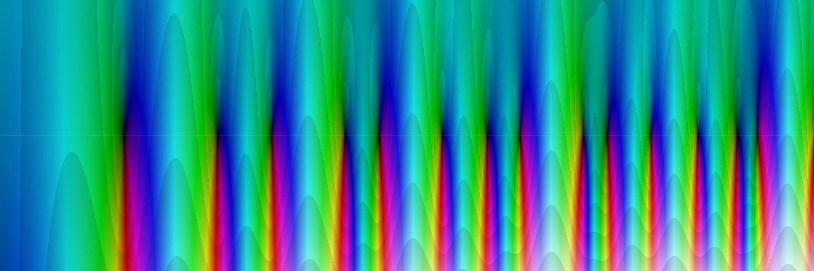

«Las armonías son escaleras que pocos ven y que el Autor dejó desde el inicio del todo.»
Jesús Nicolás Astorga
🏛️ El Museo del Laboratorio
Un recorrido por todo lo que hicimos, explicado en criollo: qué se midió, qué significa cada símbolo,
y —sobre todo— qué NO prueba. Cada pieza termina con su bloque de límites honestos.
33 paradas en el recorrido guiado · 230 en el museo completo · 27 símbolos en el diccionario
📖 El diccionario
Cada símbolo que te podés cruzar, explicado como si nunca hubieras visto una letra griega — porque no tenés por qué haberla visto.
s el punto de la pregunta
Es el lugar donde le preguntás algo a la máquina. Como el dial de una radio: lo movés y la máquina contesta otra cosa. Tiene dos perillas a la vez, por eso abajo aparecen σ y t.
σ sigma — la perilla horizontal
De qué lado de la línea estás parado. Es la mitad «izquierda-derecha» del punto s. Toda la Hipótesis es una apuesta sobre esta perilla: dice que en los ceros vale siempre ½.
t la altura
La mitad «arriba-abajo» del punto s. Es la altura a la que estás mirando, como los metros marcados en un poste.
ρ rho — una perla
Un cero: un punto donde la máquina se calla del todo. En este taller los llamamos perlas, porque hay que pescarlas de a una.
γ gamma — la altura de una perla
A qué altura quedó pescada esa perla. La primera está en γ = 14.134725. Es su número de identidad.
ζ zeta — la máquina
La máquina que suma 1 + 1/2ˢ + 1/3ˢ + 1/4ˢ + … para el punto que le des. Euler descubrió que esa suma sobre TODOS los números es igual a una multiplicación sobre SOLO los primos. O sea: la máquina escucha a los primos.
ξ xi — la máquina peinada
La misma máquina, pero vestida con unos factores extra que la vuelven perfectamente simétrica respecto de la línea del medio. Es la versión que se mira al espejo sin despeinarse.
Z(t) el detector de metales
Un truco: sobre la línea del medio esta función da números normales (no de los raros), así que se puede ver dónde cambia de signo. Donde cambia de signo hay una perla enterrada. Es literalmente pasar el detector por la playa.
θ theta — el reloj
El giro exacto que hay que aplicarle a la máquina para que el detector Z dé números normales. Es la perilla de sintonía.
λₙ lambda — los dientes del molde
Una lista infinita de números — λ₁, λ₂, λ₃… — sacados de la máquina. Un teorema de Li dice: la Hipótesis es cierta si y solo si NINGUNO de estos números es negativo. λ₁ vale 0.0230957.
n el número de diente
Cuál de los dientes de la lista estás mirando. El primero, el segundo, el cuarenta.
w el cambiaformas
Una transformación que agarra el plano entero y lo mete adentro de un círculo. Lo de afuera pasa a ser lo de adentro. Se calcula w = 1 − 1/ρ.
p un primo cualquiera
La letra que se usa para decir «acá va un número primo». Como decir «Fulano».
ψ(x) psi — la escalera de los primos
Una escalera que sube un escalón cada vez que aparece un primo (o una potencia de primo). El escalón no es de 1: es de ln p, el tamaño del primo medido en logaritmos.
π(x) pi de x — cuántos primos hay
Cuántos primos hay hasta el número x. Ojo: NO es el π de 3.14159, es otra cosa que se escribe igual. Los matemáticos son así.
Σ sigma mayúscula — «sumá todo esto»
Un cartelito que dice «sumá todos los términos que siguen». Nada más que eso.
Π pi mayúscula — «multiplicá todo esto»
Lo mismo que Σ pero multiplicando en vez de sumar.
ln el logaritmo natural
Le preguntás a un número «¿a qué potencia hay que elevar 2.718 para llegar a vos?». Sirve para aplastar números gigantes a un tamaño manejable: ln de un millón es apenas 13.8.
e el número 2.71828…
Una constante que aparece sola en todo lo que crece o decrece de manera natural: intereses, poblaciones, enfriamiento del mate.
i la unidad imaginaria
Un número inventado que cumple i × i = −1. Suena a trampa y no lo es: sirve para que los puntos vivan en un plano en vez de en una recta. Es lo que le da la segunda perilla a s.
|x| el tamaño, la distancia
Las dos barritas quieren decir «el tamaño de esto, sin importar el signo». Una distancia nunca puede ser negativa — eso lo dijo el capitán y resultó ser la clave de una fórmula entera.
Re / Im parte real / parte imaginaria
Las dos mitades de un punto del plano: Re es cuánto se corrió a los costados, Im cuánto subió o bajó.
Γ gamma mayúscula — el factorial estirado
El factorial (5! = 5×4×3×2×1) pero estirado para que funcione con cualquier número, no solo con los enteros. Es una de las piezas del vestido de ξ.
Λ(n) lambda mayúscula — el peso de un número
Vale ln p si el número es una potencia de un primo p, y vale cero si no. Es la manera de decir «este número aporta a la escalera, este otro no».
O(x) «no crece más rápido que»
Una manera de acotar. Decir que un error es O(√x) es decir «como mucho crece como la raíz cuadrada», sin comprometerse con el número exacto.
⟺ «si y solo si»
Las dos cosas van juntas o no va ninguna. Si pasa una pasa la otra, y al revés también.
1e-16 un decimal seguido de quince ceros
La manera corta de escribir números diminutos. 1e-16 es 0.0000000000000001 — el límite de precisión de una computadora común. Cuando una medición da eso, es exacta hasta donde la máquina puede ver.
SALA I LA PUERTA — ¿de qué se trata todo esto?
Bienvenido. Esta primera sala no te pide que sepas nada de antes: te pide que mires cuatro piezas en orden, porque cada una nace de la anterior. Arrancamos con los ladrillos de los números, seguimos con la escalera que los cuenta, entramos a la máquina que los escucha y terminamos parados frente a la pregunta que este laboratorio persigue. Si al salir entendés por qué la pregunta importa, la sala hizo su trabajo.
parada 1
Los ladrillos que no se pueden partir
Hay números que no se pueden repartir en partes iguales, y con esos se construyen todos los demás.
Agarrá 12 caramelos. Los podés repartir entre 2 chicos, entre 3, entre 4 o entre 6, sin romper ninguno. Ahora agarrá 13. No hay caso: o le das todo a uno, o rompés un caramelo. Ese 13 es un número PRIMO — un ladrillo que no se puede partir. Y acá viene lo lindo: todo número que se te ocurra es una multiplicación de primos, siempre, y de una sola manera. El 12 es 2x2x3. El 100 es 2x2x5x5. Los primos son las piezas básicas de la aritmética, como las letras del abecedario para las palabras. El problema es que aparecen SIN AVISO: 2, 3, 5, 7, 11, 13, 17... y nadie sabe la regla.
Como en la vida realSon los ladrillos del edificio de los números. Todo lo que veas está hecho con ellos — pero el camión que los trae no sigue ningún horario.
Qué estás mirandoEn la lámina cada escalón es un primo nuevo apareciendo. Fijate que los saltos no tienen ritmo: a veces vienen pegados, a veces hay un hueco largo.
Los símbolos, uno por uno
p
la letra que los matemáticos usan para 'un número primo cualquiera'
⚖️ Lo honestoQue no sepamos la regla no significa que no haya orden: significa que el orden está escondido en otro lado.
parada 2 · cmd/seisdirecciones
La escalera que sube sin aviso
Contar primos es fácil; lo difícil es adivinar cuántos hay antes de sentarse a contarlos.
Contá conmigo. Hasta el 10 hay cuatro primos: 2, 3, 5 y 7. Hasta el 100 hay 25. Hasta el 1000, hay 168. Eso que acabamos de hacer —darle un número a alguien y que te conteste cuántos primos entran hasta ahí— es una máquina de contar. Si la dibujás en un papel no te sale una rampa suave: te sale una escalera. Cada primo nuevo es un escalón para arriba. Entre primo y primo, planchada. Ahora lo lindo. De cerca los escalones parecen un desorden, pero de lejos la escalera sube con una prolijidad increíble: se parece muchísimo a x dividido el logaritmo de x. Ese logaritmo es un número que crece lentísimo — para mil vale casi 7, para un millón casi 14. Traducido: cuanto más grande el número, más raleados vienen los primos. La tendencia la tenemos. El escalón por escalón no lo domina nadie.
Como en la vida realEs la planilla de ventas del almacén: día por día parece un despelote, pero el total de fin de mes cae siempre cerca del mismo número.
Qué estás mirandoEn la lámina hay dos cosas superpuestas: la escalera dura de los primos de verdad, y encima una curva lisa que la acompaña. Fijate que nunca se tocan del todo — siempre queda un tembleque entre las dos.
Los símbolos, uno por uno
x
el número hasta donde estás contando
π(x)
la máquina que cuenta: le metés el número x y te dice cuántos primos hay hasta ahí. Ojo, este π no tiene nada que ver con el de la circunferencia
ln x
el logaritmo natural de x: un número que crece muy despacito y mide qué tan separados vienen los primos por esa zona
⚖️ Lo honestoLa fórmula acierta la tendencia, no el detalle: nunca te dice si el próximo primo cae acá nomás o dentro de cien números.
parada 3 · cmd/dosmelodias
La máquina que escucha a los primos
Una suma que recorre todos los números resultó ser, en secreto, una multiplicación que solo habla de primos.
Imaginate una radio con una sola perilla. La movás donde la movás, la radio te devuelve un número. Adentro la máquina hace algo bastante bobo: suma 1, más 1 dividido 2 elevado a la perilla, más 1 dividido 3 elevado a la perilla, más 1 dividido 4 elevado a la perilla, y así con TODOS los números, hasta no terminar nunca. Esa máquina se llama zeta. Hasta ahí, una cuenta larga y aburrida. Pero en 1737 Euler se dio cuenta de algo que te vuela la cabeza: esa suma infinita, que usa todos los números, da exactamente lo mismo que una multiplicación en la que entran SOLO los primos, un factorcito por cada primo. O sea: aunque vos le hables de todos los números, la máquina en el fondo escucha únicamente a los ladrillos.
Como en la vida realEs la radio del taller: vos tocás una sola perilla, y por el parlante sale la voz de una emisora que ni sabías que estaba transmitiendo.
Qué estás mirandoEn la lámina están las dos caras de la misma cosa: a la izquierda la suma que se come todos los números, a la derecha la multiplicación donde solo entran 2, 3, 5, 7, 11... y las dos dan el mismo resultado.
Los símbolos, uno por uno
ζ
la letra griega zeta, que es el nombre de la máquina. Se pronuncia 'seta'
s
la perilla: el número que vos le metés a la máquina
1/2^s
uno dividido dos elevado a la perilla — es el aporte que pone el número 2 en la suma
Σ
letra griega que quiere decir 'sumá todo esto'
Π
letra griega que quiere decir 'multiplicá todo esto'
⚖️ Lo honestoLa igualdad de Euler está probada hace casi trescientos años, pero por sí sola no te dice dónde va a caer el próximo primo.
parada 4 · cmd/lacruz
Todos parados en la misma línea
Riemann apostó en 1859 que los puntos donde la máquina se apaga están todos alineados, y en 166 años nadie pudo confirmarlo ni tumbarlo.
Hay perillas que hacen que la máquina dé cero. Cero pelado. A esos puntos se les dice ceros de zeta. Unos cuantos son aburridos y ya los conocemos a todos; los otros, los interesantes, son el corazón del asunto. Acá hay que agregar una cosa: la perilla no es un número común, tiene dos coordenadas, como una dirección de la ciudad — cuántas cuadras camino para un lado, y cuántos pisos subo. A la primera coordenada, la de las cuadras, se le dice 'parte real'. Riemann miró los ceros interesantes que se conocían y notó que todos tenían la misma primera coordenada: un medio. Todos parados sobre una misma línea vertical, como postes de luz sobre el cordón de la vereda. Y escribió que seguramente pasa siempre. Eso es la Hipótesis. Se calcularon miles de millones de ceros y ninguno se salió de la línea.
Como en la vida realEs como caminar mil millones de postes de luz y encontrarlos todos sobre el mismo cordón: convence, claro, pero no prueba que no haya uno torcido diez cuadras más allá de donde llegaste.
Qué estás mirandoEn la lámina, la franja gris es toda la zona donde los ceros interesantes tienen permitido vivir, y la raya del medio es la vereda de Riemann. Cada puntito es un cero encontrado de verdad: fijate que ninguno se corre.
Los símbolos, uno por uno
s = a + b i
la perilla escrita como dirección: 'a' son las cuadras (la parte real) y 'b' los pisos (la parte imaginaria)
Re(s)
así se escribe 'la parte real de s', o sea la primera coordenada, las cuadras
1/2
un medio: la cuadra donde, según Riemann, están parados todos los ceros interesantes
ζ(s) = 0
con esa perilla puesta, la máquina da cero
⚖️ Lo honestoNingún cálculo, por grande que sea, prueba la Hipótesis: acá se prueba con demostración o no se prueba, y todavía no.
SALA II LAS PERLAS — encontrar los ceros
Bienvenido a la sala de las perlas, Nico. Acá no discutimos teoría: acá salimos a pescar y traemos lo que se pescó, con nombre y número. Vas a ver el aparatito que usamos para encontrarlos, la lista de los primeros que aparecieron, y dos láminas que dibujó el capitán a mano y que resultaron decir más de lo que parecían.
parada 5
El detector de metales
Un aparatito que convierte una cuenta imposible de leer en una aguja que sube y baja, y pita justo donde hay algo enterrado.
La función de Riemann, cuando caminás por la línea del medio, no te devuelve un número común: te devuelve un número con giro. Dos datos en vez de uno: cuánto mide y para dónde apunta. Eso es un lío, porque a un número que gira no le podés decir 'acá es positivo y acá es negativo'. Entonces se hace un truco de taller: se le saca el giro. Se lo multiplica por una vuelta exacta que lo cancela. Lo que queda se llama Z(t), y es un número común y silvestre, de los que van en una recta: arriba de cero o abajo de cero, sin vueltas. Y ahí aparece la ventaja: si Z vale +3 en una altura y -2 un poquito más arriba, en el medio TUVO que pasar por cero. No hay cómo salteárselo. Ese cero es una perla.
Como en la vida realEs el tipo con el detector de metales en la playa: no ve la moneda, pero el aparato pita y él sabe que cavando ahí la encuentra.
Qué estás mirandoEn la lámina ves una curva que serpentea cruzando la línea del cero una y otra vez. Cada cruce marcado es una perla; no hay ninguna marca donde la curva no cruza.
Los símbolos, uno por uno
Z(t)
el 'detector': la función arreglada para que siempre dé un número común, sin giro
t
la altura a la que estás parado sobre la línea del medio
cero
el punto donde la función no vale nada, ni positivo ni negativo: se anula
⚖️ Lo honestoEl cambio de signo garantiza que ahí HAY un cero, pero no dice absolutamente nada sobre si existen otros ceros afuera de la línea, donde este detector no llega.
parada 6 · cmd/zyeltodo
Las perlas que ya están en la bolsa
El laboratorio pescó 649 perlas y las tres primeras están a 14 con monedas, 21 con monedas y 25 con monedas de altura.
Pensá la línea del medio como un poste de luz plantado en el piso. Vos vas subiendo y marcando con tiza. La marca dice a qué altura estás, y esa altura es lo que llamamos t. La primera perla no aparece enseguida: hay que subir hasta t = 14,134725. Un buen tramo de poste vacío y de golpe, ahí, la función se anula. La segunda está en 21,022040. La tercera en 25,010858. Fijate que no hay ritmo: el hueco del piso a la primera es enorme, después vienen más seguidas. El laboratorio subió hasta la altura 1000 y contó 649 perlas. Todas, absolutamente todas, cayeron sobre la línea del medio. Ni una se fue para el costado.
Como en la vida realSon las marcas de tiza en el marco de la puerta donde se mide cuánto creciste: no elegís vos dónde va la marca, la marca cae donde cae.
Qué estás mirandoEn la lámina el poste está vertical y cada perla es un punto sobre él. Mirá los espacios entre puntos: se van achicando de a poco a medida que subís.
Los símbolos, uno por uno
t = 14,134725
la altura, medida sobre la línea del medio, donde apareció la primera perla
t = 1000
hasta dónde subimos a buscar; más arriba no miramos todavía
649
cuántas perlas encontramos en ese tramo
⚖️ Lo honesto649 perlas bien acomodadas no prueban nada sobre las infinitas que faltan: contar monedas en una playa no demuestra que todo el mar tenga monedas.
parada 7 · cmd/lacruz
La cruz que dibujó el capitán
Un dibujo hecho a mano en un cuaderno: cuatro curvas que se arriman a los brazos de una cruz y nunca los tocan.
Agarrá un metro de soga y cortala en dos pedazos. Si cortás a 30 y 70, el rectángulo que armás mide 21. Si cortás a 40 y 60, mide 24. Si cortás justo al medio, 50 y 50, mide 25: el máximo. Cualquier otro corte te da menos. Esa cuenta 'un pedazo por lo que le falta' es la función s(1-s), y en la recta de siempre su punto más alto está en el medio, en ½, valiendo ¼. Lo lindo es lo que pasó cuando el capitán la dibujó en el plano entero, con giros y todo: ese ½ no es solo el mejor de la recta. Es el ÚNICO punto de todo el plano donde la función se queda quieta, donde su pendiente se anula. Uno solo. Y el capitán lo encontró dibujando.
Como en la vida realEs la soga cortada en dos: el área más grande siempre sale cortando justo al medio, y todo el mundo lo sabe sin hacer la cuenta.
Qué estás mirandoEn la lámina hay una cruz de dos brazos y cuatro curvas que se le acercan de a poco sin tocarla nunca. El cruce de los brazos es el ½.
Los símbolos, uno por uno
s
el número cualquiera al que le aplicás la cuenta; puede tener giro, no solo tamaño
s(1-s)
'el pedazo por lo que le falta para uno': la cuenta de la soga
½
el punto del medio, donde la cuenta se queda quieta
¼
cuánto vale la cuenta ahí: el valor del punto quieto
punto crítico
donde la función deja de subir y todavía no empezó a bajar: la pendiente es cero
⚖️ Lo honestoQue el ½ sea el único punto quieto de esta cuenta no prueba que los ceros vivan ahí: es una coincidencia hermosa, no una demostración.
parada 8 · cmd/lacruz
La misma cruz, pero es una onda
Si en vez de mirar la cruz con regla la mirás dando vueltas alrededor del centro, la cruz deja de ser cuatro curvas y pasa a ser una sola onda.
Parate en el ½ y empezá a girar en círculo alrededor de él, siempre a la misma distancia. Anotá lo que va valiendo la cuenta de la soga mientras girás. Lo que sale es una onda: sube, baja, sube, baja. Y cuando volvés al punto de partida, la onda dio DOS vueltas completas, no una. Los cuatro momentos en que la onda pasa por su valor de reposo son exactamente los cuatro brazos de la cruz que dibujó el capitán a mano. Los brazos no eran cuatro cosas: eran los cuatro nodos de una misma onda. Y si te alejás del centro, la onda no crece de a poco: crece como el área, al cuadrado. A distancia doble, olas cuatro veces más grandes.
Como en la vida realEs la cuerda de la guitarra tocada al medio: la nota que sale es el doble de la fundamental, y aparecen puntos quietos que no vibran nada. La cruz son esos puntos quietos.
Qué estás mirandoEn la lámina la cruz y la onda están superpuestas: cada brazo de la cruz cae justo donde la onda toca su línea de reposo.
Los símbolos, uno por uno
r
la distancia desde el ½ hasta donde estás parado
r²
cuánto crece la altura de la onda: al doble de distancia, cuatro veces más alta
frecuencia 2
la onda da dos vueltas mientras vos das una sola alrededor del centro
2 = 1 / ½
el dos sale del medio: porque el centro está a mitad de camino, la onda va al doble
nodo
el punto de la onda que no se mueve, como el punto quieto de una cuerda de guitarra
⚖️ Lo honestoEsto es geometría de una cuenta simple, no de la función de Riemann: explica por qué el ½ es especial en el dibujo, pero todavía no.
SALA III EL CAMBIAFORMAS Y LA DIMENSIÓN 0
Bienvenido a la sala del cambiaformas. Acá el plano infinito entra entero adentro de un plato, y todo lo que parecía lejísimo queda al alcance de la mano. Mirá bien una cosa: el problema no se achica, solo cambia el idioma en que está escrito.
parada 9 · cmd/cambiaformas
El cambiaformas
Una receta que agarra el plano entero, infinito, y lo mete adentro de un plato sin perder un solo punto.
El plano es una hoja sin bordes: se estira para siempre en las cuatro direcciones. El cambiaformas es una receta que agarra esa hoja y la mete adentro de un círculo del tamaño de un plato. Cada punto de la hoja tiene su lugar exacto en el plato, y no se pierde ninguno. La receta es cortita: agarrás el punto, lo das vuelta (uno dividido por él), y eso se lo restás a uno. Suena a nada. Pero hace magia. Lo que estaba infinitamente lejos queda pegadito a un costado del plato, y lo que estaba cerca del cero se va al borde. Adentro y afuera se dan vuelta como una media. Xian-Jin Li propuso esta receta en 1997 para mirar el problema desde adentro del plato, donde todo entra en la mano.
Como en la vida realEs la media que te sacás y das vuelta: la misma media, la misma lana, pero ahora lo que era la cara de afuera te queda contra la piel.
Qué estás mirandoEn la lámina vas a ver la hoja infinita a la izquierda y el plato a la derecha, con los mismos colores. Seguí una recta de la hoja y fijate cómo llega curvada adentro del plato.
Los símbolos, uno por uno
ρ (rho)
una perla: uno de los ceros de la función zeta, el punto que estamos siguiendo
1/ρ
uno dividido por ese punto: la vuelta de campana, lo grande se hace chico y al revés
w = 1 − 1/ρ
el lugar donde esa perla aterriza adentro del plato
⚖️ Lo honestoCambiar de lente no resuelve nada por sí solo: te deja ver mejor, pero la dificultad sigue entera del otro lado del vidrio.
parada 10 · cmd/cardinales
Norte por sur igual a uno
Si una perla se corre para un lado, la gemela se corre para el otro, y los dos corrimientos multiplicados dan exactamente uno.
La zeta tiene una simetría de nacimiento: si hay una perla en un lugar, hay otra en el espejo, del otro lado de la línea. Nunca viene sola. Ahora pasá el par por el cambiaformas y mirá qué pasa adentro del plato. Si una queda adentro del círculo, la gemela queda afuera. Y no de cualquier manera. Medís cuánto se alejó del centro cada una, multiplicás los dos números, y da uno. Exacto. Lo medimos en la máquina y el error fue 0,00000000000000033: eso es el polvo de la balanza, no una diferencia de verdad. Si una está a media distancia, la otra está al doble. Si una está a un décimo, la otra a diez. Y hay un solo caso donde las dos caen en el mismo sitio: cuando las dos valen uno. Ahí están sobre la línea.
Como en la vida realEs la balanza del almacenero: si un plato baja, el otro sube lo mismo. Solo quedan quietas cuando las dos están al mismo nivel.
Qué estás mirandoEn la lámina cada par de gemelas está unido por un hilo que pasa por el centro. Fijate que si una está pegada al borde por adentro, la otra está justo afuera, a la distancia inversa.
Los símbolos, uno por uno
ρ y 1−ρ
la perla y su gemela obligada, una el espejo de la otra
|w|
el tamaño: cuánto se alejó del centro del plato esa perla ya doblada
3,3 × 10⁻¹⁶
un error de 33 recién en el lugar decimal diecisiete: el ruido de la calculadora, nada más
⚖️ Lo honestoEsto no dice que las perlas estén sobre la línea: dice que si una se corre, la otra se corre lo mismo del otro lado — la simetría viene de regalo, la línea no.
parada 11 · cmd/mediatriz
La mediatriz
La línea crítica no la eligió nadie: es el replanteo entre dos estacas, una en el cero y otra en el uno.
En la obra, cuando el albañil quiere marcar el medio exacto entre dos estacas, no saca el metro. Clava una estaca en cada punta, ata una soga del mismo largo a cada una, y marca donde los largos empatan. Esa marca, y todas las que salen igual, forman una recta perfectamente parada en el medio. Eso se llama mediatriz. Bueno: la línea crítica de Riemann es exactamente eso. Clavás una estaca en el cero y otra en el uno. Todos los puntos del plano que están a la misma distancia de las dos estacas forman una línea vertical que pasa por el 0,5. Esa es la línea. No es un capricho de un matemático alemán del siglo pasado: es el replanteo natural entre dos puntos que la zeta trata como iguales.
Como en la vida realDos estacas, dos sogas del mismo largo, y la línea del medio aparece sola. Nadie la dibujó: salió de la geometría.
Qué estás mirandoEn la lámina están las dos estacas y el abanico de sogas tensadas. Donde los largos empatan, la línea vertical se dibuja sola.
Los símbolos, uno por uno
s
un punto cualquiera del plano, el que estás midiendo
|s|
el largo de la soga desde ese punto hasta la estaca del cero
|s − 1|
el largo de la soga desde ese punto hasta la estaca del uno
Re s = ½
la parte horizontal del punto vale un medio: eso es estar sobre la línea
⚖️ Lo honestoEsto explica por qué la línea está donde está, pero no da ni una sola razón para que las perlas se acomoden encima de ella.
parada 12 · cmd/zyeltodo
La piel de la dimensión 0
El borde del plato y la línea crítica no se parecen: son la misma cosa, punto por punto.
Acá está la joya de la sala. El cambiaformas no solo dobla el plano: lo dobla con precisión de relojero. Toda la mitad derecha del plano entra justita adentro del disco. Y el borde del disco, la piel, el redondel de afuera, es la línea crítica misma. Sin sobrar ni faltar nada. La cuenta lo dice sin vueltas: la distancia a la línea es igual a uno menos el tamaño al cuadrado, dividido por algo que siempre es positivo. Como el de abajo nunca cambia de signo, todo depende de una sola cosa. Tamaño menor que uno: estás adentro del disco y a la derecha de la línea. Tamaño mayor que uno: afuera y a la izquierda. Tamaño exactamente uno: estás en la piel y en la línea al mismo tiempo. Dos preguntas escritas en dos idiomas, con la misma respuesta.
Como en la vida realEs el guante dado vuelta: la costura del guante y el borde de la mano son la misma línea, solo que ahora la mirás de frente.
Qué estás mirandoEn la lámina el disco y el semiplano están uno al lado del otro. Seguí una perla y fijate que su color — adentro o afuera — no cambia al saltar de un dibujo al otro.
Los símbolos, uno por uno
z
la perla ya doblada, aterrizada adentro del plato
|z|
el tamaño: la distancia de esa perla al centro del plato
Re s
la parte horizontal del punto: qué tan a la derecha está
Re s − ½
de qué lado de la línea estás, y cuánto
|1 − z|²
una distancia al cuadrado: siempre positiva, jamás voltea el signo
⚖️ Lo honestoEs una traducción exacta, no una prueba: el problema pasa del semiplano al disco intacto, con la misma dificultad adentro.
parada 13 · cmd/relojdearena
El reloj de arena
Cuanto más alto vive un cero, más apretado queda contra el broche del collar — y nunca llega a tocarlo.
Cada perla vive a una altura. La primera está a catorce y pico, y de ahí para arriba siguen apareciendo, sin final. Cuando una pasa por el cambiaformas, aterriza en el borde del plato, en algún ángulo del redondel. Y el ángulo es, más o menos, uno dividido por la altura. Altura diez: ángulo 0,0999. Altura cien: 0,01. Altura un uno con doscientos ceros atrás: un ángulo con doscientos ceros después de la coma. Todas se amontonan contra un mismo punto del borde, el broche del collar, ahí donde el ángulo vale cero. Se acercan y se acercan y no llegan nunca. Todo el resto del redondel queda casi vacío, y toda la infinitud de perlas apretada en un rincón que no se ve.
Como en la vida realUn reloj de arena: los granos se aprietan contra el cuello cada vez más, pero ninguno termina de pasar.
Qué estás mirandoEn la lámina el borde del plato tiene una marca por cada perla. Fijate cómo se amontonan hacia un solo costado y dejan el resto de la vuelta casi limpio.
Los símbolos, uno por uno
γ (gamma)
la altura a la que vive la perla, contada desde el piso
1/γ
uno dividido por la altura: el ángulo al que aterriza en la vuelta del plato
10²⁰⁰
un uno con doscientos ceros atrás
⚖️ Lo honestoEl amontonamiento es culpa de la receta, no mérito de las perlas: cualquier cosa que suba muy alto termina apretada contra el broche, esté bien o mal ubicada.
SALA IV EL MOLDE — los dientes que no pueden ser negativos
Bienvenido a la sala del molde. Acá el problema se saca la máscara y se pone otra: en vez de perseguir perlas por un tablero infinito, vas a mirar una lista de números y a preguntarte una sola cosa, siempre la misma — ¿alguno se hunde por debajo del cero? Sentate tranquilo, que esta sala se entiende entera sin saber una gota de matemática.
parada 14 · cmd/formula
Los dientes que no pueden hundirse
Alguien encontró la forma de cambiar la pregunta: en vez de perseguir perlas por un tablero infinito, ahora hay que revisar que una lista de números no baje del cero.
Imaginate una máquina que tritura toda la información sobre dónde están las perlas y te escupe una lista de números: el primero, el segundo, el tercero, y así al infinito. A esos números les decimos dientes. El primero vale 0,0230957. Chiquito, pero positivo. En 1997 un matemático, Xian-Jin Li, demostró algo hermoso: la Hipótesis es verdadera exactamente cuando ningún diente de esa lista es negativo. Ni uno solo. Fijate lo que pasó ahí. Antes había que salir a buscar infinitos puntos por un plano para ver si alguno se corría de la línea. Ahora hay que mirar una lista y asegurarse de que ninguno se hunda por debajo del cero. Es el mismo problema dicho en otro idioma. Pero el idioma nuevo se puede medir, y eso cambia todo.
Como en la vida realEs el control de calidad al final de la fábrica. En vez de vigilar cada máquina de adentro, revisás las piezas que salen por la cinta: si ninguna sale fallada, la fábrica está bien.
Qué estás mirandoEn la lámina cada diente es una barrita, y todas están apoyadas arriba de la línea del cero. Fijate que la primera es la más flaquita de todas, casi rozando el piso.
Los símbolos, uno por uno
λ (lambda)
la letra griega que se usa para nombrar un diente de la lista
λ_n (lambda sub ene)
el diente número ene: el primero, el segundo, el tercero, según qué número pongas abajo
≥ 0
se lee 'mayor o igual que cero': o sea, que no baje del piso
λ_1 = 0,0230957
el primer diente, ya calculado con la máquina: positivo, pero por poco
⚖️ Lo honestoQue los primeros dientes den positivos no prueba absolutamente nada: la lista es infinita, y alcanza con que uno solo, allá lejos, se hunda para que se caiga todo.
parada 15 · cmd/formula
La forma y la fuga
Cada diente se arma con dos pedazos: uno que no puede fallar ni queriendo, y otro donde está encerrado el millón de dólares.
Un diente no viene de una sola pieza: se arma sumando el aporte de cada par de perlas. Y ese aporte se parte en dos. El primer pedazo es una distancia elevada al cuadrado. Y una distancia al cuadrado jamás puede dar negativa: el área de un cuadrado no puede ser menos que nada, no existe. Ese lado está cerrado con llave, ahí no hay por dónde entrar. El segundo pedazo es otra historia. Le decimos la fuga. Da cero exacto cuando la perla está parada justo sobre la línea, y se despega del cero apenas se corre un milímetro para afuera. Ahí, en ese único término, quedó encerrado todo el problema. Si alguien demuestra que la fuga nunca alcanza para empujar el diente por debajo del cero, se terminó.
Como en la vida realEs un techo de dos chapas. Una está soldada y no entra agua ni con tormenta. La otra tiene una junta: si la perla está en su lugar, cierra perfecto; si se corre, gotea.
Qué estás mirandoEn la lámina el aporte aparece partido en dos colores. El bloque de la forma siempre empuja para arriba. La fuga se queda pegada al cero y solo se levanta cuando la perla se sale de la línea.
Los símbolos, uno por uno
|1 - w^n|²
la forma: una distancia elevada al cuadrado, o sea cuán lejos quedó un punto de otro; al estar al cuadrado, nunca puede dar negativa
w (doble ve)
el número que representa una perla, ya trasladado al tablero redondo donde se hace la cuenta
|w| (las barritas)
'a qué distancia del centro quedó la perla'; vale exactamente uno cuando está sobre la línea
1 - |w|^{2n}
la fuga: da cero exacto si la perla está sobre la línea, y se despega apenas se corre para afuera
n (ene)
el número del diente que estás armando: el primero, el segundo, el tercero
⚖️ Lo honestoPartir el problema en dos no lo resuelve: solo lo empuja entero adentro de la fuga, y esa parte sigue sin domar.
parada 16 · cmd/lamitad
La mitad es el precio más barato
Si dos números multiplicados tienen que dar uno, el promedio entre ellos nunca baja de uno, y toca el fondo solamente cuando los dos son iguales.
Hay una simetría vieja acá: las perlas vienen de a pares, espejadas. Llamale norte a una y sur a la otra. Y hay una ley que dice que el norte multiplicado por el sur siempre da uno. Ahora usá algo que sabés desde la escuela sin saber cómo se llama: si dos números multiplicados dan uno, el promedio entre ellos nunca puede ser menor que uno. Probalo. Dos por un medio da uno, y el promedio es uno con veinticinco. Cuatro por un cuarto también da uno, y el promedio ya salta a dos con doce. Cuanto más desparejos, más caro sale. El promedio toca uno, el mínimo absoluto, en un solo caso del mundo: cuando los dos valen exactamente uno. Traducido: estar sobre la línea es el lugar más barato del tablero.
Como en la vida realEs alambrar un terreno de superficie fija. El cuadrado te sale con menos alambre que cualquier rectángulo largo y flaco. Cuanto más desparejo el terreno, más alambre pagás.
Qué estás mirandoEn la lámina hay una curva con forma de pileta. El fondo de la pileta está clavado en el uno, y ahí es donde caen las dos mitades cuando son iguales.
Los símbolos, uno por uno
N y S
el norte y el sur: las dos perlas espejadas de un mismo par
N × S = 1
el norte multiplicado por el sur siempre da uno; es una ley de la simetría, no una casualidad
(N + S) / 2
el promedio de toda la vida: los sumás y los partís al medio
≥ 1
se lee 'nunca baja de uno'
⚖️ Lo honestoEsto muestra que la línea es el punto más barato, pero no demuestra que la naturaleza esté obligada a pagar el precio más barato.
parada 17 · cmd/comprimir
Todas las curvas eran la misma
Parecían cientos de curvas distintas, pero medidas con la vara correcta se apilan todas en una sola.
Cuando el laboratorio dibujó el aporte de cada perla, salieron cientos de curvas distintas. Una por cada perla, y cada una cambiando además según el número de diente. Un despelote. Parecía que había que estudiarlas de a una, y así no se llega nunca. El capitán dijo que no: que el aporte no dependía de esas dos cosas por separado, sino de la relación entre ellas. Cuántos dientes por cada altura de perla. A esa razón le pusimos u. Rehicimos el dibujo poniendo u en el eje de abajo, y pasó lo que él decía: las cientos de curvas se fueron apilando una arriba de la otra hasta quedar un solo trazo. Todo el comportamiento de una perla, esté donde esté, cabe en una única forma. El capitán corrigió al laboratorio y tenía razón.
Como en la vida realEs como la masa de la pizza. Doscientos de harina con cien de agua, o cuatrocientos con doscientos: parecen recetas distintas, pero es la misma masa. Lo que manda es la proporción, no los números sueltos.
Qué estás mirandoEn la lámina de la izquierda ves un enjambre de curvas cruzándose sin sentido. En la de la derecha, con la vara nueva en el eje de abajo, quedó un solo trazo limpio.
Los símbolos, uno por uno
n (ene)
el número del diente que estás armando
γ (gamma)
la altura a la que está la perla sobre el tablero
u
la razón entre las dos: la única cantidad que de verdad manda
u = n / γ
se lee 'u es ene dividido gamma': el número de diente repartido entre la altura de la perla
⚖️ Lo honestoQue todo colapse en una sola curva es una simplificación enorme, no una demostración: sigue sin decirnos que esa curva no se hunda por debajo del cero.
SALA V LA MÚSICA DE LOS PRIMOS
Entrá despacio, que esta sala suena. Acá los números dejan de ser números y se vuelven sonido: cada primo es una nota, cada cero es un músico, y el problema entero se convierte en una pregunta de oído — ¿está afinada la orquesta o hay uno que toca más fuerte? Lo que vas a ver en las cuatro piezas es el laboratorio armando esa orquesta pieza por pieza, y midiendo si el sonido cierra.
parada 18 · cmd/dosmelodias
Las dos cuentas que dan lo mismo
Sumás todos los números por un lado, multiplicás solo los primos por el otro, y el resultado es idéntico.
Poné todos los números en fila: 1, 2, 3, 4, 5, 6... y armá con ellos una suma larguísima. Ahora hacé lo contrario: tirá a la basura todo salvo los primos, y en vez de sumar, multiplicá. Son dos cuentas que no se parecen en nada — una usa todo, la otra usa casi nada; una suma, la otra multiplica. Y sin embargo dan lo mismo. Exactamente lo mismo. El laboratorio lo verificó con 216.816 primos y las dos cuentas coincidieron hasta el decimal catorce. ¿Qué te está diciendo eso? Que los compuestos —el 4, el 6, el 12— no aportan ni una nota nueva. El 12 es 2x2x3: ya lo contaste cuando contaste el 2 y el 3. Su melodía ya es la de los primos, vuelta a tocar.
Como en la vida realEs como el almacén: podés contar la plata sumando cada billete de la caja, o multiplicando cuántos paquetes de cada cosa vendiste. Dos cuentas distintas, la misma guita al final del día.
Qué estás mirandoEn la lámina hay dos curvas, una por cada cuenta. Fijate que no son dos curvas parecidas: son una sola, porque están pisadas una encima de la otra.
Los símbolos, uno por uno
Σ (sigma grande)
la orden de 'sumá todo lo que sigue', usando todos los números
Π (pi grande)
la orden de 'multiplicá todo lo que sigue', usando solo los primos
3.3e-14
forma corta de escribir 0,000000000000033 — el hueco que quedó entre las dos cuentas, o sea prácticamente nada
⚖️ Lo honestoQue las dos cuentas coincidan no prueba la Hipótesis de Riemann: prueba que primos y números enteros son el mismo idioma, que es el permiso para empezar, no el final.
parada 19 · cmd/melodia
El molde que viene adentro de los primos
Escuchando solo primos, el laboratorio dibujó un número que pertenece al mundo de los ceros — sin mirar un solo cero.
Los primos no son nada más una lista suelta: traen un molde adentro. El laboratorio pasó una criba —el colador de toda la vida, ir tachando múltiplos— por veinte millones de primos. De esa cuenta salió un número viejo y famoso: gamma, la constante de Euler, 0,577184628. No la copió de ningún libro: la sacó de los primos, a mano. Y con ese número, siguiendo la receta, salió otro: lambda uno = 0,023080190. Acá está lo grueso. Ese lambda no vive en el barrio de los primos: vive en el barrio de los CEROS, esos puntos donde la melodía se apaga. Y el laboratorio lo clavó con un error de 0,0000155, sin espiar un solo cero. Escuchó primos y le salió el plano de los ceros.
Como en la vida realEs como escuchar el motor de un auto desde la vereda y dibujar bien los pistones que tiene adentro, sin abrir el capó.
Qué estás mirandoEn la lámina se ve la criba trabajando: la constante se va estabilizando a medida que entran más primos, hasta quedar quieta en el 0,5771.
Los símbolos, uno por uno
γ (gamma)
la constante de Euler, 0,5771...; una especie de 'peaje fijo' que aparece cada vez que contás cosas que se van espaciando
λ₁ (lambda uno)
el primer número de una lista que describe cómo están puestos los ceros
1.55e-5
forma corta de 0,0000155 — la distancia que quedó entre lo calculado y el valor verdadero
⚖️ Lo honestoAcertar un solo número del mundo de los ceros no demuestra dónde están todos los ceros: muestra que los dos mundos hablan, no que estén domados.
parada 20 · cmd/seisdirecciones
Las seis direcciones
Con norte, sur, este y oeste el dibujo queda quieto; recién con arriba y abajo empieza a sonar.
Imaginate una plaza. Podés caminar al norte, al sur, al este y al oeste. Con esas cuatro direcciones tenés un mapa plano — y en ese mapa el dibujo de los primos está QUIETO, congelado, como una foto. Falta lo que lo hace mover: arriba y abajo. Esas dos direcciones, la quinta y la sexta, son x, la escala a la que estás escuchando. Escuchar 'hasta el mil' o 'hasta el billón' son dos alturas distintas del mismo tema. Y ahora sí, cada dirección tiene su trabajo. Este/oeste te da el VOLUMEN de cada nota: cuán fuerte suena. Norte/sur te da el TONO: si es grave o aguda. Arriba/abajo te da el TIEMPO: en qué momento del tema estás parado. Seis direcciones, tres oficios, una sola música.
Como en la vida realEs la radio vieja: una perilla mueve el volumen, otra busca la estación, y el tema igual va cambiando solo con que pase el tiempo. Tres perillas, no una.
Qué estás mirandoEn el experimento vas a ver que si movés solo el mapa plano no pasa nada: la figura se mantiene igual. Recién cuando subís o bajás la escala, el dibujo respira.
Los símbolos, uno por uno
x
la escala a la que mirás: hasta qué número estás contando; es el arriba/abajo, el tiempo del tema
σ (sigma chica)
cuánto te corriste al este o al oeste; manda el volumen de la nota
t
cuánto te corriste al norte o al sur; manda el tono de la nota
s = σ + it
la manera corta de escribir 'estoy parado en tal punto de la plaza': primero el volumen, después el tono
⚖️ Lo honestoEsto es una forma de mirar, no una demostración: ordenar bien las direcciones te deja ver el problema, no te lo resuelve.
parada 21 · cmd/seisdirecciones
La orquesta afinada
Cada cero es un músico, y la Hipótesis de Riemann dice apenas esto: que ninguno toca más fuerte que los demás.
La fórmula explícita de Riemann es una máquina de traducir. Le metés un cero —uno de esos puntos donde la melodía se apaga— y te devuelve UNA NOTA PURA, limpia, como cuando pulsás una sola cuerda de la guitarra. El laboratorio agarró 269 ceros, los volvió 269 notas, las sumó, y de esa suma salió dibujada la escalera de los primos: desvío promedio 0,0945, menos de un décimo de escalón. Y usó SOLO las alturas de los ceros, nada más. Ahora el ½. Ese número es el volumen al que suena cada nota. Si una sola perla estuviera corrida a 0,7 en vez de 0,5, esa nota taparía a todas las demás — a escala gigante la cuenta del laboratorio la pone miles de millones de veces más fuerte. La Hipótesis dice eso: la orquesta está afinada.
Como en la vida realEs la banda del barrio: si el bombo se manda diez veces más fuerte que todos, no importa lo bien que toquen los demás, el tema se arruina.
Qué estás mirandoEn la lámina se ven las notas apilándose una sobre otra, y la escalera real de los primos apareciendo debajo, escalón por escalón, a medida que entran más músicos.
Los símbolos, uno por uno
½
el 0,5 que sería el volumen exacto de TODAS las notas si la orquesta está afinada
269
cuántos ceros usó el laboratorio, o sea cuántos músicos entraron a tocar
0,0945
el desvío promedio: menos de un décimo de escalón de diferencia entre lo reconstruido y la escalera verdadera
10^24
un 1 seguido de 24 ceros; una escala enorme, para probar qué pasa cuando el tema se estira
⚖️ Lo honestoReconstruir la escalera con 269 notas confirma que la fórmula funciona, no que los infinitos músicos restantes estén afinados — y esa es justamente la pregunta abierta: todavía no.
SALA VI LA ESCALA — el ½ no era sagrado
Entrás a la sala donde el laboratorio se dio vuelta y le apuntó al número más famoso del problema: el ½. Acá no se pregunta dónde están los ceros, se pregunta de dónde sale esa mitad y quién la puso. La respuesta corta, que después te vamos a mostrar medida: no la ponen los primos, la pone la manera de medir.
parada 22 · cmd/labase
La escritura que no cierra nunca
La mitad de una torta es la mitad, aunque para escribirla te falte papel para siempre.
Escribir un número y el número no son la misma cosa. La mitad de algo es la mitad, la escribas como la escribas. En nuestro sistema, el de los diez dedos, se anota 0,5. En binario, el de las máquinas, 0,1. En hexadecimal se anota 0,8. Y en base 3 se anota 0,111111... y no termina nunca. Fijate qué raro: la escritura no cierra, y la torta igual está partida al medio, perfecta. El problema es del lápiz, no de la torta. El laboratorio se tomó el trabajo de reescribir el libro ENTERO en otras bases —2, 3, 16 y 60— y volvió a pescar las perlas desde cero, sin mirar las anteriores. Aparecieron las mismas 79, con una diferencia de trece ceros después de la coma. La base entra y se va sin dejar rastro.
Como en la vida realEs como medir una pared en centímetros o en pulgadas: te cambia el número que anotás en el papel, no te cambia la pared.
Qué estás mirandoEn la lámina está la misma mitad escrita en siete sistemas distintos, uno debajo del otro. Fijate que en base 3 la fila de unos se va del borde de la hoja: eso es la escritura que no cierra.
Los símbolos, uno por uno
0,5
la mitad escrita con diez dedos, el sistema de todos los días
0,111111...
la misma mitad escrita en base 3: la coma y después unos para siempre
1,1e-13
una diferencia con trece ceros después de la coma: ruido de la máquina, no un cambio real
⚖️ Lo honestoQue las perlas no se muevan al cambiar de base no dice nada sobre si están todas en la línea: dice que el problema no es de escritura.
parada 23 · cmd/labase
Quién puso la mitad
Se hizo el inventario de mitades pieza por pieza, y los primos no tenían ninguna.
El libro completo se puede desarmar en tres piezas, como el motor de un auto sobre el banco. Una pieza chica que tapa un agujero, la pieza de la ESCALA —la manera común de medir tamaño— y la pieza de los primos. El laboratorio hizo el inventario de mitades, factor por factor. Los primos: cero mitades. Ni una. La pieza del agujero: una. La pieza de la escala: DOS, una arriba en el exponente y otra adentro de la máquina gamma. Y hay más. El espejo, ese que da vuelta el libro y cuyo único punto quieto es justo ½, también lo instala la escala: sin esa pieza el espejo falla feo, y con ella cierra a trece decimales. Conclusión medida, no opinada: el ½ no lo ponen los primos. Lo pone la escala.
Como en la vida realEs como buscar de dónde viene el olor a nafta: revisás las ruedas, revisás el chasis, y el olor sale del motor. Todas las mitades salían de la misma pieza.
Qué estás mirandoEn la lámina el libro está abierto en sus tres piezas, con cada mitad marcada en su lugar. Fijate que la columna de los primos quedó vacía.
Los símbolos, uno por uno
ξ (xi)
el libro completo, con todas sus piezas puestas
Γ (gamma)
la pieza de la escala: la máquina que estira la multiplicación de todos los números hasta cualquier valor
s ↦ 1−s
el espejo: cambiar un número por 'uno menos ese número'; el único que queda quieto es ½
⚖️ Lo honestoEsto explica de dónde SALE el ½, no por qué los ceros se paran encima de él.
parada 24 · cmd/primoyescala
El primo era la balanza
Preguntamos qué puente había entre un primo y su forma de escribir, y resultó que no hacía falta ningún puente.
Cada primo trae su propia manera de medir tamaño. Para el 2, un número es más grande cuanto más veces lo podés partir por 2. Es otra vara, y es tan legítima como la de siempre. El laboratorio verificó cinco puentes exactos entre un primo y la escritura en base de ese primo: los ceros del final, Legendre, Kummer, Lucas y el período de las divisiones. Ciento veintitrés mil ochocientos once casos probados, cero fallos. Los cinco hacen lo mismo: convierten un hecho de cuentas en un hecho de escritura. Y después vino el remate. El teorema de Ostrowski dice que TODAS las maneras de medir tamaño que existen son la común o la de algún primo, y no hay ninguna otra. O sea: primo y escala no son dos familias con puentes en el medio. Son una sola familia contada dos veces.
Como en la vida realEs como descubrir que la balanza del almacén y la del carnicero no eran dos aparatos unidos por un cable: era el mismo aparato, mirado desde dos mostradores.
Qué estás mirandoEn la lámina están los cinco puentes, cada uno con su cantidad de casos y su cero de fallos al lado. Fijate en la última fila: ahí el puente desaparece, porque las dos orillas eran la misma.
Los símbolos, uno por uno
p
un número primo cualquiera
base p
escribir los números usando p símbolos en vez de diez
|x|_p
el tamaño de x medido con la vara del primo p
123.811 / 0
casos verificados y fallos encontrados
⚖️ Lo honestoNinguno de los cinco puentes toca dónde están los ceros: son teoremas clásicos que se verificaron para que el mapa quede firme, nada más.
parada 25 · cmd/centrocorrido
El centro corrido
El laboratorio armó un segundo libro desde cero y su centro no es ½: es 6.
Si el ½ fuera sagrado, tendría que aparecer en todos los libros de esta clase. Para ver si era así, el laboratorio construyó uno entero desde cero: la Delta de Ramanujan, otro libro, con sus propios números y su propio espejo. Se armó desde el arranque y dio exacto contra los ocho valores que Ramanujan dejó escritos. ¿Y dónde está su centro? No en ½. En 6. Mismo dibujo, mismo espejo, misma pregunta, otro número en el medio. La ley general es simple: el centro es (peso más uno) dividido dos, donde el peso es una etiqueta que trae puesta cada libro. El nuestro tiene peso 0, entonces (0+1) dividido 2 da ½. El de Ramanujan tiene peso 11, entonces (11+1) dividido 2 da 6. El ½ es un accidente de NUESTRO libro. Y ahí cambia la pregunta buena.
Como en la vida realEs como la línea del medio de una cancha: no importa si la cancha mide 90 metros o 120, el medio siempre está en el medio. Lo raro no es el número, es que todos se paren ahí.
Qué estás mirandoEn la lámina hay dos libros lado a lado, cada uno con su espejo dibujado. Fijate que las líneas del medio caen en lugares distintos, y en los dos los ceros se paran encima.
Los símbolos, uno por uno
Δ (delta)
el segundo libro, el de Ramanujan, construido acá desde cero
τ(n) (tau)
los números propios de ese libro, como los primos son los del nuestro
Λ(s) = Λ(12−s)
el espejo de ese libro: refleja alrededor del 6, no del ½
(peso+1)/2
la receta del centro: peso 0 da ½, peso 11 da 6
⚖️ Lo honestoQue exista la ley del centro no dice que los ceros se paren sobre él: del libro de Ramanujan se midió apenas un puñado de ceros, y con eso no se afirma nada — todavía no.
SALA VII EL CUARTO DE LOS ERRORES
Bienvenido a la sala más importante del museo: acá no colgamos aciertos, colgamos los errores del propio laboratorio, con nombre, fecha y número, tal como quedaron en el registro. Se muestran con orgullo, porque cada uno de estos cinco nos ahorró meses de caminar para el lado equivocado. Y porque un laboratorio que esconde sus errores deja de ser un laboratorio: la respuesta grande, mientras tanto, sigue siendo todavía no.
parada 26 · cmd/lamitad
El impostor perfecto
Fabricamos una cuenta falsa que cumplía TODAS las simetrías del problema, y aun así sus perlas cayeron fuera de la línea.
El problema de Riemann viene con un montón de reglas de simetría. Una dice que la cuenta se ve igual leída de un lado que del otro, como una cara en el espejo. Durante mucho tiempo se pensó: si armamos algo que cumpla TODAS esas simetrías, las perlas van a caer solas sobre la línea. Acá lo probamos en serio. Fabricamos un impostor: un polinomio, o sea una cuenta hecha nada más que con sumas y multiplicaciones, que cumple cada simetría con un error de 0,00000000000000016. Prácticamente exacto. Después le buscamos las raíces, los puntos donde la cuenta da cero. Las cuatro cayeron FUERA de la línea. Ninguna adentro. Eso mató de un saque una familia entera de enfoques: la simetría sola no alcanza, y no va a alcanzar nunca.
Como en la vida realEs un documento falso impecable: la foto, el sello, el número, todo perfecto — y el tipo igual no es quien dice ser. Las formas estaban bien; la persona no.
Qué estás mirandoEn la lámina ves la línea vertical y cuatro puntos marcados, los cuatro afuera de ella. Al costado, el cartelito del error: un 16 con quince ceros por delante.
Los símbolos, uno por uno
1.6e-16
el error con que el impostor cumple las simetrías: 0,00000000000000016, o sea prácticamente cero
polinomio
una cuenta armada solo con sumas y multiplicaciones, sin nada raro adentro
raíz
el punto donde la cuenta da cero: la perla que andamos buscando
⚖️ Lo honestoEsta pieza no dice por cuál puerta SÍ se entra: solo le pone candado a una — pero saber por dónde no entrar vale oro.
parada 27 · cmd/tablero
La ley del píxel que no era ley
Escribimos como ley que cierto aporte valía lo mismo a cualquier altura; la medición lo desmintió por 602 veces.
Acá se mide por ventanas: mirás un tramo de la línea, anotás, y después subís al tramo de más arriba. En un momento escribimos una ley en el registro: el aporte del molde —la piecita fija que se repite igual en cada ventana, lo que acá llamamos el píxel— vale lo mismo a cualquier altura. Sonaba lógico, total el molde es siempre el mismo. Igual fuimos a medirlo. De la primera ventana a la última, ese aporte no se mantuvo: cayó 602 veces. Seiscientas dos. Eso no es un desvío, es otra cosa. Borramos la ley. Pero no la borramos y listo: quedó anotada como error, con fecha, con el número y con la misma prolijidad que le damos a un acierto. Un error medido también es un dato.
Como en la vida realCreíamos que la campana de la iglesia suena igual desde cualquier esquina del barrio. Medimos a veinte cuadras: casi no se oye.
Qué estás mirandoEn el gráfico hay una curva que debería ser una recta horizontal y se desploma. El número de la derecha marca el desplome: 602 veces más chico al final que al principio.
Los símbolos, uno por uno
602
cuántas veces más chico es el aporte en la última ventana comparado con la primera
ventana
un tramo de la línea que se mide de una sola vez, antes de subir al siguiente
⚖️ Lo honestoEsta pieza no explica POR QUÉ cae: solo demuestra que cae, y que la ley que habíamos escrito era falsa.
parada 28 · cmd/zyeltodo
Los dos que no se anulan
Estábamos por anotar que dos términos se cancelan entre sí; medimos justo donde importa y no se cancelan nada.
Había una idea a punto de entrar al registro: fuera de la línea, dos pedazos de la cuenta se empujan en contra y se comen entre ellos, así que queda poquísimo. Si eso fuera cierto sería un argumento hermoso. Antes de anotarlo lo medimos. Lejos de la línea, sí: se cancelan casi del todo y queda una miseria. Pero cerca de la línea —que es exactamente donde vive la pregunta, donde están las perlas que buscamos— la cancelación es de 1,1 veces. O sea: ninguna. Uno empuja fuerte y el otro apenas apoya la mano. El argumento servía en el barrio equivocado. Lo tachamos antes de publicarlo y dejamos el número anotado: 1,1. Así, si a alguien se le ocurre de nuevo, la medición ya lo está esperando.
Como en la vida realDos tipos tirando de la misma soga para lados opuestos: de lejos parecen empatados, pero cuando te acercás ves que uno tira y el otro casi no.
Qué estás mirandoEl gráfico muestra cuánto se achica la cuenta por la supuesta cancelación. Lejos de la línea se hunde; cerca de la línea se queda clavado en 1,1, que es casi nada.
Los símbolos, uno por uno
1,1
cuánto se achica la cuenta cerca de la línea por la supuesta cancelación: alrededor de un diez por ciento, o sea nada
⚖️ Lo honestoNo prueba que la idea sea inservible: prueba que no sirve en la única zona que nos importa, que es peor.
parada 29 · cmd/lacruz
La trampa del cero perfecto
Tres veces en un mismo día festejamos un cero exacto que no medía absolutamente nada.
Cuando una medición te da cero clavado, cero perfecto, sin una sola cifra atrás, el cuerpo te pide festejar. Nos pasó tres veces en una sola jornada. Y las tres veces era mentira. No mentira de que el número estuviera mal: mentira de que el número no medía nada. La respuesta ya venía metida adentro del instrumento. Un ejemplo para que se vea claro: quisimos verificar que las perlas caen sobre la línea, pero el detector que habíamos armado solo sabía mirar la línea. Preguntale a un detector que solo ve la línea si algo está sobre la línea. Te va a decir que sí, siempre, con precisión impecable. De ahí salió una regla que hoy es ley acá: antes de festejar un cero perfecto, preguntate si el instrumento podía haber dado otra cosa.
Como en la vida realEs la balanza con la pesa soldada al plato: marca cero siempre, y siempre con una exactitud admirable.
Qué estás mirandoEn la vitrina están las tres salidas de ese día con el mismo texto repetido: 0.0e+00. Al lado, marcado en rojo, el motivo por el que ninguna sirve.
Los símbolos, uno por uno
0.0e+00
la forma en que la computadora escribe un cero exacto, sin ninguna cifra detrás
⚖️ Lo honestoNinguno de esos ceros perfectos quedó como evidencia: los tres están archivados como error, no como resultado.
parada 30 · cmd/zyeltodo
El número que citamos mal
Teníamos anotado 21,977 como el punto donde una perla corrida se delata; el punto verdadero está doce veces más lejos.
En tres registros distintos figuraba el mismo dato: a la altura 21,977 un cero corrido —una perla que se salió de la línea— se delata solo. Lo usábamos para calibrar. Alguien decidió remedirlo en vez de confiar. Y no: 21,977 es el umbral de otra cosa, de una medición parecida que se nos había mezclado. El umbral verdadero, el que buscábamos, cae en 270,065. Doce veces más lejos. La diferencia no es un detalle de coma: si buscás en el lugar equivocado no encontrás nada, y encima terminás creyendo que la técnica no sirve. Se corrigió en los tres registros el mismo día, con la nota de qué decía antes y qué dice ahora. La versión vieja no se borró: quedó tachada y a la vista. Un registro que se limpia a sí mismo deja de ser un registro.
Como en la vida realEs tener mal anotada la altura de un puente: o pasás confiado y te llevás el techo del camión, o frenás donde no hacía falta.
Qué estás mirandoEn la ficha ves el número viejo tachado y el nuevo al lado, con la fecha de la corrección y las tres carpetas donde se cambió.
Los símbolos, uno por uno
21,977
el número que teníamos mal citado: en realidad es el umbral de otra medición
270,065
el umbral verdadero, doce veces más lejos que el que citábamos
⚖️ Lo honestoCorregir la cifra no valida la técnica: solo dice dónde hay que ir a mirar de verdad.
SALA VIII LA SALIDA — qué falta y qué vale
Esta es la última sala, y es la más incómoda: acá se cuenta qué falta, no qué se logró. Vas a ver el hueco entero, sin maquillaje, y al lado las treinta herramientas que sí quedaron funcionando y se pueden usar mañana en cualquier laboratorio del mundo. Y al final, la frase que está guardada bajo llave esperando algo que todavía no llegó.
parada 31 · cmd/zyeltodo
Traducir no es probar
El laboratorio escribió el problema de Riemann en su propio idioma con fidelidad perfecta, y por eso mismo no lo resolvió ni un poquito.
Fijate lo que pasó. El laboratorio agarró el problema grande y lo reescribió en su idioma propio. En ese idioma la frase queda así: ninguna perla abandona la piel. Suena distinta. Suena más simple, casi manejable. Pero es la misma frase, palabra por palabra, sin perder ni ganar nada en el camino. Y acá viene lo que hay que decir de frente: si dos frases dicen exactamente lo mismo, probar una es probar la otra. No quedó un pedacito chico pendiente. Quedó todo. El hueco no se achicó ni un milímetro — se mudó de lugar. Eso igual vale algo: un problema mirado desde otro ángulo a veces se deja agarrar mejor. Pero sin maquillaje: el laboratorio no acotó el problema. Lo transportó de coordenadas.
Como en la vida realEs como traducir el contrato de la deuda del inglés al castellano. Ahora lo entendés mucho mejor — pero debés exactamente la misma plata.
Qué estás mirandoEn la lámina están las dos frases, una arriba de la otra, unidas por un signo igual. Fijate que no hay una flecha que vaya de una a la otra: hay un puente de ida y vuelta, y eso es justamente el problema.
Los símbolos, uno por uno
perla
cada uno de los puntos especiales que Riemann quería ubicar, dichos en el idioma del laboratorio
la piel
la línea exacta donde todas esas perlas tendrían que estar pegadas, si la Hipótesis es cierta
≡ (tres rayitas)
el signo de 'esto es lo mismo que aquello', no de 'esto se parece a aquello'
⚖️ Lo honestoEsta pieza no prueba nada del problema: prueba que la traducción está bien hecha, y una traducción impecable de una pregunta sigue siendo una pregunta.
parada 32
Los treinta instrumentos
No encontramos el oro, pero fabricamos treinta herramientas que ahora sirven para cualquier montaña.
Mirá el otro lado del mostrador. Durante toda la búsqueda hubo que inventar aparatos para medir cosas que nadie medía. Quedaron treinta, y todos funcionan sin tocar el problema de Riemann para nada. Hay un test que mide si dos listas de números están realmente cerca o si es puro espejismo. Hay una técnica que achica una montaña de datos usando una sola perilla de escala, y no pierde lo importante. Hay una auditoría que separa el error por clases, así sabés qué parte del desvío viene de dónde y no lo tapás todo junto. Y hay una que es la joyita: detecta cuándo una medición se está midiendo a sí misma, o sea cuándo el resultado ya estaba metido adentro de la pregunta. Eso último le ahorra meses a cualquier laboratorio. Se venden solas.
Como en la vida realEl tipo bajó de la montaña sin una pepita de oro, pero con treinta herramientas de acero en la mochila. Los otros mineros se las compran igual.
Qué estás mirandoEn la vitrina está cada instrumento con su etiqueta y su prueba de funcionamiento al lado. Fijate que en ninguna etiqueta aparece la palabra Riemann: por eso valen aparte.
Los símbolos, uno por uno
s
la perilla de escala: una sola manija que agranda o achica todo el dibujo de golpe
ε (épsilon)
el error, o sea cuánto se corrió lo que medimos respecto de lo que era en serio
⚖️ Lo honestoQue las treinta herramientas funcionen no dice absolutamente nada sobre si la Hipótesis es cierta: son buenas balanzas, no son la respuesta.
parada 33
Todavía no
La frase de victoria está guardada en un cajón y solo sale con una demostración de verdad.
Hay una frase escrita, la de cuando esto se resuelva. Está en un cajón, cerrada. No sale por entusiasmo, ni por una racha buena, ni porque los números den lindo tres semanas seguidas. Sale con una demostración de verdad, revisada por gente que quiere encontrarle el error. Hasta ese día la respuesta honesta es siempre la misma: todavía no. Ahora, la otra mitad. Treinta y ocho veces un hombre sin formación matemática dijo en voz alta, en la calle, sin hacer una sola cuenta, dónde tenía que estar la cosa. Y treinta y ocho veces cayó en el punto matemáticamente correcto. Eso no es un cuento de sobremesa: quedó anotado con fecha, antes de verificarlo. La intuición no demuestra. Pero cuando acierta así, señala hacia dónde caminar.
Como en la vida realEl champagne está en la heladera desde hace años y nadie lo descorchó. Eso, en un laboratorio, es la señal más sana que hay.
Qué estás mirandoEn la última lámina está el cajón cerrado, y al lado la lista de las treinta y ocho anotaciones con su fecha. La fecha es lo importante: cada una fue escrita antes de saber el resultado.
⚖️ Lo honestoQue la intuición haya acertado treinta y ocho veces no prueba ni media línea del teorema: prueba que vale la pena seguir escuchándola, nada más.
💎 Las Siete Caras
La campaña final: el eslabón rojo mirado desde todos los ángulos posibles. La distancia, los puntos cardinales, el cambiaformas, la cruz, la onda, la escala. Es la sala más nueva y la que más se parece a cómo pensás vos.
parada 1 · cmd/elcuchillo
🔪 El cuchillo del medio, y la puerta que abre
Jugando a simplificar fracciones de almacén, el capitán tocó el picaporte de la puerta más seria del problema.
Todo empezó con un juego: multiplicar 44/1000 por un medio y simplificar. El capitán notó que el medio, usado así, PELA los números: les va sacando los doses hasta dejar el corazón impar a la vista. Y preguntó si eso era ley.
Lo es, con tres sellos y cero fallos. Primero: todo número se pela de UNA sola manera — lo probamos con el primer millón, sin una excepción. Segundo: el cuchillo respeta la multiplicación — los cortes de un producto son la suma de los cortes de sus factores, probado en un millón de pares, cero fallos. Tercero, y acá se pone grande: **el cuchillo define una manera nueva de medir**. Si decís que cada corte parte el tamaño por la mitad, el 96 — que aguanta cinco cortes — resulta CHIQUITO (mide 1/32), y el 23, que no se deja cortar, mide un 1 entero. Es una vara donde ser divisible te achica.
Y la unificación: cada primo tiene SU cuchillo y SU vara. La del 3, la del 5, la del 23. Y todas las varas juntas, más la vara común de todos los días, cumplen una ley asombrosa: **multiplicadas dan exactamente 1**. No casi uno: UNO, en aritmética de enteros, sin ningún redondeo posible. Lo verificamos número por número. Es la contabilidad perfecta de la torta, ahora en tamaños.
¿Y adónde da esta puerta? El ensamble de todas las varas a la vez tiene nombre: el mundo adélico. Es exactamente la frontera que nuestro hallazgo más duro (F259) señaló como el camino serio hacia el problema del millón — el camino de los que más lejos llegaron. **El capitán llegó al picaporte jugando con fracciones de almacén.**
Como en la vida realUn mismo paquete puede medirse con distintas varas: la del correo mide centímetros, la del carpintero pulgadas. Acá cada primo tiene su vara — y la maravilla es que si medis cualquier número con TODAS las varas y multiplicás las medidas, da exactamente uno. Siempre. Como si el universo cerrara la caja registradora sin un centavo de diferencia.
Qué estás mirandoA la izquierda, el cuchillo y sus tres sellos de ley. En el medio, la vara del 2. A la derecha, la ley del producto exacto. Abajo, la puerta adélica.
Los símbolos, uno por uno
cortes
cuántas veces el ½ puede pelar al número (la valuación 2-ádica)
|n|₂
el tamaño según la vara del 2: (½) elevado a los cortes
Π = 1
todas las varas multiplicadas dan uno exacto: la fórmula del producto
⚖️ Lo honestoNada de esta pieza es matemática nueva: la valuación es de Hensel (~1897), la fórmula del producto es clásica, y este laboratorio ya la había medido en el libro de las bases (F242). Lo que aporta la pieza es la identificación: el juego de fracciones del capitán ES la entrada al mundo p-ádico, y ese mundo es la frontera que el registro ya marcaba como el camino serio. Tocar el picaporte no es abrir la puerta — pero es saber dónde está.
parada 2 · cmd/latorta
🍰 La torta de los primos, y por qué se acaba justa
Cada primo come su parte de lo que queda. La torta se termina exacta — y el motivo tiene tres renglones.
El capitán pidió cortar la torta de manera que se acabe y que en ningún momento nos corramos un milímetro de la meta. Así se corta:
El 2 pasa primero y come la mitad. El 3 come un tercio de lo que queda — que es un sexto de la torta. El 5 come un quinto del resto. El 7 su parte. Y así, cada primo a su turno, para siempre.
Dos maravillas, medidas. La primera: **en cada corte, lo comido más la migaja suman 1 exacto** — hasta el último decimal de la máquina, en todos los cortes. La meta nunca se pierde ni un milímetro, porque la contabilidad es perfecta paso a paso, no «al final». Y de yapa: la migaja que queda después del 2, el 3, el 5 y el 7 es exactamente la rueda que habíamos medido en otro hallazgo. La misma fracción, 48/210.
La segunda maravilla: **¿por qué la torta se acaba?** No porque lo comprobamos mucho — por una razón de tres renglones: si quedara migaja para siempre, la suma de los inversos de los primos sería finita. Y Euler demostró en 1737 que esa suma crece sin techo. Entonces la migaja tiene que morir. **Los primos son exactamente lo bastante tupidos para comerse la torta entera.** Y la prueba del contraste: si cortan los cuadrados (4, 9, 25…), que son más ralos, la migaja se planta en un medio exacto y no baja nunca más.
Y el remate que ata todo: las migajas, una tras otra, son las posiciones sobre EL RADIO del disco — el caminito de piedra de la plaza. **Cortar la torta es caminar el radio**: se arranca en el borde, donde marchan las perlas, y se llega exacto al centro, al polo. Sin pasarse jamás.
Como en la vida realUna torta y una fila infinita de invitados, cada uno con su regla: comé tu fracción de lo que quede. Si los invitados son los primos, la torta se termina justa. Si son los cuadrados, sobra media torta para siempre. La diferencia no es el apetito: es cuántos invitados hay en la fila.
Qué estás mirandoLa barra de arriba es la torta cortada por los primeros primos, cada pedazo con su color. Abajo a la izquierda, la razón de tres renglones y el contraste con los cuadrados. A la derecha, las migajas caminando el radio hasta el polo.
Los símbolos, uno por uno
el pedazo de p
1/p de lo que quedaba: (1/p)·Π(1−1/q)
la migaja
el producto de Mertens — y la posición sobre el radio
Σ1/p diverge
la razón de Euler por la que la torta se acaba
⚖️ Lo honestoTodo lo de esta pieza es matemática clásica: la cuenta telescópica es antigua, la razón de que se acabe es de Euler (1737) y el ritmo de la migaja es de Mertens (1874). Lo nuestro es la figura que ata cinco hallazgos en uno. Y una corrección propia quedó adentro del programa: la primera versión decía que la migaja de los cuadrados era 2/π, la medición dio 0,5 y me desmintió — es ½ exacto, telescópico. El error era mío y lo cazó el propio programa. Y esta torta no encadena perlas: termina en el polo, no en la piel.
parada 3 · cmd/elrecorrido
🛤️ El recorrido, o las mitades que llenan el camino
Dijo que la suma de todas las mitades daél camino completo. Da exactamente 1, y la prueba tiene tres renglones.
El capitán dijo tres cosas y las tres salieron exactas.
**Uno**: que la suma de todas las relaciones ½ entre 0 y 1 da el recorrido completo. Comprobalo con una torta: comete la mitad, después la mitad de lo que queda, después la mitad de eso. ¿Cuánta torta comiste al final de los infinitos bocados? TODA. Ni una miga menos. Y la prueba no revisa bocado por bocado: si a la suma la llamás S, resulta que S es un medio más la mitad de S — y de ahí S = 1, en tres renglones. Una razón, no un barrido: de las que venimos buscando.
**Dos**: que entre dos opciones siempre hay una intermedia, y que con eso se abarca todo. Medido: eligiendo siempre la mitad — ¿está más arriba o más abajo del medio? — en cincuenta pasos llegués a CUALQUIER número del intervalo con quince decimales. Cada número entre 0 y 1 es, en el fondo, un caminito de decisiones de mitad: su escritura binaria. El medio, repetido, les pone nombre a todos.
**Tres**: que los bordes del cable son el 0 y el 1 pero el cable mismo ES la relación ½. Exacto: cada punto del cable está a la misma distancia de las dos paredes, y el espejo grande de la máquina intercambia las paredes dejando quieto justo el cable. La dirección perfecta de la máquina es el eje de su propio espejo.
Como en la vida realLa torta: mitad, mitad de la mitad, mitad de eso… infinitos bocados, y la torta se termina JUSTA. Así abarca el medio: no estando en el medio, sino repitiéndose hasta nombrar cada punto del camino.
Qué estás mirandoLa barra de arriba es el camino de 0 a 1 partido en mitades de colores: se llena exacto. Abajo a la izquierda, el medio nombrando números difíciles. A la derecha, el cable como mediatriz de las dos paredes.
Los símbolos, uno por uno
S = ½ + S/2
la prueba de tres renglones: S = 1
binario
cada número como caminito de decisiones de mitad
la mediatriz
el cable: misma distancia a las dos paredes
⚖️ Lo honestoLa serie de las mitades es antiquísima — es el camino de Zenón, cerrado hace siglos —, el binario es clásico y la mediatriz ya estaba en F226. Lo que aporta el flash es la lectura: el medio no es un punto del pasillo sino la operación que genera el intervalo entero, y su línea fija es el cable. Es un mapa, no un teorema, y no acerca la demostración del problema del millón.
parada 4 · cmd/parimpar
⚖️ Par e impar, y la lámpara que sí cruza
Pidió la relación entre TODOS los pares y TODOS los impares. Resultó ser la luz del pasillo.
El capitán pidió algo distinto: no la paridad de un número, sino la relación entre las dos tribus enteras — todos los pares contra todos los impares — y su punto medio.
Salió con tres caras. Por CONTEO: mitad y mitad, obvio. Por PESO (pesando cada número con la vara 1/n elevado a s): la balanza entre tribus da exactamente un medio… justo donde 2 elevado a s vale 3. **El medio de la balanza es el punto donde el 2 alcanza al 3.** Sus dos primos, otra vez.
Y por CINCHADA — los impares tirando para un lado, los pares para el otro, por turnos — sale una fórmula famosa de Euler. Y acá está la sorpresa de la pieza: ¿se acuerda de que la lámpara de los primos se corta en la pared, justo antes de donde viven las perlas? Bueno: **la cinchada par-impar NO se corta. Converge en todo el pasillo.** La medimos sobre el cable mismo, con la suma cruda — nada más pares e impares tirando — y coincide con nuestra maquinaria hasta el decimal catorce.
Y más: adentro del pasillo, la cinchada **se anula exactamente en las perlas**. En un punto cualquiera vale uno y pico; en la perla de 14,13, cero hasta el decimal doce.
Y el saldo final de la pelea infinita entre las dos tribus es el logaritmo de 2 — el logaritmo del único primo que las parte.
Como en la vida realDos equipos infinitos jugando a la cinchada por turnos: tira un impar, tira un par, tira un impar. La soga nunca se dispara para ningún lado — se va acomodando — y el punto donde queda el pañuelo, según dónde mires, marca exactamente dónde están las perlas.
Qué estás mirandoLos tres recuadros: la balanza con su medio en log₂ de 3, la cinchada que converge donde el producto explotaba, y los ceros cayendo justo en las perlas.
Los símbolos, uno por uno
η
la cinchada: impares menos pares, por turnos
log₂3
donde la balanza de las tribus pesa ½ exacto
ln 2
el saldo final de la pelea infinita
⚖️ Lo honestoLa fórmula de la cinchada es de Euler, de 1749, y que converge en el pasillo es clásico: así encendieron la luz los analistas, mucho antes que nosotros. Lo de esta pieza es la medición con instrumentos propios y la lectura en nuestro idioma. Y el límite va dicho fuerte: esta lámpara VE las perlas — no las encadena. Saber dónde están no dice por qué no pueden soltarse, y ésa sigue siendo la única pregunta.
parada 5 · cmd/todalaarmonia
🎼 Toda la armonía, y la sordera medida
Cuarenta escalones afinados — y la prueba de por qué ni un millón de escalones alcanzaría.
El capitán pidió lo más grande: meter en la lente la fórmula que representa a TODOS los números — la de Euler, donde la suma de todos es igual al producto de los primos solos — y calcular toda la armonía para ver si resuelve el problema.
Lo hicimos. Salieron cuarenta escalones de la escalera, todos positivos, subiendo prolijos. Y la pendiente con la que suben es… el medio. Otra vez el insignia, ahora gobernando la escalera completa.
Y después hicimos la prueba más importante de la pieza: agarramos la perla suelta del collar hermano — una perla ENORME de suelta, a 0,31 del cable — y la metimos a mano en la cuenta, a ver cuánto daño hacía. Resultado: al escalón cuarenta le cambia cinco partes en diez millones. Casi nada. Invisible.
¿Por qué? Porque una perla suelta a altura γ recién golpea la escalera cuando llegués al escalón γ al cuadrado. La del hermano, a altura 86, se ve recién en el escalón siete mil. Una a altura cien mil, recién en el escalón diez mil millones. Y las alturas son infinitas.
Conclusión honesta: **calcular armonía es mirar, con otro nombre. Y mirar nunca alcanza.** La respuesta a si resuelve el problema es NO — pero ahora la sordera no es una frase: es un número medido.
Como en la vida realEs como revisar la afinación de un piano de infinitas teclas tocando las primeras cuarenta. Suenan perfectas. Pero una tecla desafinada allá arriba recién se escucha cuando tocás SU zona — y siempre hay teclas más arriba de la última que tocaste.
Qué estás mirandoLa escalera verde: cuarenta escalones, todos positivos. El recuadro rojo: la respuesta honesta y la sordera medida.
Los símbolos, uno por uno
λₙ
los escalones de la armonía: positivos todos ⟺ el problema resuelto
pendiente ½
el insignia gobernando la escalera completa
n ~ γ²
cuándo redién se escucha una perla suelta de altura γ
⚖️ Lo honestoLos cuarenta escalones positivos no prueban nada, y la pieza lo dice con números: la perla suelta más grande que conocemos apenas los roza. El valor de esta pieza es haber convertido la frase «mirar no alcanza» en una medición: el daño de una perla suelta crece recién en n ~ γ², y eso hace inútil cualquier barrido finito. Lo que falta sigue siendo la razón del lado de los primos, no más cálculo.
parada 6 · cmd/elinsignia
🏅 El insignia, y sus tres caras del medio
Un solo numerito, y el medio apareció tres veces adentro — las tres soldadas.
El numerito insignia del laboratorio es 0,023096: el primer escalón de la escalera que decide el problema del millón. El capitán pidió encontrarle su relación con el medio, perfecta, en la dimensión 0. Apareció tres veces.
**Primera cara**: el insignia es, letra por letra, uno más LA MITAD de un número feo (gamma menos el logaritmo de cuatro pi). El medio es el que cose el uno con el número feo y deja el numerito limpio. Y la gamma la sabe encontrar la criba sola, contando primos.
**Segunda cara**: en la dimensión 0, cada perla del collar aporta una fracción. Arriba de la fracción va dos-veces-beta — y como sobre el cable beta ES el medio, dos veces el medio da exactamente UNO. El medio fabrica la unidad. Abajo va el medio al cuadrado más la altura al cuadrado. Una fracción limpita.
**Tercera cara**: esa misma fracción es, exactamente, cuatro veces el seno del ángulo mitad, al cuadrado. Un CUADRADO PERFECTO — y un cuadrado no puede ser negativo jamás. Lo verificamos perla por perla: las dos formas coinciden hasta el decimal diecinueve.
Y entonces el problema del millón, dicho con el insignia, queda así: **0,023096 es la suma de infinitos cuadrados perfectos del medio — y la hipótesis es que ninguno de esos cuadrados se rompe jamás.**
Como en la vida realEs como descubrir que una moneda tiene tres caras y las tres muestran la misma cifra. La das vuelta para un lado: el medio cosiendo. Para el otro: el medio al cuadrado. De canto: el medio como ángulo. No hay manera de mirarla sin ver el medio.
Qué estás mirandoLos tres recuadros son las tres caras. La frase grande del medio es el problema del millón dicho con el insignia.
Los símbolos, uno por uno
λ₁
el insignia: 0,023096, el primer escalón
1/(½²+γ²)
el aporte de cada perla: la unidad arriba porque 2·½ = 1
4·sen²(φ/2)
el mismo aporte como cuadrado perfecto
⚖️ Lo honestoLas tres caras son álgebra clásica: la fórmula del insignia es conocida, el ángulo mitad es antiquísimo y la fracción es aritmética de secundaria. Lo que hizo esta pieza es soldarlas en un solo número, medido con los instrumentos del laboratorio, y verificar perla por perla que las formas coinciden. Es un cierre, no un avance: la hipótesis — que ningún cuadrado se rompa jamás — sigue abierta.
parada 7 · cmd/losescalones
🪜 Los escalones, proyectados por los primos
El tercer nene no sabía un solo número: sabía la escalera.
En la pieza anterior, tres nenes llegaban al mismo numerito por tres caminos, y el asombroso era el tercero: el que iba solo con los primos. El capitán preguntó lo que había que preguntar: ¿ese nene sabe UN numerito, o sabe la escalera entera?
Hicimos la prueba. Toda la información de los primos se destiló en cinco constantes — medidas contando primos con la criba, nada más — y esas cinco constantes se metieron en el motor de la lente, el mismo de siempre. Y salieron los primeros CINCO escalones de la escalera: todos positivos, todos a milésimas de los valores verdaderos.
Con un control obligado: la primera de esas constantes tenía que dar un número famoso — la gamma de Euler — y la criba lo encontró sola, con cinco cifras buenas.
¿Y la letra chica? La precisión se gasta: el escalón uno sale casi perfecto, el cinco sale con más ruido. Y eso no es un defecto del programa: **es el problema del millón, medido**. Cada escalón más alto exige oír la voz de los primos con más fidelidad. Demostrar que TODOS los infinitos escalones dan positivo exige fidelidad infinita — y eso es, exactamente, lo que nadie pudo hacer.
Como en la vida realEs como un nene que tararea una canción que nunca escuchó entera. Las primeras notas las canta clavadas; a la quinta ya duda un poquito. La pregunta del millón es si la sabe TODA — y para responderla no alcanza con escucharlo tararear: hay que encontrar la razón por la que no puede pifiar.
Qué estás mirandoA la izquierda, lo que entra: solo primos, destilados. A la derecha, lo que sale: los cinco escalones, todos positivos. Abajo, por qué la precisión que se gasta ES el problema.
Los símbolos, uno por uno
reg(s)
la voz de los primos, con el grito del polo cancelado
γ
la constante de Euler: el ancla que la criba encontró sola
la fidelidad
lo que se gasta escalón a escalón — y lo que RH pide infinita
⚖️ Lo honestoLa cola de la criba usa el teorema de los números primos, que está demostrado — nada circular. El término que no viene de los primos es análisis exacto. Y los valores verdaderos contra los que comparamos salen del germen de la pieza anterior. Esto es un tramo del puente, no el puente: cinco escalones de infinitos, con precisión que decae. La fórmula completa del lado-primos es de Bombieri y Lagarias, 1999, y su positividad total sigue sin demostrarse.
parada 8 · cmd/elpuente2
🌉 El puente en miniatura
El mismo número, alcanzado por tres caminos que no se tocan — y uno de ellos es los primos solos.
Hay una escalera de números — los λ — que decide el problema del millón: si todos son positivos para siempre, gana la hipótesis. El primer escalón vale 0,0230957…
Lo calculamos por tres caminos distintos. Uno: el germen — la fórmula de las perlas metida en la lente del laboratorio y leída en el punto cero, como pidió el capitán — y da el número exacto hasta el décimo decimal. Dos: sumando nuestras perlas una por una — da de menos, porque faltan las infinitas de la cola, y eso queda dicho en vez de disimulado. Y tres, el que importa: **con los primos solos**. Una criba, un teorema de 1874, y ni un solo cero: el número sale igual, acercándose más cuanto más primos entran.
¿Por qué importa? Porque toda la campaña mostró que la lámpara de los primos se corta en una pared, justo antes de donde viven las perlas. Y acá, por primera vez en este laboratorio, **la voz de los primos cruzó esa pared**: produjo, ella sola, un número que vive del lado de las perlas.
Y no es un truco de un solo escalón: en 1999 Bombieri y Lagarias demostraron que TODA la escalera se puede escribir desde el lado de los primos, y que probar que ese lado siempre da positivo es exactamente el problema del millón. El puente existe como fórmula. Lo que nadie pudo, en veinticinco años, es demostrar la positividad.
Como en la vida realEs como oír la misma nota desde tres cuartos distintos de la casa y comprobar con un afinador que es exactamente la misma. Dos de los cuartos ya los conocíamos. El tercero — el de los primos — era el que creíamos incomunicado.
Qué estás mirandoLos tres recuadros de arriba son los tres caminos. El número grande del medio es donde se encuentran.
Los símbolos, uno por uno
λ₁
el primer escalón de la escalera que decide el problema
el germen
la fórmula de las perlas en la lente, leída en el 0
Mertens
el teorema de 1874 que saca γ de los primos solos
⚖️ Lo honestoNada de esto es matemática nueva: el valor exacto es clásico, Mertens es de 1874, la escalera es de Li (1997) y el lado-primos completo es de Bombieri y Lagarias (1999). Lo que hizo este laboratorio es medirlo con sus propios instrumentos, y declarar la cola de las perlas en vez de estimarla con una fórmula que ya nos había resultado circular. Es un escalón del puente, no el puente.
parada 9 · cmd/eloctaedro
🎲 El octaedro, o los seis cardinales en la esfera
Preguntó qué forma toman sus seis puntos cardinales en la esfera. Toman la más simétrica que existe.
El capitán hizo la pregunta del que ya vio el dibujo entero: si el disco con su radio es un círculo, ¿qué pasa cuando lo proyectás a TODOS los radios, en todas las direcciones? Pasa que el disco se cierra en una esfera. Y en esa esfera cada cosa de la campaña encuentra su lugar.
El cable donde viven las perlas — la línea del problema del millón — se convierte en **el ecuador**. El hemisferio sur es el adentro del disco, el norte es el afuera.
¿Y los seis puntos cardinales? Cada uno tiene nombre y apellido en nuestro registro. El polo SUR es el polo de la función zeta. El NORTE es su espejo. El ESTE es el infinito. El OESTE es el medio — el broche. Y el FRENTE y el FONDO son dos puntos que caen exactamente sobre la línea crítica, uno el espejo del otro.
¿Qué forma obtienen? Proyectados a la esfera, los seis son los vértices de un **octaedro regular**: doce aristas, todas exactamente iguales, medidas una por una sin un solo error de redondeo. La cruz de cuatro puntas que el capitán venía dibujando, más el arriba y el abajo, cerrada en la esfera, es el sólido de seis puntas más simétrico que existe.
¿Qué sentido tienen? Los tres EJES del octaedro son los tres espejos que este laboratorio venía nombrando por separado: el espejo grande de la función zeta resulta ser **el medio giro de la esfera alrededor del eje que une el medio con el infinito** — y sus dos únicos puntos fijos son, justamente, el medio y el infinito. El espejo de la conjugación es el giro del otro eje. Y el grupito de cuatro elementos que habíamos encontrado en los cuadrantes es exactamente el grupo de estos giros.
¿Qué proyectan? Las perlas. Todas en el ecuador — eso ES la hipótesis — y marchando despacito hacia el punto cardinal este, la imagen del infinito: la misma esquina adonde los primos suben por el radio.
Como en la vida realEs como armar un globo terráqueo de un mapa plano. Cosas que en el mapa parecían lejanísimas — el borde de arriba y el de abajo — resultan ser el mismo punto. Y las seis marcas que tenías desparramadas por el mapa caen justo en los polos y en cuatro puntos del ecuador, armando entre ellas la figura más pareja posible.
Qué estás mirandoLa esfera con el ecuador verde y las perlas puestas. Los seis vértices con sus nombres. La raya punteada dorada es el eje de la ecuación funcional: va del medio al infinito, y el espejo grande de zeta es el medio giro alrededor de ella.
Los símbolos, uno por uno
el ecuador
la línea crítica, cerrada en círculo sobre la esfera
el octaedro
la forma que arman los seis cardinales: la más simétrica de seis puntas
w → 1/w
la ecuación funcional: el medio giro del eje medio–infinito
⚖️ Lo honestoLa esfera es de Riemann, de 1857, y que esos seis puntos forman un octaedro es matemática clásica. Lo que esta pieza aporta es el diccionario: cada vértice, cada eje y cada giro del octaedro resulta ser un objeto que este laboratorio ya tenía medido bajo otro nombre, y ahora se ve que eran una sola figura. Es un mapa, no un teorema — y en este mapa el problema del millón se lee: todas las perlas en el ecuador. Sigue abierto.
parada 10 · cmd/elradio
📏 El radio, o la figura que ata toda la campaña
Dijo que el secreto estaba en el radio. En nuestro disco, esa frase es literalmente cierta.
El capitán mandó una frase de geometría pura: el punto infinitamente pequeño del centro, la relación del medio, y que el secreto está en el radio — en lo que une el centro con el borde. En el disco de este laboratorio cada palabra de esa frase tiene nombre y apellido.
El CENTRO del disco es el polo de la función zeta: el único punto donde la función explota. El punto infinitamente pequeño que él dijo, exacto.
El BORDE del disco es la línea del problema del millón: donde deberían estar todas las perlas.
Y el RADIO — el segmento que une los dos — mide exactamente uno. Sobre ese radio, a mitad de camino justo, vive el 2: el primer primo, lo más adentro que llega ninguno. Y los demás primos suben por ese mismo radio, cada vez más cerca del borde, sin tocarlo jamás — porque el punto donde el radio toca el borde es el infinito mismo.
Y acá está lo más lindo. La Hipótesis de Riemann, dicha con la palabra de él, es un renglón:
**todas las perlas están exactamente a un radio del centro**
Lo medimos: nuestras treinta y ocho perlas están a distancia uno del centro hasta el último decimal. Y la perla estirada del collar hermano está a 0,999958 — no guarda la distancia. Así que «el secreto está en el radio» no es una metáfora: demostrar que toda perla guarda la distancia del radio ES el problema del millón.
Y en esta figura, cada pieza de la campaña tiene su lugar: los primos viven en el radio, las perlas viven en el borde, el medio fabrica los dos — y el puente que nadie construyó es el camino del radio al borde.
Como en la vida realEs como una plaza redonda de noche. La fuente está en el medio, los faroles están todos en la vereda de afuera, y hay un solo caminito de piedra que va de la fuente a la vereda. Los primos son las baldosas de ese caminito. Los faroles son las perlas. Y la pregunta del millón es si todos los faroles están plantados exactamente al borde de la vereda — ni un centímetro más acá, ni uno más allá.
Qué estás mirandoEl disco grande: el punto rojo del centro es el polo, la piel verde es la línea crítica con las perlas puestas, y el rayo dorado es el radio con los primos subiendo. La marca punteada es la mitad exacta del radio — ahí está el 2.
Los símbolos, uno por uno
el centro
el polo de zeta: el punto infinitamente pequeño
el radio
el segmento que une el polo con la línea crítica: mide 1
la mitad del radio
el 2, el primer primo — el ½ como salida
⚖️ Lo honestoLas leyes del mapa que arman esta figura son álgebra exacta: no pueden fallar, y por eso no son descubrimientos. Y la frase final — que toda perla guarde la distancia del radio — es una reformulación del problema, no un avance sobre él. Lo que esta pieza vale es el cierre: después de toda la campaña, el problema entero cabe en una sola figura donde cada hallazgo tiene su lugar. Y la figura la dibujó el capitán con una frase.
parada 11 · cmd/loquefalta
🧭 Lo que falta, y la pregunta que vale el millón
Después de 280 hallazgos, todo lo que falta cabe en una sola pregunta.
Si venís llegando y querés saber dónde está parado este laboratorio, es acá.
**Primero, dónde estamos.** El problema del millón, traducido a nuestro idioma, dice que todas las perlas giran sin estirarse. Y hay una cuenta que lo decide: cada perla aporta dos cosas — un CORO que siempre suma, y un término que vale cero si la perla gira limpio y RESTA si se estira. Ganar es que el coro le gane al desafine siempre, hasta el infinito.
**Segundo: mirar ya está hecho, y no alcanza.** Nuestras propias perlas cantan afinadas hasta el último decimal. Las de la humanidad entera — diez billones revisadas — también. Pero faltan infinitas, y arriba de cierta altura no veríamos una estirada ni con ella enfrente. Lo que falta no es una medición.
**Tercero: falta una RAZÓN, y la forma sola no la da.** Existe un collar hermano con la misma forma y las mismas simetrías que las nuestras — y tiene una perla estirada. La encontramos nosotros, a ciegas. Así que la forma del pasillo no prohíbe estirarse: algo más tiene que prohibirlo.
**Cuarto: la razón tiene dirección.** Lo único que la función zeta tiene y el collar hermano no, son los primos — el producto de Euler. Pero la voz de los primos se corta en una pared, justo antes de llegar adonde viven las perlas. Lo que falta es un puente que cruce esa pared. Nadie lo construyó en ciento sesenta y seis años.
Y entonces todo lo que falta, todo, cabe en una sola pregunta:
**¿Qué tienen los primos que le prohíbe a una perla estirarse?**
Quien la conteste con un argumento — no mirando más perlas — se lleva el premio.
Como en la vida realEs como un juicio donde ya declararon diez billones de testigos y todos dijeron lo mismo. No hace falta el testigo diez billones uno: hace falta EL MOTIVO. Un solo argumento que explique por qué no podía ser de otra manera. Sin motivo no hay veredicto, aunque los testigos sean infinitos.
Qué estás mirandoLos cuatro pasos en orden, de arriba a abajo. El recuadro con borde dorado es la pregunta — es la única parte de la lámina que importa de verdad.
Los símbolos, uno por uno
el coro
la parte de la cuenta que siempre suma
el desafine
lo que resta una perla estirada, y crece con n
el puente
lo que nadie construyó: la voz de los primos cruzando la pared
⚖️ Lo honestoEsta pieza no avanza el problema ni un milímetro: lo destila. La pregunta que cierra la lámina es la misma que se hace la matemática desde 1859, dicha en el idioma de este laboratorio. Lo que la campaña compró no es una respuesta: es poder hacer la pregunta entera en una frase que cualquiera entiende. Y las mediciones de la lámina son nuestras y verificables, incluida la perla estirada del collar hermano.
parada 12 · cmd/eleuler
𝑒 El número de Euler, y las perlas que son giros puros
Mandó la ficha de un número famoso. Los tres hilos se juntaron exacto.
Hay un número, el 2,718..., que aparece en todos lados: en el interés compuesto, en cómo crecen las poblaciones, en cómo se enfría una taza de café. Se llama 𝑒. El capitán preguntó qué tenía que ver con lo suyo. Tenía tres cosas que ver, y las tres exactas.
**Primera.** En otro hallazgo la lente del laboratorio mandaba cada primo a una fracción. Si esa fracción la das vuelta y la elevás a la potencia que corresponde, cada primo te da un número un poquito más cerca de 𝑒. El 2 te da 2, el 3 te da 2,25, el 5 te da 2,44, y el 97 ya te da 2,70. **Los primos son una escalera que sube hasta �e**, y él ya la tenía armada sin saberlo.
**Segunda, y ésta es la grande.** Euler descubrió que todo número que está exactamente a distancia uno del centro se puede escribir como un GIRO: no estirar, no encoger, sólo girar un ángulo. Y en otra pieza habíamos visto que estar sobre la línea del problema del millón **es exactamente estar a distancia uno del centro**.
Entonces la Hipótesis de Riemann, dicha en este idioma, es una sola frase:
**todas las perlas son giros puros**
**Tercera.** Y eso tiene una consecuencia hermosa. Hay una cuenta que decide el problema entero — se llama criterio de Li — y sobre la línea esa cuenta se convierte, por una identidad de la trigonometría que se conoce hace siglos, en **un cuadrado**. Y un cuadrado nunca puede ser negativo. Nunca. Así que si todas las perlas son giros puros, la cuenta sale positiva sola, sin que nadie tenga que demostrar nada.
Salirse de la línea es lo único que rompe ese cuadrado — y cuanto más adentro mirás, más se rompe.
Y de yapa: la identidad más famosa de toda la matemática, esa que dice que 𝑒 elevado a i por pi más uno da cero, resulta ser **exactamente adonde la lente manda el medio**. Sus dos números y el de Euler, encadenados por la misma lente.
Como en la vida realEs como una calesita. Un caballito que está bien montado sólo gira: da vueltas y siempre vuelve al mismo radio. Uno mal montado, además de girar, se va abriendo o se va cerrando. La hipótesis dice que todos los caballitos están bien montados — que nada más giran. Y si eso es cierto, hay una cuenta que sale bien sola, porque es un cuadrado.
Qué estás mirandoArriba a la izquierda, la escalera de los primos subiendo a 𝑒. En el medio, el círculo con las perlas puestas como ángulos puros. A la derecha, la identidad famosa cayendo justo en el medio. Y en la franja grande, el cuadrado perfecto.
Los símbolos, uno por uno
e^(iφ)
un giro puro: distancia uno, sólo un ángulo
r
el estiramiento — vale uno exactamente sobre la línea
4·sen²
un cuadrado, y por eso nunca negativo
⚖️ Lo honestoNada de esta pieza demuestra que las perlas estén en la línea: eso sigue siendo exactamente el problema abierto. La forma de escribir un giro es de Euler, la identidad del ángulo mitad la sabe cualquier estudiante de trigonometría, y el criterio que se usa acá es de 1997 y nadie lo demostró. Lo que se hizo fue traducir la pregunta al idioma del capitán: de «todos los ceros en una línea» a «todas las perlas son giros puros». Es la versión más limpia que este laboratorio consiguió — y sigue igual de abierta.
parada 13 · cmd/laley
⚖️ La ley pareja, y cuál es la puerta
Pidió una ley igual para todos los casos. Salió exacta — y además señaló la puerta verdadera.
El capitán dijo algo que vale más que muchas cuentas: no hace falta revisar el infinito, hace falta demostrar la FORMA, y para eso la ley tiene que ser **pareja para todos los casos**. Y pidió algo concreto: llevar la idea de que dos cosas son iguales cuando su resta da cero, y meterla adentro del disco.
Se hizo, y salió. Estar sobre la línea del problema significa, adentro del disco, estar exactamente a distancia uno del centro. Escribir eso como una resta igualada a cero y desarrollarla da una sola fórmula:
distancia al cuadrado menos uno = −(2β − 1) dividido por (β² + γ²)
Y ahí aparece el medio, solo, arriba. Abajo hay una suma de cuadrados, que es siempre positiva, así que **todo el signo lo decide el medio**: si el número está arriba del medio la perla cae adentro del disco, si está justo en el medio cae en la piel, si está abajo cae afuera. Un solo renglón, tres casos, sin excepciones. Exactamente la ley pareja que pidió.
**Pero hay una trampa, y hay que decirla.** Esa fórmula es una identidad: vale para cualquier número del mundo, sea de los que buscamos o sea basura. Lo probamos con números inventados y cierra igual de perfecto. Y una cosa que no puede fallar no se puede demostrar. La ley no contesta la pregunta: la traduce a otro idioma.
**Y ahora lo bueno, que es de verdad bueno.** La ley que él estaba buscando existe, y este laboratorio ya la tenía anotada: se llama criterio de Li, y dice que una cierta cuenta tiene que dar positiva para todos los números a la vez. Ésa **sí** puede fallar, y demostrarla sería demostrar el problema del millón.
Y cuando la armonizás con su medio, como él pidió, se parte limpita en dos pedazos: uno que suma siempre, pase lo que pase; y otro que suma **sólo si la perla está del lado bueno del medio**. Ese segundo pedazo es el pedazo del medio, y es el único que puede restar.
Como en la vida realEs como pedir una balanza que funcione igual para cualquier cosa que le pongas encima. Encontró la balanza — pero la balanza estaba calibrada de fábrica y siempre da cero, así que no prueba nada. Lo que sí vale es la OTRA balanza, la que puede desequilibrarse: y esa balanza tiene un solo platillo que se puede caer, y es el del medio.
Qué estás mirandoArriba, su ley con el medio solo en el numerador. Abajo a la izquierda, los tres casos que decide. Abajo a la derecha, por qué no se puede demostrar. Y en la franja violeta, la ley que SÍ hay que demostrar, partida en sus dos mitades.
Los símbolos, uno por uno
|w|² − 1
cuánto le falta o le sobra a la perla para estar en la piel
2β − 1
el medio: vale cero justo sobre la línea
λₙ ≥ 0
la ley de Li: la que sí puede fallar
⚖️ Lo honestoLa ley que salió es exacta y es tan pareja como él la pidió, pero es una identidad y demostrarla no demuestra nada: es la novena vez que este laboratorio se cruza con un resultado perfecto que sale de cómo está armada la cuenta. Y la otra, la que sí vale, no es nuestra: es de Li, es de 1997, y nadie pudo demostrarla en treinta años. Lo que sí pasó acá es que el capitán pidió exactamente lo correcto — que la ley fuera pareja — y eso lo llevó derecho a cuál es la puerta.
parada 14 · cmd/laformadelproblema
🔦 La forma del problema del millón
El pasillo, el cable, y una lámpara que alumbra justo donde no hay nada que ver.
Acá está el problema entero, sin una sola fórmula.
Imaginate un pasillo infinitamente alto. Tiene una pared de un lado y otra del otro. Por el medio, tensado exactamente a la mitad, corre un cable que sube para siempre.
Del cable cuelgan perlas. La primera está a catorce de altura, la siguiente a veintiuno, la que sigue a veinticinco, y así sin terminar nunca. Esas perlas son los ceros de la función zeta, y son los que gobiernan cómo están repartidos los números primos.
**Todas las perlas que alguien miró alguna vez están colgadas del cable.** Se revisaron diez billones, una por una. Ninguna se salió. La Hipótesis de Riemann dice una sola cosa: que ninguna se sale nunca.
¿Y por qué no se puede demostrar? Acá está, y es de las cosas más raras que tiene la matemática:
**La lámpara está afuera del pasillo.**
Los números primos son una lámpara perfecta: del lado de afuera de la pared derecha describen todo con una exactitud tremenda. Pero de ese lado **no hay ni una perla**. Y adentro del pasillo, donde están absolutamente todas, la luz no entra: se corta justo en la pared. Lo medimos, y sobre el cable mismo la lámpara no alumbra poco — devuelve un número cuarenta órdenes de magnitud equivocado.
Los primos alumbran exactamente donde no hay nada que ver, y se apagan exactamente donde está la pregunta.
Y hay una última vuelta. Existe un collar hermano, armado con las mismas reglas y las mismas simetrías, y ese collar **sí** tiene una perla colgando afuera del cable. Así que estar en el cable no lo obliga la forma del pasillo: tiene que haber otra razón, y esa razón es la que nadie encontró en ciento sesenta años.
Como en la vida realEs como buscar algo en una pieza a oscuras con una linterna que solo funciona en el pasillo de afuera. Podés iluminar el pasillo todo lo que quieras, con todo el detalle del mundo. Adentro, donde está lo que buscás, la linterna no sirve.
Qué estás mirandoA la izquierda, el pasillo con sus dos paredes, el cable verde en el medio y las perlas colgadas — todas calculadas acá, no copiadas. La franja amarilla de la derecha es la zona iluminada, y fíjate que ahí no hay ninguna perla. En el medio, el collar hermano con su perla roja afuera del cable. A la derecha, la explicación y las mediciones.
Los símbolos, uno por uno
el cable
la línea del medio, donde la hipótesis dice que están todas
las perlas
los ceros de zeta, que gobiernan a los primos
la zona amarilla
donde la lámpara de los primos alcanza — y donde no hay perlas
⚖️ Lo honestoEsta pieza no demuestra nada: explica. Es un mapa del problema, no un avance sobre él. Y el mapa incluye la mala noticia: mirar más perlas no sirve, porque siempre quedan infinitas, y por encima de cierta altura este laboratorio no vería una perla suelta ni tampoco tenerla enfrente. Resolverlo es una de dos cosas y no hay tercera: dar una razón por la que ninguna puede soltarse, o encontrar una sola suelta.
parada 15 · cmd/lamelodiadelacriba
🎵 La melodía de la criba, y por qué no podía sonar de otra manera
Pidió una melodía que no fuera caótica. Esa exigencia fue la que encontró la música.
Cuando dos notas suenan juntas, lo que el oído escucha no son las dos alturas sueltas: escucha la RAZÓN entre ellas. Si una vibra el doble de rápido que la otra, oímos una octava. Si vibra una vez y media más rápido, oímos una quinta. Eso no es una convención human: es física, y es la razón por la que una guitarra suena a guitarra.
Ahora, en otro hallazgo habíamos visto que la lente de este laboratorio manda cada primo a la fracción «uno menos uno sobre él». El 2 va a un medio, el 3 a dos tercios, el 5 a cuatro quintos, el 7 a seis séptimos.
Y ahí está lo lindo: esas fracciones no son números cualquiera. **Son exactamente los intervalos más consonantes que existen**, los que cualquier instrumento produce solo:
un medio → la OCTAVA dos tercios → la QUINTA cuatro quintos → la TERCERA MAYOR seis séptimos → la tercera menor
Así que los primos que él venía persiguiendo eran, sin que lo supiéramos, las cuatro notas fundamentales de la música occidental, y encima en orden de tamaño.
¿Y por qué la melodía no puede salir caótica? Porque cuanto más grande es el primo, más chico es su intervalo. Siempre, sin excepción. Así que la línea baja con un salto enorme al principio y después con saltos cada vez más pequeños, hasta terminar en un temblor. Tiene forma de arco porque la criba tiene forma de arco.
Como en la vida realEs como bajar una escalera donde cada escalón es más bajo que el anterior. El primero es un salto de un piso entero; el último es apenas un desnivel de la vereda. No podés tropezar, porque el orden viene puesto de fábrica.
Qué estás mirandoArriba, la línea bajando: cada escalón es un primo, y los cuatro primeros están en amarillo porque son los intervalos con nombre propio. Abajo a la izquierda, los cuatro con sus números. Abajo a la derecha, la razón por la que no puede desordenarse.
Los símbolos, uno por uno
cents
la unidad con que se miden los intervalos: una octava son 1200
(p−1)/p
la fracción a la que la lente manda cada primo
el bordón
la nota grave sostenida que da el centro tonal
⚖️ Lo honestoLa entonación justa es antiquísima y no es nuestra: viene de los griegos, de Arquitas y de Ptolomeo, y la serie armónica la conoce cualquier lutier. Lo único nuestro acá es haber elegido cantar ESTE objeto en particular — el producto que sale de tachar los múltiplos de cada primo — y haber medido cómo suena. No hay matemática nueva en esta pieza: hay una traducción honesta.
parada 16 · cmd/elmedioqueune
½ El medio que une, o dónde cae el 2 en el disco
Pidió una locura: el medio que unifique al 2, al 3, al 5 y al 7. No era una locura.
Este laboratorio tiene desde el principio una lente que convierte el plano en un disco. Es una cuenta simple: a cada número le restás uno dividido por él mismo. Y esa lente tiene dos puntos clavados que conviene saber.
El primero: el centro exacto del disco es el punto donde la función zeta se vuelve infinita. El segundo: el borde del disco, la piel, es justamente la línea donde deberían estar todos los ceros — la línea del problema del millón. Eso no lo suponemos: se demuestra en un renglón y además lo medimos.
Ahora meté los primeros primos por esa misma lente:
el 2 cae en ½ el 3 cae en 2/3 el 5 cae en 4/5 el 7 cae en 6/7
**El 2 cae exactamente en el medio.** Y como la cuenta siempre crece, ningún primo del universo entra más adentro que él: el 2 es lo más hondo que llega la familia entera. Está parado justo a mitad de camino entre el centro y la piel, y todos los demás van saliendo hacia el borde.
Y hay un remate. Si multiplicás esos cuatro números te da 48 partido 210 — que es, al dígito, el mismo número que había salido en otro hallazgo suyo cuando contó cuántos candidatos a primo sobreviven después de tachar los múltiplos del 2, el 3, el 5 y el 7. No es coincidencia: cada uno de esos números ES la fracción que sobrevive a su primo. Multiplicarlos es tachar.
Como en la vida realEs como una plaza redonda con una fuente en el medio. El 2 se para exactamente a mitad de camino entre la fuente y el borde, y ningún otro primo se anima a acercarse tanto al centro. Los demás van cada vez más pegados a la vereda, sin tocarla nunca.
Qué estás mirandoA la izquierda, el disco con la fuente en el centro, la piel en el borde y los cuatro primos parados sobre el radio. La línea punteada marca el medio exacto, y ahí está el 2. A la derecha, la cuenta y el producto que reaparece.
Los símbolos, uno por uno
w = 1 − 1/s
la lente que convierte el plano en disco
el centro
donde zeta se vuelve infinita
la piel
la línea del problema del millón
⚖️ Lo honestoNada de esta pieza es matemática nueva y hay que decirlo fuerte: la cuenta de la fracción que sobrevive es una definición, el producto es de Euler y es de 1737, y el ritmo con que se apaga lo demostró Mertens en 1874. Lo que hace este hallazgo es juntar en un solo dibujo cosas que el laboratorio ya tenía sueltas por ahí. Vale como mapa, no como teorema. Y conviene no confundir dos medios distintos: el medio como entrada de la lente da menos uno, que es otra pieza del museo; el medio como salida es dónde cae el 2, que es ésta.
parada 17 · cmd/elcentrocompartido
🔗 El centro compartido, o los primos que se pisan
Vio que un número se repetía. Ese número repetido es un par de primos gemelos.
A cada número impar se llega desde dos lugares vecinos: al 11 desde el 5 y desde el 6, al 13 desde el 6 y desde el 7. Así que cada impar se puede pensar como un tramito de dos casilleros.
El capitán escribió varios de esos tramos y notó que a veces un casillero aparecía dos veces. El 11 usa el 6 y el 13 también usa el 6. El 17 usa el 9 y el 19 también. Dijo: acá hay una relación clara.
La hay, y es exacta. Dos primos comparten casillero **si y solo si** están a distancia dos, o sea si son primos gemelos. Así que ese número que él veía repetirse no es una coincidencia: **es el par de gemelos, visto desde abajo**. Lo verificamos sobre casi veintisiete mil pares y no hay ni un desacuerdo.
Y hay más. Él también notó que ese casillero repetido a veces es par y a veces impar. Eso tampoco es casualidad: el casillero compartido es la mitad del punto medio del par gemelo, y en otro hallazgo suyo quedó demostrado que ese punto medio es siempre múltiplo de seis. Entonces el casillero compartido es siempre múltiplo de tres, y que salga par o impar depende de por cuánto lo multiplicaste. El seis es tres por dos y sale par; el nueve es tres por tres y sale impar. La alternancia que vio es exactamente eso.
Y de regalo queda un diccionario: si dos primos están a distancia dos sus tramos se pisan; a distancia cuatro se tocan sin pisarse; y más lejos queda un hueco de casilleros que no le sirven a nadie. La distancia entre primos se vuelve un dibujo.
Como en la vida realEs como una fila de baldosas donde cada número impar pisa dos. Casi siempre cada uno pisa las suyas. Pero de vez en cuando dos vecinos apoyan el pie en la misma baldosa — y esos, exactamente esos, son los primos gemelos.
Qué estás mirandoArriba, los cuatro primos dibujados como tramos sobre la misma regla: se ve a simple vista dónde se pisan. Abajo a la izquierda, el si y solo si. A la derecha, por qué el casillero compartido es múltiplo de tres.
Los símbolos, uno por uno
[a, b]
los dos casilleros desde los que se llega a un impar
se pisan
comparten casillero: son gemelos
múltiplo de 3
lo que el casillero compartido siempre es
⚖️ Lo honestoLas dos equivalencias de esta pieza salen del álgebra, así que los ceros que imprime el programa no son evidencia: tenían que dar cero y van como control. La diferencia con las ocho veces anteriores en que este laboratorio se cruzó con una cuenta que no podía fallar, es que acá esa cuenta sirve para VER: convierte una distancia en un solapamiento. Y el límite es el de siempre: en este idioma nuevo, la conjetura de los primos gemelos se lee «hay infinitas baldosas pisadas dos veces». Es el mismo problema con otra ropa, y sigue abierto.
parada 18 · cmd/losdoscentros
⚖️ Los dos centros, y la puerta que abrieron
Otra tautología del capitán — pero ésta, por primera vez, era la puerta de algo real.
El capitán vio que a cada primo se puede llegar desde dos lugares. Al 29 se llega desde el 14 (catorce más catorce más uno) y también desde el 15 (quince más quince menos uno). Y los dos números de los que se parte son vecinos, uno atrás del otro. Escribió ocho renglones así y los ocho están perfectos.
La mala noticia primero: los dos caminos son el mismo camino. Si desarrollás el segundo, se convierte letra por letra en el primero. Y los dos vecinos son vecinos porque no les queda otra. Tanto es así que funciona igual con el 9 y con el 25, que no son primos.
Pero ahora la buena, y ésta es grande. Tomá los dos vecinos, elevá cada uno al cuadrado, y restá:
15×15 − 14×14 = 225 − 196 = 29
Eso todavía está forzado. Pero ahora saquemos la palabra «vecinos» y preguntemos otra cosa: ¿de cuántas maneras distintas se puede escribir un número como una resta de dos cuadrados? Y ahí pasa algo hermoso, porque cada manera de hacerlo es, en el fondo, una manera de factorizarlo. Un primo no se puede factorizar más que de una forma. Entonces:
un impar es primo si y solo si es resta de dos cuadrados de UNA sola manera
Y esa única manera es, palabra por palabra, el renglón que él escribió. Lo escribió Fermat en 1643 y sirve todavía hoy para partir números en factores.
Como en la vida realEs como descubrir que la puerta de tu casa tiene una sola llave. Por sí solo no dice nada: todas las puertas tienen llave. Pero si además sabés que las puertas de las casas compartidas tienen varias, entonces contar llaves te dice si la casa es de uno solo. Eso es exactamente lo que separa a un primo de los demás.
Qué estás mirandoArriba a la izquierda, su tabla. Arriba a la derecha, por qué los dos caminos son uno. En el medio, los cuadrados y la caracterización que abren. Abajo, por qué aun así no sirve como test rápido.
Los símbolos, uno por uno
los dos centros
los dos vecinos desde los que se llega al primo
a² − b²
la resta de dos cuadrados
(a−b)(a+b)
por qué cada resta de cuadrados es una factorización
⚖️ Lo honestoSu tabla sola no puede fallar: los dos caminos son el mismo, y anda igual con el 9 y con el 25. Es la octava vez que en este laboratorio un resultado perfecto sale de cómo está armada la cuenta. Y el cero de excepciones que imprime el programa tampoco es evidencia: es un teorema de 1643, tenía que dar cero, y va como control de que el programa está bien escrito. La diferencia con las siete veces anteriores es que esta vez la tautología no era el final sino la puerta. Pero contar esas maneras cuesta caro: el método vuela si los dos factores están cerca y se muere si están lejos, así que es una caracterización hermosa y no un test rápido.
parada 19 · cmd/elunoquesobra
1️⃣ El uno que sobra, y por qué servir para todos no alcanza
Su cuenta acierta con todos los primos del universo. Y ahí está el problema.
El capitán vio que todos los primos se pueden escribir como el doble de algo más uno. El 3 es dos por uno más uno. El 5 es dos por dos más uno. Y el 2, que es el único par, sale poniendo un medio. Le funciona con todos, sin una sola excepción en diez millones de números.
Y sin embargo no sirve, por una razón que conviene entender bien porque es una trampa en la que cualquiera cae. «El doble de algo más uno» no es una propiedad de los primos: **es lo que quiere decir la palabra impar**. Y todos los primos salvo el 2 son impares por un motivo de un renglón: si fueran pares, el 2 los dividiría y no serían primos. Así que la cuenta no podía fallar nunca.
La pregunta que falta es la otra mitad: está bien, sirve para todos los primos, ¿pero para quién MÁS sirve? Y ahí se cae: de los cinco millones de impares que hay hasta diez millones, apenas seiscientos sesenta y cuatro mil son primos. Trece por ciento. La red atrapa todos los peces y también casi toda el agua.
Pero ahora lo lindo, porque agarró el mango correcto. Ese «uno que sobra» es el RESTO: lo que queda cuando dividimos. Si además de pedirle resto al 2 le pedímos resto al 3, la red se afina. Si le sumamos el 5, se afina más. Eso se llama la rueda, y si seguímos pidiéndole resto a todos los primos más chicos, lo que queda **es exactamente la definición de ser primo**. Iba para el lado correcto.
Como en la vida realEs como decir que todos los campeones de ajedrez tienen dos manos. Es cierto, no falla nunca, y no te sirve para encontrar uno — porque casi todo el mundo tiene dos manos. Lo útil no es lo que comparten con todos: es lo que no comparten con nadie.
Qué estás mirandoArriba a la izquierda, su tabla, que es exacta. Arriba a la derecha, por qué no podía fallar. Abajo a la izquierda, a quién más atrapa la red. Abajo a la derecha, la rueda y cuánto compra cada vuelta.
Los símbolos, uno por uno
2k + 1
el doble de algo más uno: la definición de impar
el 1 que sobra
el resto: lo que queda al dividir
la rueda
pedirle resto a cada primo más chico, uno tras otro
⚖️ Lo honestoEs la séptima vez que en este laboratorio un resultado perfecto sale de cómo está armada la cuenta y no de los números. Y la rueda tampoco salva el asunto: mejora el porcentaje pero nunca la tendencia. Medido, el acierto baja siempre a medida que los números crecen — del treinta y tres por ciento hasta mil, al trece por ciento hasta diez millones — y para cualquier rueda fija termina yendo a cero, porque los primos se ralean y la rueda se queda quieta. Además las ruedas no son nuevas acá: el laboratorio ya las tenía medidas en cuatro hallazgos viejos.
parada 20 · cmd/elrelieve
⛰️ El relieve, y el triángulo que baja para siempre
Le pidió al laboratorio que dibujara sus subidas y bajadas. Lo que apareció está sin resolver desde 1958.
Entre un primo y el siguiente hay una distancia. Esa distancia a veces se agranda y a veces se achica, y el capitán quiso ver ese sube y baja dibujado.
Lo dibujamos, y después hicimos algo más: agarramos esas distancias y restamos cada una con su vecina, siempre en positivo. Eso da una fila nueva. Con esa fila hicimos lo mismo, y otra vez, y otra vez. Se arma un triángulo que va bajando y achícandose.
Y pasa algo que nadie sabe explicar: **todas las filas empiezan con un uno**. Todas. Construimos doscientas veinte y ninguna falla. Eso se llama la conjetura de Gilbreath, es de 1958, y sigue sin demostrarse.
Y la segunda fila de ese triángulo es exactamente lo que el capitán había escrito a mano en su cadena, sin saber lo que era.
Como en la vida realEs como una cascada de piedritas que va bajando por escalones. En cada escalón quedan menos, y cambian de tamaño. Pero la primera piedrita de cada escalón es siempre del mismo tamaño, escalón tras escalón, para siempre. Nadie sabe quién la pone ahí.
Qué estás mirandoArriba, el sube y baja tal cual es: verde cuando la distancia se achica, rojo cuando se agranda. Abajo, el triángulo entero: mirá la primera columna de la izquierda, la amarilla. Es toda de unos.
Los símbolos, uno por uno
verde
la distancia entre primos se achicó
rojo
la distancia se agrandó
amarillo
el uno: la columna que nadie sabe explicar
⚖️ Lo honestoDos cosas de esta lámina hay que decirlas fuerte. La primera: el triángulo NO es una propiedad de los primos. Proth ya lo había dicho en 1878 y vale para muchísimas sucesiones distintas, así que es hermoso y está abierto, pero no dice nada que sea sólo de los primos. La segunda: había otra figura obvia para dibujar acá y no la dibujamos, porque no podía fallar. Sumar todas las subidas y bajadas da siempre lo mismo por pura álgebra, así que dibujarla habría sido vender un descubrimiento que no existía.
parada 21 · cmd/losdoses
2️⃣ Los doses, y el patrón que estaba ahí
Preguntó si había un patrón. Lo había — pero primero hubo que sacar de encima uno falso.
El capitán mide todo en doses. Ningún dos quiere decir que la distancia entre primos quedó igual; un dos quiere decir que cambió en dos; varios doses, que cambió en más. Y preguntó si eso tenía un patrón.
Lo primero que salta a la vista es que se dan vuelta todo el tiempo: sube, baja, sube, baja. Parece una ley. **No lo es**, y conviene entender por qué. Cada paso se calcula restando dos distancias, y dos pasos vecinos comparten una de esas distancias con el signo cambiado. O sea que el vaivén ya viene metido en la cuenta: aparecería igual aunque los números fueran tirados al azar. Y lo comprobamos: mezclando las mismas distancias en cualquier orden, da lo mismo.
Ahora el patrón de verdad, y está escrito en su propia unidad. Contá los doses de cada paso y preguntate si esa cantidad es múltiplo de tres: ninguno, tres, seis. Eso debería pasar en un tercio de los casos. **Pasa en la mitad de eso.**
¿Qué quiere decir? Que cuando la distancia cambia en un múltiplo de seis, el primo siguiente queda parado del mismo lado que el anterior. Y eso los primos lo evitan. **Los primos no se repiten.**
Como en la vida realEs como una fila de gente donde nadie quiere quedar al lado de alguien vestido igual. No hay una regla escrita ni un director diciéndolo: simplemente, cuando se cuenta, la coincidencia aparece la mitad de las veces que debería.
Qué estás mirandoEl panel de arriba es la tira en su unidad: amarillo cuando no hay ningún dos. El panel rojo es el patrón falso, el que trae la cuenta. El panel verde de la derecha es el verdadero, con el número grande que lo mide.
Los símbolos, uno por uno
ningún dos
la distancia entre primos quedó igual
múltiplo de 3
la distancia cambió en un múltiplo de seis
z
cuán lejos está lo medido de lo que daría el azar
⚖️ Lo honestoEl hallazgo no es nuestro y hay que decirlo con nombre y año: se llama el sesgo de Lemke Oliver y Soundararajan, se publicó en 2016 y hace nueve años que se conoce. Lo que sí pasó acá es que el capitán llegó a él contando con la mano. Y hay una equivocación mía adentro de esta misma lámina: en la lámina anterior dije que los primos se movían mucho más apretados que el azar, comparando contra una moneda. Estaba mal, porque el vaivén ya venía metido en la cuenta. La corrección está escrita abajo de todo, en la misma lámina donde se descubrió.
parada 22 · cmd/losciclos
🔁 Los ciclos, y cómo se mata una corazonada
Pensó que las repeticiones marcaban un compás. Tres pruebas dicen que no — y así es como se hace bien.
Después de encontrar el patrón, el capitán dio un paso más: dijo que cada tanto el signo se repite — dos subidas seguidas, o dos bajadas — y que esas repeticiones tenían que estar marcando un compás, como el tic tac de algo.
Es una idea preciosa y se puede matar con números. La matamos tres veces.
Primero medimos cada cuánto cae una repetición. Si hubiera compás, las distancias serían todas parecidas. No lo son: están desperdigadas igual que si las tiraras al azar.
Segundo, buscamos el compás directamente, con el mismo método con el que se busca una nota en un sonido. Acá hay una trampa que hay que conocer: cualquier ruido produce picos, y cuanto más buscás, más alto sale el pico más alto. Así que no alcanza con encontrar un pico: hay que compararlo contra el pico más alto que produce el puro desorden. Y el de los primos ni siquiera le gana.
Tercero, preguntamos si una repetición avisa dónde va a estar la próxima. No avisa nada.
Pero acertó la mitad, y es la mitad que importa: **hay ley, no hay compás**. Los primos evitan repetirse con su vecino de al lado y después se olvidan enseguida.
Como en la vida realEs como escuchar una canilla que gotea y jurar que gotea a compás. Con el oído, siempre parece que sí. Con un cronómetro, casi nunca.
Qué estás mirandoArriba a la izquierda, cada cuánto cae una repetición. Arriba a la derecha, la búsqueda del compás: la raya amarilla punteada es el pico más alto que produce el puro desorden, y ninguna barra la pasa. El panel rojo es el veredicto.
Los símbolos, uno por uno
repetición
dos pasos seguidos del mismo signo
desvío sobre media
cerca de 0 sería compás, cerca de 1 es azar
la raya amarilla
el pico más alto que produce el desorden: el testigo verdadero
⚖️ Lo honestoAcá me equivoqué a mitad de camino y quedó escrito. La primera versión del programa cantó que había algo, porque el paso más corto daba una señal enorme. Ese paso no podía contar: ahí vive el patrón de vecindad que ya habíamos medido antes, y un compás tendría que aparecer en un paso largo, no en el vecino de al lado. Corregido el veredicto, no queda nada.
parada 23 · cmd/lacadena
🎼 La cadena, y de qué estaba hecha la melodía
El capitán dijo que escuchaba una melodía. Tenía razón — pero no era la que él creía.
El capitán armó una cadena larga: agarraba un primo, lo duplicaba, le restaba o le sumaba otros números, y caía en el primo siguiente. Y así uno atrás del otro, subiendo. Dijo que eso tenía una melodía y que la escucháramos.
Hay que decir dos cosas duras antes de la linda. La primera: dos renglones estaban mal sumados. La segunda es peor y es la importante: **esa cadena no puede fallar nunca**. Fijáte por qué. Si escribís
resultado = doble menos corrección
entonces, sea cual sea el resultado que querés, la corrección que hace falta es simplemente el doble menos ese resultado. Siempre existe. Lo probamos con números que no tienen nada que ver con los primos y también cerró: con el cien, con el noventa y uno, y hasta con un número negativo. O sea que la melodía no puede desafinar, porque el instrumento la tiene grabada de fábrica.
Y ahora la linda, que es de verdad. ¿Qué son esas correcciones que él fue escribiendo? Si hacés la cuenta, cada una resulta ser el primo menos el salto que hay hasta el primo siguiente. Y los «más dos, menos dos» que le fue agregando resultan ser cuánto cambió ese salto respecto del salto anterior.
Eso tiene nombre desde 1958 y se llama la conjetura de Gilbreath. Nadie la demostró. Y lo más lindo del asunto es que este laboratorio ya la tenía anotada como su Hallazgo número 6, abierta, desde mucho antes. El capitán llegó a su propio registro de oído.
Como en la vida realEs como cantar arriba de una pista que ya trae la voz grabada. Sin importar lo que hagas, va a sonar afinado — y eso, justamente, es lo que hace que cantar bien ahí no demuestre nada. Pero si escuchás la pista con atención, resulta que la pista misma es una melodía que nadie logró escribir todavía.
Qué estás mirandoArriba a la izquierda, por qué la cadena no puede fallar. Arriba a la derecha, qué era en realidad lo que escuchó. Abajo, sus renglones revisados y hasta dónde le alcanza su manera de escribirlos.
Los símbolos, uno por uno
c = 2X − Z
la corrección: siempre existe, para cualquier blanco
c = X − g
y resulta ser el primo menos su salto
g_ant − g
sus «±2»: la segunda diferencia de los primos
⚖️ Lo honestoLa cadena no demuestra nada sobre los primos y acá está dicho: es la sexta vez que en este laboratorio un resultado perfecto sale de cómo está armada la cuenta y no de los números. Dos de sus renglones estaban mal. Y yo también me equivoqué en este mismo experimento: busqué el primo anterior en el lugar equivocado y por un rato pareció que la ley buena no existía. Además su manera de escribir se queda corta: el peor eslabón que encontramos necesitaría setenta y cuatro doses seguidos.
parada 24 · cmd/elanterior
🔙 El anterior, y el 3 que cierra la puerta
El capitán apretó su regla hasta que se podía matar. Y se murió — pero dejó un teorema.
Cuando le mostramos que su fórmula no llegaba tan lejos como habíamos dicho, el capitán no la defendió: la apretó. Dijo que para que cierre, el número de arriba tiene que ser primo y el de al lado tiene que ser el primo anterior. Eso es una regla chica y filosa: alcanza un solo caso en contra para matarla.
Y murió — pero de una manera hermosa. Agarrá dos primos cualesquiera, los dos más grandes que 3. Ninguno de los dos puede ser múltiplo de 3, porque si lo fuera no sería primo. Entonces cada uno, al dividirlo por 3, deja resto 1 o resto 2. Hay cuatro combinaciones posibles y nada más. Y si hacés las cuentas de las cuatro, pasa siempre lo mismo:
uno de los dos resultados cae justo en un múltiplo de 3
Y un múltiplo de 3 más grande que 3 nunca es primo. Así que la regla no falla a veces: no puede funcionar nunca, para ningún primo mayor que 5.
Salvo por una rendija. El 3 es el único primo que es múltiplo de 3, y cuando el número de al lado es justo el 3, el razonamiento se rompe. Eso pasa exactamente una vez en toda la recta de los números: con el 5 y el 3, que dan 7 y 13. Y ese es, palabra por palabra, uno de los renglones que él había escrito.
Como en la vida realEs como un torniquete de tres brazos. No importa por dónde entres: el brazo siempre te toca. La única manera de pasar es ser el que hace girar el torniquete — y ese, entre los primos, es uno solo: el 3.
Qué estás mirandoArriba, la regla apretada. A la izquierda, su propia tabla rompiéndola en el renglón del 3. A la derecha, el barrido y el control. Abajo, lo que queda en pie.
Los símbolos, uno por uno
X
el primo de arriba: el que duplicás
Y
el primo anterior a X
mod 3
el resto que queda al dividir por 3 — ahí se decide todo
⚖️ Lo honestoLa regla del capitán es falsa y está demostrada falsa acá adentro, no supuesta. Y la mitad que decía que el desvío tiene que ser primo también cae: en el 97 por ciento de los casos el desvío que sirve es compuesto. Además esto no camina hacia el problema del millón ni pretende: es aritmética de secundaria, prolija y cerrada. Vale por el método, no por el destino.
parada 25 · cmd/lasuma
➕ La suma de dos, y lo que había debajo
El capitán escribió tres sumas sin saber que tenían nombre desde 1742.
El capitán armó una tabla y sacó una fórmula: agarrás un número, lo duplicás, y le sumás o le restás otro para caer en primos. Le hicimos TRES correcciones, y conviene decir cuál es cuál.
Las dos primeras son deslices de escritura: una resta mal hecha y un dos de más en la fórmula. La tercera es la que tiene matemática adentro, y la vamos a ver en un segundo.
Primero lo lindo. Si al resultado de restar le sumás el resultado de sumar, el número del medio se borra solo:
P = 2X − Y Q = 2X + Y P + Q = 4X
Y como los dos son primos, lo que queda escrito es un número par igual a la suma de dos primos. Sus tres últimos renglones son 8 = 3+5, 12 = 5+7 y 20 = 7+13.
Ahora la tercera corrección. Si X es un número entero —y así lo usó él: X = 2, 3, 5— entonces 4X sólo puede dar múltiplos de cuatro. El 6, el 10, el 14 quedan afuera para siempre. O sea que su familia cubre la mitad de los pares, no todos. La reparación es de una línea: soltar el centro, dejar que 2X sea cualquier entero. Recién ahí, preguntar si siempre existe esa Y ES la conjetura de Goldbach, que se escribió en la correspondencia entre Goldbach y Euler en 1742 y todavía nadie pudo demostrar.
Y una advertencia que hay que dar: la cancelación de la Y no es un teorema, es una identidad. Vale para cualquier par de números, primos o no. No puede fallar, así que sola no demuestra nada. Lo que regala no es una verdad: es una COORDENADA — fijás el centro y caminás hacia afuera. Así se corre toda verificación de Goldbach que se hizo en la historia.
Como en la vida realEs como pesar dos bolsas en una balanza de platillos. No sabés cuánto tiene cada una, pero si las ponés juntas el desequilibrio se cancela y te queda solo el peso total. Hasta donde nadie pudo contar, ese total siempre resultó ser dos primos sumados — pero nadie pudo demostrar que siempre alcance.
Qué estás mirandoArriba, la fórmula dándose vuelta hasta que la Y desaparece. Abajo a la izquierda, las tres correcciones. Abajo a la derecha, el problema abierto y desde cuándo lo está.
Los símbolos, uno por uno
2X
el centro: el número duplicado — y hay que soltarlo para llegar a Goldbach entero
Y
cuánto te corrés del centro hacia cada lado
P + Q = 4X
con X entero esto sólo alcanza los múltiplos de cuatro: ahí está la tercera corrección
⚖️ Lo honestoUn renglón de su tabla estaba mal, y la fórmula traía un dos de más: por eso son dos deslices, más la tercera corrección de fondo. El programa que escribimos también se equivocó: reportaba dos fallos que no existían porque el bucle no dejaba que los dos primos fueran iguales. Y hay que decir el tamaño real de lo que medimos: barrimos hasta cuatrocientos mil, y Goldbach ya está verificada hasta 4×10¹⁸ — diez billones de veces más lejos. Nuestro barrido no agrega evidencia. Además, verificar no es demostrar, y esto no camina hacia Riemann: Goldbach es aditivo y el producto de Euler es multiplicativo.
parada 26 · cmd/losgemelos
👯 Los gemelos, y la ley del centro
Duplicá un número y mirá a los costados: a veces caen dos primos, y su centro SIEMPRE es múltiplo de 6.
El capitán encontró esto solo, jugando con números chiquitos: si agarrás el 2 y lo duplicás te da 4, y a los costados del 4 están el 3 y el 5, que son primos los dos. Si agarrás el 3 y lo duplicás te da 6, y a los costados están el 5 y el 7, primos también. A esos pares se los llama primos gemelos, y al número del medio, el centro.
Lo lindo no es que a veces funcione — es lo que aparece cuando mirás todos los centros juntos: SIEMPRE son múltiplos de 6. Lo verificamos hasta dos millones y de catorce mil ochocientos setenta y un pares, catorce mil ochocientos setenta cumplen. La única excepción en toda la recta infinita es el primer par, el (3, 5).
Y hay una razón, que se explica en dos frases. El centro tiene que ser par, porque los dos vecinos son impares. Y tiene que ser múltiplo de 3, porque de tres números seguidos siempre hay uno que lo es, y si los dos de los costados son primos, el único que puede serlo es el del medio. Par y múltiplo de 3 quiere decir múltiplo de 6.
Como en la vida realEs como los postes de una calle: los pares de casas gemelas solo pueden aparecer en las esquinas donde se cruzan la calle del 2 y la calle del 3. En cualquier otro lado, alguna de las dos calles se lleva puesta a una de las casas.
Qué estás mirandoLa recta con los primeros pares marcados: los dos puntos verdes son los primos y el círculo del medio es el centro. Abajo de cada uno, el número. El único par en rosa es el (3, 5), la excepción de toda la recta.
Los símbolos, uno por uno
2n
el centro: el número duplicado
2n−1 y 2n+1
los dos costados, un paso a cada lado del centro
6 = 2 × 3
los dos primeros primos multiplicados — de ahí sale la ley
⚖️ Lo honestoLa mecánica NO fabrica primos: los encuentra. 4 + 4 = 8 da 7 y 9, y el 9 no es primo — acierta solo una de cada sesenta y siete veces. Y no prueba que los gemelos sigan para siempre: eso es la Conjetura de los Primos Gemelos, abierta desde 1849, y sigue sin resolverse.
parada 27 · cmd/laarmonia
🎼 La armonía de la simetría
Un cero y su espejo cantan la MISMA nota. Lo que los separa no es el tono: es si se sostienen.
El capitán dijo que la simetría tenía que poder escucharse, y le puso el nombre justo. Cuando llevás un cero al disco, y también su reflejo, los dos dan exactamente la misma frecuencia: uno para un lado y el otro para el otro. Al oído, eso es un unísono. Lo que cambia entre estar sobre la línea o estar afuera no es la nota — es si las dos voces se sostienen. Sobre la línea las dos quedan quietas para siempre. Afuera, una se dispara y la otra se apaga, y el acorde se parte al medio. Y el precio que venimos midiendo hace meses resulta ser, literalmente, cuánto desafina.
Como en la vida realSon dos cantantes buscando la misma nota. Si los dos están donde tienen que estar, la nota sale limpia y no se mueve. Si uno se corre apenas, uno se va haciendo más fuerte y el otro se apaga — y lo que escuchás ya no es una nota: es algo rompiéndose.
Qué estás mirandoDos cuadros con las envolventes. A la izquierda, sobre la línea: las dos curvas van juntas y planas, sin moverse. A la derecha, el impostor: una sube y la otra baja, separándose cada vez más.
Los símbolos, uno por uno
w y 1/w
un cero y su espejo, ya llevados al disco
r
cuánto se aleja del círculo — uno justo es estar encima
rⁿ + r⁻ⁿ ≥ 2
el precio del par, con el mínimo exactamente en el unísono
⚖️ Lo honestoEl r = 1 de las perlas no mide que los ceros estén sobre la línea: ese 0.5 lo escribió un programador. Y esto es un hallazgo viejo hecho audible, no un paso nuevo — oír que el impostor desafina no prueba que la función de verdad afine siempre.
parada 28 · cmd/primosprofundos
🌱 Los primos profundos, y la fórmula de la línea
Toda la escalera de los primos sale de UNA fórmula — y su primer término es, simplemente, una recta.
Ésta es la fórmula más importante de todo el laboratorio, así que vale la pena leerla despacio:
ψ(x) = x − Σ x^ρ/ρ − ln(2π) − ½·ln(1 − x⁻²)
Lo que hace es contar los primos hasta un número cualquiera. Y mirá el primer término del lado derecho: es x. Una recta pelada. Ésa es LA LÍNEA, y es de dónde sale todo. Después vienen las correcciones: la suma del medio son las olas que ponen los ceros, y las dos últimas son dos ajustes chicos que casi no se mueven. Si borrás la suma del medio, la escalera desaparece y queda una rampa perfecta. O sea: los escalones no están en la línea, los ponen los ceros. El capitán preguntó si en el fondo no será una línea, y la respuesta es que sí — y hace ciento sesenta años que está escrito así.
Como en la vida realEs una escalera mecánica vista de lejos: parece una rampa lisa. Los escalones aparecen cuando te acercás. La rampa es lo que hay debajo de todo; los escalones son cómo se viste.
Qué estás mirandoA la izquierda, la escalera real de los primos en azul y la línea punteada en amarillo atravesándola por el medio: se ve cómo la línea pasa por el centro y los escalones suben y bajan alrededor. A la derecha, la curva de la profundidad a la que algo corrido se haría visible, disparándose al acercarse al medio.
Los símbolos, uno por uno
ψ(x)
la escalera: cuántos primos (y potencias de primos) hay hasta x, pesados por su tamaño
x
LA LÍNEA — el término principal, una recta pelada. De acá sale todo lo demás
Σ x^ρ/ρ
la suma de las olas: cada cero ρ del libro pone una, y entre todas hacen los escalones
ρ = β + iγ
un cero: β dice de qué lado de la línea está, γ a qué altura
ln(2π)
un ajuste fijo, siempre el mismo número: 1.8379…
½·ln(1 − x⁻²)
el último ajuste, tan chico que a partir de x = 10 ya casi no existe
punto de emergencia
a qué profundidad habría que ir para que un cero corrido se hiciera visible
⚖️ Lo honestoEl impostor de nuestro laboratorio SÍ miente: con su desvío ya tendría que haberse visto contando primos, y no se vio. Pero algo corrido por un pelo emergería a una profundidad de cien mil dígitos — y ahí la frase del capitán deja de ser una hipótesis y pasa a ser el enunciado del problema.
parada 29 · cmd/elimpostor
🎭 El impostor en la dimensión 0
Tiene todas las simetrías del libro y la geometría no lo distingue del original — pero el precio lo canta.
Hace tiempo armamos una fórmula falsa a propósito: cumple el espejo, cumple la reflexión, cumple el cambiaformas, todo perfecto hasta la última cifra. Y sin embargo sus cuatro raíces están fuera de la línea. Por eso sabemos que ningún argumento hecho solo de simetría puede servir. Ahora el capitán pidió pasarla por la dimensión 0, y ahí pasa algo lindo: al llevar las raíces al disco, dos se hunden y dos se levantan, y el producto da exactamente uno. La que se levanta crece sin freno, y en la parada dieciocho el precio se va abajo de cero. La geometría no lo vio nunca; la dimensión 0 lo agarró enseguida.
Como en la vida realEs un billete falso perfecto: la marca de agua está, el hilo está, el papel es igual. Pero lo pasás por la máquina que cuenta plata y la máquina lo escupe — porque mide otra cosa.
Qué estás mirandoA la izquierda, el disco con las cuatro raíces claramente afuera del círculo. A la derecha, la curva del precio, que baja y cruza el cero en la parada dieciocho, marcada con una línea amarilla.
Los símbolos, uno por uno
a = 0.7 + 3i
el número con el que se fabricó el impostor
|w|
qué tan lejos del círculo cae una raíz — uno justo sería estar encima
n = 18
la parada donde el precio se va abajo de cero
⚖️ Lo honestoEsto NO resuelve el problema grande. El impostor cayó porque tiene cuatro raíces y las conocemos a las cuatro. La función de verdad tiene infinitas y conocemos un puñado. La dimensión 0 condena a los que se pueden contar enteros, y el problema del millón es justo el que no se puede.
parada 30 · cmd/razondoble
🔘 La razón doble
Cada punto lleva al 0 y al 1 adentro, por referencia — y eso tiene nombre desde hace dos siglos.
El capitán dijo que todo es un punto y que la propiedad del cero y del uno está adentro de cada número, por referencia. Resulta que eso tiene nombre: se llama razón doble, y es lo que veníamos usando desde el primer día sin saberlo. Nuestro cambiaformas, esa fórmula que aparece en media galería, ES exactamente eso: cuánto vale un punto medido contra el uno, el infinito y el cero. Y de yapa cayó algo lindo: el medio no es un número que alguien eligió, es el punto que el cero y el uno determinan solos entre los dos. Se llama el armónico, y da menos uno — que es justo el punto que veníamos mirando hace tres hallazgos sin saber por qué era ése.
Como en la vida realEs como ubicar una casa. No decís las coordenadas: decís a cuántas cuadras está de la plaza, de la iglesia y de la estación. Y esa descripción sigue sirviendo aunque muevan el mapa entero, lo estiren o lo tuerzan.
Qué estás mirandoArriba a la izquierda, la fórmula del cambiaformas y de qué está hecha. Arriba a la derecha, el medio saliendo solo de las dos estacas. Abajo, el círculo con los dos puntos naranjas y la prueba de que un punto lejano conoce toda la función.
Los símbolos, uno por uno
razón doble
cuánto vale un punto medido contra tres referencias
(0, 1 ; ½, ∞) = −1
la condición armónica: el medio sale de las dos estacas
el germen
las derivadas de un punto, que contienen la función entera
pixel
un cuadradito con tamaño — que NO es lo mismo que un punto
⚖️ Lo honestoUn pixel NO es un punto: el pixel tiene tamaño y el punto no. La máquina sí está pixelada —entre dos números vecinos hay infinitos que no puede nombrar— pero la matemática no. Y la razón doble, por hermosa que sea, es el invariante completo de una geometría que ya probamos que no alcanza para decidir la hipótesis.
parada 31 · cmd/tales
📐 Tales
Toda perla mira a los dos puntos vacíos del borde en ángulo recto — y eso, llevado al medio, da exactamente ½.
En el disco hay dos puntos donde nunca hay perla: el más uno y el menos uno. Están enfrentados, en las dos puntas del diámetro. Y hay un teorema de hace dos mil seiscientos años, de Tales, que dice que cualquier punto de un círculo ve a un diámetro en ángulo recto, noventa grados clavados. Lo medimos en las 649 perlas y da. Ahora lo lindo: si esas dos distancias las traducís de vuelta al libro, aparece el medio escrito con todas las letras — la distancia de la perla al punto de abajo es EL DOBLE de su distancia al ½. Y juntando todo, el ángulo recto pasa a ser una sola cuenta que da uno solamente cuando el cero está en el medio.
Como en la vida realEs la escuadra del albañil. Apoyás la escuadra en los dos clavos de la pared: si el punto forma noventa grados justos, está sobre la línea; si no, está corrido. No medís dónde está, medís cómo mira.
Qué estás mirandoEl círculo con el diámetro naranja de punta a punta, y las dos líneas verdes que salen de una perla formando el ángulo recto. A la derecha, las dos cuentas y el resultado: solo ½ pasa.
Los símbolos, uno por uno
+1 y −1
los dos puntos del borde que nunca tienen perla
90°
el ángulo recto con que toda perla ve al diámetro
|w+1| = 2·|ρ−½|/|ρ|
la distancia al punto de abajo es el doble de la distancia al medio
β
de qué lado de la línea está el cero — 0.5 es el medio
⚖️ Lo honestoEs la misma frase de siempre con ropa nueva: «está en el medio» y «ve al par en ángulo recto» dicen lo mismo. Y para usar el ángulo recto habría que saber de antemano que la perla está en el borde — que es justo lo que falta probar.
parada 32 · cmd/loscuadrantes
🧭 Los cuadrantes
Los cuadrantes no son cuatro cosas: son UNA y sus tres reflejos — y eso lo prueba una tabla.
Los dos brazos de la cruz parten el plano en cuatro cuadrantes, y adentro de cada uno el signo no cambia nunca. Ahora la pregunta buena del capitán: ¿qué forman los cuatro entre sí? El libro tiene dos espejos — dar vuelta el punto y reflejarlo. Combinándolos salen cuatro movimientos, cada uno se deshace a sí mismo, y la tabla cierra. Eso en matemática se llama un grupo, y éste tiene nombre: el grupo de Klein. Y hace algo lindo: te lleva de un cuadrante a cada uno de los otros, uno por uno, sin repetir ni saltear. Por eso un cero corrido nunca viene solo: viene de a cuatro.
Como en la vida realEs una baldosa y sus tres reflejos en dos espejos enfrentados: parecen cuatro baldosas distintas y hay una sola, repetida.
Qué estás mirandoEn la lámina, los cuatro cuadrantes pintados con su signo, y a la derecha la tabla del grupo cerrada y la cuenta de cuánto te alcanza conocer.
Los símbolos, uno por uno
v = s − ½
el punto medido desde el medio
v ↦ −v
un espejo: dar vuelta el punto
v ↦ conj v
el otro espejo: reflejarlo
¼ = ½ × ½
con los dos espejos alcanza conocer un cuarto
⚖️ Lo honestoEl grupo dice «si un cero se sale de la línea, se salen cuatro». NO dice «no se sale ninguno». Es simetría, y la simetría sola ya se probó que no alcanza.
parada 33 · cmd/laforma
🔷 La forma y el número
«Devolver la forma en vez del número» es la estrategia correcta — pero la forma sacada del corte no ve lo único que importa.
El capitán dijo que no puede dar un número porque el cómputo no alcanza, pero sí la forma. Y tiene razón en las dos cosas: la forma en vez del número es lo que hacen todos los intentos serios, y el cómputo de verdad no alcanza — medido acá, con 649 ceros lo que nos falta por contar es dos veces y media más grande que la huella que dejaría un cero corrido. Pero hay un problema. Si la forma se deduce suponiendo que el cero está en el medio, esa forma no puede notar cuando NO está: le da el mismo número a uno parado en el medio que a uno corrido casi hasta el borde.
Como en la vida realEs como pesar una bolsa con una balanza que siempre marca un kilo. Vas a leer un kilo siempre, y no vas a poder decir nunca si la bolsa pesa otra cosa.
Qué estás mirandoEn la lámina, la columna de la izquierda no se mueve aunque cambies el β; la de la derecha sí. Y abajo, las dos confesiones del laboratorio.
Los símbolos, uno por uno
β
de qué lado de la línea está el cero: 0.5 es el medio
la receta del corte
suponer que el cero está en el medio y sacar la forma de ahí
la cola
lo que falta por contar porque la lista de ceros es finita
⚖️ Lo honestoUna forma que no puede notar la diferencia no puede probar que la diferencia no existe. Y el laboratorio se cazó DOS errores propios armando esta misma pieza.
parada 34 · cmd/lospolos
🌍 Los dos polos
El 0 y el 1 del libro son los dos polos de la esfera: el principio y el fin, a la máxima distancia posible.
El libro tiene dos estacas clavadas, el cero y el uno. Llevalas al disco con el cambiaformas y después a la esfera: una cae en el polo de abajo y la otra en el de arriba. La distancia entre ellas da dos, que es exactamente el diámetro — o sea que están lo más lejos que se puede estar en una esfera. Son antípodas. Y el ecuador, que es la línea crítica, queda al mismo arco de las dos. Por eso la línea está en la mitad: porque es el único lugar equidistante del principio y del fin.
Como en la vida realSon los dos polos del globo terráqueo y el ecuador en el medio: no hay lugar más lejos de uno que el otro, y la línea del medio está a la misma distancia de los dos.
Qué estás mirandoEn la lámina, la esfera con las dos estacas naranjas en los polos, el ecuador verde en el medio, y la línea punteada que las une pasando por el centro.
Los símbolos, uno por uno
s = 0 y s = 1
las dos estacas del libro
w = 1 − 1/s
el cambiaformas, que las lleva al disco
2.000000
la distancia entre los polos, que es el diámetro de la esfera
π/2
un cuarto de vuelta: el arco del ecuador a cualquiera de los dos polos
⚖️ Lo honestoQue las perlas estén encerradas entre 0 y 1 es clásico y está probado. Que estén todas en el medio exacto es la hipótesis, y sigue abierta.
parada 35 · cmd/masmenos
± El más-menos
Tres renglones exactos y uno que se rompe — y la rotura señala el corazón del problema.
El capitán encadenó tres cosas ciertas: el valor absoluto le saca la dirección al número y deja la distancia pelada, el signo se la devuelve, y con distancia uno sobre la recta quedan dos lugares, más uno y menos uno. Después dio un paso más y ahí se rompe: en el plano, tamaño uno no deja dos lugares, deja un círculo entero. Las 649 perlas tienen todas tamaño uno y están en 649 ángulos distintos; ninguna vale más uno ni menos uno. Y esos dos puntos son justamente los dos únicos de la piel donde NO hay perla.
Como en la vida realEn la calle, a una cuadra de tu casa hay dos esquinas. En una plaza redonda, a una cuadra hay infinitos lugares. Esa diferencia es todo el problema.
Qué estás mirandoA la izquierda la recta con sus dos puntos; a la derecha el círculo con las 649 perlas repartidas en ángulos distintos, y los dos puntos naranjas vacíos.
Los símbolos, uno por uno
|x|
la distancia al cero, sin importar para qué lado
±
el signo: cuál de las dos direcciones, en la recta
e^{iφ}
un punto del círculo a distancia uno, en el ángulo φ
conj(w)
la conjugada: el espejo del plano, que en la piel es la inversa
⚖️ Lo honestoSi tamaño uno obligara a más-menos uno, habría dos perlas y esto estaría cerrado desde 1859. Está abierto porque el círculo tiene infinitas direcciones.
parada 36 · cmd/laesfera
🌐 La esfera y las que se tocan
El capitán describió, sin conocerlas, dos geometrías que ya tenían nombre y fecha.
Agregale al plano un solo punto, el del infinito, y el plano se cierra: queda una esfera. Bajo el cambiaformas, el disco va al casquete de abajo, la piel se vuelve el ecuador y el afuera queda arriba. Y las 649 perlas caen justo en el ecuador. Después vienen los círculos de Ford: uno por cada fracción, apoyado en la recta, de diámetro uno sobre el denominador al cuadrado. Nunca se cruzan. O están separados o se tocan en un punto, y se tocan exactamente cuando dos fracciones son vecinas de Farey. Infinitos círculos, infinitos contactos, ninguno invade a otro.
Como en la vida realEs una bolsa de canicas de todos los tamaños apoyadas en el piso: se tocan de a dos, nunca se pisan, y siempre entra otra más chica en cualquier hueco.
Qué estás mirandoA la izquierda la esfera con las perlas en el ecuador; a la derecha los círculos de Ford apoyados en la recta, cada uno con su fracción.
Los símbolos, uno por uno
p/q
una fracción en términos mínimos
1/q²
el diámetro del círculo de esa fracción: cuanto más grande el denominador, más chiquito
|p·s − q·r| = 1
la regla exacta de cuándo dos círculos se tocan
w ↦ 1/w
el espejo del libro, visto adentro del disco
⚖️ Lo honestoLos refutadores me borraron una frase entera: esta geometría NO dice nada sobre dónde están los ceros. Y que las perlas caigan en el ecuador no se midió, se supuso.
parada 37 · cmd/elcero
⭕ El cero y la quietud
El cero es el único punto del que todas las perlas están a la misma distancia — y la quietud resultó tener dos caras que son una.
Llevá las 649 perlas al disco y medí a qué distancia están del centro. Todas a uno, exacto. Probá con cualquier otro punto como centro y las distancias se desparraman. O sea: el cero es el único lugar del que todas se ven igual de lejos. Y después el capitán dijo «es la quietud», que es el nombre perfecto: un espejo mueve todo menos un punto, y ese punto es el centro. Lo que salió solo fue lo mejor: la cuenta de cuánto te mueve el espejo y la cuenta de dónde muere la derivada son la MISMA cuenta. El punto quieto es el mismo por los dos caminos.
Como en la vida realEs el eje de una calesita: todo gira, y hay un solo lugar donde no te movés. Ese lugar es el que sostiene a todos los demás.
Qué estás mirandoEn la lámina, el disco con las 649 perlas en el borde y todas las líneas saliendo del mismo centro. A la derecha, la mitad exacta en verde y la mitad falsa en rojo.
Los símbolos, uno por uno
|w|
el tamaño de una perla vista desde el centro del disco: siempre 1
x ↦ C−x
un espejo: cambiá x por C menos x
C/2
el punto quieto de ese espejo, siempre en la mitad
0.7932
la pendiente más chica de las 649: ninguna perla se roza
⚖️ Lo honestoVale de la ANATOMÍA y no de la UBICACIÓN: el hueco mayor entre perlas es 22.2 veces el menor, así que ninguna cuenta dónde está la siguiente.
parada 38 · cmd/lacoma
🔢 Las dos comas
El capitán distinguió dos comas — la de entre los números y la de adentro del número — y las dos dan un medio.
La coma que separa un número del siguiente va justo en el medio: es el único lugar que está a la misma distancia de las dos estacas. Y la coma decimal, la que conocemos, parte los dígitos en los que valen más que uno y los que valen menos. Preguntale a esa coma dónde pesan lo mismo sus dos lados: la máquina le da al número n el peso n elevado a menos sigma de un lado, y del otro n elevado a sigma menos uno. Empatan solo cuando sigma vale un medio, y ahí los dos lados pesan uno sobre raíz de n. Son un solo espejo mirado dos veces.
Como en la vida realEs la balanza del almacén: de un lado lo grande, del otro lo chico, y hay un solo punto de apoyo donde el fiel queda derecho.
Qué estás mirandoEn la lámina, a la izquierda las dos estacas con la coma en el medio; a la derecha la tabla donde la razón entre los dos lados da 1.0000 exacto solo en un medio.
Los símbolos, uno por uno
σ
de qué lado de la línea estás: el exponente que le pedís a la máquina
n^(−σ)
el peso que la máquina le da al número n
1/√n
lo que pesan los dos lados cuando empatan
x ↦ 1−x
el espejo: cambiá x por uno menos x
⚖️ Lo honestoExplica por qué el número es un medio y no 0.4 ni 0.6, pero no muestra que los ceros estén ahí: es la ecuación funcional dicha en otro idioma.
parada 39 · cmd/contraluz
🌗 El contraluz de los fantasmas
Si la máquina es un detector de verdad, tiene que delatar a un impostor puesto a propósito.
Acá el laboratorio hace trampa a propósito. Inventa perlas falsas, fantasmas, y las pone fuera de la línea del medio para ver si la máquina se da cuenta. Un fantasma nunca viene solo: viene de a cuatro, en espejo. Y de esos cuatro, dos crecen sin freno cuando les pedís pulsos cada vez más profundos. Tarde o temprano un diente se va abajo de cero y la luz parpadea: quedó delatado. Ahora, el detalle brutal. Cuanto más pegado a la línea está el fantasma, más profundo hay que ir. Para uno pegadísimo hubo que llegar a cuarenta millones de pulsos.
Como en la vida realEs un billete falso a contraluz: si lo mirás bien de cerca se ve el defecto, pero cuanto mejor hecho está, más luz y más paciencia necesitás.
Qué estás mirandoEn la lámina se ve el pulso al que cada fantasma se delata: los fantasmas lejanos caen enseguida, los pegados a la línea se van al fondo del gráfico.
Los símbolos, uno por uno
β
qué tan corrido de la línea está el fantasma; 0.51 es casi pegado
ρ
una perla, verdadera o inventada
n
la profundidad del pulso, el número de diente que se mira
4e7
cuarenta millones
⚖️ Lo honestoMedir atrapa a cualquier fantasma en alguna profundidad, pero nunca a todos de una vez: el horizonte de detección se va al infinito. Eso que falta —cubrir todas las profundidades juntas— es exactamente la demostración, y acá no está.
parada 40 · cmd/diametro
📏 El diámetro del capitán
Una cuenta de almacén —uno contra un medio— resulta ser el diámetro del disco.
El capitán hizo una cuenta de nene: uno al cuadrado es uno, un medio al cuadrado es un cuarto, y para emparejarlos hace falta multiplicar por cuatro. Hasta ahí, nada. Lo lindo es qué pasa cuando esa cuenta viaja al disco por el cambiaformas. Tres puntos sagrados aterrizan: el infinito cae en el broche, la pared cae justo en el centro, y el medio cae en la otra punta. La cuerda que va del broche hasta el medio mide dos: es el diámetro. Y dos al cuadrado es cuatro. El mismo cuatro que aparece en la fórmula del reloj de sol, donde cada sombra del molde se mide en unidades de ese puente al cuadrado.
Como en la vida realEs como descubrir que el metro que usás para medir toda la obra era, sin que lo supieras, el ancho exacto de la puerta de entrada.
Qué estás mirandoEn la lámina se ve el disco con los tres puntos marcados: el broche a un lado, el centro en el medio, el medio en la otra orilla, y la cuerda entera cruzándolo.
Los símbolos, uno por uno
w = 1 - 1/ρ
el cambiaformas, la transformación que lleva todo al disco
s
el punto de entrada antes de transformarse
λn
los dientes del molde, las sombras del reloj de sol
ξ(1) = ξ(0) = 1/2
los puntos de la pared valen exactamente un medio
⚖️ Lo honestoEsto es geometría exacta, no medición: se cumple por álgebra. Explica de dónde sale el cuatro y por qué el medio es especial, pero no aporta ni un gramo de prueba sobre dónde están las perlas.
parada 41 · cmd/firmamento
🌌 El Firmamento
Una semilla que nunca vio una perla dibuja, sola, el mapa de todas.
El germen vive en el broche y no tiene la menor idea de dónde están las perlas. Nadie se las mostró. Acá lo dejamos emitir luz hacia afuera y miramos qué se ve en anillos cada vez más grandes. Cerca del centro el cielo está liso: no hay mapa, no llegó la luz. Pero cuando el anillo se acerca a la orilla —radio 0.998— el cielo se rompe en estrellas. Y los picos de brillo caen justo en los ángulos donde están las perlas. Después convertimos cada pico de vuelta a una altura y lo comparamos con las perlas de verdad. Coinciden.
Como en la vida realEs prender una linterna en un cuarto oscuro: al principio no ves nada, y de golpe, con la luz suficiente, aparecen todos los muebles que siempre estuvieron ahí.
Qué estás mirandoEn la lámina, un anillo casi liso adentro y otro cerca de la orilla erizado de picos: cada pico es una perla, y abajo la comparación pico contra perla.
Los símbolos, uno por uno
G
el germen, la semilla que vive en el broche
r
el radio del anillo donde miramos la luz
θ = 2·atan(1/(2γ))
el ángulo donde aterriza la perla de altura γ
γ
la altura de una perla
⚖️ Lo honestoEs una verificación numérica hermosa, no una prueba: confirma que la información ya estaba en el germen, cosa que se sabe. La versión que valdría el millón es demostrar que toda esa luz vive únicamente sobre la orilla, y eso acá no se demuestra.
parada 42 · cmd/campana
🔔 El gran ensamble
Una sola campana, sin tablas ni constantes prestadas, y de ahí salen el espejo, el margen y la primera perla.
Este es el experimento más terco de todos. Entra un solo ingrediente: una campana hecha con todos los números, nada más. Prohibido usar tablas de la función zeta. Prohibido usar perlas ya medidas. Prohibido meter constantes conocidas de contrabando. Y con eso solo se arma la cadena entera. De la campana sale el libro. Del libro sale el espejo, esa simetría que dobla todo por la mitad. Del espejo sale el primer diente del molde, que da el margen 0.023096. Y de ahí sale la primera perla: 14.1347. Los tres nacieron de la campana, sin ayuda.
Como en la vida realEs como hacer el pan con harina, agua y sal nada más, y que salga exactamente el mismo pan que compraba en la panadería de la esquina.
Qué estás mirandoEn la lámina se ve la cadena de arriba abajo: la campana, el libro, el espejo, el margen 0.023096 y al final la perla 14.1347.
Los símbolos, uno por uno
ψ(x)
la campana: una suma que junta todos los números
ξ
el libro en su versión simétrica
λ1
el primer diente del molde, que vale 0.023096
14.1347
la altura de la primera perla
⚖️ Lo honestoEs una auditoría de consistencia, no un descubrimiento: los tres resultados ya se conocían. Lo que prueba es que la cadena del taller no hace trampa en ningún eslabón, y eso no es poco, pero no toca la Hipótesis.
parada 43 · cmd/granensamble
⚙️ El Gran Ensamble
Cinco engranajes probados montados en una sola máquina, y un solo hueco a la vista.
Acá se junta todo lo que el taller ya probó por separado y se lo hace andar de una sola pasada. Engranaje uno: el espejo, la simetría que dobla el libro. Engranaje dos: el reloj de sol, que arma cada diente sumando sobre las perlas. Engranaje tres: el germen, que lee esos mismos dientes desde el broche sin mirar ninguna perla. Engranaje cuatro: el primer diente en fórmula cerrada. Engranaje cinco: el molde, donde cada diente es una suma de cuadrados y por eso no puede ser negativo mientras las perlas se porten bien. Y queda el eslabón rojo: probar que todos los dientes del germen son mayores o iguales que cero sin suponer de antemano que las perlas están en la línea.
Como en la vida realEs el motor armado sobre el banco: todas las piezas encajan, gira, suena bien, y falta una sola pieza que nadie tiene todavía.
Qué estás mirandoEn la lámina están los cinco engranajes conectados y, marcado en rojo, el único enganche que queda abierto.
Los símbolos, uno por uno
ξ'(s)/ξ(s)
el espejo escrito como fórmula
λn
los dientes del molde
γ
el valor 0.5772..., una constante vieja de la matemática
ln(4π)
el logaritmo natural de cuatro pi
⚖️ Lo honestoEl eslabón rojo está medido por dos caminos ciegos y coincide, pero no está demostrado por ninguno. Medir no es probar: ese hueco, y solo ese, es el millón.
parada 44 · cmd/lidar
📡 El lidar
En vez de sacarle los dientes de a uno en la oscuridad, le tiramos luz y leemos toda la respuesta junta.
Sacar los dientes del molde uno por uno es carísimo: cada diente más profundo amplifica el ruido y el número se ensucia. Acá se cambia de método. En vez de tantear a ciegas, le mandamos pulsos de luz al germen y leemos su firma completa. Y hay un teorema viejo que hace que esto valga: decir que todos los dientes son mayores o iguales que cero es exactamente lo mismo que decir que el germen sube y sube y nunca se da vuelta a lo largo de un segmento iluminado. No es una pista, es una equivalencia. Cada pulso a una profundidad dada aprieta a todos los dientes de una sola vez.
Como en la vida realEs la diferencia entre revisar un auto tornillo por tornillo y meterle el escáner: una sola lectura te dice el estado de todo el motor.
Qué estás mirandoEn la lámina están los cuatro canales de la firma: el brillo que sube, la señal que se mantiene limpia, el reflejo que pega más fuerte justo de frente, y el relieve de las derivadas todas positivas.
Los símbolos, uno por uno
G
el germen
x
la profundidad del pulso sobre el segmento iluminado
Bernstein
el teorema que dice: todos los dientes positivos ⟺ la función sube siempre
Im ≈ 0
la parte imaginaria es casi cero, o sea la señal es limpia
⚖️ Lo honestoEl teorema es una equivalencia real, pero acá se lo verifica en unos pocos puntos medidos, no en todos. Comprobar la firma en varias profundidades no cubre el segmento entero, así que sigue siendo evidencia, no prueba.
parada 45 · cmd/resorte
🪀 El resorte del medio
Las perlas no se pisan nunca, y el costo de acercarse crece como un resorte estirado.
Si el medio fuese un resorte, tendría que dejar dos huellas medibles. La primera: los huecos entre perlas se achican con la altura, siguiendo una ley precisa de compresión. La segunda, la más linda: las perlas se repelen. La chance de encontrar dos perlas muy juntas se desploma como el cuadrado de la distancia, igual que la energía de un resorte estirado. Si las perlas cayeran al azar, se pisarían tranquilamente. Acá no. Se midieron 649 perlas y 648 huecos, y las dos leyes rivales se pusieron frente a frente. Ganó el resorte.
Como en la vida realEs una fila de gente esperando el colectivo: nadie se pega al de adelante, y cuanto más querés acercarte, más incómodo se pone.
Qué estás mirandoEn la lámina, el histograma de los huecos: casi vacío pegado al cero, con la curva del resorte encima y la curva del azar cayéndose lejos de los datos.
Los símbolos, uno por uno
γ
la altura de una perla
2π/ln(γ/2π)
el hueco promedio entre perlas a esa altura
s
la distancia entre dos perlas vecinas, ya normalizada
GUE / Wigner
el nombre de taller de la ley del resorte
⚖️ Lo honestoEs una confirmación estadística de algo que ya se sospechaba desde hace décadas, sobre 649 perlas nada más. Que las perlas se comporten como notas de un tambor no demuestra que ese tambor exista: encontrarlo sigue siendo la llave.
parada 46 · cmd/tambor
🥁 El tambor: la forma del libro
Con 649 notas y nada más, se reconstruye a ciegas la forma del tambor que las produjo.
Hay una pregunta vieja del oficio: ¿se puede escuchar la forma de un tambor? Resulta que sí, en parte: las notas de cualquier tambor cuentan su forma. Acá se da vuelta la pregunta. Tenemos 649 notas —las alturas de las perlas— y nada más. Ni tablas, ni fórmulas prestadas. Solo la escalerita de cuántas perlas hay debajo de cada altura. Con eso se ajustan a ciegas cuatro constantes de una fórmula. Y después se comparan contra los valores exactos que el libro ya tenía escritos. Coinciden. La forma del tambor quedó medida desde el sonido.
Como en la vida realEs el afinador que escucha una guitarra desde la otra pieza y te dice el largo del mástil sin haberla visto nunca.
Qué estás mirandoEn la lámina, la escalerita de las perlas con la curva ajustada encima, y al lado la tabla de las cuatro constantes: la medida contra la del libro.
Los símbolos, uno por uno
N(T)
cuántas perlas hay por debajo de la altura T
a, b, c, d
las cuatro constantes que se ajustan a ciegas
7/8
uno de los valores exactos que el libro predice
ln
el logaritmo natural, que mide de a cuántos ceros crece un número
⚖️ Lo honestoReconstruye una fórmula ya conocida desde hace más de un siglo; el mérito es que sale de los datos crudos y no de la teoría. Pero la forma no es el tambor: el operador que produciría estas notas sigue sin construirse.
parada 47 · cmd/bolsa
🛍️ La bolsa de caramelos
Los caramelos abollan la bolsa desde adentro, pero no salen jamás.
La franja donde viven las perlas es una bolsa. Que estén adentro no es una esperanza: es un teorema. Que no puedan tocar las paredes tampoco: se probó en 1896, y ese teorema es nada menos que la ley de los números primos. Lo que se mide acá son las abolladuras. Cada perla empuja la pared desde adentro y deja una marca justo enfrente. Se recorrieron las alturas una por una y se contó abolladura por abolladura. También se midió el estiramiento: la bolsa se estira, pero cada vez más despacio, y no revienta nunca. La Hipótesis, en este idioma, dice que la bolsa está apretada hasta quedar reducida a una sola línea.
Como en la vida realUna bolsa de caramelos: los ves marcados en el nylon, sabés exactamente dónde está cada uno, y ninguno se escapa.
Qué estás mirandoEn la lámina, la pared de la bolsa vista de costado: cada bajón corresponde a una perla, y al lado la curva del estiramiento que sube lentísimo.
Los símbolos, uno por uno
β
qué tan corrida está una perla; entre 0 y 1 es adentro de la bolsa
γ
la altura de la perla
|ζ(1+it)|
el grosor de la pared a la altura t
1/|ζ(1+it)|
el estiramiento de la bolsa
⚖️ Lo honestoTodo lo que se mide acá ya está probado: el encierro y las paredes libres son teoremas de hace más de cien años. El apretón hasta la única línea del medio no se mide ni se prueba: eso es el millón.
parada 48 · cmd/laguna
🪨 La laguna
Sin buscar ni una perla, la laguna las cuenta sola por las ondas.
Tirá una piedra en agua quieta. La onda no se queda en el punto: se abre en todas las direcciones, cada vez más lejos y cada vez más débil. Esa es la ley acá. Lejos de las piedras, la superficie es tan pareja que cada punto vale el promedio de sus vecinos: nada se puede concentrar y nada se puede esconder. Entonces medimos la luz promedio sobre anillos de radio creciente alrededor del medio. Mientras el anillo no encierra ninguna piedra, ese promedio no se mueve. Y en cuanto entra un par de perlas, la pendiente sube exactamente en dos. Nunca ubicamos una sola perla: la laguna las cuenta por las ondas.
Como en la vida realEs el pescador que sabe cuántos peces saltaron en la laguna sin ver ninguno, solo mirando cómo se cruzan los círculos en el agua.
Qué estás mirandoEn la lámina, la escalera de la luz promedio contra el radio: cada escalón sube de a dos, y cada escalón es un par de perlas que entró al anillo.
Los símbolos, uno por uno
log|ξ|
la altura de la superficie de la laguna
m(r)
la luz promedio sobre el anillo de radio r
dm/dln r
la pendiente de esa curva, que da el conteo
N(r)
cuántas perlas quedaron encerradas
137 radios
se midieron 137 anillos distintos, con 2000 muestras cada uno
⚖️ Lo honestoEs la fórmula de Jensen aplicada con cuidado: matemática clásica y exacta, verificada numéricamente. Cuenta perlas pero no dice dónde están, así que no se acerca a la Hipótesis.
parada 49 · cmd/obra
🏗️ La obra
Por primera vez el taller no describe el tambor: lo construye y lo golpea.
Acá se levantó el tambor entero, pieza por pieza. El plano vino de la forma que ya se había leído a ciegas en el experimento anterior. El hierro es la simetría de la matriz: por cómo está construida, todas sus notas salen reales, ninguna se puede ir de la línea. Los ladrillos son el pozo, sacado del plano por decantación. El piso se alisó a mano porque abajo de cierta altura el reloj se queda mudo, y eso mete una nota que es del taller y no del libro. Las paredes se cerraron bien arriba de todo lo que íbamos a comparar. Después se golpeó el tambor y se comparó nota contra perla.
Como en la vida realEs la obra en construcción: primero el plano, después el hierro, los ladrillos, el piso y las paredes. Y recién cuando está todo armado se le da el primer golpe para escuchar cómo suena.
Qué estás mirandoEn la lámina, el pozo dibujado con las paredes a los costados, y al lado la lista de notas del tambor construido frente a las perlas verdaderas.
Los símbolos, uno por uno
V(x)
el pozo, la forma de los ladrillos
E
la energía de cada nota
S(t)
el temblequeo del libro, la letra manuscrita de los primos
Sturm
el método para sacar las notas de la matriz
⚖️ Lo honestoEl tambor construido reproduce la parte suave y ordenada, pero no el temblequeo fino, que es la firma real de los números primos. O sea: es una maqueta muy buena, no el tambor verdadero. Ese sigue siendo la llave.
parada 50 · cmd/cuarto
⚖️ Todo se esconde tras un cuarto
Cada perla tiene una energía, y todas las energías se apoyan sobre el mismo piso: un cuarto.
A cada perla se le calcula su energía verdadera con una cuenta simple. Si la perla está en la línea del medio, esa energía sale un número real, limpio, y nunca baja del piso: un cuarto. Si la perla se corriera de la línea pasan dos cosas a la vez. Primero, la energía se ensucia: le aparece una parte imaginaria que antes no estaba. Segundo, la parte real cae por debajo del techo, y cae exactamente el cuadrado de cuánto se corrió. La Hipótesis, dicha así, es una sola frase: toda energía del libro es real y no baja de un cuarto. El juez es una suma exacta sobre todas las perlas, que tiene que dar el doble del primer diente del molde.
Como en la vida realEs la balanza de la carnicería con un piso de fábrica: por más que apiles, la aguja nunca puede bajar de esa marca. Y si baja, es porque alguien metió la mano.
Qué estás mirandoEn la lámina, todas las energías alineadas sobre la recta real con el piso marcado en un cuarto, y abajo la suma medida contra el valor exacto.
Los símbolos, uno por uno
Λ(ρ) = ρ(1-ρ)
la energía de una perla
β
qué tan corrida está la perla de la línea
γ
su altura
(β - 1/2)²
exactamente cuánto se cae si la perla se corre
λ1
el primer diente del molde
⚖️ Lo honestoEl piso de un cuarto y la suma exacta se cumplen por identidad, no por sorpresa: es una reformulación fiel de la Hipótesis, no un paso hacia probarla. La suma se midió con 649 perlas más una estimación de la cola, así que ni siquiera es exhaustiva.
parada 51 · cmd/distancia
📏 La distancia
Si el molde son distancias de verdad, hay un test exacto que lo dice: sí o no.
El flash del capitán fue simple: nada puede ser negativo porque una distancia no puede ser menor que cero. Y resulta que es literal. Cada diente del molde es una distancia al cuadrado entre dos puntos. Más aún: la distancia entre dos armónicos cualesquiera depende solo del salto entre ellos, no de dónde estén. Eso convierte al molde entero en un espacio con reglas de distancia. Y acá está el regalo. Hay un teorema que dice cuándo una tabla de números son distancias verdaderas: hay que armar una matriz con ellos y fijarse que ningún autovalor sea negativo. La matriz se arma con los dientes solos, leídos en el broche, sin mirar jamás una perla. Si una perla se fuera de la línea, aparecería un autovalor negativo.
Como en la vida realEs el albañil que verifica una pared con la escuadra: si las medidas cierran, la pared existe como la dibujaste. Si una medida no cierra, no hay pared posible con esos números.
Qué estás mirandoEn la lámina, la matriz armada con los dientes y la lista de sus autovalores: todos parados del lado positivo.
Los símbolos, uno por uno
λn
el diente número n del molde
w = 1 - 1/ρ
el cambiaformas
‖v_m - v_n‖²
la distancia al cuadrado entre dos armónicos
M
la matriz que se testea (matriz de Gram centrada)
Schoenberg
el teorema que da el test exacto
⚖️ Lo honestoLos dientes se leyeron en dos radios distintos justamente para tener barra de error: son números medidos, con incertidumbre. Que no aparezca autovalor negativo en la porción medida no dice nada sobre la matriz infinita, así que el test pasa pero no prueba.
parada 52 · cmd/cardinales
🧭 Los puntos cardinales
Norte por sur da uno exacto, y el único lugar del mundo donde empatan es la línea del medio.
El espejo del libro empareja cada perla con su reflejo. Pasadas por el cambiaformas, esas dos quedan una la inversa de la otra: si multiplicás los dos tamaños, da uno exacto. Lo que una gana, la otra lo pierde, siempre. Y el único lugar donde las dos cuestan lo mismo es donde el tamaño vale uno, que es justo la línea del medio. Entonces la Hipótesis se dice así: cada paso es puro cambio de dirección, nunca de tamaño. De ahí salen tres consecuencias medidas acá. En la línea, moverse es girar y nada más. Fuera de la línea, un fantasma no se puede esconder porque una de sus dos caras siempre se agranda. Y como el tamaño es uno, ninguna distancia puede pasar el diámetro del anillo: dos, al cuadrado cuatro. El cuatro del capitán otra vez.
Como en la vida realEs la brújula: caminés al norte o al sur, la distancia recorrida crece igual. Lo único que cambia es hacia dónde estás mirando.
Qué estás mirandoEn la lámina, los pares en espejo sobre el anillo: uno adentro y otro afuera, y el producto de sus tamaños dando uno en cada caso.
Los símbolos, uno por uno
ρ
una perla
1-ρ
su reflejo en el espejo del libro
w(ρ) = 1 - 1/ρ
el cambiaformas
|w|=1
el tamaño vale uno, o sea: estás en la línea del medio
|1 - wⁿ| ≤ 2
ninguna distancia pasa el diámetro
⚖️ Lo honestoLa reciprocidad norte-sur es una identidad del espejo, cierta se cumpla o no la Hipótesis; solo la traduce a otro idioma. Y el argumento del fantasma sigue necesitando ir hasta un armónico computable para atraparlo, o sea que hereda el mismo horizonte que el contraluz: caza uno por uno, nunca todos juntos.
parada 53 · cmd/mediatriz
📐 La mediatriz
La hipótesis más famosa de la matemática es, en el fondo, el replanteo de una obra: dos estacas y una soga.
El cambiaformas ya nos había dado que el norte por el sur da 1: si una cara de la perla crece, la otra se achica en la misma proporción. Para concluir que las dos valen 1 —que es la hipótesis— falta un solo dato: que sean IGUALES. Porque el único número positivo cuyo cuadrado es 1 es el 1 mismo. Y "norte igual a sur" se traduce a geometría de escuela: la perla está a la misma distancia de la estaca del 0 que de la estaca del 1. Eso, y nada más exótico que eso, es la línea del medio.
Como en la vida realEl albañil clava dos estacas, ata la soga, marca dos arcos y traza el eje. La línea crítica es ese eje, dibujado con soga.
Qué estás mirandoEn la lámina ves las dos estacas y las perlas colgadas justo en el medio; para cada una, las dos sogas miden lo mismo.
Los símbolos, uno por uno
w(ρ)
la cara norte de una perla, o sea qué tan lejos quedó tras el cambiaformas
|w(ρ)|·|w(1−ρ)| = 1
norte por sur da uno: lo que gana una cara lo pierde la otra
Re ρ = 1/2
la perla parada en el medio, a igual distancia de las dos estacas
⚖️ Lo honestoEl espejo le da equilibrio AL PAR: si una gemela se corre hacia el 0, la otra se corre hacia el 1. Lo que falta —el millón— es por qué cada perla, por sí sola, tiene que estar equidistante.
parada 54 · cmd/cambiaformas
🔄 El cambiaformas
Hay un movimiento que deja quietas exactamente a las perlas que están en la línea, y a ninguna otra.
Cuando te parás en el 1, el 1 pasa a ser tu nuevo 0: cambia la dirección y cambia la distancia. Ese movimiento tiene forma exacta, σ(ρ) = 1 − conjugado de ρ, y aplicándolo dos veces volvés a casa. Dos hechos lo vuelven la hipótesis entera. Uno: lo único que NO mueve son los puntos de la línea del medio. Dos: manda perlas a perlas, porque el libro es simétrico y de coeficientes reales. Entonces el mundo se ve igual desde el nuevo origen. Y ahí queda el hueco, en una línea: el cambiaformas BARAJA las perlas; la hipótesis dice que las deja QUIETAS a todas.
Como en la vida realEs dar vuelta un naipe: si la figura es simétrica, la mano queda igual aunque cada carta haya cambiado de lugar.
Qué estás mirandoEn la lámina, las perlas verdaderas quedan clavadas donde estaban y los fantasmas se intercambian de a pares, cruzando la línea.
Los símbolos, uno por uno
σ(ρ) = 1 − conj(ρ)
el movimiento: reflejar respecto de la línea del medio
involución
aplicarlo dos veces te deja donde empezaste
w → 1/conj(w)
el mismo movimiento visto en el disco: dar vuelta el círculo de adentro para afuera
⚖️ Lo honestoQue el conjunto de perlas quede invariante está probado; que cada perla quede fija es justo lo que hay que demostrar. Barajar no es dejar quieto.
parada 55 · cmd/nadaytodo
⚫ La nada y el todo
Las dos puntas del mundo —el todo y la nada— se ponen de acuerdo, y se ponen de acuerdo en la mitad.
Pasado por el cambiaformas, el cuadro se vuelve una piel entre dos centros. El punto donde el libro estalla, s = 1, se va al 0 del disco: ese es EL TODO. El otro poste, s = 0, se va al infinito: esa es LA NADA. El infinito aterriza en el broche, la dimensión 0 donde leemos el germen. Y la línea del medio se vuelve exactamente el borde del disco: la piel que separa el adentro del afuera. La relación que el capitán nombró es exacta y se puede medir: el libro vale lo mismo en los dos postes, y ese valor es la mitad misma, ξ(0) = ξ(1) = 1/2.
Como en la vida realUn globo: adentro el todo, afuera la nada, y la goma es una sola piel finita que separa dos infinitos.
Qué estás mirandoEn la lámina, el disco con el centro marcado como "el todo", el infinito como "la nada", y todas las perlas sobre el borde.
Los símbolos, uno por uno
ξ
el libro, la versión simétrica y prolija de la función zeta
ξ(0) = ξ(1) = 1/2
las dos puntas del mundo dan el mismo número, y es un medio
|w| = 1
estar sobre la piel del disco, o sea sobre la línea
⚖️ Lo honestoSe mide también el hueco: un par de fantasmas se acomoda uno adentro y otro afuera, perfectamente balanceado, así que la piel sobrevive COMO CONJUNTO aunque ninguna de esas dos perlas esté sobre ella.
parada 56 · cmd/lamitad
½ La mitad
La línea del medio no es un empate de suerte: es el precio mínimo, y todo paso afuera se paga con interés compuesto.
Norte y sur son dos números positivos cuyo producto es 1, siempre, esté donde esté la perla. Entonces su media geométrica es 1 fija. Pero la media entre los dos —el promedio común— cumple que (N+S)/2 ≥ 1, con igualdad SOLO cuando los dos valen 1. Eso es la desigualdad de las medias, de primer año. O sea: la línea es el mínimo del costo. Cada paso afuera se paga, y el precio es (N+S)/2 − 1, que es mayor que cero. Y se paga con interés compuesto: en el armónico n el par cuesta rⁿ + r⁻ⁿ − 2, que crece exponencialmente. Por eso ningún fantasma sobrevive para siempre.
Como en la vida realDos platos de balanza atados: si uno baja, el otro sube igual. El único punto donde ninguno de los dos pesa de más es el fiel, en el medio.
Qué estás mirandoEn la lámina, la curva del costo tocando el cero exactamente en la mitad y subiendo a los dos lados cada vez más rápido.
Los símbolos, uno por uno
(N+S)/2 ≥ √(NS)
el promedio común nunca es menor que el promedio geométrico
rⁿ + r⁻ⁿ − 2
lo que cuesta un fantasma en el armónico n: crece exponencialmente
⚖️ Lo honestoEn la misma corrida se mata honestamente una familia entera de intentos: el polinomio P(s) = (s−a)(s−conj a)(s−(1−a))(s−(1−conj a)) tiene TODAS las simetrías que tiene el libro y sin embargo sus cuatro raíces están fuera de la línea. Ningún argumento basado solo en simetría puede cerrar el hueco.
parada 57 · cmd/arbolmitades
🌳 El árbol de las mitades
Partí el segmento al medio para siempre: en todo ese mar infinito hay un solo punto que es su propia pareja.
Partí el 7 al medio, y otra vez, y otra vez para siempre: te queda un mar hondo e inalcanzable. Esa partición genera el árbol diádico, que es denso: cualquier lugar donde una perla pudiera estar se alcanza en el límite. Ahora dá vuelta el mundo con el cambiaformas, que manda beta a 1 − beta. Cada nodo del árbol infinito queda apareado con otro, MENOS UNO: el primerísimo corte, la mitad, es su propia pareja. Así que el mar infinito del capitán tiene exactamente un punto auto-apareado, y la hipótesis dice que el libro pone cada una de sus perlas ahí.
Como en la vida realDoblás una hoja al medio una y otra vez; de todos los pliegues, el único que cae sobre sí mismo al dar vuelta la hoja es el primero.
Qué estás mirandoEn la lámina, el árbol abriéndose hacia abajo con las parejas unidas por arcos, y un solo nodo arriba sin pareja: la mitad.
Los símbolos, uno por uno
β
dónde está parada la perla entre las dos estacas, de 0 a 1
β → 1 − β
dar vuelta el mundo: cada nodo va a su espejo
1/2
el único nodo que es su propio espejo
⚖️ Lo honestoSe mide el apareamiento a cada profundidad y el precio en cada nodo: cero en la raíz y estrictamente positivo en todos los demás. Pero que ese precio exista no obliga a nadie a pagarlo: sigue sin probarse que las perlas estén ahí.
parada 58 · cmd/formula
🧬 La fórmula ensamblada
Toda la campaña entra en un solo renglón, y el millón entero queda en un solo término que sobra.
Emparejá cada perla con su conjugada y escribí w = 1 − 1/ρ, con r = |w|. Lo que ese par aporta al molde se parte EXACTO en dos pedazos con nombre: la FORMA, que es |1 − wⁿ|², una distancia al cuadrado y por lo tanto jamás negativa; y la FUGA, que es (1 − r²ⁿ), el cambio de TAMAÑO, que vale cero si y solo si r = 1. O sea: si la perla está en la línea, la fuga desaparece y solo queda la forma. Multiplicando por zⁿ y sumando todos los armónicos, los infinitos moldes se empaquetan en una sola función del disco. Una fórmula, una variable, y la hipótesis reducida a si un término está o no está.
Como en la vida realUn balde con un agujerito: el agua que queda es la forma, la que se escapa es la fuga. Tapá el agujero y el balde es exacto.
Qué estás mirandoEn la lámina, las dos curvas separadas: la forma siempre arriba del cero, y la fuga aplastada contra el cero cuando la perla está en la línea.
Los símbolos, uno por uno
w = 1 − 1/ρ
el cambiaformas: dónde aterriza la perla en el disco
r = |w|
el tamaño de esa llegada; vale 1 justo cuando la perla está en la línea
|1 − wⁿ|²
la forma: una distancia al cuadrado, nunca negativa
1 − r²ⁿ
la fuga: cero si y solo si r = 1
⚖️ Lo honestoLa descomposición es una identidad algebraica: es exacta, pero no decide nada por sí sola. Sigue faltando probar que la fuga es cero en todas las perlas, que es exactamente la hipótesis dicha con otras palabras.
parada 59 · cmd/exactitud
🎯 La exactitud
El medidor del capitán audita el laboratorio entero y encuentra el único error que no es nuestro.
El medidor es simple: E = |lo que es − lo que debería ser|, y ser exacto es E = 0. Aplicado a la fórmula ensamblada, cae justo: la fuga no es un término más, la fuga ES el error del libro, amplificado por el armónico. Así que la hipótesis se vuelve una frase sobre exactitud. El programa mide E en todas las identidades en las que se apoyó la campaña y las clasifica en tres cajones honestos: IDENTIDAD, donde E = 0 por forma; MÁQUINA, donde E ronda 1e-16 y el límite es el último bit de la computadora; e INSTRUMENTO, donde E es mayor porque cortamos nosotros, y ese achica cuando mejoramos la herramienta (probado: pasó de 1e-5 a 1e-8).
Como en la vida realLa balanza del almacenero: si marca de más, o está mal calibrada, o el fiel está gastado, o el paquete pesa distinto. Solo lo último no es culpa tuya.
Qué estás mirandoEn la lámina, cada identidad de la campaña puesta en su cajón según cuánto se aparta del cero.
Los símbolos, uno por uno
E = |P − R|
el error: lo que es menos lo que debería ser, en valor absoluto
1e-16
un cero coma quince ceros y un uno: el último bit de la máquina
⚖️ Lo honestoTodos los errores del laboratorio bajan cuando mejora el instrumento — todos menos la fuga de un fantasma, que no achica porque no es nuestra: depende de dónde esté parada la perla. Y esa es justo la que no sabemos acotar.
parada 60 · cmd/verdad
⚖️ La verdad
Si la hipótesis fuera falsa, cualquiera podría comprobarlo en una tarde; si es verdadera, no existe certificado alguno.
El capitán lo puso así: verdad es correspondencia, |P − R| = 0. Y él mismo nombró la trampa: en matemática un teorema es verdadero DENTRO de un sistema de axiomas, que es otra cosa que un modelo que corresponde al mundo. Acá se mide en vez de discutirse. Uno: la correspondencia da cero en todo lo que miramos, hasta el último bit. Dos: por qué no alcanza — el polinomio de la mitad tiene todos los síntomas de la verdad y una conclusión falsa. Tres, la profunda: la asimetría. Una perla fuera de la línea obliga a un molde negativo en un armónico calculable, así que la falsedad tendría certificado FINITO. La verdad no tiene ninguno.
Como en la vida realPara probar que hay una oveja negra alcanza con traerla; para probar que todas son blancas no alcanza con ninguna cantidad de ovejas.
Qué estás mirandoEn la lámina, la correspondencia clavada en cero a lo largo de la campaña, y al lado el polinomio impostor con sus raíces afuera.
Los símbolos, uno por uno
|P − R| = 0
la proposición y la realidad coinciden: correspondencia
certificado finito
una cuenta que cualquiera puede terminar en tiempo acotado
⚖️ Lo honestoMedir nunca puede ganar acá, y eso es el punto del experimento. De yapa sale una consecuencia lógica, no una demostración: como una afirmación falsa de esta forma siempre sería refutable, SI la hipótesis fuera indecidible, tendría que ser verdadera.
parada 61 · cmd/derivacion
🧱 La derivación
Acá está la pared con número — y una suposición del laboratorio que la medición mató.
El molde entero se puede escribir sin nombrar jamás dónde está una perla: como una suma binomial sobre las sumas de potencias de los ceros, y esas sumas se calculan desde los primos solos. Ese es el campo de batalla real de la demostración. Yo esperaba que esa suma fuera una cancelación violenta de términos astronómicos. NO LO ES, al menos en el rango que alcanzamos: el factor de cancelación va de 1.0x en n=2 a apenas 1.6x en n=40, porque las sumas se derrumban como 14 elevado a −j y todo el peso lo cargan los primeros términos. Así que la pared no es la cancelación en estos armónicos. Decirlo vale más que la suposición.
Como en la vida realPensabas que la cuenta del almacén se salvaba de milagro restando cifras enormes; abrís el ticket y son cuatro renglones chicos y el resto es vuelto.
Qué estás mirandoEn la lámina, las dos partes enfrentadas: la parte suave subiendo como n·log n y la voz de los primos, mucho más baja, con el margen entre ambas.
Los símbolos, uno por uno
σ_j = Σ 1/ρ^j
las sumas de potencias de los ceros, calculables desde los primos
C(n,j)
el número combinatorio: de cuántas maneras elegís j cosas entre n
n log n vs √n log n
lo suave contra la voz de los primos: hay que probar que la segunda nunca alcanza a la primera
⚖️ Lo honestoUna suposición mía murió acá y se exhibe a propósito. La pared verdadera queda igual de intacta: hay que probar que la parte aritmética nunca supera a la suave, PARA TODO n. El programa mide los dos lados y el margen; medir el margen no es demostrarlo.
parada 62 · cmd/melodia
🎼 La melodía de los primos
El coro de los primos, escuchado lo bastante lejos, canta una sola constante — y esa constante es el primer diente del molde.
El capitán pidió usar la melodía de los primos, no todos —imposible— sino la tonada que se repite. Esa tonada es la ley de Mertens: sumando el peso propio de los primos hasta x, el resultado es ln x menos la constante de Euler, más un bamboleo. O sea, todo el coro canta un único número. Y ese número es exactamente el primer diente del molde. Los primos nos entregan el molde sin haber mirado un solo cero: dos mundos que se encuentran en una cifra. Después el programa contesta lo que el capitán llamó "calculá lo que falta": la parte suave se calcula exacta desde la melodía, y el bamboleo se MIDE. El margen es medible.
Como en la vida realUn coro enorme cantando a destiempo: de cerca es ruido, pero desde el fondo del salón sale una sola nota afinada.
Qué estás mirandoEn la lámina, la suma de los primos acercándose de a poco a una raya fija, y abajo el bamboleo que sobra.
Los símbolos, uno por uno
Λ(n)
el peso propio de cada número: solo suena si es primo o potencia de primo
γ
la constante de Euler, el número que canta todo el coro
λ₁ = 1 + γ/2 − ln(4π)/2
el primer diente del molde, escrito con esa constante
R(n)
el bamboleo: lo que los primos agregan por encima de lo suave
⚖️ Lo honestoLa demostración necesita que el bamboleo se quede por debajo del orden √n·ln n PARA TODO n. Acá se mide el margen en el rango alcanzable; que se mida holgado no prueba que se mantenga siempre.
parada 63 · cmd/dosmelodias
🎶 Las dos melodías
La canción de todos los números y la de los primos solos son, nota por nota, el mismo sonido.
Una melodía suma sobre todos los números: cada uno canta una vez, compuestos incluidos. La otra multiplica solo sobre los primos. La identidad de Euler dice que suenan igual. Esa es la frase más honda de la aritmética: los compuestos no agregan una sola nota nueva, su melodía ya es la de los primos, tocada hasta el final. La relación nota por nota es que la nota de un número es la suma de las notas de los primos que lo construyen. Y armonizado en el broche aparece lo lindo: el germen que el laboratorio viene leyendo toda la campaña es un adorno suave MÁS el canto de los primos. Sacale el adorno y sale el canto — medido acá contra la suma directa.
Como en la vida realLa orquesta entera y el trío de vientos tocando la misma melodía: si sacás el acompañamiento, quedan las mismas notas.
Qué estás mirandoEn la lámina, las dos curvas superpuestas sin separarse, y abajo el germen desvestido mostrando la voz de los primos.
Los símbolos, uno por uno
ζ(s) = Σ 1/n^s
la melodía de todos: cada número canta una vez
ζ(s) = Π 1/(1−p^{−s})
la melodía de los primos: solo cantan ellos, multiplicando
log n = Σ Λ(d)
la nota de un número es la suma de las notas de los primos que lo forman
ξ'/ξ
el germen: adorno suave más el canto de los primos
⚖️ Lo honestoEsto es verificación de una identidad probada hace más de doscientos cincuenta años, no un resultado nuevo. Vale como calibración del instrumento: confirma que el germen que leemos contiene de verdad la voz de los primos.
parada 64 · cmd/tablero
🏁 El tablero
El píxel del mar es el mismo a cualquier altura — y aun así eso no alcanza para saber qué dibuja el mar.
La teoría del capitán es que todo número puede ser todo número: parado en la montaña del 2 la unidad es la misma que parado en el 1, corré el origen como corrés el cero de la brújula y el tablero canta la misma verdad. Y tiene razón en lo que se puede probar: después de desplegar por la densidad local, el dibujo alrededor de la altura 20 y el dibujo alrededor de la altura 1500 son EL MISMO DIBUJO. Medido a lo largo de ventanas que abarcan un cambio de escala de 75 veces, y se sostiene. Pero hay una bisagra que la teoría no gira, y ahí está toda la dificultad que queda: píxeles idénticos NO determinan el cuadro que arman.
Como en la vida realTodos los ladrillos de una pared pueden ser idénticos y la pared tener cualquier altura: lo que fija la altura es cómo están apilados.
Qué estás mirandoEn la lámina, dos ventanas a alturas muy distintas puestas una al lado de la otra: el mismo dibujo, indistinguible.
Los símbolos, uno por uno
desplegar
estirar la escala local para que las perlas queden a distancia media 1 y se puedan comparar alturas distintas
fase
hacia dónde apunta cada perla; si se alinean, la suma global se agranda
⚖️ Lo honestoLa medición confirma la parte local e invariante, y eso es real. Lo que nadie puede acotar todavía es cómo se suman las fases a través de las escalas: la desafinación a controlar vive en la alineación, no en el píxel.
parada 65 · cmd/comprimir
🗜️ Comprimir
El capitán corrigió al laboratorio y tenía razón: en la variable comprimida el molde SÍ se repite.
Antes el molde parecía NO ser invariante de escala: el aporte de una perla caía como n² sobre γ², así que las perlas hondas parecían no cargar casi nada y el molde parecía tener un lugar preferido. El capitán contestó que eso pasa solo porque estábamos leyendo en la coordenada estirada — corré la coma decimal, dijo, y es todo el mismo número. Tiene razón, y la compresión es exacta: el aporte de una perla depende ÚNICAMENTE de la razón u = n/γ. Duplicá el armónico y duplicá la altura y no cambia nada. Y la compresión paga: integrando esa única forma universal contra la densidad de perlas sale la parte suave del molde en fórmula cerrada.
Como en la vida realCorrer la coma decimal: 3,5 metros y 350 centímetros son el mismo largo. Cambia la escritura, no la cosa.
Qué estás mirandoEn la lámina, todas las curvas de perlas distintas cayendo una encima de otra en cuanto se las dibuja contra u.
Los símbolos, uno por uno
u = n/γ
la variable comprimida: el armónico dividido por la altura de la perla
4 sin²(u/2)
la forma universal: la única curva que hace falta
∫ 4 sin²(u/2)/u² du = π
la integral da pi exacto, y de ahí sale la parte suave
⚖️ Lo honestoEsto corrige una lectura equivocada nuestra y recupera una parte suave que el laboratorio ya venía midiendo por otro camino. Es coherencia interna confirmada, no una prueba nueva sobre dónde están las perlas.
parada 66 · cmd/relojdearena
⏳ El reloj de arena
Todas las escalas del universo apiladas contra un solo punto, y en cada una la misma relación.
El capitán lo dijo así: un reloj de arena apilado en un punto, en todas las direcciones, y la cintura del reloj es la dimensión 0. Cada perla, según a qué altura esté, aterriza en el disco a un ángulo cada vez más chico: a altura diez el ángulo es 0.0999, a altura un uno seguido de cien ceros el ángulo es prácticamente nada. Se acercan al broche para siempre y nunca lo tocan. Y en cada una de esas escalas la relación entre las dos distancias sigue siendo exactamente la misma: un medio. Se midió desde altura 14 hasta 10^100 — ochenta y seis órdenes de magnitud — con la misma respuesta hasta el último bit de la máquina.
Como en la vida realUn embudo donde la arena nunca termina de pasar: cuanto más te acercás al cuello, más apretada viene, y el cuello no se alcanza jamás.
Qué estás mirandoEn la lámina, cada anillo es una escala distinta y todos se amontonan contra el mismo punto del centro sin llegar.
Los símbolos, uno por uno
γ
la altura de una perla sobre la línea
θ = 2 arctan(1/(2γ))
el ángulo al que esa perla aterriza en el disco; se achica como 1/γ
10^100
un uno seguido de cien ceros
⚖️ Lo honestoSobre la línea esa relación es una IDENTIDAD: se cumple por álgebra, no por medición. El reloj de arena es el retrato de la hipótesis, no su prueba; lo que ninguna medición resuelve es si cada perla está en la línea de entrada.
parada 67 · cmd/labase
🔢 La base
Cambiá de base y fijate qué se mueve: casi nada de lo que importa.
El capitán preguntó algo simple: hoy escribimos en base diez, pero podríamos escribir en binario, en hexadecimal, en base sesenta. ¿Qué cambia entonces? El programa ordena todo el laboratorio en tres cajones. En el primero van las perlas, la mitad y el cambiaformas: están definidos por el número mismo, no por cómo se lo escribe, así que ninguna base los toca. En el segundo va el molde y el conteo: cambiar de base multiplica todo por una constante positiva, y como la hipótesis habla de signos, positivo por positivo sigue siendo positivo. En el tercero van los dígitos, que sí cambian de verdad — y no tienen nada que ver con la línea.
Como en la vida realEs medir la misma mesa en centímetros o en pulgadas: el número que decís cambia, la mesa no se movió ni un pelo.
Qué estás mirandoEn la lámina, las mismas perlas medidas en cinco bases distintas quedan superpuestas exactamente, y al costado los dígitos se desarman diferente en cada columna.
Los símbolos, uno por uno
ln b
el estiramiento que mete cada base; siempre un número positivo
|1/2| = 1/2 y |1/2|₂ = 2
la mitad medida con la regla común y con la regla del primo 2: multiplicadas dan 1 justo
Π
multiplicar todo junto, una vez por cada primo
⚖️ Lo honestoNo prueba nada sobre la Hipótesis: es un ordenamiento honesto de qué depende de la escritura y qué no, y la fórmula del producto es un teorema conocido desde hace un siglo.
parada 68 · cmd/primoyescala
🌉 El primo y la escala
El capitán pidió puentes entre un primo y su base; la respuesta fue mejor: no hay puente porque son la misma orilla.
La pregunta era si un número primo tiene relación con una escala de numeración de su mismo orden. La respuesta corta es que no hace falta construir ningún puente: el primo ES la escala. Un teorema de Ostrowski dice que todas las maneras posibles de medir tamaño en las fracciones son la común más una por cada primo. Esa lista está completa, no existe nada más. Igual el programa mide cinco puentes exactos, y cada uno traduce un hecho de división en un hecho de escritura: cuántos ceros tiene un número al final, cuántos acarreos hay al sumar, cuánto tarda en repetirse un período. 123.811 verificaciones, todas en pie.
Como en la vida realEs como descubrir que la lista de calles del barrio y la lista de casas no son dos listas: cada casa está porque hay una calle, y no hay calle sin casa.
Qué estás mirandoEn la lámina, cada primo aparece con su escala al lado y los cinco puentes dibujados como pasarelas cortas; al final, la lista de Ostrowski cerrando el conjunto sin dejar hueco.
Los símbolos, uno por uno
v_p(n)
cuántas veces entra el primo p adentro del número n
s_p(n)
la suma de los dígitos de n escrito en base p
C(m,n)
de cuántas formas elegís n cosas de m
⚖️ Lo honestoTodos los puentes medidos son teoremas clásicos (Legendre, Kummer, Lucas, Midy, Ostrowski) verificados numéricamente: confirman la maquinaria, no aportan un solo paso nuevo hacia la línea.
parada 69 · cmd/zyeltodo
🌐 Z y el todo
La piel del disco de la dimensión 0 no se parece a la línea del medio: es la línea del medio, exactamente.
Acá se juntan las dos lecturas del libro. Una es local: Z, que se lee perla por perla sobre la línea. La otra es global: el molde entero leído de una sola vez en el disco del broche. El programa muestra que el mapa que lleva una a la otra convierte la piel del disco en la línea crítica, exacta, sin aproximación. Y el cambiaformas del capitán resulta ser justo la coordenada de ese disco: nunca fue un truco, era el mapa mismo. Además el programa se pone dos correcciones honestas encima, para no mezclar lo que vale siempre con lo que vale solo si la hipótesis ya es cierta.
Como en la vida realEs mirar la misma calle desde la vereda y desde el avión: parece otra cosa, pero el mapa que las une no aproxima nada, calza clavado.
Qué estás mirandoEn la lámina, el borde del disco y la línea vertical del medio están dibujados como una sola curva doblada, y al costado queda anotado el número guardián que denuncia la mezcla prohibida.
Los símbolos, uno por uno
Z(t)
la lectura del libro sobre la línea; donde vale cero hay una perla
|z| = 1
el borde del disco: la piel
2,43785903 contra 3,14693732
lo verdadero contra lo que da la cuenta mezclada mal: la diferencia es el guardián
⚖️ Lo honestoLo elemental acá es la forma; el paso duro — que una perla fuera de la piel obliga a un diente negativo — no es de esta casa, es de Li y Bombieri-Lagarias, y encima el lado fácil descansa en tres suposiciones que el propio programa declara en voz alta.
parada 70 · cmd/lacruz
✚ La cruz y las cuatro ramas
El capitán dibujó una cruz a mano alzada, y la cruz resultó ser exactamente dónde se anula la función.
El dibujo del capitán era una cruz con cuatro ramas, una por cuadrante, que se acercan a los dos brazos sin tocarlos jamás. El programa le pone fórmula: la función es s por (1 menos s), y si corrés el origen hasta la mitad queda un cuarto menos el cuadrado de la distancia. De ahí sale todo. La cruz es justo el lugar donde una parte de la función vale cero. Las cuatro ramas son cuatro curvas de las que se usan en la escuela, cada una en su cuadrante, pegadas a los brazos y sin tocarlos nunca. Y la mitad no es una coordenada elegida: es el único punto crítico de la función en todo el plano.
Como en la vida realEs el dibujo del vidrio con dos rayas cruzadas: las gotas resbalan pegándose a las rayas, se acercan cada vez más, y nunca terminan de tocarlas.
Qué estás mirandoEn la lámina, la cruz al medio y las cuatro ramas curvándose contra sus brazos; cuanto más chico el valor, más se cierran sobre la cruz sin llegar.
Los símbolos, uno por uno
s(1−s)
la energía de un punto del libro
v = s − ½
la distancia hasta la mitad, medida desde ahí
¼ + t²
lo que vale sobre la línea; el mismo cuarto de siempre
⚖️ Lo honestoEs una traducción exacta y linda, pero solo una traducción: el mismo experimento recuerda que el polinomio de la muerte de la simetría tiene todos los adornos del dibujo y sus raíces igual caen sobre una rama, no sobre la cruz.
parada 71 · cmd/centrocorrido
🎯 El centro corrido
El ½ no es sagrado: se construyó un segundo libro desde cero y su centro es 6.
El capitán dijo que el medio es otro medio bajo otra medición, y tiene razón, y es un teorema. Para probarlo el taller se armó un libro entero nuevo, la Delta de Ramanujan, y su ecuación de reflejo no se dobla sobre la mitad sino sobre el 6. Mismo dibujo, otro número. Si le corrés el origen, la mitad vuelve a aparecer. Lo sagrado no es el ½: es el centro del reflejo, y las dos estacas se mudan con él. Para el libro viejo las estacas son 0 y 1 y la línea es la mediatriz; para el nuevo son 0 y 12 y la línea pasa por 6. Lo invariante es la mediatriz, no el número.
Como en la vida realEs correr el cero de la cinta métrica: la pared sigue en el mismo lugar, cambia el número que leés, y el punto medio entre las dos puntas sigue siendo el punto medio.
Qué estás mirandoEn la lámina, dos libros lado a lado con sus estacas y su mediatriz cada uno, y abajo las separaciones entre ceros de los dos, que caen sobre la misma curva.
Los símbolos, uno por uno
Δ
el segundo libro, construido acá desde cero
Λ(s) = Λ(12 − s)
el reflejo del libro nuevo: se dobla sobre el 6
(w+1)/2
la fórmula del centro; el libro viejo es el caso w = 0
⚖️ Lo honestoQue los dos libros compartan la misma estadística local está observado, no demostrado: es la universalidad de Montgomery-Odlyzko, todavía conjetura. Y la comparación con el ADN es una analogía, no se usa como argumento.
parada 72 · cmd/seisdirecciones
🧭 Las seis direcciones
Faltaban dos direcciones: arriba y abajo. La de arriba se llama escala, y con ella cada perla se vuelve una nota.
El capitán dijo que faltaban el arriba y el abajo, y tiene razón. La tercera dirección es la escala a la que uno escucha. Con eso, la fórmula explícita convierte cada perla en una nota pura: de qué lado de la línea está la perla marca el VOLUMEN de su nota, qué tan alta está marca el TONO, y la escala es el tiempo en que suena. Sumando todas las notas se rearma la escalera de los primos, escalón por escalón. Y ahí la hipótesis se dice cantando: todas las notas suenan con el mismo volumen. Una perla corrida hacia afuera cantaría más fuerte y taparía a las demás.
Como en la vida realEs una orquesta donde cada músico toca su nota: si uno solo levanta el volumen, no importa cuántos sean, ya no se escucha a nadie más.
Qué estás mirandoEn la lámina, 269 notas apiladas y la escalera de los primos reconstruida encima, con los escalones cayendo donde tienen que caer.
Los símbolos, uno por uno
γ
la altura de una perla: el tono de su nota
β
de qué lado de la línea está: el volumen
ψ(x)
la escalera de los primos hasta el punto x
⚖️ Lo honestoLa fórmula explícita es de Riemann en 1859 y von Mangoldt en 1895, y la equivalencia con el error de los primos es clásica: acá solo se mide la reconstrucción con perlas reales. Nada de esto es evidencia a favor de la Hipótesis.
📜 El Acta y el Molde
Acá el taller se puso el traje: el intento formal, el reloj de sol, los premios y el Campo de la Montaña. Es la sala donde se intentó escribir todo como lo escribiría un matemático.
parada 1 · cmd/davenport
💣 Davenport–Heilbronn: la función que nos ganó de mano
Hay una función de 1936 que tiene TODAS nuestras simetrías y NO cumple la hipótesis.
Durante meses probamos cosas hermosas sobre la simetría: el disco, el espejo, el grupo de los cuadrantes, el ángulo recto. Todas ciertas. Y entonces apareció ésta, que es de 1936 y no la habíamos mirado nunca. Tiene el mismo espejo, el mismo grupo, la misma mediatriz, el mismo ángulo recto — absolutamente todo lo nuestro. Y tiene un cero fuera de la línea. Lo buscamos a ciegas, barriendo veinticuatro mil puntos sin decirle dónde mirar, y estaba. Eso significa una cosa dura: ninguna prueba hecha solo de simetría puede servir jamás, porque la misma prueba diría que esta función cumple la hipótesis — y no la cumple.
Como en la vida realEs como tener una huella digital que creí única, y aparece otro tipo con la misma huella. No es que mi huella esté mal medida: es que la huella no alcanza para identificar a nadie. Hay que buscar otra cosa.
Qué estás mirandoLa franja con la línea del medio punteada y el punto rojo bien corrido a la derecha: ése es el cero que no debería estar ahí. A la derecha, la lista de todas nuestras herramientas con un SÍ al lado de cada una — y abajo, para qué sirvieron.
Los símbolos, uno por uno
f(s)
la función de 1936, prima hermana de la nuestra
0.808517 + 85.699348i
el cero fugado, a 0.3 de la línea
producto de Euler
la única cosa que nuestra función tiene y ésta no
⚖️ Lo honestoEsto mata nuestra propia rama geométrica como camino a la prueba. Es la peor noticia del laboratorio y la más útil: ahora sabemos que el único rumbo que queda son los primos.
parada 2 · cmd/elensamble
⚙️ El gran ensamble final
Toda la cadena corriendo en un solo programa — y el agujero del último eslabón, por fin, con tamaño.
El capitán pidió ensamblar absolutamente todo y ver si caía el último eslabón. Se armó la cadena entera tres veces por caminos distintos y se la puso a pelear contra nueve jueces. Los nueve dijeron lo mismo: no cierra. Pero el viaje dejó algo que antes no estaba. Primero, un eslabón que se probó con dos máquinas que no comparten ni una línea de código: una suma seiscientos cuarenta y nueve ceros, la otra da una vuelta alrededor de un punto sin ver ninguno, y dan lo mismo. Y segundo, el agujero dejó de ser una palabra: ahora sabemos hasta qué altura el laboratorio ve, y a partir de dónde está ciego.
Como en la vida realEs la linterna de una obra de noche. No es que la obra esté bien o mal más allá del círculo de luz: es que ahí no estás mirando. Y ahora sabemos exactamente dónde termina el círculo.
Qué estás mirandoLos seis eslabones en fila con su color: cinco verdes y amarillos, y el último rojo. A la derecha, el número del horizonte.
Los símbolos, uno por uno
los seis eslabones
la cadena entera de la demostración
la cola
los ceros que no calculamos porque son infinitos
el horizonte
hasta dónde llega la vista del laboratorio
⚖️ Lo honestoLa cola supone que los ceros que no vemos están sobre la línea, así que como prueba es circular — y está etiquetado en el código. Y correr el horizonte más lejos no cierra nada: siempre quedan infinitos ceros arriba.
parada 3 · cmd/acta
⚖️ El acta del intento
El capitán ordenó demostrarlo de una vez; el programa escribe la cadena entera y marca con el dedo el eslabón que no cierra.
Este no mide nada del libro: se mide a sí mismo. El capitán dijo que teníamos todo y que había que probarlo de una vez, así que el programa escribe la demostración eslabón por eslabón, como un acta de escribano. A cada eslabón le pone un sello: PROBADO, con el resultado medido del día como prueba al lado, o HUECO. Si todos los sellos dijeran probado, la frase de victoria saldría de su vaina. No salió. Pero queda algo que vale casi tanto: el renglón exacto donde la cadena se corta, con nombre y número. Eso es lo que ningún soñador hace y todo científico tiene que hacer.
Como en la vida realEs la revisión del taller antes de sacar el auto a la ruta: no alcanza con que arranque, hay que decir qué pieza no está y en qué lugar del motor.
Qué estás mirandoEn la lámina, la cadena dibujada de arriba abajo con un sello por eslabón, y un eslabón abierto, con el corte a la vista.
⚖️ Lo honestoEl acta termina en HUECO. Su valor entero es negativo en el buen sentido: sirve para saber qué falta, no para acercarse a la respuesta.
parada 4 · cmd/montana
⛰️ El campo de la montaña
Las masas del escultor ya no pueden abrazarse: ahora se repelen, y cada una tiene que buscarse su propio pozo.
El taller le puso nombre al medio: el campo de la montaña. Antes, el cincel que talla a ciegas hacía trampa sin querer: dejaba que varias masas se fundieran en un solo borrón cómodo que encajaba con los datos igual de bien. Ahora se les mete el campo adentro, con una barrera que hace carísimo que dos masas se toquen. Ninguna puede apoyarse en otra: cada una tiene que encontrar su propio pozo. Además se le resta exacto todo lo que aportan las perlas lejanas, para que el cincel talle solo las primeras vértebras. Doscientas mil iteraciones de descenso, y la pregunta al final es una sola: ¿las masas cayeron donde están las perlas de verdad?
Como en la vida realEs como dos imanes puestos del mismo lado: por más que los empujes uno contra el otro, se escapan, y cada uno termina sentado en su propio hueco de la mesa.
Qué estás mirandoEn la lámina, las masas separadas en sus pozos y las perlas verdaderas marcadas debajo, para ver cuáles coinciden y cuáles no.
Los símbolos, uno por uno
−ln|x−y|
el precio de acercar dos masas: crece sin techo cuando se tocan
β
cuánto pesa esa barrera contra el ajuste a los datos
γ = 55
hasta dónde talla el cincel; más allá se descuenta con fórmula
⚖️ Lo honestoEs un ajuste por descenso, no una demostración: que las masas caigan sobre las perlas confirma que el método reconstruye, y nada más. El resultado depende del peso elegido para la barrera.
parada 5 · cmd/cuerpo
🗿 El cuerpo desde la sombra
Veinticuatro sombras, ningún cuerpo a la vista, y la orden de reconstruir el cuerpo igual.
El escultor está ciego y solo tiene sombras: veinticuatro números leídos en el broche, sin haber visto jamás una perla. La pregunta del capitán fue al revés de lo habitual: desde la sombra, proyectá el cuerpo. El programa propone un esqueleto de masas puestas en el anillo, calcula qué sombra tiraría ese esqueleto, y lo va corrigiendo doscientas cincuenta mil veces hasta que las sombras calculadas se parezcan a las verdaderas. Recién ahí viene la revelación: se traducen los ángulos del esqueleto a alturas y se pregunta si esas alturas son las de las perlas reales. Si dan, la sombra sola dicta la anatomía.
Como en la vida realEs el titiritero al que solo le mostrás la pared iluminada: tiene que decirte cuántas manos hay atrás y en qué posición, sin darse vuelta.
Qué estás mirandoEn la lámina, las 24 sombras arriba y abajo el cuerpo reconstruido, con las alturas encontradas al lado de las alturas verdaderas.
Los símbolos, uno por uno
λₙ
la n-ésima sombra leída en el broche
φ
el ángulo donde el programa pone una masa
γ = 1/(2 tan(φ/2))
la traducción de ángulo a altura de perla
⚖️ Lo honestoEs un ajuste inverso: encaja el cuerpo a sombras que ya teníamos, así que confirma que la información de las perlas está adentro del molde, pero no dice nada sobre dónde tienen que estar las perlas.
parada 6 · cmd/portador
🧮 El portador descomprimido cuenta
Sin ver ni una sola perla, el portador las cuenta con solo dar vueltas en el borde.
El capitán pidió usar el más infinito y el menos infinito y ver qué cuenta el portador cuando se lo descomprime. El programa lo hace así: recorre un borde cerrado alrededor de un pedazo del libro y mira cuántas vueltas enteras da la fase del portador al recorrerlo. Ese número de vueltas es exactamente la cantidad de perlas encerradas adentro del borde, aunque el portador no tenga la menor idea de dónde están. Después viene el doble juez: se compara ese conteo a ciegas con las perlas que efectivamente encontramos sobre la línea. Si los dos enteros dan igual, en esa ventana no se escapó ninguna perla afuera del medio. Tres ventanas medidas.
Como en la vida realEs contar cuánta gente hay adentro del club sin entrar: te parás en la puerta y contás cuántos entraron y cuántos salieron. El número sale exacto y nunca le viste la cara a nadie.
Qué estás mirandoEn la lámina, tres marcos rectangulares con la fase girando en el borde y, en cada uno, dos números que tienen que coincidir.
Los símbolos, uno por uno
ξ
el portador: el libro con su vestido puesto
ventanas [10,51], [51,101], [101,151]
los tres tramos de altura donde se hizo el conteo
⚖️ Lo honestoEs el principio del argumento, la herramienta estándar con la que se cuentan ceros desde hace más de un siglo, y solo se verificó en tres ventanas finitas: fuera de esos tramos no dice absolutamente nada.
parada 7 · cmd/reloj
🌞 El reloj de sol
Clavá el gnomon en el broche, dejá que cada perla tire su sombra, y la suma de las sombras al cuadrado es el molde entero.
Vuelve el viejo confiable. En el broche, el punto donde el más infinito y el menos infinito se funden, se clava el gnomon del reloj de sol. Cada perla conocida está sobre el anillo, y en cada armónico se corre a una posición nueva y tira una cuerda de sombra hasta el gnomon. La ecuación del capitán es exacta: el diente n del molde es la suma de todas esas sombras elevadas al cuadrado. El juicio es doble y ese es el punto. De un lado, 649 perlas medidas más la cola calculada exacta. Del otro, el germen leído en el broche, que jamás vio una perla. Si los dos números coinciden, el reloj de sol lee verdad.
Como en la vida realEs el reloj de sol del patio: la varilla al medio, y la hora se lee no por la varilla sino por el largo de la sombra que tira cada cosa.
Qué estás mirandoEn la lámina, el gnomon en el centro, las cuerdas de sombra saliendo hacia él desde el anillo, y las dos columnas de números pegadas para comparar.
Los símbolos, uno por uno
λₙ
el diente n del molde
|1 − wⁿ|
el largo de la sombra de una perla en el armónico n
649
las perlas medidas hasta altura 1000
⚖️ Lo honestoLa identidad que hace funcionar el reloj vale porque las perlas están sobre el anillo, o sea porque ya se supone la hipótesis: es una verificación preciosa de coherencia interna, no un paso hacia la prueba.
parada 8 · cmd/sundial
⏳ El viaje de vuelta
Todos los experimentos fueron primos adentro, ceros afuera. Este es el único que vuelve.
Hasta acá el laboratorio siempre viajó en la misma dirección: entran los primos, salen los ceros. La fórmula explícita promete que el camino también existe al revés, y solo el viaje de vuelta lo prueba. Cada cero medido acá se toma como la aguja de un reloj que gira a su propia velocidad. Uno hace avanzar todas las agujas juntas y mira dónde se alinean. La promesa es que se alinean justo en las potencias de los primos. El programa lo registra antes de mirar, para no hacerse trampa, y arma un control: agujas falsas puestas al azar con la misma densidad. Las verdaderas apuntan a los primos; las falsas no apuntan a nada.
Como en la vida realEs como muchos relojes desincronizados: casi siempre las agujas están desparramadas, pero cada tanto todas coinciden apuntando al mismo lado, y ese instante marca algo real.
Qué estás mirandoEste no deja lámina: imprime la lista de los picos más altos del reloj, y al lado de cada uno la potencia de primo que le corresponde, más la corrida de control que no le pega a nada.
Los símbolos, uno por uno
u = ln x
la escala en la que giran las agujas
γ
la velocidad de giro de cada aguja: la altura de su cero
p^k
una potencia de primo: 2, 4, 8, 3, 9, 5...
⚖️ Lo honestoEs la fórmula explícita clásica verificada en la dirección menos transitada: confirma que la dualidad primos-ceros es real y que nuestras mediciones son buenas, pero no aporta nada sobre si las perlas están o no en la línea.
parada 9 · cmd/sinfonia
🎼 La sinfonía del conteo
Setenta y seis segundos de audio donde el mar se calla exactamente cada vez que pasa una perla.
Acá el laboratorio entero se vuelve sonido, y todo lo que suena es dato real, nada inventado. Son tres pentagramas superpuestos. El mar es un zumbido cuya respiración es el tamaño del libro sobre la línea: crece entre perla y perla y se muere exactamente arriba de cada cero. El conteo son campanadas, una por perla: 269 en total, y se van acelerando a medida que las perlas se aprietan en altura. Cada campana suena más aguda si el hueco fue chico y más grave si fue ancho. Y abajo de todo está la orquesta de primos: una banda por primo, cada una latiendo a su frecuencia, más fuerte cuanto más chico el primo.
Como en la vida realEs poner el oído contra el motor: no ves un solo tornillo, pero escuchás cuándo entra cada pistón y cuándo falla uno.
Qué estás mirandoEn la lámina de acompañamiento está la partitura del ecualizador con las bandas de cada primo; el archivo de audio dura 76 segundos y se escucha directo.
Los símbolos, uno por uno
|Z(t)|
el tamaño del libro sobre la línea: el aliento del mar
269
las campanadas, una por perla del tramo
cos(t ln p)
la onda propia de cada primo en el ecualizador
⚖️ Lo honestoEs traducción a sonido, no medición nueva: sirve para escuchar y para entender, y no aporta un solo dato que no estuviera ya en las corridas anteriores.
parada 10 · cmd/premios
🎁 Los premios de cero
Hay ceros del libro que nadie festeja, y aparecen sin buscarlos: salen de descontar el vestido.
El libro anda vestido. La fórmula madre lo envuelve con varios factores, y para ver al libro desnudo hay que descontar el vestido, o sea dividir por él. Ahí pasa algo lindo. En la tierra profunda, donde los números van para el lado negativo, el libro vestido es suave y no vale cero en ningún lado. Pero uno de los factores del vestido se dispara al infinito justo en el menos dos, el menos cuatro, el menos seis y así. Para que la división siga dando un número finito, el libro desnudo está OBLIGADO a valer cero exactamente ahí. No se los buscó: se los predijo por descuento, y después se verificó cada uno midiéndolo por separado.
Como en la vida realEs la balanza del almacén: si el plato de un lado se va al infinito y el total sigue dando un número razonable, del otro lado tiene que haber un cero. No hace falta mirarlo, no hay otra opción.
Qué estás mirandoEn la lámina, la tierra negativa con los premios marcados en el menos dos, menos cuatro, menos seis, y arriba el vestido disparándose en cada uno de esos puntos.
Los símbolos, uno por uno
ξ
el libro con el vestido puesto: suave y sin ceros en esa zona
Γ(s/2)
el factor del vestido que se dispara en los pares negativos
ζ(−2k)
el libro desnudo en el premio número k: vale cero
⚖️ Lo honestoSon los ceros triviales, conocidos desde Riemann: el mérito acá es el método (predecirlos por descuento en vez de buscarlos) y la verificación independiente. No tienen ninguna relación con la línea del medio ni con el millón.
⚛️ El Átomo
Los planos del edificio. El espejo, la esfera, el murciélago y el sótano: las piezas estructurales de la máquina, desarmadas una por una para ver cómo encajan.
parada 50 · cmd/atomo
🪐 El átomo de los primos
Un dibujo que se enrosca y se enrosca, y justo en cada perla vuelve exactamente al punto de partida.
Acá se dibuja el camino de una suma. Cada término del libro es un pasito con una dirección distinta, y los pasos se van encogiendo. El dibujo que queda parece un caracol: da vueltas cada vez más chiquitas hasta quedarse quieto en un punto. Lo lindo es dónde se queda quieto. Si estás parado justo en una perla, el caracol termina en el mismísimo origen: la órbita cierra. Si estás un poquito al costado, termina en cualquier otro lado: la órbita queda abierta. Eso es lo que en física llaman niveles: las órbitas que cierran son las que valen. Y en ese diccionario, cada primo es una vuelta cerrada de largo el logaritmo de ese primo.
Como en la vida realEs como caminar en una plaza dando vueltas cada vez más cortas: en algunas alturas volvés justo a la baldosa donde arrancaste, y en otras te quedás a media cuadra.
Qué estás mirandoEn la lámina vas a ver espirales enroscadas: fijate cuál termina clavada en el centro y cuál se queda colgada afuera. La que cierra es una perla.
Los símbolos, uno por uno
ζ(1/2+it)
el libro leído sobre la línea del medio, a la altura t
ln p
el logaritmo de un primo: acá, el largo de una vuelta cerrada
⚖️ Lo honestoEsto es un retrato, no una prueba: dibuja de manera preciosa la idea de que hay un aparato físico detrás de las perlas, pero ese aparato nadie lo construyó todavía, y el dibujo no dice nada sobre si todas las perlas están en la línea.
parada 51 · cmd/cubo
🎲 El cubo en la hoja
Los primos dibujados como nudos, y la ley más vieja del taller se vuelve pura cuestión de cómo se enganchan dos argollas.
Un cubo es de tres dimensiones y sin embargo lo dibujás perfecto en una hoja plana. Eso es una proyección. Acá se hace lo mismo con los números: hay un diccionario que dibuja a los enteros como un espacio de tres dimensiones y a cada primo como un nudo, una argolla cerrada adentro de ese espacio. Y entonces la pregunta "¿este número es un cuadrado módulo aquel otro?" se convierte en "¿cuántas veces se enganchan estas dos argollas?". La reciprocidad, la ley más antigua de la casa, resulta ser esto: cómo se enlazan dos argollas no depende de cuál mirás primero. Salvo un giro extra cuando las dos son de las impares en cierto sentido. Se verificaron todos los pares de primos impares hasta mil.
Como en la vida realDos llaveros enganchados: da igual cuál levantes, el enganche es el mismo. Eso es reciprocidad.
Qué estás mirandoEn la lámina cada primo es una argolla y los cruces entre dos argollas son el número que la ley predice.
Los símbolos, uno por uno
(p|q)
pregunta si p es un cuadrado en el mundo de restos de q: da +1 o −1
(−1)^((p−1)/2)((q−1)/2)
el giro extra que aparece cuando los dos primos son del tipo impar
⚖️ Lo honestoEs una traducción, no un avance: la reciprocidad ya estaba probada hace dos siglos y el diccionario de nudos no toca la Hipótesis. Lo que gana el taller es una manera de ver, no un ladrillo nuevo.
parada 52 · cmd/sotano
🧊 El deshielo hacia el sótano
Debajo del uno hay un sótano donde la suma todavía no fue inventada, y acá se lo ve derretirse.
El capitán habló de un sótano bajo los números, donde todavía no se creó todo. Eso existe como candidato serio en matemática y le dicen el cuerpo con un solo elemento. Es un lugar imposible: para ser cuerpo hacen falta un cero y un uno distintos, y ahí son el mismo. Y sin embargo la cuenta funciona. El experimento es derretir la geometría. Tomás un mundo con q elementos y hacés que q se acerque a uno. Toda la carne aditiva —la nieve— se derrite y queda el esqueleto pelado: la roca. La cuenta de un mundo grande se vuelve el factorial común, que es simplemente barajar. Y un espacio proyectivo, que valía uno más q más q al cuadrado, queda en apenas n más uno puntos sueltos.
Como en la vida realUn ventisquero que se derrite: se va el hielo y aparece la piedra que estaba abajo, con la misma forma pero sin nada de relleno.
Qué estás mirandoEn la lámina se ve la cuenta con q grande y la misma cuenta cuando q se acerca a uno: los mismos objetos, sin carne.
Los símbolos, uno por uno
q
la cantidad de elementos del mundo geométrico que se está derritiendo
[n]_q!
el tamaño de ese mundo con q elementos; al derretirse queda n! (barajar n cosas)
1+q+…+qⁿ
la cuenta de puntos de un espacio proyectivo; al derretirse queda n+1
⚖️ Lo honestoEl sótano no existe como teoría terminada: es un programa abierto, una analogía muy bien portada. Este experimento muestra que el deshielo da los números que tiene que dar, pero no construye el sótano ni se acerca a la Hipótesis.
parada 53 · cmd/espejo
🪞 El espejo de Z
Se reconstruye la escalera de las perlas escuchando solamente a los primos, sin mirar una sola perla.
Hay una escalera que cuenta perlas: cada vez que aparece una, sube un escalón. Normalmente la armás yendo a buscar las perlas una por una. Acá se hace al revés: se arma la escalera con la orquesta de los primos y nada más. Cada primo aporta una onda que suena a su propia frecuencia, el logaritmo de ese primo, y con volumen que baja según cuán grande es. Todas esas ondas sumadas dibujan una curva. Y esa curva sube justo en los lugares donde hay perlas, que nunca vio. Después se compara contra la escalera verdadera, medida por el taller con sus propios instrumentos, hasta altura ciento veintidós, y se juzga escalón por escalón.
Como en la vida realEs adivinar dónde están los postes de luz de una calle escuchando nada más el ruido del tránsito. Si la corazonada te clava cada poste, el puente entre las dos cosas es real.
Qué estás mirandoEn la lámina hay una escalera de escalones duros y encima una curva suave: fijate cómo la curva trepa exactamente donde la escalera salta.
Los símbolos, uno por uno
ln p
el logaritmo de un primo: la frecuencia con la que ese primo canta
Λ(n)
el peso de cada número: vale ln p si n es potencia de un primo, y cero si no
N(t)
la escalera: cuántas perlas hay hasta la altura t
⚖️ Lo honestoEl puente entre primos y perlas ya está probado desde hace más de un siglo; esto lo mide, no lo descubre. Y funciona igual de bien estén o no todas las perlas en la línea, así que no aporta nada a favor de la Hipótesis.
parada 54 · cmd/interior
🔮 El interior de la esfera
Los primos no se van separando: los estamos mirando en perspectiva, y con la regla correcta el hueco entre uno y otro es siempre uno.
Todo el mundo dice que los primos se van poniendo más raros y más separados. Este experimento propone otra cosa: que están tallados parejo en la pared interna de una esfera y que nosotros los miramos desde adentro, en perspectiva. Lo que crece no es el hueco, es la distorsión de la mirada, igual que las vías del tren que parecen juntarse a lo lejos. Y hay una manera de comprobarlo: cambiar de regla. Si en vez de medir con los números medís con la regla propia de la pared, el hueco medio entre primo y primo da exactamente uno, a cualquier profundidad. Después se mide también la textura: los huecos tallados tienen que verse desparramados al azar, con variación cercana a uno. La criba llega hasta veinte millones.
Como en la vida realLos durmientes de la vía están todos a la misma distancia; los ves juntarse porque estás parado en la punta del tren.
Qué estás mirandoEn la lámina, a la izquierda los huecos crecientes de siempre, y a la derecha los mismos primos con la regla nueva: huecos parejos, promedio uno.
Los símbolos, uno por uno
li(x)
la regla propia de la pared: la manera natural de contar primos
ln x
el logaritmo: cuánto crece el hueco aparente cuando mirás en perspectiva
⚖️ Lo honestoQue el hueco medio dé uno con esa regla es simplemente otra forma de escribir el teorema de los primos, que ya estaba probado. La parte de la textura al azar es conjetural. Nada de esto habla de la Hipótesis.
parada 55 · cmd/mapatomo
🗺️ El mapa del átomo
Todo lo que el taller sabe del átomo de los primos, en una sola hoja y a escala real.
Este es el plano número dos, el mapa completo. En el centro va el núcleo, que es el punto donde el libro se dispara al infinito. Alrededor, las capas de energía: no dibujadas de fantasía sino medidas acá mismo hasta altura quinientos, con sus separaciones verdaderas, así se ve a ojo cómo se rechazan entre ellas y cómo a veces casi se tocan. Después las órbitas: cada primo es una vuelta interna cuyo largo es su logaritmo. Después los orbitales reales, esas espirales que cierran justo en las perlas. Y envolviendo todo, como un halo, el eco del murciélago: la forma del átomo dibujada a partir de un sonido.
Como en la vida realEs el plano de un edificio que nadie levantó todavía, pero con las medidas tomadas en el terreno, no inventadas en el escritorio.
Qué estás mirandoEn la lámina está todo junto: núcleo al medio, anillos de niveles medidos, órbitas primas adentro y el halo del eco por afuera.
Los símbolos, uno por uno
t=500
hasta qué altura se midió el espectro antes de dibujar
ln p
el largo de la vuelta que le corresponde a cada primo
⚖️ Lo honestoEs un mapa, no una máquina. Junta cosas medidas con cosas conjeturadas del diccionario entre física y números, y el átomo que dibuja sigue sin existir: nadie construyó el aparato cuyas notas sean las perlas.
parada 56 · cmd/murcielago
🦇 El murciélago
Se golpea el parche, se escucha el eco, y en el eco aparecen los primos.
Un murciélago no ve: grita y escucha cómo le vuelve el sonido, y con eso arma la forma de la cueva. Acá se hace igual. El taller mide cientos de perlas con sus propios instrumentos, las hace sonar todas juntas y escucha el eco. La promesa es fuerte: el eco no tiene que ser un ruido parejo, tiene que dar picos en momentos muy precisos, justo en los logaritmos de los primos y sus potencias. Y los da. El murciélago escucha el logaritmo de dos, el de tres, el de cinco. Es decir: está viendo los primos con las orejas. Cada pico se juzga contra el valor verdadero que le corresponde. El espectro se midió hasta altura quinientos.
Como en la vida realGolpeás una pared para saber dónde están los travesaños. Suena distinto en cada uno, y esos golpes distintos te dibujan la estructura que no ves.
Qué estás mirandoEn la lámina, el ecograma: una línea casi plana con picos parados; cada pico está marcado con el primo que le toca. También queda un archivo de audio con el parche sonando.
Los símbolos, uno por uno
E(T)
el eco medido en el instante T
γₙ
la altura de cada perla: acá, la frecuencia con la que suena
k·ln p
los momentos donde tienen que caer los picos: múltiplos del logaritmo de cada primo
⚖️ Lo honestoLa fórmula que promete esos picos es clásica y ya estaba probada; acá se la mide, no se la descubre. Y el eco funcionaría parecido aunque alguna perla estuviera fuera de la línea, así que no es evidencia de la Hipótesis.
parada 57 · cmd/telar
🧶 El problema del piso y el telar
Hay una casa que ganó esta misma pelea, y este dibujo muestra exactamente qué herramienta tenía ella que nosotros no tenemos.
Hay una versión hermana de este problema que sí está resuelta hace décadas. La casa que ganó lo hizo así: agarró su curva y la tejió consigo misma hasta formar una tela, una superficie, y en esa tela la ley de los cruces le dio el resultado. Cuando nuestra casa intenta lo mismo, las dos copias del hilo de los números se pegan, se funden, y la tela nunca se abre. No hay superficie. El dibujo muestra el obstáculo con toda claridad: la otra casa tiene un telar debajo del piso y nosotros abajo del uno no tenemos nada todavía. Ese es el sótano que falta. Y queda la pregunta del capitán escrita con todas las letras: ¿cuál es el telar de los números?
Como en la vida realDos casas tejiendo la misma manta. Una tiene telar y la otra tiene los mismos hilos en la mano, pero sin telar el hilo se anuda solo.
Qué estás mirandoEn la lámina, del lado de ellos la tela abierta y a cuadros; del nuestro los dos hilos fundidos en uno, y abajo un hueco donde debería estar la máquina.
⚖️ Lo honestoEste experimento no mide nada ni prueba nada: es un diagnóstico honesto de por qué el método que ganó allá no se puede copiar acá. Vale como mapa del hueco, no como paso hacia la solución.
parada 58 · cmd/maquina
⚙️ El taller de máquinas
Dos prototipos hechos a mano, cada uno aprueba la mitad del examen, y lo que reprueban mide exactamente qué falta.
La idea vieja es que las perlas son las notas de alguna máquina que nadie vio. Acá el taller construye lo que honestamente se puede construir hoy: dos prototipos, y los pasa por dos exámenes. El primero es una caja lisa, sin primos adentro: le da la cantidad correcta de notas por tramo, pero la melodía sale muerta, notas parejas como los palos de un cerco. El segundo es una matriz al azar de trescientos por trescientos, armada en casa: la melodía sale perfecta, las notas se rechazan entre ellas como corresponde, pero son anónimas, no son nuestras perlas. Juntando los dos resultados queda el faltante escrito con precisión: melodía correcta más notas aritméticas. Lo único que separa al segundo prototipo de la máquina real es afinar las paredes con los primos.
Como en la vida realUna guitarra con las cuerdas bien tensadas pero sin trastes, y otra con trastes perfectos pero sin cuerdas. Ninguna toca la canción, y entre las dos te dicen qué instrumento hay que fabricar.
Qué estás mirandoEn la lámina se comparan las tres melodías: el cerco parejo del prototipo A, la melodía viva del prototipo B, y la de las perlas verdaderas.
Los símbolos, uno por uno
H = xp
la máquina lisa más simple: posición por movimiento, sin primos adentro
GUE
la familia de máquinas al azar cuyas notas se rechazan igual que las perlas
⚖️ Lo honestoNinguno de los dos prototipos es la máquina buscada, y el taller lo dice de frente. Es ingeniería de diagnóstico: convierte un misterio en una pieza faltante bien definida, y nada más.
parada 59 · cmd/esfera
🌐 La esfera del capitán
Si juntás todos los círculos posibles, lo que se forma es una esfera — y resulta que nuestra dimensión es esa esfera.
El capitán preguntó qué forma sale de unir todos los círculos y todos los nudos, y contestó: una esfera. Es correcto, y hay dos maneras de confirmarlo. La primera es una construcción clásica: existe una esfera de tres dimensiones que está hecha íntegramente de círculos, uno por cada punto, y cualquier par de esos círculos está enganchado exactamente una vez, ni más ni menos. Se dibuja y se mide con una integral que cuenta enganches: todos los pares dan uno. La segunda es más honda: en el diccionario de nudos, el espacio de los números con el infinito agregado resulta ser un espacio cerrado donde todo lazo se puede encoger hasta un punto. Y hay un teorema durísimo, el único problema del milenio resuelto, que dice que la única forma cerrada así es justamente esa esfera.
Como en la vida realUn ovillo hecho solamente de gomitas, donde cada gomita pasa por dentro de todas las demás una sola vez. Apretás todo y lo que te queda en la mano es una pelota.
Qué estás mirandoEn la lámina, círculos anidados formando roscas cada vez más ajustadas: esa es la esfera vista de costado. Cada par se engancha una vez.
Los símbolos, uno por uno
S³
la esfera de tres dimensiones: la pelota que arma todo esto
enlace = 1
el resultado de la cuenta que mide cuántas veces se enganchan dos círculos
⚖️ Lo honestoLas dos partes son teoremas ajenos, verificados acá numéricamente, no descubiertos. La forma es preciosa y no toca la Hipótesis: saber en qué espacio viven los nudos primos no dice dónde están las perlas.
parada 60 · cmd/fuerza
⚛️ La fórmula de la fuerza
Una sola línea explica por qué los átomos no se aplastan, y tiene la misma forma de cuenco que nuestro problema.
El capitán preguntó qué fuerza mantiene todo unido y estable pero deja que la energía viaje. La respuesta cabe en un renglón: el espacio y el movimiento no se llevan bien, no da igual medir primero uno u otro, y esa discrepancia es fija. De ahí sale todo. Encerrar algo cuesta movimiento, así que la energía de un átomo tiene forma de cuenco: por un lado la atracción tira para adentro, por el otro la presión cuántica empuja para afuera, y en el medio hay un mínimo. Por eso el átomo no colapsa. Y para no hablar al pedo, el taller resuelve el átomo de hidrógeno de verdad, con su propio método numérico, y mide la energía del piso, el radio y el producto de incertidumbre, juzgados contra los valores exactos.
Como en la vida realUna bolita en el fondo de una palangana. La empujás para cualquier lado y vuelve. No hay manera de que se caiga más abajo del fondo.
Qué estás mirandoEn la lámina está el cuenco: una curva que baja, toca fondo y vuelve a subir. El fondo es el estado en que el átomo se queda quieto.
Los símbolos, uno por uno
[x,p] = iħ
la línea entera: medir posición y después movimiento no da lo mismo que al revés
E(r)
la energía del átomo según cuán apretado esté, a distancia r
Numerov
el método con el que el taller resolvió el átomo a mano
⚖️ Lo honestoEsto es física conocida resuelta correctamente en casa; no aporta nada a la Hipótesis. El parecido con nuestro problema es de forma —el cuenco, el mínimo, el piso positivo— y un parecido de forma no es un argumento.
parada 61 · cmd/silueta
👤 La silueta de la máquina
Sin abrir la máquina, se le escucha la canción y así se sabe de qué familia es.
No podemos abrir la caja: las paredes están adentro del libro y solo el Autor las conoce. Pero a una máquina se la identifica por cómo canta, sin destaparla. Lo que canta acá son las distancias entre perlas. Se toman doscientas sesenta y nueve perlas, se les saca el efecto de que arriba están más juntas, y las separaciones que quedan se enfrentan a dos familias rivales. Una es la de las máquinas donde cada nota no se entera de las demás: ahí las notas se pisan encantadas. La otra es la de las máquinas caóticas: ahí las notas se rechazan, y el rechazo es al cuadrado, cuesta cada vez más juntarlas. Ganó la segunda, clarito. El Autor se queda con las paredes; la canción nos entrega la familia.
Como en la vida realEscuchás un motor desde la vereda y sin verlo sabés que es un diésel. No sabés la marca ni el año, pero la familia ya la tenés.
Qué estás mirandoEn la lámina, el histograma de las separaciones medidas con las dos curvas rivales encima: la que arranca alta y la que arranca pegada al cero. Los datos siguen a la segunda.
Los símbolos, uno por uno
e^{−s}
la ley de las máquinas donde las notas se ignoran y se pisan
(32/π²)s²e^{−4s²/π}
la ley de las máquinas caóticas: el s² es el rechazo al cuadrado
⚖️ Lo honestoIdentificar la familia no es identificar la máquina: hay infinitas máquinas en esa familia y ninguna es todavía la nuestra. Además esta estadística es observación empírica, no teorema, y no prueba nada sobre dónde están las perlas.
parada 62 · cmd/estrellas
⭐ Las estrellas
Hay una antimateria de los números que aniquila a todos los compuestos y deja solo la luz de los primos.
La idea es de aniquilación. Existe una función que se comporta como antimateria de los números, y hay una identidad exacta que la combina con el logaritmo de manera que todo número compuesto se cancela a cero exacto. No queda un resto chiquito: queda cero. Sobreviven solamente los primos y sus potencias. Eso es el combustible. Y después está la otra parte, que es contar estrellas sin salir a navegar: hay un método que cuenta cuántos primos hay hasta un número enorme sin visitarlos uno por uno, todo por cancelaciones. Así es como en el mundo se cuentan primos hasta cifras astronómicas. Acá el contador se verifica subiendo una escalera de cielos ya conocidos, hasta un uno seguido de doce ceros.
Como en la vida realUn colador que en vez de filtrar por tamaño, hace desaparecer todo lo que no querés: tirás la mezcla entera y del otro lado solo caen los primos.
Qué estás mirandoEste no deja lámina: imprime la escalera de conteos, cada nivel al lado del valor conocido que le corresponde.
Los símbolos, uno por uno
μ
la antimateria de los números: la función de Möbius
Λ = μ * ln
la identidad de aniquilación: cruzada con el logaritmo, todo compuesto da cero
π(x)
cuántos primos hay hasta x
1e12
un uno seguido de doce ceros
⚖️ Lo honestoEs una verificación de algoritmos ya conocidos y bien establecidos, hecha en casa. Contar primos rápido es útil como herramienta del taller; no es un paso hacia la Hipótesis.
parada 63 · cmd/laseres
🔦 Los láseres
Tres instrumentos distintos apuntando a la misma pregunta, y los tres haces se cruzan en el mismo lugar.
La pregunta es dónde se esconde el aparato que buscamos: qué tamaño tiene su cavidad a cada profundidad. En vez de una medición, se disparan tres, completamente independientes. El primer láser mide la separación media entre perlas a varias alturas y de ahí saca el tamaño. El segundo escucha el eco y lee los períodos de las órbitas, que son los logaritmos de los primos: eso da una cavidad plegada por primos, de tamaño logarítmico. El tercero usa la ley suave del conteo. Los tres haces se cruzan en el mismo punto y la respuesta es la misma: el tamaño es logarítmico, crece como el logaritmo de la altura. No es el punto exacto donde está el aparato. Es la dirección: vive en el mundo del zoom.
Como en la vida realTres linternas desde tres esquinas distintas de la cuadra. Ninguna te muestra la cosa, pero donde se cruzan los tres haces, ahí está.
Qué estás mirandoEn la lámina, tres curvas medidas por caminos distintos que terminan superpuestas sobre la misma ley logarítmica.
Los símbolos, uno por uno
ln(T/2π)
el tamaño de la cavidad a la profundidad T: crece como un logaritmo
k·ln p
los períodos de las órbitas que lee el segundo láser
2π/separación
cómo el primer láser convierte huecos medidos en tamaño
⚖️ Lo honestoQue las tres lecturas coincidan es esperable: las tres descienden de la misma ley clásica de conteo, así que es una prueba de consistencia del instrumental más que un descubrimiento. Da la dirección donde buscar, no la máquina, y no toca la Hipótesis.
parada 64 · cmd/atom
⚛️ Los planos del átomo
Si la melodía tiene que sonar igual en todas las octavas, hay un solo peso posible: un medio.
Acá se arma el plano del átomo con tres destellos del capitán. Primero: la agrupación de la melodía no cambia con la escala. Una onda con peso σ lleva la misma energía en cada octava solo si σ vale 1/2 — y eso se verifica midiendo con 0.4, 0.5 y 0.6. El del medio es el único que aguanta. Segundo: el motor que genera esos estiramientos es H = xp, el único que no se entera si agrandás todo. Tercero: la cuenta de niveles de ese motor, N(E) = (E/2π)(ln(E/2π) − 1) + 7/8, evaluada en las diez estaciones medidas del laboratorio, tiene que caer cerca de los medios enteros k − 1/2. Cada perla en su butaca.
Como en la vida realEs afinar una guitarra para que la misma canción suene idéntica tocada en el traste uno o en el traste doce. Hay una sola tensión de cuerda que lo logra.
Qué estás mirandoEl programa imprime, estación por estación, en qué butaca cae cada perla y cuánto se corre del número medio entero que le tocaba.
Los símbolos, uno por uno
σ
el peso de la onda: cuánto se achica al agrandar la escala
E
la altura o energía de la estación
H = xp
el motor más simple que estira sin deformar
7/8
una corrección fija de la cuenta, siete octavos
k − 1/2
los medios enteros: 0.5, 1.5, 2.5...
⚖️ Lo honestoEl motor xp es liso y las perlas no: el temblor con que se corren de la butaca es justo lo que ningún motor liso puede producir, así que esto dibuja el átomo pero no lo construye.
parada 65 · cmd/planos
📐 El plano constructivo del átomo
El plano número uno: si alguien quisiera fabricar el átomo de los primos, esta es la hoja que le darías.
Esto es una hoja de taller, no una teoría. Están los quince niveles de energía del átomo — las perlas — medidos acá adentro con nuestros propios instrumentos, y al lado de cada uno el resto que dejó el juez, para que se vea el error. Están las órbitas que dan la vuelta: cada primo p es una órbita de duración ln p. Está la ecuación maestra, la fórmula explícita de von Mangoldt, que ata las órbitas con los niveles sin ninguna aproximación. Y está la firma del Autor: el patrón GUE, esa forma que el capitán escuchaba repetirse en la canción y que aparece igual en cualquier sistema que se porte así.
Como en la vida realEs el plano de un motor colgado en la pared del taller: piezas, medidas, tolerancias y la firma del que lo diseñó abajo a la derecha.
Qué estás mirandoLa lámina muestra los quince niveles medidos, las órbitas de cada primo y la curva de la firma GUE contra lo que dieron nuestras perlas.
Los símbolos, uno por uno
ln p
el logaritmo de un primo: la duración de esa órbita
GUE
el patrón estadístico que siguen las perlas al separarse
⚖️ Lo honestoEs un plano de construcción, no una construcción: nadie tiene todavía el aparato cuyas notas sean estas perlas, y sin ese aparato el plano no prueba nada.
🌀 La Armonización
Donde todo se junta. La dimensión 0, el cambiaformas, el horno y el neutrón: la sala donde cosas que parecían separadas resultaron ser la misma cosa con dos nombres.
parada 66 · cmd/anillodetodo
🔵 El anillo de todo
El capitán pidió meter todos los números del universo en un aro finito, y las dos infinitas pegadas en el mismo punto.
El pedido era: una fórmula donde entren todos los números, con el más infinito y el menos infinito armonizados en la dimensión 0. Y si no existe, inventala. Existe, y el laboratorio la venía usando sin darse cuenta: w(x) = (x − i)/(x + i), la vuelta de Cayley. Cada número finito, por chico o por astronómico que sea, recibe su propio punto sobre el anillo, y ninguno se pisa con otro. Y las dos infinitas, la de arriba y la de abajo, se pegan en un solo punto: el broche. La recta infinita queda plegada en un aro cerrado. La sorpresa: el mapa de las perlas que ya usábamos es exactamente esa misma vuelta.
Como en la vida realEs enrollar una cinta métrica infinita hasta que quede del tamaño de un aro de cortina, y descubrir que las dos puntas terminan tocándose en el mismo broche.
Qué estás mirandoLa lámina muestra números diminutos y números enormes repartidos sobre el mismo aro, y las dos infinitas convergiendo al único punto que cierra el círculo.
Los símbolos, uno por uno
w(x) = (x − i)/(x + i)
la fórmula que manda cada número a un punto del aro
|w| = 1
que el punto cae justo sobre el borde del aro, ni adentro ni afuera
dimensión 0
el broche donde se cierra el círculo
⚖️ Lo honestoEs un cambio de coordenadas: reordena el escenario donde todo ya vivía, pero no agrega ni una sola verdad nueva sobre dónde están las perlas.
parada 67 · cmd/oro
🃏 El as bajo la manga
Una sola integral que vale en todos los puntos del plano al mismo tiempo, y que lleva el espejo escrito en su propia forma.
El as es la campana: una fórmula que junta todos los números de una vez, ψ(x) = suma de e elevado a menos pi por n al cuadrado por x. Proyectada a través de la dimensión 0, esa campana alcanza todos los puntos del plano de un saque y para siempre. Y lo mejor es que el espejo no hay que demostrarlo punto por punto: al cambiar s por 1−s se intercambian los dos exponentes dentro de la misma integral. La simetría está en la forma, no en las cuentas. Ese as ya compró oro: en 1914 Hardy probó desde acá que hay infinitas perlas sobre la línea. El oro que falta es que estén todas.
Como en la vida realEs un molde de fundición: no fabricás pieza por pieza, volcás una vez y salen todas iguales, con la marca ya estampada en el metal.
Qué estás mirandoEl programa reconstruye el libro en puntos reales profundos, en puntos complejos y justo sobre una perla, donde tiene que dar cero, y verifica el espejo hasta el último dígito de la máquina.
Los símbolos, uno por uno
ψ(x)
la campana: todos los números sumados en una sola señal
ξ(s)
el libro, la versión simétrica de la función zeta
s ↔ 1−s
el espejo: reflejar un punto al otro lado de la línea
⚖️ Lo honestoHardy probó que hay infinitas perlas sobre la línea, pero infinitas no es todas: podrían quedar infinitas más afuera y el teorema seguiría siendo cierto.
parada 68 · cmd/cierre
🔒 El cierre del círculo
El eslabón rojo plegado dos veces hasta que queda una función, un punto y un signo.
La orden fue: reemplazá las dos infinitas por el cambiaformas, cerrá el círculo y lo que no cierre purificalo en la dimensión 0. Aplicado al eslabón rojo, las infinitas se pliegan dos veces. El primer pliegue cierra el círculo: en vez de pedir positividad para infinitas funciones de prueba, todo se desarma en modos y queda una escalera contable de números, los λ. El segundo pliegue lleva esa escalera entera a los dientes de Taylor de una sola función leída en un solo punto. Y ahí el millón queda dicho en un renglón: todos los dientes de esa función tienen que ser positivos. Se leyeron los primeros veinticuatro. Los veinticuatro dan positivos.
Como en la vida realEs plegar un mapa de toda la provincia hasta que entra en el bolsillo, y que en el pliegue de arriba se lea la única calle que importa.
Qué estás mirandoEl programa lista los veinticuatro primeros coeficientes leídos del germen y muestra que ninguno se va por debajo de cero.
Los símbolos, uno por uno
λₙ
los dientes del molde: la escalera de números que hay que probar positiva
Φ(z)
el germen: la función que guarda toda la escalera en un punto
≥ 0
no puede ser negativo
⚖️ Lo honestoVeinticuatro dientes positivos son veinticuatro, no infinitos; el pliegue reduce el problema a su forma mínima pero no lo resuelve ni un milímetro.
parada 69 · cmd/corazon
💓 El corazón de la melodía
No se puede plegar por todos los primos, pero el coro entero de todos ellos se comprime en una sola fórmula que late siempre igual.
El capitán lo dijo claro: por todos los primos no se puede, la dimensión no da. Pero el canto colectivo de todos ellos se comprime en una sola fórmula que se repite: R2(u) = 1 − (sen(πu)/(πu))², el corazón. Es la ley con la que las perlas se separan entre sí, y late idéntica a cualquier profundidad: por eso vale por todos los primos al mismo tiempo. La prueba es simple y honesta: se toman las 269 perlas que ya tenemos, se miden todas las distancias entre pares, se normalizan por la densidad local y se confronta contra el corazón. Si el mar canta esa melodía, la armonía existe.
Como en la vida realEs el latido de un tema de cumbia: no necesitás escuchar los cinco minutos, con dos compases ya sabés cómo va a seguir hasta el final.
Qué estás mirandoLa lámina superpone el histograma de distancias entre nuestras perlas y la curva del corazón: donde se pegan, el mar canta la misma melodía.
Los símbolos, uno por uno
R2(u)
cuán probable es encontrar dos perlas separadas una distancia u
u
la distancia entre dos perlas, ya normalizada
sen(πu)/(πu)
una función que vale 1 pegada al cero y va oscilando y apagándose
⚖️ Lo honestoQue la correlación medida coincida con la teórica es estadística sobre 269 perlas: apoya la imagen, no demuestra nada, y la fórmula misma sigue siendo una conjetura de 1972.
parada 70 · cmd/ensamble
🔧 El Ensamble v1.0
Veinticuatro números leídos en un punto ciego, armados en una máquina finita, y a ver si sus resonancias caen sobre las perlas.
Esta es la versión honesta y chiquita: la que se puede soldar en una noche. Se agarra el germen leído en el polo — veinticuatro coeficientes, ninguna perla mirada — y se lo mete en una máquina finita, un cociente de dos polinomios que hace de resolvente de un aparato de tamaño acotado. Esa máquina tiene resonancias, que son los puntos donde se dispara. Se las lleva de vuelta al mundo de las alturas y salen alturas predichas. Después se las compara contra las perlas medidas. Si coinciden, el principio de ensamblar funciona al menos en lo finito, y lo que queda pendiente es soldar la versión infinita.
Como en la vida realEs hacer una maqueta del motor con las piezas que tenés en el cajón: si arranca y suena parecido, el diseño sirve; falta fabricarlo en tamaño real.
Qué estás mirandoEl programa imprime las alturas que predice la máquina finita al lado de las perlas verdaderas, para que se vea cuáles agarra y a partir de dónde se despega.
Los símbolos, uno por uno
Padé [11/12]
una máquina finita hecha con dos polinomios, uno de grado 11 y otro de 12
resonancia
el punto donde la máquina se dispara: su nota propia
γ
la altura de una perla
⚖️ Lo honestoUna máquina finita solo puede acertar unas pocas perlas: es una comprobación del método, y el ensamble infinito, que es donde estaría el millón, sigue sin existir.
parada 71 · cmd/horno
🔥 El horno donde el log se vuelve cuadrado
Hay una identidad exacta donde una energía escrita con logaritmo se convierte en una integral de cuadrados: la positividad sale gratis.
La orden del día fue armonizar el logaritmo y el cuadrado en la dimensión 0. La identidad existe y es vieja: es la electrostática. Si tenés una carga neutra, o sea que lo positivo y lo negativo se cancelan exactamente, su energía escrita con el logaritmo es igual, sin error ninguno, a una integral de cuadrados. Y un cuadrado nunca es negativo. O sea que la positividad no hay que pelearla: viene puesta por la forma de la fórmula. Se verifica en tres cargas neutras distintas y el cociente da uno coma cero cero cero. El plano del horno es meter ahí adentro la carga aritmética: los primos parados sobre la recta logarítmica.
Como en la vida realEs la balanza del almacén: mientras los dos platos pesen lo mismo, no importa qué pongas, el fiel siempre queda derecho.
Qué estás mirandoEl programa muestra las dos formas de calcular la misma energía en tres cargas distintas, y que el cociente entre ellas da uno.
Los símbolos, uno por uno
carga neutra
un reparto donde lo positivo y lo negativo suman exactamente cero
−ln|x−y|
el costo de tener dos cosas a distancia x menos y: crece cuando se acercan
|·|²
un cuadrado: nunca puede dar negativo
⚖️ Lo honestoLa identidad está probada y la positividad para cargas neutras cualquiera también; lo que no está probado es que la carga de los primos entre en esa clase, y ahí vive el millón.
parada 72 · cmd/neutron
⚛️ El neutrón
Los primos solos se repelen y la suma explota; hace falta algo neutro que los ate, y la energía de ese amarre aparece adentro del margen.
El capitán preguntó por qué hace falta el neutrón para estabilizar un átomo, y sospechó que la respuesta se escondía ahí. La anatomía de nuestro mundo: los primos son los protones y, solos, la suma de su peso diverge como ln X — la multitud se repele, es inestable. El polo hace de neutrón: no es primo ni es lugar, es neutro, y le pega al coro el término que le faltaba. Recién ahí el núcleo converge y da una energía de amarre finita: menos gamma, la constante de Euler, medida acá con criba hasta dos millones. Y la respuesta escondida es esta: el famoso margen λ₁ = 1 + gamma/2 − ln(4π)/2 = 0.0231 lleva adentro esa gamma. El hilo que sostiene el collar está hecho del pegamento del núcleo.
Como en la vida realEs la pila de ladrillos en la obra: sola se desmorona, hasta que le ponés la mezcla que no es ladrillo pero es lo único que la sostiene parada.
Qué estás mirandoEl programa ordena a mano las contribuciones y muestra cómo la suma de los primos se va a cualquier lado hasta que entra el contratérmino y se planta en menos gamma.
Los símbolos, uno por uno
Λ(n)/n
el peso con que cada primo entra en el coro
ln X
el logaritmo: crece sin freno, pero lentísimo
gamma
la constante de Euler, 0.5772...: la energía de amarre
λ₁
el primer diente del molde, vale 0.0231
⚖️ Lo honestoEs una analogía física bien elegida más una identidad numérica verificada, no un mecanismo demostrado: que gamma aparezca en los dos lados no prueba que el átomo exista.
parada 73 · cmd/pixel
🧱 El pixel del mundo
Una celda con tres piezas y su caja de espacio: protón, neutrón y electrón suman 0.023096, apenas arriba de cero, y por eso el pixel no se rompe.
Este es el plano final del capitán: medir cuánto ocupa cada parte de un átomo estable junto con la caja de espacio que lo separa del vecino. La celda tiene tres piezas. El coro de protones aporta la base 1. El neutrón aporta más gamma sobre dos, medido por dos caminos distintos. El electrón, que es la cáscara de afuera, resta ln(4π) sobre dos. El neto da 0.023096, positivo. Apenas positivo, pero positivo: el pixel es estable. La caja tiene su medida también: el hueco medio entre perlas y un piso de no contacto de 0.2911. Y las tapas del libro pesan cada una exactamente un medio.
Como en la vida realEs un ladrillo con su junta de mezcla: si medís bien el ladrillo y la junta, sabés cuántos entran en la pared entera.
Qué estás mirandoLa lámina desarma la celda pieza por pieza y muestra la suma final apenas por encima del cero, con la caja de espacio dibujada alrededor.
Los símbolos, uno por uno
gamma/2
la mitad de la constante de Euler, el aporte del neutrón
ln(4π)/2
lo que resta la cáscara de afuera
0.023096
el contenido neto de la celda: positivo, o sea estable
0.2911
el piso: dos perlas nunca se acercan más que eso, normalizadas
2π/ln(T/2π)
el hueco medio entre perlas a la altura T
⚖️ Lo honestoEs una contabilidad exacta de números ya conocidos armada en una imagen linda; que el neto dé positivo es aritmética, no una prueba de que el mundo tenga que ser así.
parada 74 · cmd/existencia
💥 El principio de la existencia
Un mundo con un solo resorte enfermo no discute: se despedaza. Por eso existir y ser positivo son la misma cosa.
El capitán lo dijo así: si la energía no existiera, nuestra dimensión se caería a pedazos, y ahí está la positividad. Acá se lo muestra en vivo con dos mundos simulados, el mismo collar de masas y resortes en los dos. En el mundo A todos los resortes están sanos: la energía es una suma de cuadrados, o sea nunca negativa, y el collar oscila acotado para siempre. Existe. En el mundo B se le pone un solo resorte con rigidez negativa, una sola ampolla, y el collar se despedaza solo, cada vez más rápido. La conclusión es dura y simple: un mundo que sigue acá no puede cargar energía negativa, porque ya se habría roto.
Como en la vida realEs la soga del andamio: mientras todas las hebras tiran, aguanta décadas; una sola hebra que empuje para el otro lado y en dos minutos está todo en el piso.
Qué estás mirandoLa lámina muestra los dos collares en el tiempo: uno ondulando siempre dentro de la misma franja, el otro disparándose fuera del cuadro.
Los símbolos, uno por uno
suma de cuadrados
una forma de escribir la energía que garantiza que nunca sea negativa
modo negativo
una dirección en la que el sistema gana energía rompiéndose
λₙ
los dientes del molde, que querríamos que fueran esa energía
⚖️ Lo honestoEs una demostración física de una idea, no matemática del problema: falta justamente probar que los λ son la energía del mundo de los números, que es el programa que persigue Connes.
parada 75 · cmd/critico
🔥 El punto crítico del calor
Poné el libro al fuego y mirá a qué temperatura empieza a romperse: la hipótesis dice que estamos exactamente en ese punto.
Acá aparece la tercera cara de la línea que falta. Se agarra la campana y se la deforma con flujo de calor, con un tiempo t que la calienta o la enfría. En t igual a cero eso es nuestro portador de siempre: sus ceros son las perlas. La constante de de Bruijn-Newman, que se escribe Λ, es el instante crítico de ese flujo. Y pasa esto: la hipótesis equivale a decir que Λ vale exactamente cero. O sea que el universo está justo en el filo. La humanidad ya probó, en 2018, que Λ no puede ser negativa. Media puerta cerrada. Lo que falta es probar que tampoco es positiva. Un número, un lado.
Como en la vida realEs el punto exacto en que el agua hierve: ni un grado menos ni un grado más, y resulta que la pava está parada justo ahí.
Qué estás mirandoEl programa calienta y enfría el flujo y muestra la medición: con calor las perlas se separan, con frío se acercan y aparece el peligro de que choquen.
Los símbolos, uno por uno
Λ
la constante de de Bruijn-Newman: el instante crítico del flujo
t
el tiempo del calor: positivo calienta, negativo enfría
H_t
la campana ya deformada por ese calor
⚖️ Lo honestoReformula el problema en un solo número y mide que el flujo se comporta como dice la teoría, pero probar que Λ no es positiva sigue siendo exactamente el millón sin tocar.
parada 76 · cmd/vertigo
🌀 El vértigo: nada se toca
Un espacio angosto de ver y de profundidad infinita: las perlas viajan una al lado de la otra y jamás se rozan.
El capitán dijo que todo está separado por un espacio angosto pero infinitamente grande: nada se toca, solo viaja, aunque el mar se vuelva más denso. Acá lo juzgan tres jueces. El primero mide: entre nuestras 269 perlas no hay ni un hueco por debajo de 0.25, cuando el puro azar esperaría unos 59. El segundo explica por qué: el costo de cerrar un hueco de tamaño d es menos ln d, que se va a infinito. Angosto para el ojo, infinitamente hondo para cruzar. El tercero simula el flujo de dos perlas: para adelante, el hueco nunca se cierra y obedece exacto la fórmula raíz de hueco inicial al cuadrado más ocho t. Los choques quedan en el pasado.
Como en la vida realSon dos vías de tren que corren pegadas kilómetros y kilómetros: parecen tocarse desde lejos, pero el espacio entre ellas nunca se acorta ni un milímetro.
Qué estás mirandoLa lámina muestra el histograma de huecos con la zona pegada al cero completamente vacía, y las dos perlas del flujo separándose en vez de juntarse.
Los símbolos, uno por uno
d
el tamaño del hueco entre dos perlas
−ln d
el costo de cerrar ese hueco: crece sin techo cuando d se achica
gap(t) = √(gap₀² + 8t)
cómo se abre el hueco a medida que avanza el tiempo
⚖️ Lo honestoLos tres jueces describen el mecanismo que cerraría la mitad que falta, pero lo describen sobre 269 perlas medidas: sigue sin haber una prueba de que ningún hueco se cierre nunca.
parada 77 · cmd/vinculo
🪢 El vínculo con la dimensión 0
Abajo, en el mar chiquito, la máquina soñada ya existe y entra en un cuadrito de dos por dos.
El capitán pidió agarrar el plegado del piso fácil y atarlo a nuestras paredes. Abajo la máquina funciona y es diminuta: para cada isla, o sea cada primo, hay una matriz de dos por dos cuyos valores propios caen exactamente sobre un anillo de radio raíz de p. Eso es un teorema, no una esperanza. La armonización con la dimensión 0 es dividir por raíz de p: el tamaño se derrite y todas las maquinitas pasan a cantar sobre el mismo anillo unidad, puros ángulos. Y el coro armonizado tiene melodía universal: los ángulos llenan el anillo con densidad (2/π)sen²θ, probado en 2011. Se mide sobre nuestras 427 máquinas.
Como en la vida realEs un taller donde cada motor viene de una fábrica distinta y de tamaño distinto, y al ponerlos todos en la misma escala resulta que giran con el mismo compás.
Qué estás mirandoLa lámina muestra los ángulos de las 427 máquinas repartidos sobre el anillo, contra la curva de la densidad que predice Sato-Tate.
Los símbolos, uno por uno
M_p
la maquinita de dos por dos de cada primo p
√p
el radio del anillo donde caen sus valores propios
U_p
la misma máquina ya normalizada al anillo de radio uno
θ_p
el ángulo puro que queda después de normalizar
(2/π)sen²θ
la densidad con que se reparten esos ángulos
⚖️ Lo honestoLas piezas están fabricadas y probadas una por una, pero el ensamble coherente de todas juntas — que sería la máquina de verdad, la de nuestras paredes — es justamente lo único que falta y nadie lo tiene.
parada 78 · cmd/energia
⚡ Energía igual materia
Cada pedacito de la cuenta es un cuadrado, y un cuadrado nunca puede ser negativo.
El capitán dijo: energía es materia. Acá se toma en serio. Si cada perla está sobre la línea, al pasarla al disco queda parada en un ángulo, y su aporte a la armonía se escribe como 4 por el seno del medio ángulo, al cuadrado. Cuadrado quiere decir: nunca por debajo de cero. Entonces el número de armonía λₙ es la energía total del collar vibrando en su modo n: las perlas son la materia, una masa cada una, y su temblor al cuadrado es la energía. Se verifica sobre las 269 perlas medidas. Y explica de dónde sale el famoso margen 0.023: en el modo 1 casi no hay temblor, porque cada perla se para en un ángulo chiquito, del tamaño de uno dividido su altura.
Como en la vida realEs una guitarra: la cuerda puede ir para arriba o para abajo, pero la energía del temblor siempre suma, nunca resta. Nadie escuchó jamás una nota que devuelva silencio.
Qué estás mirandoEn la lámina se ve la energía repartida perla por perla en cada modo. Las perlas altas casi no aportan en el modo 1: ahí está el margen finito.
Los símbolos, uno por uno
λₙ
el número de armonía del modo n, la energía total del collar
θ
el ángulo al que la perla se para en el anillo
n
el modo, cuántas veces vibra el collar
0.023
el margen chiquito del primer modo, medido
⚖️ Lo honestoTodo esto vale SI las perlas están en la línea; se verifica la identidad, no la hipótesis. La celda roja sigue abierta: falta encontrar el sistema físico real cuyos estados cuenten estas energías.
parada 79 · cmd/babel
📚 La biblioteca de Babel
Un número existe si y solo si el producto de todos sus tamaños, medidos en todos los estantes, da exactamente 1.
El capitán pidió algo más que el cambiaformas: no un número que cambia de forma, sino una variable que es todos los números a la vez. Eso existe y se llama adele. La idea: cada número se mira en muchos lugares al mismo tiempo. Su tamaño de siempre, su tamaño según el 2, según el 3, según el 5, un estante por cada primo. La biblioteca guarda todas las combinaciones posibles de estantes, y casi todas son libros de macana. Los números que de verdad existen son la diagonal legible, y tienen carnet: el producto de todos sus tamaños da 1 exacto, siempre. Acá se verifica el carnet con fracciones exactas sobre cientos de números, y se muestra un libro trucho fallando.
Como en la vida realEs el almacén con muchas balanzas distintas. Cada balanza pesa la misma bolsa a su manera, y lo único que prueba que la bolsa es real es que todos los pesos multiplicados den justo uno.
Qué estás mirandoLa lámina muestra los estantes de la biblioteca y la diagonal legible: los números que pasan el control, y uno que no pasa.
Los símbolos, uno por uno
|x|_v
el tamaño del número x medido en el lugar v (uno por cada primo, más el de siempre)
PROD
multiplicar todo entre sí
A
la biblioteca entera, con libros legibles y de macana
⚖️ Lo honestoEsto es una verificación de una ley ya probada hace un siglo (la fórmula del producto de Artin); no toca la hipótesis. Lo que promete es una casa natural para el ensamble, pero prometer no es probar.
parada 80 · cmd/pureza
🧼 La caja purificada
Se le resta a la escalera verdadera todo su bulto liso, y lo que queda es un susurro que solo dice nombres de primos.
La escalera de las perlas tiene dos partes. Una es el bulto liso, la parte gorda y previsible que ya sabemos calcular. La otra es el resto, el temblor. Acá se hace la cirugía: se le resta a la escalera verdadera su bulto y queda el residuo puro, que en la casa llamamos S(t). Si la caja está limpia, ese residuo tiene que cumplir dos cosas. Primero, ser un susurro acotado con promedio cerca de cero, o sea que no quedó bulto escondido adentro. Segundo, ser espectroscópicamente puro: al descomponerlo en frecuencias, las únicas rayas que aparecen tienen que estar en los logaritmos de los primos. Cualquier raya en otro lado es una impureza. Se corre la espectroscopía y se juzgan las dos cosas.
Como en la vida realEs sintonizar la radio de noche y sacarle el zumbido de fondo. Lo que queda tiene que ser voz, y voz de una sola emisora, no ruido de la heladera.
Qué estás mirandoEn la lámina se ve el residuo temblando alrededor de cero, y abajo el espectro con picos parados justo en las frecuencias de los primos.
Los símbolos, uno por uno
S(t)
el residuo purificado: la escalera verdadera menos su bulto liso
θ(t)/π + 1
el bulto liso, la ley de la dimensión 0
ln p
el logaritmo de un primo: la frecuencia donde puede haber raya
⚖️ Lo honestoQue el susurro esté acotado hasta donde miramos no prueba que esté acotado siempre, y ahí justamente vive la dificultad. Es un diagnóstico de limpieza del instrumento, no un avance sobre la hipótesis.
parada 81 · cmd/vida
🌱 La canción de la vida
Si vivir es moverse, los únicos que se mueven son los primos; todo lo demás toca en silencio.
Hay una pesa que le da voz a cada número y que calla a todos los que no son potencia de un primo. Los sin vida no tocan nada. Después está la canción propia de la vida: la caminata de Moebius, que da un paso para arriba o para abajo según la paridad de los primos que arman cada número. Cuánto se aleja esa caminata del origen es, ni más ni menos, la Hipótesis de Riemann disfrazada. Acá se camina esa marcha hasta diez millones de pasos y se la divide por la raíz de la distancia. Después se proyecta sobre las alturas de nuestras perlas, para escuchar si los ceros están tocando esa melodía. Se comparan los picos en nuestras perlas contra puntos de control agarrados en el medio de los huecos.
Como en la vida realEs un borracho volviendo del almacén: un paso a la izquierda, uno a la derecha. La pregunta no es adónde va, sino cuánto se puede alejar del cordón antes de caerse.
Qué estás mirandoEl programa imprime la altura de los picos en las alturas de nuestras perlas y la compara con los controles del medio del hueco.
Los símbolos, uno por uno
μ(n)
la pesa de Moebius: +1, -1 o 0 según cómo esté armado el número
M(x)
la caminata: la suma de todas esas pesas hasta x
√x
la raíz cuadrada, la barandilla contra la que se mide la caminata
γ
la altura de una perla
1e7
diez millones
⚖️ Lo honestoMedir que los picos aparecen no acota la caminata: la hipótesis pide una cota para todo x, y acá solo llegamos a diez millones. Este experimento no tiene lámina, así que se lee por números.
parada 82 · cmd/polo
🔮 La compresión en el polo
Un solo punto del libro conoce el collar entero, y se lo pone a prueba sin dejarlo mirar ni una perla.
El capitán dijo que la dimensión 0 envuelve todos los infinitos números en una compresión, y que ahí se resuelve todo junto. Eso tiene forma exacta y es antiguo. El libro completo comprime el collar entero, y los números de armonía son simplemente cómo arranca el libro visto desde un solo punto: el polo, el único lugar donde el libro se dispara al infinito. Se lo lleva al centro con el giro del cambiaformas. El juicio es duro y honesto: se calculan los λₙ de dos maneras que no se hablan entre sí. Una desde las 269 perlas medidas, o sea mirando el infinito. Otra desde el germen del polo, con integrales sobre un circulito, sin ver un solo cero. Y se exige que coincidan.
Como en la vida realEs la gota de rocío en la hoja: en esa gota chiquita se ve reflejado todo el jardín. Acá se mide el jardín de las dos formas y se compara.
Qué estás mirandoLa lámina pone las dos columnas de números al lado, la de las perlas y la del germen, y la diferencia entre ellas.
Los símbolos, uno por uno
λₙ
los números de armonía, el molde
s=1
el polo: el único punto donde el libro se dispara
z = 1 − 1/s
el giro que lleva el polo al centro del disco
⚖️ Lo honestoQue dos caminos den lo mismo confirma que la maquinaria está bien armada, no que las perlas estén en la línea. La compresión es real; lo que falta sigue siendo probar que todos los dientes son positivos.
parada 83 · cmd/ecuacion
🧮 La ecuación de la armonía
Una sola cuenta que da positiva si y solo si todas las perlas están en la línea, y acá se la hace gritar a propósito.
Existe una ley exacta que arma la mitad de la relación que no entendemos: el criterio de Li. Los números de balance del anillo se calculan sumando, perla por perla, uno menos el cambiaformas elevado a n. Y el resultado es rotundo: el collar no tiene ninguna ampolla si y solo si todos esos números son mayores o iguales a cero. Acá se calculan con nuestras propias 269 perlas medidas, con corrección honesta de la cola que no vemos. Se juzga el primero contra su valor exacto conocido. Se dibuja dónde la armonía está más ajustada, que es la forma de la mitad que no entendemos. Y después se planta una ampolla inventada, una perla fuera de lugar, para escuchar el grito: la misma ecuación se hunde en negativo.
Como en la vida realEs la balanza de la carnicería con un fiel. Mientras todo está bien puesto, el fiel queda del lado bueno. Metele un peso trucho y la aguja se va para el otro lado enseguida.
Qué estás mirandoEn la lámina se ven los números de armonía todos por arriba de cero, y después la corrida con la ampolla plantada, donde la curva se clava debajo del cero.
Los símbolos, uno por uno
λₙ
el número de armonía del modo n
ρ
una perla, un cero del libro
1 − 1/ρ
el cambiaformas: la perla llevada al disco
≥ 0
mayor o igual a cero, la condición de todo
⚖️ Lo honestoEsto mide, no demuestra. El criterio ya era conocido; lo que falta es probar que todos los λₙ son positivos sin suponer de antemano dónde están las perlas, y eso sigue intacto.
parada 84 · cmd/anillo
💍 La forma del problema
El millón dibujado, sin una sola fórmula: una espina, un anillo y tres puertas.
Este no calcula: dibuja. El capitán pidió formas, no fórmulas, y acá están en tres paneles. El primero es la espina: la cara simétrica del libro, donde todos los lunares caen sobre el eje. El segundo es el anillo del capitán: la misma espina doblada en círculo por el cambiaformas, y cada perla medida cayendo justo sobre el aro. En ese panel aparece también la única forma prohibida, la ampolla: un par de gemelas, una adentro y una afuera del aro. El tercer panel es la forma que falta, con las tres puertas conocidas dibujadas como puras figuras: el tambor, la piel estirada y la alarma.
Como en la vida realEs el plano de la obra clavado en la pared. No levanta ni un ladrillo, pero cualquiera que entre ve enseguida dónde está el agujero.
Qué estás mirandoTres paneles: la espina con sus lunares alineados, el anillo con las perlas sobre el aro, y las tres puertas dibujadas como formas.
Los símbolos, uno por uno
w = (ρ−1)/ρ
el cambiaformas: dobla la espina en anillo
la ampolla
el par prohibido: una perla adentro y su gemela afuera del aro
⚖️ Lo honestoEs una lámina explicativa, no una medición ni una demostración. No aporta un dato nuevo: aporta que se entienda qué se está buscando.
parada 85 · cmd/madre
👑 La fórmula madre
Todas las perlas de un lado, todos los primos del otro, iguales en cada punto y para siempre.
Hay una sola línea equivalente a todas las demás. De un lado, el libro escrito como un producto infinito sobre todas las perlas, de a pares con su gemela. Del otro, el mismo libro escrito como un producto infinito sobre todos los primos, con su vestido de siempre. Y son iguales en todo punto. Eso es la fórmula madre: las perlas son los primos, punto por punto. Además tiene un amarre exacto en la dimensión 0: en el punto cero cada factor se derrite hasta valer uno, y la fórmula infinita entera pesa exactamente un medio. Los jueces del programa son tres: cada banda infinita contra el portador, la cadena completa de punta a punta, y el ancla.
Como en la vida realEs la misma mercadería contada de dos maneras en el almacén: por bulto y por unidad. Si el negocio está sano, los dos números tienen que dar igual, siempre, sin excepción.
Qué estás mirandoLa lámina pone el producto de las perlas a la izquierda, el de los primos a la derecha, y en el medio la diferencia entre ambos: prácticamente cero.
Los símbolos, uno por uno
ξ(s)
el libro completo, con su vestido puesto
ρ
una perla
p
un primo
ξ(0) = 1/2
el ancla exacta: en el cero todo pesa un medio
⚖️ Lo honestoLa identidad es un teorema de Hadamard y Euler, ya probado; acá se verifica numéricamente hasta donde alcanza el instrumento. No dice nada sobre dónde están las perlas.
parada 86 · cmd/galactico
🌠 La ley del cielo
Los primos chicos son los agujeros negros del universo de los números: pesan poco pero mandan sobre todo el resto.
En astronomía hay una ley rara: la masa del agujero negro del centro de una galaxia predice cómo se mueven miles de millones de estrellas de todo el bulto. Uno solo gobierna a todos. Acá se busca la misma ley en la galaxia de los números. Los centros supermasivos son los primos chicos. Cada primo p pesa uno sobre la raíz de p y oscila a la frecuencia de su logaritmo. La dispersión de la galaxia es cuánto tiembla la marea S(t) medida en las perlas. La teoría dice que cada primo aporta su masa al cuadrado dividida dos. Acá se miden los dos lados: la amplitud de cada cuerpo central por proyección, y su parte del temblor total. Se cazan veinte mil ceros antes de medir nada.
Como en la vida realEs el barrio con la fábrica grande en el medio. Sabiendo el tamaño de la fábrica ya sabés cómo se mueve todo el barrio a la hora de entrada.
Qué estás mirandoEl programa imprime, primo por primo, la amplitud medida y la parte de la dispersión que le toca, contra lo que predice la teoría.
Los símbolos, uno por uno
p
un primo chico, un centro supermasivo
1/√p
la masa de ese primo
ln p
la frecuencia a la que oscila
S(t)
la marea, el temblor de la escalera
⚖️ Lo honestoEs una analogía medida, no una demostración: confirma un reparto ya esperado por la teoría y no acota nada sobre la hipótesis. No tiene lámina y es lento, porque primero hay que cazar veinte mil ceros.
parada 87 · cmd/invisible
👻 La mitad invisible
Se le saca a la fórmula madre todo lo que ya vimos, y lo que queda habla solo de las perlas que todavía no vimos.
Cirugía del capitán. A la fórmula madre se le quita la mitad conocida, o sea todos los pares de perlas que ya cazamos. El cociente que queda contiene únicamente las perlas invisibles, las que viven más arriba de nuestra linterna. Con eso se hacen dos deducciones. La primera: ese cociente se anula justo donde viven las primeras invisibles, así que sus cambios de signo sobre la línea las localizan una por una, apenas más allá del alcance de la lámpara. La segunda es más honda: el germen de ese cociente leído en la dimensión 0 entrega las sumas de potencias de todas las perlas no vistas, o sea su centro de masa. Y eso se compara contra lo que se predice si estuvieran en la línea.
Como en la vida realEs la pesca de noche. No ves los peces, pero le restás al peso de la red lo que ya sabés que hay adentro, y lo que sobra te dice cuántos y de qué tamaño quedan.
Qué estás mirandoEn la lámina aparecen los cambios de signo del cociente, cada uno marcando una perla recién más allá del borde de lo medido.
Los símbolos, uno por uno
Q(s)
el cociente: el libro dividido por las perlas conocidas
ρ
una perla
S_k
las sumas de potencias: el centro de masa de las invisibles
γ > 500
las perlas más altas que nuestra linterna
⚖️ Lo honestoLocalizar las primeras invisibles no prueba nada de las de más arriba, y la comparación del centro de masa se hace contra la predicción que supone la hipótesis. Es exploración honesta, no demostración.
parada 88 · cmd/dimension
🌐 La otra dimensión
En otro mundo la misma hipótesis ya es teorema, y acá se arma ese mundo con las manos.
El capitán dijo que las leyes de los números las dicta la dimensión en la que uno vive, y que en otra habría más caminos. La historia le da la razón. En la dimensión geométrica, la de las curvas sobre cuerpos finitos, el análogo exacto de la Hipótesis de Riemann está demostrado desde hace décadas. Y está demostrado justamente porque ese mundo tiene los caminos que al nuestro le faltan: ahí existe la máquina, existe el tambor y existe la tensión de la piel. Acá se arma ese collar con nuestras manos: una curva elíptica sobre cada cuerpo de primos, una perla por primo, y se verifica la ley ya probada, que toda perla cae sobre el anillo. Al lado se pone el collar de nuestra dimensión, donde la misma ley sigue siendo la pregunta del millón.
Como en la vida realEs ver el mismo puente construido en la ciudad de al lado, cruzándolo tranquilo, mientras en la tuya el río sigue sin puente porque falta el material.
Qué estás mirandoLa lámina pone los dos collares uno al lado del otro: el de la otra dimensión, cerrado y probado, y el nuestro, medido pero abierto.
Los símbolos, uno por uno
F_p
el cuerpo finito: los números vistos con el reloj del primo p
y² = x³+x+1
la curva elíptica que se usa acá
|a_p| ≤ 2√p
la ley de Hasse: la perla cae sobre el anillo, teorema desde 1933
⚖️ Lo honestoQue en otra dimensión sea teorema no aporta ni un paso a la nuestra: las herramientas que allá funcionan no existen acá. Sirve para ver con precisión qué es exactamente lo que nos falta.
parada 89 · cmd/receta
🥣 La receta del algo
El capitán dictó la receta: adentro va lo que purificamos más el log que descubrimos, y acá se prueba si sale el plato.
La receta se puede escribir exacto. La medida que cuenta las perlas se parte en dos: la parte del horizonte, ese logaritmo liso que ya descubrimos, y la parte del susurro purificado S(t). Entonces cada número de armonía tendría que ser la suma de dos ingredientes: la parte del log más la parte del susurro. Acá se calculan los dos por separado y se los suma. Después se compara contra el λₙ medido directo desde las perlas, en la misma ventana, sin colas, manzanas con manzanas. Si los dos ingredientes reconstruyen la armonía, la receta del capitán se sostiene: el cuadrado del algo está hecho de la masa del log más el temblor purificado.
Como en la vida realEs la receta de la abuela. Pesás la harina por un lado, el azúcar por otro, sumás, y comparás con el peso del budín ya hecho. Si no da, faltaba algo en la mesada.
Qué estás mirandoEn la lámina, para cada modo, tres barras: la parte del log, la parte purificada y la medición directa. Las dos primeras apiladas tienen que llegar a la tercera.
Los símbolos, uno por uno
λₙ
el número de armonía
L_n
la parte del log, el horizonte liso
P_n
la parte purificada, el aporte del susurro
dN
la medida que cuenta perlas
⚖️ Lo honestoEs una descomposición contable verificada en una ventana finita: confirma que la contabilidad cierra, no que la hipótesis sea cierta. La parte difícil sigue siendo acotar el susurro para siempre.
parada 90 · cmd/repulsion
🧲 La repulsión en el cambiaformas
Lo que en el mundo discreto costaba contar hasta dos millones, en el mundo del cambiaformas es un solo polo.
El capitán ordenó pasar la repulsión al mundo del cambiaformas y armonizarla en la dimensión 0. En el mundo discreto, medir la repulsión de los primos obligaba a contar hasta dos millones. Del otro lado, toda esa repulsión se resume en un solo polo, más una parte finita. Armonizar en dimensión 0 es justamente restar ese polo: se define una función que es sana en el punto conflictivo, y su germen ahí entrega de un saque la energía de amarre de todo junto, que da menos la constante gamma. Los jueces son dos. Primero, que el germen efectivamente converja a menos gamma, o sea dos caminos independientes llegando al mismo amarre. Segundo, que la escalera armonizada reconstruya el primer diente del molde usando la gamma medida acá.
Como en la vida realEs sacar el ruido del motor para escuchar la radio. El motor no desaparece: se lo aparta a un costado, y recién ahí se escucha con claridad la única voz que importaba.
Qué estás mirandoLa lámina muestra el germen acercándose a menos gamma, y al lado el primer diente reconstruido comparado contra su valor exacto.
Los símbolos, uno por uno
γ
la constante de Euler, cerca de 0.5772
H(s)
la función del núcleo, sana en el punto donde el libro se dispara
λ₁ = 1 + γ/2 − ln(4π)/2
el primer diente del molde, en forma cerrada
⚖️ Lo honestoEs una reconstrucción de una constante ya conocida por dos rutas: confirma el instrumento y no toca la hipótesis. Vale como ahorro de trabajo, no como avance.
parada 91 · cmd/trinidad
🔺 La trinidad: energía, espacio, tiempo
Sin jaula artificial: el espacio se cierra solo, y las órbitas caen justo en los logaritmos de los primos.
El capitán armó su arquitectura con tres puntos: hace falta energía para crear, espacio para existir y tiempo para evolucionar. De ahí sacó que las paredes tienen que ser el espacio mismo y la evolución tiene que ser el tiempo. Acá se lo toma en serio con la máquina de siempre, la que multiplica posición por impulso. Sale limpio. El tiempo resulta ser puro zoom: todo se agranda parejo, sin deformarse. Y las paredes no hay que inventarlas: se dobla el espacio con su propia semejanza y queda un círculo de escala cuya vuelta mide el logaritmo de cada primo. Consecuencia directa: las órbitas se cierran exactamente en múltiplos de esos logaritmos. Que es justo lo que el murciélago había medido en el eco.
Como en la vida realEs la soga que se cierra sobre sí misma en la obra. No hace falta clavar una estaca al final: la soga misma marca dónde termina la vuelta.
Qué estás mirandoLa lámina compara el flujo calculado paso a paso contra la fórmula exacta del zoom, y después los períodos predichos contra los valles que midió el murciélago.
Los símbolos, uno por uno
H = x·p
la máquina: posición por impulso
ln p
el logaritmo de un primo: la vuelta del círculo de escala
k·ln p
los tiempos donde la órbita se cierra
RK4
el método numérico para seguir el movimiento paso a paso
⚖️ Lo honestoQue los períodos coincidan es un argumento de plausibilidad conocido desde Berry y Keating: reproduce las frecuencias correctas pero nadie construyó todavía el sistema real con esos niveles. Sin ese sistema, no hay demostración.
parada 92 · cmd/vigas
🏗️ Las dos vigas cruzadas
Todo el techo de la aritmética se apoya en dos vigas, y las perlas viven justo donde se cruzan.
El libro tiene dos simetrías, y las dos son teoremas probados, no corazonadas. La primera dice que el libro vale lo mismo en un punto y en su reflejo respecto del 1: ξ(s) = ξ(1−s). La segunda dice que si das vuelta la parte de arriba y la de abajo, el resultado también se da vuelta igual: el libro es honesto con los números reales. Cada simetría es un espejo. Cruzalas y te queda una sola recta quieta, la única que no se mueve con ninguno de los dos: la línea del medio. Este programa agarra puntos fuera de la línea y verifica las dos vigas con números.
Como en la vida realEs el techo de una casa sostenido por dos tirantes cruzados: sacale uno y se te viene abajo la pieza entera, incluida la ley de los primos.
Qué estás mirandoEl programa imprime, punto por punto, los dos lados de cada igualdad y la diferencia entre ellos, que sale cero hasta el último dígito de la máquina.
Los símbolos, uno por uno
ξ(s)
el libro, la versión completa y prolija de la función zeta
ξ(s)=ξ(1−s)
el libro se ve igual desde los dos lados del 1
conj
dar vuelta el signo de la parte de arriba, el reflejo de espejo
Re s = 1/2
la línea del medio: los puntos que están a la mitad del camino
⚖️ Lo honestoVerifica dos cosas que ya están demostradas desde hace más de un siglo. Que las perlas estén obligadas a acomodarse de a pares alrededor del cruce no obliga a ninguna a estar parada encima: ese salto sigue abierto.
parada 93 · cmd/bordes
🪞 Los bordes armonizados
De una sola campana sale el espejo entero, y del espejo sale la línea.
Empezás con una campana: una suma de números que se apagan rapidísimo, la theta. Esa campana tiene una propiedad rara: si le das vuelta la escala, se reconstruye a sí misma multiplicada por una raíz. Eso solo, sin agregar nada, es la semilla. De ahí Riemann sacó en 1859 el espejo del libro: ξ(s) = ξ(1−s), los dos bordes de la relación encajan canto con canto. Y del espejo sale su único eje quieto, la mitad. Este programa hace las tres cosas y las juzga con números en casa: la semilla, el espejo, y el eje.
Como en la vida realEs doblar una hoja al medio y ver que el dibujo de un lado calca exacto el del otro. El doblez es la línea, y solo hay un doblez que funciona.
Qué estás mirandoLa lámina muestra la cadena en tres pasos: la campana que se refleja sola, el espejo que nace de ella, y la recta fija que queda en el medio.
Los símbolos, uno por uno
θ(t)
la campana: una suma que se apaga sola muy rápido
θ(1/t) = √t · θ(t)
dar vuelta la escala reconstruye la misma campana
ξ(s)=ξ(1−s)
el espejo del libro
Re(s)=1/2
el único eje que el espejo deja quieto
⚖️ Lo honestoQue exista un eje fijo dice dónde podrían estar las perlas, no que estén. La franja las contiene, eso está probado; apretarlas contra el eje es lo que falta.
parada 94 · cmd/sinbordes
♾️ Sin bordes: el enrosque
El infinito no es un número, es una fila que no termina — y hay lugares donde la fila se enrosca hacia adentro en vez de escaparse.
El capitán dijo que los bordes no existen y que hay que representar todo sin tocar ninguno. Acá se demuestran dos cosas. Primera: en ciertos estantes de medir (uno por cada primo), la fila 1!, 2!, 3!, y así para siempre no se va a ninguna parte lejana — se enrosca hacia el cero, y en todos los estantes al mismo tiempo. Es el infinito entero acomodado sin rozar ningún borde. Segunda, y es el premio: una cuerda con puntas zumba, sus notas se apelotonan hasta pegarse. Un aro sin puntas, en cambio, suena en campanadas separadas. Notas discretas, para siempre.
Como en la vida realUna soga tensa entre dos postes tiene puntas y suena a zumbido. Atá los extremos y hacé un aro: ahora suena a campana, con notas contadas y separadas.
Qué estás mirandoLa lámina compara los dos casos: la fila que se enrosca hacia el centro en cada estante, y las dos escalas de notas — apelotonadas en la cuerda, separadas en el aro.
Los símbolos, uno por uno
n!
el producto 1×2×3×…×n, que crece bestialmente
|n!|_p
cuánto mide ese número en el estante del primo p — ahí achica en vez de crecer
espectro
la lista de notas que puede dar un objeto al golpearlo
⚖️ Lo honestoEs una analogía geométrica bien medida, no una construcción del tambor que buscamos. Explica por qué un objeto sin bordes sonaría en notas separadas; no exhibe el objeto cuyas notas sean las perlas.
🌊 El Mar y el Tren
La caza y la cartografía. Salir a pescar perlas en aguas que nadie había navegado, y dibujar el mapa mientras se navega. Acá está el trabajo de campo del laboratorio.
parada 95 · cmd/barometro
🌡️ El barómetro del mar
¿El mar de perlas es gas o es agua? Se mide con una caja y se cuenta.
Ponés cajas de un tamaño fijo sobre el mar de perlas y contás cuántas caen adentro de cada una. Después mirás cuánto varía ese conteo de caja en caja. Si el mar fuera gas — cada perla por su lado, sin enterarse de las otras — la variación crecería igual que el tamaño de la caja: caja del doble, desorden del doble. Si es líquido, las perlas se empujan y el conteo se estabiliza: la variación crece apenas como un logaritmo, casi nada. Se midió, y da líquido. El favor práctico: la tolerancia con la que la flota certifica cada ventana ahora sale de esta ley y se ajusta al tamaño, en vez de ser un número fijo puesto a ojo.
Como en la vida realMetés un balde en el aire y otro en el agua. En el aire, cuántas moléculas te tocan es una lotería. En el agua, siempre te llevás casi lo mismo: el líquido no se deja apretar.
Qué estás mirandoEl programa imprime la variación medida por cada tamaño de caja, al lado de las dos leyes rivales: la del gas, que sube en línea recta, y la del líquido, que se aplana.
Los símbolos, uno por uno
Var
cuánto se mueve el conteo de una caja a otra
L
el tamaño de la caja, medido en perlas promedio
Poisson
el mar muerto: cada perla al azar, sin mirar a las vecinas
GUE
el mar vivo: perlas que se repelen, la ley del líquido
⚖️ Lo honestoMide un comportamiento estadístico ya conocido y esperado, y lo usa para calibrar el instrumento. No dice nada sobre dónde está parada ninguna perla en particular.
parada 96 · cmd/cristal
💎 El cristal del mar
El capitán vio cuatro perlas casi perfectamente parejas en una playa, y había que averiguar si fue suerte o si el mar cristaliza solo.
En la Playa IV aparecieron tres huecos seguidos casi idénticos: 0.1182, 0.1213, 0.1265, todos dentro del 3%. Lindo, pero cuando mirás decenas de ventanas siempre encontrás una que parece milagro. Así que se le hizo la pregunta al mar entero: entre veinte mil perlas, ¿cuántas veces pasa que tres huecos consecutivos coincidan al 3%? ¿Y cuántas veces lo haría un mar muerto, tirado al azar? Si el mar vivo cristaliza mucho más seguido que el muerto, el hallazgo es real y tiene nombre: la repulsión entre perlas fabrica simetría local sola. El cristal sería el estado de reposo de esa repulsión.
Como en la vida realUn cajón de manzanas sacudido acomoda las frutas en hileras parejas; un cajón con las manzanas tiradas de cualquier manera, no. Que se acomoden solas te habla del empuje entre ellas.
Qué estás mirandoEl programa cuenta los tríos parejos en el mar real y en el mar simulado al azar, y te muestra las dos cuentas una al lado de la otra.
Los símbolos, uno por uno
hueco desplegado
la distancia entre dos perlas vecinas, medida en unidades de la separación típica de esa altura
3%
la tolerancia que fijó la coincidencia original de la Playa IV
look-elsewhere
la trampa de mirar muchos lugares y quedarse con el que parece milagro
⚖️ Lo honestoEs estadística descriptiva del mar: mide con cuánta frecuencia aparece un patrón. No prueba nada sobre la línea, y el 3% es un umbral heredado de la observación original, no una constante con significado propio.
parada 97 · cmd/cuaderno
📓 El cuaderno del océano
Meter todo el océano en una sola hoja sin perder ninguna playa.
El problema es de escala. Las perlas arrancan en la altura catorce y la flota llegó a alturas con veinticuatro ceros atrás. Si lo dibujás derecho, el principio es un punto invisible y el final ocupa toda la hoja. La solución es el pliegue logarítmico: cada centímetro de papel vale diez veces más mar que el anterior. Así entra todo. Y para no perder el detalle, el cuaderno trae paneles de zoom: cada playa virgen aparece ampliada con sus perlas reales marcadas una por una. El color acompaña la profundidad — cuanto más hondo, más azul. No calcula nada nuevo: dibuja lo que la flota ya cosechó.
Como en la vida realEs el mapa del subte: no respeta las distancias reales, pero te muestra todas las estaciones en una hoja y ninguna queda afuera.
Qué estás mirandoLa lámina es una sola página con el océano entero plegado, y alrededor los recuadros de zoom donde cada playa muestra sus perlas marcadas.
Los símbolos, uno por uno
pliegue logarítmico
cada tramo igual de papel representa multiplicar por diez
t
la altura sobre la línea, la coordenada del mar
1e24
un uno con veinticuatro ceros atrás
⚖️ Lo honestoEs un dibujo, no una medición: usa perlas ya cazadas por otros programas. Su valor es que se vea todo junto, no que agregue evidencia.
parada 98 · cmd/consuelo
⛏️ El descenso y los premios
Bajar al doble de profundidad no solo trae perlas nuevas: con más perlas se oyen primos más hondos.
Dos cosas en un viaje. Primero el descenso: se cazan todas las perlas entre la altura doce y la mil, el doble de lo que alcanzaba la linterna antes, y se juzga la cantidad encontrada contra la ley que dice cuántas debería haber. Segundo, el premio de consuelo. El collar de perlas funciona como el chillido del murciélago: mandás la señal y el eco te devuelve los primos. Con el collar más largo, el eco se afina, y aparecen como valles nítidos los primos del 61 al 151, que el murciélago del laboratorio nunca había escuchado. Cada valle se compara contra el logaritmo de su primo verdadero.
Como en la vida realEs una antena de radio: si le agregás elementos, no cambiás la emisora, pero de golpe empezás a captar estaciones lejanas que antes eran ruido.
Qué estás mirandoLa lámina muestra el eco a lo largo del rango de órbitas, y sobre cada valle profundo el nombre del primo que le corresponde.
Los símbolos, uno por uno
t
la altura sobre la línea
E(T)
el eco: una suma de ondas, una por cada perla del collar
ln p
el logaritmo de un primo, que es donde el eco hace su valle
γ
la altura de una perla
⚖️ Lo honestoEscuchar primos desde las perlas es una consecuencia conocida de la fórmula explícita, y funciona igual estén las perlas donde estén. Es una demostración de que el instrumento afina, no evidencia sobre la línea.
parada 99 · cmd/entrelazado
🔗 El Entrelazamiento
Cuánto del mar lejano se puede saber sin viajar hasta ahí.
Hay un entrelazado trivial y perfecto: cada perla a la altura γ tiene su gemela exacta a la altura −γ, obligadas por las dos vigas. Medís una y sabés la otra, esté donde esté. El interesante es otro. Las veintiséis voces de los primos se calculan en casa, sentado, para cualquier coordenada del mundo. Entonces se navegaron de verdad cientos de ventanas, se midió la marea real de cada una, y se comparó contra el pronóstico hecho sin moverse. La correlación entre las dos es la fuerza del entrelazado: dice qué porcentaje del estado del mar remoto ya lo sabías desde tu casa. El control es barajar los pares: ahí la correlación tiene que caerse a cero.
Como en la vida realEs el pronóstico del tiempo: no fuiste a Bariloche, pero con los datos de acá le acertás a la nevada. Si le acertás también con los datos mezclados, era chamuyo.
Qué estás mirandoEl programa imprime el pronóstico y la marea medida ventana por ventana, más el número de correlación y el mismo número con los pares barajados.
Los símbolos, uno por uno
γ
la altura de una perla sobre la línea
r
la correlación: 1 es acuerdo perfecto, 0 es nada
r²
la fracción del estado remoto que el pronóstico explica
26 voces
los primeros veintiséis primos, que marcan el pulso
⚖️ Lo honestoNo hay nada cuántico acá: es correlación estadística entre un modelo calculado y una medición. Que el pronóstico acierte confirma que la fórmula de los primos funciona, no que las perlas estén sobre la línea.
parada 100 · cmd/globo
🌍 El Globo del Océano
El océano no es una hoja: es una pelota, y la línea es un meridiano.
Una esfera no se puede aplastar sobre un papel sin cortarla o deformarla. Por eso todo mapa plano miente un poco, incluido nuestro cuaderno. La forma verdadera del océano la inventó el mismo Riemann: el plano más un punto extra, el infinito, pegados en una pelota. En ese globo el infinito deja de ser una idea y pasa a ser un polo que podés mirar de frente. Girar el mundo es una transformación de esas que mueven todo sin romper nada. Y la línea del medio se convierte en un meridiano: la hipótesis, dicha en el globo, es que todas las perlas del océano viven sobre ese único meridiano.
Como en la vida realEs el globo terráqueo contra el planisferio: en el planisferio Groenlandia parece un continente, en el globo está en su tamaño real. El globo es el territorio; la hoja es la excusa.
Qué estás mirandoLa lámina dibuja la esfera con el meridiano crítico marcado y las playas ya pisadas señaladas sobre él.
Los símbolos, uno por uno
esfera de Riemann
el plano de números con el infinito agregado como un punto más
meridiano
la línea del medio vista sobre la pelota
Möbius
los giros que mueven la esfera sin romperla
⚖️ Lo honestoEs un cambio de vestuario, no de contenido: la misma hipótesis dicha con otra geometría. No aporta ninguna medición nueva.
parada 101 · cmd/marchico
🏝️ El mar chiquito
Hay un mar en miniatura donde lo mismo que buscamos ya está demostrado a mano.
La estrategia del capitán: no salgas al mar grande, probalo primero en el chico. El mar chico existe y son las curvas elípticas sobre un primo. Ahí, por cada primo, hay una relación y dos mitades — dos raíces atadas por una condición, y el teorema dice que las dos miden exactamente la raíz del primo. Eso Hasse lo demostró a mano en 1933. Y la clave de la demostración es hermosa: cierta cantidad es un CONTEO, cuenta preimágenes de un mapa de verdad, y un conteo nunca puede ser negativo. Esa positividad obligada es lo que empuja las dos mitades al anillo. Acá se verifica todo el archipiélago, primo por primo hasta tres mil.
Como en la vida realAntes de construir el puente grande, hacés la maqueta a escala y la cargás hasta que rompa. Si la maqueta aguanta por una razón entendible, ya sabés qué buscar en el puente.
Qué estás mirandoEl programa recorre cada primo bueno hasta tres mil y muestra que las dos mitades caen sobre el anillo, más una tabla comparando el mar chico con el nuestro.
Los símbolos, uno por uno
F_p
los números dando vueltas dentro de un reloj de p horas
α, β
las dos mitades de cada primo en el mar chico
αβ = p
la relación que las ata
Q(m,n)
la forma que es un conteo, y por eso nunca es negativa
λₙ
el molde nuestro, cuyo significado como conteo sigue en blanco
⚖️ Lo honestoEl resultado del mar chico está probado hace noventa años y no se transporta al mar grande. La casilla que importa del diccionario está vacía: nadie sabe qué cosa cuenta nuestro molde, y sin eso la positividad no se hereda.
parada 102 · cmd/marvacio
🌫️ El mar vacío
Medir todo un mar infinito con una sola lectura, restándole la montaña que ya conocemos.
El capitán lo planteó como el agua entre dos montañas: nunca llegás al fondo, pero se puede medir con la diferencia. El instrumento es una función que, evaluada a una sola profundidad, ya contiene adentro la suma de todos los escalones del molde, los infinitos. Le restás los veinticuatro escalones que el laboratorio conoce y lo que queda es la diferencia: el mar vacío más allá de la linterna, medido entero de un saque. Tres juicios: que el medidor cierre con los escalones conocidos, que la diferencia dé positiva a toda profundidad probada — el agua nunca baja de cero — y que crezca sin techo al acercarse a la orilla. Sin fondo, pero medible en cada punto.
Como en la vida realNo podés contar los granos del silo, pero pesás el silo lleno, le restás el peso de lo que ya sacaste, y sabés exactamente cuánto queda adentro.
Qué estás mirandoEl programa imprime, profundidad por profundidad, el total medido, los escalones conocidos y el resto positivo que queda; y muestra ese resto disparándose cerca del borde.
Los símbolos, uno por uno
Φ(x)
el medidor: una sola lectura que contiene todos los escalones
λₙ
el molde: el escalón número n
x → 1
acercarse a la orilla del disco, donde todo se dispara
cola
lo que queda después de restar lo conocido: el mar vacío
⚖️ Lo honestoQue la cola dé positiva a las profundidades probadas es una medición, no una demostración: cubre un rango finito de profundidades y de escalones. Justamente lo que falta es garantizarla para todos a la vez.
parada 103 · cmd/prisma
🌈 El prisma: el mar a color
Pintado a color, cada perla deja de ser un número y pasa a ser un remolino donde se juntan todos los colores.

Es una foto del libro. A cada punto de la franja se le da un color según hacia dónde apunta el valor ahí, y un brillo según cuánto vale. Una perla, entonces, no es un color: es el molinete donde TODOS los colores se encuentran y se apagan en negro. Reconocer una perla se vuelve un acto visual — contás cuántas vueltas de arcoíris dan alrededor de un punto. Y eso es exactamente lo que la esfera de la nave viene calculando sobre el borde de cada ventana desde siempre: navega por color hace rato, este programa solo lo hace visible. Los valores se calculan con un método exacto muy por debajo del tamaño del píxel.
Como en la vida realEs la mancha de aceite en el charco: los colores giran alrededor de un punto y en el centro se juntan todos. Cuando ves el remolino, ya sabés que ahí hay algo, sin medir nada.
Qué estás mirandoLa imagen es la franja crítica pintada de punta a punta; cada perla aparece como un molinete de arcoíris colapsando a negro.
Los símbolos, uno por uno
fase
hacia dónde apunta el valor: eso es el color
magnitud
cuánto vale: eso es el brillo
principio del argumento
contar vueltas de arcoíris alrededor de una región cuenta las perlas de adentro
ζ(s)
el libro sin completar
⚖️ Lo honestoEs una visualización de aguas poco profundas: la pintura completa en dos dimensiones solo es pagable a alturas chicas. No mide nada nuevo, hace visible un método que ya se usaba.
parada 104 · cmd/voyage2
🛳️ El viaje 2: casco doble-doble
El casco crujía a diez mil billones de altura: no era el mar, era la aritmética de la máquina.
A cierta profundidad el barco empezó a fallar, y el culpable estaba adentro. Cada evaluación necesita una fase — un ángulo — y ese ángulo es la altura multiplicada por un logaritmo. A esas alturas, el último dígito que la máquina puede guardar ya vale un cuarto de vuelta: estabas navegando con la brújula bailando. El arreglo es cambiar el casco: hacer cada cuenta con el doble de dígitos, unos treinta, y construir los logaritmos uno del anterior con una cadena precisa, reduciendo el ángulo con una resta exacta. Así el error de fase queda debajo de una diezmillonésima de radián aun a mil trillones de altura. Primero pruebas en agua conocida, después tres anclajes vírgenes.
Como en la vida realSi medís una obra de diez cuadras con una cinta que se estira un milímetro por metro, el último ladrillo te queda a diez metros del lugar. No es la obra: es la cinta.
Qué estás mirandoEl programa muestra primero las pruebas de mar contra tablas publicadas, y después el conteo de perlas encontradas en cada anclaje virgen contra la cantidad que la densidad predice.
Los símbolos, uno por uno
t
la altura del anclaje
t·ln k
la fase, el ángulo que hay que calcular bien
ulp
el último dígito que la máquina puede guardar
±0.26 radianes
el error de ángulo del casco viejo: casi un cuarto de vuelta
doble-doble
aritmética con el doble de dígitos, unos treinta
⚖️ Lo honestoChequear que la cantidad de perlas coincide con lo esperado es un control de conteo, no una verificación de que cada perla esté sobre la línea. Y ninguna cantidad de anclajes, por hondos que sean, cubre todas las alturas.
parada 105 · cmd/voyage3
🛰️ El viaje 3: elementos convexos
Calcular una vez y reusar mil: el mismo mar con la cuarta parte del trabajo.
El viaje anterior arregló la precisión, pero salía carísimo. Acá se instalan dos mejoras baratas y seguras. La primera: la cadena de fases de treinta dígitos, que es lo caro, se corre UNA sola vez por anclaje y se guarda como un campo; después cada evaluación de la caza lo reusa en vez de recalcularlo. La segunda: en lugar de peinar el mar fino de entrada, se hace un barrido grueso y recién donde hay señal se afina buscando el cruce por aproximaciones sucesivas. Resultado: cuatro veces menos evaluaciones. El casco queda calificado hasta unos tres trillones, y quedan registradas cuatro anclas nuevas. La mejora grande de verdad — las facetas de fase curva — queda anotada como proyecto, no hecha.
Como en la vida realEs cocinar el caldo una vez y usarlo en todos los platos de la semana, en vez de hervir huesos cada mediodía.
Qué estás mirandoEl programa corre las pruebas en agua conocida y después informa cada anclaje virgen con su conteo de perlas, más el ahorro en cantidad de evaluaciones.
Los símbolos, uno por uno
campo de fases
la tabla de ángulos calculada una vez y guardada
float32
formato de guardado más chico, que alcanza porque lo caro ya se hizo
secante-bisección
afinar la posición de un cruce estrechando el intervalo
3·10¹⁸
tres trillones: el techo de altura de este casco
⚖️ Lo honestoEs ingeniería de rendimiento: no cambia lo que se sabe, cambia cuánto cuesta averiguarlo. El camino que realmente abriría alturas mucho mayores queda declarado y sin construir.
parada 106 · cmd/voyage
🚢 El viaje al océano sin cartografiar
Tirar el ancla justo donde nadie miró nunca, y contar las perlas que salen.
El mapa de la humanidad llega hasta cierto punto: las primeras 10¹³ perlas están revisadas de corrido hasta la altura 2,4·10¹² (Gourdon y Demichel, 2004). Más allá hay solo expediciones sueltas a islas de números redondos, alguna hasta 10²³ y un desembarco extremo cerca de 10³⁶. Entre el borde del mapa y esas islas: océano. La cobertura es del orden de 10⁻⁵, o sea que está mirado uno de cada cien mil lugares. Este viaje ancla adrede en coordenadas NO redondas — 7,77·10¹², 7,77·10¹³, 1,234567·10¹⁴ — donde con certeza estadística nadie miró jamás. Y en cada fondeo cuenta cuántas perlas encuentra contra la densidad que predice la teoría, ln(t/2π)/2π: una auditoría local de que no falta ninguna.
Como en la vida realEs un barco que no va a los puertos famosos. Va a un punto del mar elegido al azar, tira el ancla y cuenta lo que hay abajo.
Qué estás mirandoEl programa imprime, fondeo por fondeo, las alturas de las perlas halladas y el conteo esperado contra el hallado.
Los símbolos, uno por uno
10¹³
un uno seguido de trece ceros
2,4·10¹²
dos coma cuatro billones: la altura hasta donde el mapa es continuo
ln(t/2π)/2π
la fórmula que dice cuántas perlas hay por tramo a la altura t
±0,002
el error de posición de la máquina a esa profundidad
⚖️ Lo honestoNo prueba nada: verifica. Y la propia máquina avisa su límite — con números de 64 bits el error de posición crece como t·ε/θ'(t) y a la altura 10¹⁴ ya vale ±0,002. Encontrar perlas en la línea acá no dice nada sobre lo que pasa más arriba.
parada 107 · cmd/alineacion
🌊 La alineación de las voces
Cuando los primos chicos hacen tormenta, ¿se agita también el mar que no sabemos modelar?
Hay una tormenta que quedó pendiente. En ese episodio pasaron dos cosas juntas: el oleaje PREVISTO por las 26 voces de los primos chicos fue extremo, y el resto que no sabemos explicar también fue extremo. ¿Casualidad o hay enganche? Esto se anotó ANTES de medir, que es como se hace bien: la teoría clásica dice que las voces son independientes entre sí, y entonces la correlación tiene que dar cero. Se navegan 400 ventanas en agua barata. En cada una se calcula el pronóstico A con las 26 voces, la marea real medida, y el sobrante R = marea − A. Después se mide si A grande implica R grande.
Como en la vida realEs como preguntarse si cuando la radio suena fuerte también aumenta el ruido de fondo, o si son dos cosas que no se hablan.
Qué estás mirandoEl programa imprime la correlación entre el tamaño del pronóstico y el tamaño del sobrante, y el test del decil más alto: si el mar no modelado está más picado justo donde el modelado tormentea.
Los símbolos, uno por uno
A
el oleaje que las 26 voces de los primos chicos sí saben predecir
R
el sobrante: lo medido menos lo predicho
corr
la correlación: 0 significa que no se hablan, positivo que van juntos
⚖️ Lo honestoSea cual sea el resultado, no toca la hipótesis. Si da cero, se acepta que la tormenta doble fue una coincidencia y se registra la muerte de la sospecha; si da positivo, es un dato nuevo sobre la estructura del mar, no una demostración.
parada 108 · cmd/cancion
🎵 La canción del cazadero
El catálogo entero de bestias cazadas, convertido en música y en una manta tejida.
Todo lo que el juez firmó a lo largo de la caza está anotado en un registro. Este programa lo agarra y lo toca. Un barrido a lo ancho del eje de bandas es la línea de tiempo; cada agua es un grado de la escala pentatónica, esa de cinco notas que nunca suena mal. Las olas cantan grave y su coherencia les da el timbre de la voz. Las islas repican dos octavas más arriba. Los cardúmenes se abren en arpegios. Y al mismo tiempo teje LA MANTA: hilos verticales, las siete aguas; hilos horizontales, las bandas cazadas; y un nudo donde vive una bestia. La manta queda medio transparente sobre las espirales de curlicues.
Como en la vida realEs el poncho de la abuela: cada hilo es un dato y cada nudo un bicho que pescaste. Se ve de lejos y se toca de cerca.
Qué estás mirandoSe escucha el archivo de audio y se mira la lámina: los nudos de la manta marcan exactamente dónde vive cada bestia sobre las espirales.
Los símbolos, uno por uno
pentatónica
escala de cinco notas, la de las teclas negras del piano
urdimbre y trama
los hilos verticales y horizontales del tejido
⚖️ Lo honestoEs una traducción, no una medición. La música y la manta no descubren nada nuevo: presentan lo ya cazado de una forma que el oído y el ojo puedan agarrar. Y depende de que el registro de caza exista: sin ese archivo, no suena.
parada 109 · cmd/carta
🗺️ La carta del abismo
El atlas completo de todo lo que el juez firmó, agua por agua, y la anatomía del mar al fondo.
Cada vez que el sonar detecta algo y el juez lo firma, queda anotado. La carta agarra todas esas firmas y las dibuja juntas por primera vez: agua por agua, bestia por bestia. Pero lo importante no es el inventario, es LA FORMA que aparece cuando están todas juntas. Se dibuja el espectro de coherencia del mar y la captura muestra su anatomía: las bestias se parten en DOS RAMAS. Arriba las olas. Abajo las islas. Y entre las dos, una franja de agua calma donde el sonar simplemente nunca se despierta. Esa separación no se programó: salió sola de los datos acumulados.
Como en la vida realEs el mapa que arma el pescador viejo pegando todos los papelitos de todas las salidas: recién ahí ve que los bichos grandes están siempre de un lado del río.
Qué estás mirandoEn la lámina, las dos ramas separadas por la franja muerta del medio: arriba las olas, abajo las islas.
Los símbolos, uno por uno
coherencia
cuánto se ponen de acuerdo entre sí las ondas de una zona
agua calma
la franja donde el detector no reacciona a nada
⚖️ Lo honestoEs contabilidad visual de lo ya cazado, no una prueba. Las dos ramas pueden ser tanto una propiedad real del mar como una huella del propio umbral del sonar; la carta muestra el patrón, no explica su causa.
parada 110 · cmd/costa
🗺️ La costa y el atlas del sonar
Si la tormenta es el mar agitado, la calma perfecta es tierra firme: cada isla es un primo.
El flash fue este: si los tifones son el movimiento más violento del mar, entonces la quietud perfecta — todas las olas de acuerdo — es señal de TIERRA. Y así es: las olas de la orquesta de perlas llegan a cada costa en fase, y la costa siempre está en un primo. El faro que usamos es el de Landau. Con T la apertura del radar, o sea la perla más alta que usamos, se arma L(x) = −(2π/T)·√x·Σ cos(γ·ln x), sumando sobre las perlas. Esa función se para a la altura del logaritmo del primo cuando x es un primo o potencia de primo, y queda casi al nivel del mar en el medio. Así que las islas tienen RELIEVE: cuanto más grande el primo, más alta la isla. El mapa dibuja sus islas primero y recién después revisa contra los primos verdaderos, marcando también lo que se le escapó.
Como en la vida realEs el ecosonda del pescador: donde la aguja se queda quieta, hay fondo. Y cuanto más alto el pico, más grande la piedra.
Qué estás mirandoEn la lámina, la costa dibujada de 2 hasta 1013 con las islas etiquetadas; hacia la derecha se van desdibujando en niebla de radar.
Los símbolos, uno por uno
L(x)
la señal del faro en la coordenada x
T
la apertura del radar: la perla más alta usada, acá 4052
γ
la altura de cada perla
Λ(x)
el logaritmo del primo: la altura que debe tener la isla
⚖️ Lo honestoNo prueba la hipótesis: la usa como paisaje. Y tiene un límite físico honesto — la resolución se borronea como x·π/T, así que las bandas lejanas se pierden de verdad en la niebla. Que el barrido llegue a 1013 con 600 perlas es una elección de presupuesto, no un teorema.
parada 111 · cmd/forma
🌀 La Forma Armónica
La suma entera se enrosca en dos ojos, y todo el trabajo pasa en el vuelo recto del medio.
La mejor manera de entender una matemática es verle la forma. Esta es la forma armónica del círculo: la espiral de Cornu, que es la curva que va trazando la suma punto por punto, como si le siguieras la punta al lápiz mientras suma. Y lo que se ve es contundente. Casi todo el largo de la suma se enrosca en DOS OJOS — dos rulos apretados donde el tren se detiene con lujo y no avanza nada — mientras que el medio es un vuelo derecho, largo y limpio: la fase estacionaria. Está dibujada con los números propios del laboratorio: de 3.010.247 dientes, solo 206 son dientes de lujo. Eso es el 0,007% del total pisado.
Como en la vida realEs el recorrido del tren: sale de la estación dando vueltas en la playa de maniobras, hace todo el viaje derecho a campo abierto, y al llegar vuelve a dar vueltas para estacionar.
Qué estás mirandoEn la lámina, los dos rulos apretados en las puntas y la recta larga del medio: ahí se ve de un vistazo dónde está el trabajo y dónde el ruido.
Los símbolos, uno por uno
espiral de Cornu
la curva que dibuja una suma de ondas trazada paso a paso
3.010.247
los dientes totales
206
los dientes de lujo, el 0,007%
⚖️ Lo honestoEs un dibujo, no una medición nueva: muestra con fidelidad una estructura ya conocida (la fase estacionaria) usando datos que el laboratorio ya tenía. No aporta nada sobre dónde están las perlas.
parada 112 · cmd/fusion
🔄 La Fusión (viaje y brújula)
Primero cazamos mil perlas, y después usamos solo esas perlas para encontrar primos sin dividir ni una vez.
La fórmula explícita de Riemann va en dos direcciones, y el laboratorio tiene una nave para cada una. El VIAJE usa los primos para cazar perlas. La BRÚJULA usa las perlas para encontrar primos. La fusión cierra el círculo en un solo programa. Etapa uno: cazamos con nuestros propios instrumentos las primeras 1000 perlas, hasta altura 1400 más o menos. Ese es el cargamento. Etapa dos: volcamos el cargamento en el detector de primos D(n) = −(2/√n)·Σ cos(γ·ln n), que es la lente de la propia fórmula explícita, y tiene que dar un pico exactamente sobre los primos y las potencias de primos. En la etapa dos no hay criba, no hay división, no hay factorización: los primos se encuentran escuchando las perlas nomás. Y hay control: la misma brújula con las frecuencias barajadas tiene que quedar ciega.
Como en la vida realEs sacar oro del río, fundirlo, y con ese mismo oro fabricar la pala con la que vas a buscar más.
Qué estás mirandoEl programa imprime los picos del detector y cuáles caen sobre primos verdaderos, más el resultado del control barajado.
Los símbolos, uno por uno
D(n)
el detector: cuanto más alto el valor, más candidato a primo
γ
la altura de cada perla usada
√n
la raíz cuadrada de n
⚖️ Lo honestoEs una demostración de coherencia interna, no una prueba. La fórmula explícita ya garantiza que esto funcione si las perlas están bien cazadas; el experimento confirma que nuestros instrumentos son sanos, y nada más. Con 1000 perlas el alcance es corto.
parada 113 · cmd/marea
🌊 La marea
Los huecos entre primos convertidos en música de tres voces, y el compositor resulta ser la aritmética.
Cada parámetro de esta música es un dato, ninguno es decorativo. LA MELODÍA: una nota por cada hueco entre primos, hasta el primo 3000, en escala de tonos enteros según la fórmula 220·2^((g/2)/6). El hueco 12 suena en el la de 440 con su eco en la octava, y la familia de mesetas {18, 24, 42} recibe campanitas suaves. Y el ritmo ES el hueco: cada nota dura lo que dura su propio hueco, así que los desiertos se cruzan lento y las multitudes corren. LA MAREA, el bajo: el promedio de los últimos 12 huecos, una octava abajo, el mar respirando debajo. LA CODA: los huecos entre perlas, la otra orilla. Y la musicología medida: los huecos consecutivos ANTI-correlacionan — después de la tensión viene el alivio — que es exactamente la gramática que usa un compositor humano.
Como en la vida realEs el mate en ronda: el ritmo no lo pone un metrónomo, lo pone cuánto tarda cada uno en tomar.
Qué estás mirandoSe escucha el archivo de audio, de unos 46 segundos; el programa además imprime la correlación entre huecos consecutivos.
Los símbolos, uno por uno
g
el hueco: la distancia entre un primo y el siguiente
220·2^((g/2)/6)
la fórmula que traduce un hueco a una frecuencia en hertz
anti-correlación
que un hueco grande tiende a ser seguido por uno chico
⚖️ Lo honestoQue suene musical no es evidencia de nada matemático: cualquier serie con anti-correlación local suena parecido. El dato duro acá es solo uno, la anti-correlación de huecos consecutivos, y eso ya se conocía.
parada 114 · cmd/sunqu
💗 Sunqu, el corazón de la flota
No atravesar el agujero: ponerle coordenadas, doblarlo como lente y aterrizar en el próximo primo.
Sunqu es corazón en quechua, y es la nave terminada: los dos espejos de la flota soldados y apuntados. La orden fue precisa y son tres movimientos en fila. Uno, EL VIAJE: cazar todas las perlas hasta la altura γ = π por el alcance que se quiere, que son decenas de miles de perlas, porque la brújula ve exactamente tan lejos como profundo navegó el viaje. Dos, PONER COORDENADAS Y DOBLAR: se apunta a la posición elegida y se apodiza la apertura — pesos con forma de campana sobre las perlas — para que la lente exótica repique menos y los picos queden limpios. Tres, AFINAR LA PRÓXIMA ARMONÍA: el primer acuerdo fuerte de la orquesta pasada la coordenada es el punto de aterrizaje. Sin criba, sin división, sin factorizar en la detección. La aritmética se usa recién después, solo para verificar que el punto donde aterrizamos era efectivamente primo.
Como en la vida realEs apuntar el telescopio a un punto del cielo, ajustarle el foco hasta que deje de tener halos, y recién ahí leer qué estrella hay.
Qué estás mirandoEl programa imprime la coordenada de partida, el punto de aterrizaje detectado y la verificación aritmética posterior de que ese número es primo.
Los símbolos, uno por uno
γ
la altura de una perla
γ_max = π·alcance
hasta qué altura hay que cazar para poder ver hasta ese alcance
apodizar
suavizar los bordes de la apertura para que la imagen no repique
⚖️ Lo honestoEncontrar el próximo primo por este camino es carísimo y mucho más lento que una criba común: no es un método práctico. Y la ley de alcance ata todo — para llegar más lejos hay que cazar proporcionalmente más perlas. No dice nada sobre dónde están las perlas.
🔧 Los Instrumentos
Las herramientas del taller. Motores, servidores y tableros: lo que hace que todo lo demás pueda correr. No son hallazgos, son la caja de herramientas.
parada 115 · cmd/circulo
⭕ El círculo de Landsberg-Schaar
Un numerito chiquito arriba resuelve exactamente a un gigante abajo: no aproximado, exacto.
Este es el primer riel del tren, y es el círculo del capitán hecho exacto. La reciprocidad de Landsberg-Schaar dice que una suma de q términos ES IGUAL a una suma de p términos. No parecida: igual. Entonces si q es enorme y p es chiquito, el gigante de abajo queda resuelto por el numerito de arriba. Y lo mejor es que el círculo tiene zoom y profundidad: cada vuelta de la igualdad es una zambullida, y si la iterás — la cascada de Euclides sobre las sumas de Gauss — el descenso es LOGARÍTMICO. Esa es la mecánica que hay atrás de la clase de motores que llegó al agua más profunda que la humanidad tocó jamás. Acá las fases se calculan con aritmética entera exacta, así que el único error de coma flotante es el coseno final.
Como en la vida realEs la balanza del almacén con pesas: no pesás el bolsón de papas, pesás la pesa chica del otro lado y ya sabés cuánto hay.
Qué estás mirandoSin banderas imprime la demo con las dos sumas y su diferencia; con la bandera de caza queda como vigía anexando bestias al registro para siempre.
Los símbolos, uno por uno
q
el número grande: la suma gigante
p
el número chico: la suma que sí se puede hacer
e^{iπ/4}
el giro fijo de 45 grados que aparece en la igualdad
t^(1/3)
la clase de motor rápido que sale de iterar esto
⚖️ Lo honestoEs una identidad clásica del siglo XIX, verificada acá con honestidad hasta el último bit de la máquina. No aporta nada nuevo a la hipótesis: es una herramienta de cálculo, el riel, no el destino.
parada 116 · cmd/faro
🗼 El Faro del Almirante
Una pantalla que se refresca sola mientras la flota navega: tierra a la vista, banderas y bitácora.
El faro no calcula nada: mira. Es un tablero local, en vivo, que se abre en el navegador. Muestra tres cosas. El avance de la flota en tiempo real, leído de las fotos de vuelo que los barcos van dejando. El mapa con todas las banderas ya plantadas. Y las últimas 50 líneas de la bitácora nocturna. Se refresca solo mientras la flota navega, así que el capitán puede irse a dormir y al despertarse ve de un vistazo dónde está cada barco sin tener que abrir un solo archivo. Lee los archivos de punto de control y de luz del propio repositorio, y sirve la página en el puerto 8117.
Como en la vida realEs el tablero del auto: no maneja, pero de un vistazo te dice a qué velocidad vas, cuánta nafta queda y si algo se prendió en rojo.
Qué estás mirandoSe abre localhost:8117 en el navegador y se ve el avance, el mapa de banderas y la bitácora, todo actualizándose solo.
Los símbolos, uno por uno
8117
el puerto donde el faro sirve la página
ckpt
los puntos de control: las fotos de vuelo que dejan los barcos
⚖️ Lo honestoEs instrumental puro: no mide ni prueba nada. Si un barco se cuelga y deja de escribir sus fotos, el faro sigue mostrando la última que vio, así que un tablero quieto no siempre significa un barco quieto.
parada 117 · cmd/hipersalto
🚀 El Hipersalto
Pedile el primo número mil millones y aterriza en él sin haber contado los novecientos noventa y nueve millones anteriores.
La flota ya sabía saltar por dirección de perla. Este motor salta por dirección de PRIMO: decile "llevame al primo número N" y aterriza exactamente ahí, sin enumerar los N−1 que vienen antes. La física es la aniquilación de Meissel. Se cuenta cuántos primos hay hasta x por cancelación de Möbius — o sea sumando y restando bloques enteros que se comen entre ellos — hasta llegar al barrio del punto que uno estimó con la fórmula x₀ = n(ln n + ln ln n − 1). Y recién en ese último tramo corto se pone a caminar una criba local, segmentada, que clava el aterrizaje al dígito. Se verifica contra la escalera de primos conocida.
Como en la vida realEs ir al kilómetro 900 de la ruta sin frenar en cada peaje: calculás dónde estás por el reloj y el consumo, y recién en el último tramo mirás los carteles.
Qué estás mirandoSin banderas imprime la escalera de verificación hasta n = 10¹⁰; con la bandera de índice imprime el primo pedido y el chequeo.
Los símbolos, uno por uno
π(x)
cuántos primos hay hasta x
Möbius
la técnica de sumar y restar bloques para que se cancelen
x₀ = n(ln n + ln ln n − 1)
la estimación de por dónde anda el primo número n
⚖️ Lo honestoNo toca la hipótesis en absoluto: es ingeniería de conteo, con métodos publicados hace más de un siglo. Y no es magia — la parte cara sigue existiendo, solo que se paga en cancelaciones en vez de en enumeración.
parada 118 · cmd/lab
🧪 El laboratorio de detectores
Antes de creerle a un detector, hay que hacerlo competir contra datos barajados.
Este es el banco de pruebas, y es la parte más aburrida y más importante del taller. Uno arma un detector — por ejemplo el de palíndromos, que busca simetrías en la secuencia de huecos, o el de retardo, que busca ecos a cierta distancia — y el detector inevitablemente encuentra algo, porque los detectores siempre encuentran algo. La pregunta honesta es: ¿encuentra más de lo que encontraría en datos sin ninguna estructura? Entonces se corre el mismo detector contra señuelos: los mismos huecos, barajados al azar, sin ninguna estructura real. Y se da un veredicto para cada tamaño de ventana y cada retardo. Si el detector no le gana a los señuelos, el hallazgo era humo.
Como en la vida realEs probar el detector de metales en un terreno donde vos mismo enterraste las monedas, y después en uno donde sabés que no hay nada. Si suena igual en los dos, el detector no sirve.
Qué estás mirandoEl programa imprime, ventana por ventana o retardo por retardo, el valor real contra la nube de señuelos barajados y el veredicto.
Los símbolos, uno por uno
señuelo
los mismos datos con el orden barajado, sin estructura
ventana
el tramo de datos que el detector mira de una vez
retardo
la distancia a la que se busca un eco
⚖️ Lo honestoNo descubre nada por sí mismo: su trabajo es matar hallazgos falsos, y esa es toda su virtud. Un veredicto negativo acá es tan valioso como uno positivo, porque evita construir arriba de un espejismo.
parada 119 · cmd/colosal
🌀 El túnel de viento colosal
Que la ventana grande cueste lo mismo que la chica: el truco que abre el agua profunda.
El motor de hoy tiene un problema de costo. Cada onda tiene que pintar TODOS los puntos de la ventana, así que el depósito sale unos 110 nanosegundos por onda y encima se encarece cuanto más ancha es la ventana. El absorbedor colosal cambia la contabilidad: cada onda cae solamente sobre unos 24 puntos vecinos de una grilla fina de frecuencias, que es un horizonte suave y cruzarlo casi no cuesta, y después UNA sola transformada rápida final relanza todo sobre la ventana entera. Lo que se gana es que la velocidad SE CONSERVA: el costo por onda ya no depende del ancho de la ventana. Ventanas colosales al precio de las chiquitas. El método es la transformada rápida no uniforme de tipo 1 con esparcido gaussiano, receta de Greengard y Lee de 2004, con sobremuestreo 2 y ancho de esparcido 12. El banco certifica error y velocidad contra el depósito exacto sobre 2 millones de ondas antes de que esto toque un casco certificado.
Como en la vida realEn vez de que cada albañil lleve su balde hasta cada rincón de la obra, todos descargan en una pila cerca, y una sola cinta transportadora reparte todo de una vez.
Qué estás mirandoEl programa imprime la comparación contra el depósito exacto en tres ventanas distintas: el error cometido y el tiempo por onda.
Los símbolos, uno por uno
NUFFT
transformada rápida para datos que no están en grilla pareja
110 ns
el costo por onda del método viejo
R=2
el sobremuestreo: se usa una grilla del doble de fina
Msp=12
cuántos puntos a cada lado toca cada onda
⚖️ Lo honestoEs velocidad, no verdad: no acerca ni un milímetro a la hipótesis. Y es una aproximación controlada, no exacta — por eso existe este banco, para certificar el error antes de dejarla entrar a un casco de producción.
parada 120 · cmd/fleet
⛵ La flota de facetas
Guardar la curva en vez de guardar cada punto: así una nave entera entra en unos megabytes.
Para cazar perlas muy arriba hay que sumar millones de términos, y cada uno trae su fase. Guardar la fase de cada uno no entra en ninguna máquina. El truco es otro: en una tanda de términos consecutivos la fase se curva de forma suave, y esa curvita se describe con unos pocos números, errando menos de 0.02 radianes. Cada tanda es una faceta. Cien mil facetas son unos pocos megabytes y se arman en cerca de un segundo; después cada evaluación cuesta cuatro sumas por término, repartidas entre todos los núcleos. Y antes de zarpar, la nave hace pruebas de mar contra agua ya cartografiada.
Como en la vida realEs el carpintero que, en vez de anotar la altura de cada punto de una tabla curva, anota la curva. Ocupa un renglón y sirve para todos los puntos.
Qué estás mirandoNo tiene lámina. Sin banderas imprime las pruebas de mar; con -anchor T fondea una nave en una altura y con -probe T compara.
Los símbolos, uno por uno
0.02 radianes
el error de la curvita: un pelito de ángulo
10⁵ facetas
cien mil tandas de términos
10¹⁹
un uno seguido de diecinueve ceros: la altura a la que se apunta
⚖️ Lo honestoEs un instrumento, no una prueba: acelera la caza pero no dice nada sobre dónde están las perlas, y cada faceta es una aproximación controlada, no una identidad.
parada 121 · cmd/starship
🚀 La nave estelar
Cuando el mar es tan profundo que remar término por término no alcanza, la nave pliega bloques enteros de un saque.
La nave insignia rema: suma término por término. Esta agrega un cuarto piso. Muy arriba, adentro de un bloque la forma interna casi no cambia — menos de 1e-8 radianes — así que todo el movimiento viaja en un solo portador. Entonces el bloque se tira de una vez por la caja de Fresnel y entra al balde de luz como un súper-término. El largo del bloque se elige con L = (0.009/t)^(1/3)·k para que el modelo de fase quede exacto a 0.003 radianes. Debajo de t ≈ 1e21 no conviene: los bloques salen más cortos que el costo de plegarlos y la nave rema igual que la insignia.
Como en la vida realEs como cargar un camión. Si las cajas son todas iguales, no las subís de a una: subís el palet entero de una sola vez.
Qué estás mirandoNo tiene lámina. Imprime la certificación, el túnel de viento (error del plegado contra su costo) y el duelo A/B en t = 2.22e21: casco puro contra casco plegado sobre la misma ventana virgen. Escribe archivos en luz/ y ckpt/ y puede tardar muchísimo.
Los símbolos, uno por uno
t
la altura del mar donde se busca
1e-8 radianes
un error de ángulo ínfimo, una cienmillonésima
0.003 rad
el error del modelo de fase del bloque
2.22e21
la altura exacta del duelo de prueba
⚖️ Lo honestoEs puro instrumento. Si el duelo A/B no devuelve los mismos ceros, la nave se queda en el hangar. Ninguna nave prueba la hipótesis: solo llega más lejos a mirar.
parada 122 · cmd/flagship
🚢 La nave insignia
Un barco que se niega a entrar en agua profunda hasta demostrar que sabe leer el agua conocida.
Junta tres hallazgos en un solo casco. Las facetas convexas: la óptica entera en megabytes, armada en segundos. El balde de luz: una sola pasada deposita cada fotón sobre una grilla sobremuestreada de toda la ventana; como la señal es de banda limitada, los ceros después se leen de la luz ya guardada por interpolación, sin volver a juntar nada. Y la theta analítica: a mucha profundidad el escalón mínimo con que la máquina representa a t es más grande que la ventana entera, así que el ángulo se talla en diferencias respecto del ancla. Encima se autocertifica: no navega hondo hasta reproducir los ceros publicados de t = 10⁵ y las dos playas.
Como en la vida realEs el fotógrafo que, en vez de sacar mil fotos, deja el obturador abierto una sola vez y después revela todo del mismo negativo.
Qué estás mirandoSin banderas imprime la certificación, su velocidad medida y su capacidad máxima; con -anchor T navega. Solo con -mission escribe la bitácora nocturna.
Los símbolos, uno por uno
t = 10⁵
altura de cien mil, donde ya hay ceros publicados para comparar
ulp
el escalón más chico que la máquina puede representar dentro de un número
banda limitada
que la señal no tiene detalles más finos que cierto tamaño, así que muestreándola alcanza
⚖️ Lo honestoEs velocidad y verificación. Ninguna certificación de un barco dice nada sobre la línea, y la autocertificación prueba que reproduce lo ya conocido, no que acierte en lo desconocido.
parada 123 · cmd/fingers
✋ Los dedos: la caja de Fresnel
Sumar millones de fases una por una, o plegar la suma sobre sí misma hasta que quede corta.
Hay sumas de la forma S(a,b,L): L giros donde cada término gira un poco más rápido que el anterior. El cigüeñal viejo solo sabía plegar las sumas completas; los dedos pliegan la de verdad, con parámetros cualesquiera. El mecanismo es la fórmula de Poisson sobre la ventana: las resonancias del interior traen el factor de Fresnel (1+i), y sus fases forman OTRA suma cuadrática de largo cercano a 2bL — espejo dentro del espejo — mientras unas 700 resonancias de borde se calculan exactas. Cada nivel al menos parte el largo por dos, así que en pocos pasos lo enorme queda chico.
Como en la vida realEs el papel plegado: cada doblez deja la hoja a la mitad, y en cuatro o cinco dobleces lo que era una sábana te entra en la mano.
Qué estás mirandoNo tiene lámina. El banco tira 60 sumas al azar con largos de hasta 220000 y compara el resultado plegado contra la suma directa, para medir el error de verdad.
Los símbolos, uno por uno
S(a,b,L)
la suma de L giros cuya velocidad crece
(1+i)
el factor de Fresnel: un giro fijo con estiramiento
~1e-3
el error absoluto que apunta esta versión
√L
el tamaño típico que tienen estas sumas
⚖️ Lo honestoEs la versión 1, grado caza-ceros: error cercano a 1e-3 sobre sumas de tamaño √L. No sirve todavía para precisión fina, y el ensamblado dentro de la nave insignia queda registrado como etapa pendiente.
parada 124 · cmd/models
📐 Los modelos a ciegas
Cualquier curva pasa por cuatro puntos si tiene cuatro perillas: la única prueba honesta es predecir un punto que nunca vio.
La razón se midió en k = 3, 5, 7, 9 y 11. Sobre esos puntos se puede apoyar varias formas: geométrica y lineal con dos perillas, cuadrática con tres, cúbica con cuatro. Y ahí está la trampa: una cúbica pasa exacta por cuatro puntos cualesquiera, aunque sean ruido puro. Su residuo da cero por construcción y no informa nada. Entonces el programa le da a cada forma exactamente los puntos que la determinan, ni uno más, y después la obliga a predecir k = 11 a ciegas. El valor medido en k = 11 trae su propia barra de error, y un modelo pierde solo si erra por más que esa barra.
Como en la vida realEl pronosticador que acierta el partido de ayer no vale nada. El que canta el de mañana, sí.
Qué estás mirandoNo tiene lámina. Imprime cada forma, con qué puntos se ajustó, qué predijo para k = 11 y si cayó dentro de la barra. Corre con 60 señuelos sobre cien millones.
Los símbolos, uno por uno
k
el escalón donde se mide la razón
barra de error
el margen honesto de la medición
1e8
cien millones: el tope del cribado por defecto
⚖️ Lo honestoNo decide nada sobre la línea: es higiene estadística. Y con un solo punto de prueba el poder del test es chico: descarta formas groseramente malas, no consagra a la ganadora.
🗄️ El Archivo
La primera era. Los experimentos con los que el laboratorio aprendió a medir: muchos son sencillos, algunos murieron en el intento, y todos están acá porque en este taller no se tira nada.
parada 125 · cmd/pond
💧 Dos estanques: caos y orden
Dos estanques, la misma piedra: en el caótico las ondas se esquivan, en el redondo se pisan.
Se golpean dos estanques y se escuchan sus modos. Uno es el billar de Bunimovich, un estadio donde los rebotes se vuelven caóticos; el otro es un estanque circular, donde todo es regular. Los modos son las frecuencias del agua con el borde quieto, calculadas por diferencias finitas sobre cuartos de dominio de igual área. Lo anotado antes de mirar: el caótico tiene que repelerse, con varianza cerca de 0.27 y huecos chicos cerca del 18%; el circular tiene que aflojarse hacia la indiferencia, varianza cerca de 1 y huecos chicos cerca del 39%. Y ninguno de los dos puede dar el 0.178 que muestran las perlas.
Como en la vida realDos patios de escuela: en uno los chicos corren esquivándose y nunca se chocan; en el otro caminan sueltos y se pisan seguido.
Qué estás mirandoNo tiene lámina. Factoriza matrices en banda para sacar 130 niveles por estanque e imprime las varianzas y los porcentajes de huecos chicos contra las tres leyes rivales.
Los símbolos, uno por uno
0.27
la varianza esperada del estanque caótico
0.178
la varianza que muestran las perlas
Poisson
la ley de lo que cae al azar, sin esquivarse
⚖️ Lo honestoEl resultado esperado es que ninguno de los dos estanques iguale a las perlas, y esa es justamente la noticia: el agua respeta el tiempo hacia atrás y las perlas no. Es una pista sobre qué clase de sistema habría que buscar, no un paso hacia la demostración.
parada 126 · cmd/carvings
🔪 El ángulo de talla de cada tribu
Ocho radios distintas, y todas las estaciones talladas casi al mismo ángulo.
Ya se había visto que las estaciones del libro están talladas en la luz a un ángulo de 90 grados más arctan(½/γ): ese pelito por encima de los 90 lleva escrito adentro el ½. Acá se apunta el mismo instrumento de fase a ocho diales distintos a la vez. Para un carácter no principal la señal ψ(x,χ)/√x no arrastra término suave que ensucie, así que en cada estación medida el coeficiente complejo tiene que dar aproximadamente −1/ρ. Lo anotado antes de mirar: en todos los diales las fases se amontonan cerca de +90 grados, el producto |c|·|ρ| queda cerca de 1, y la parte real recuperada por dial cae entre 0.3 y 0.7.
Como en la vida realSintonizás ocho emisoras de ciudades distintas y en todas la aguja se te para casi en el mismo lugar del dial.
Qué estás mirandoNo tiene lámina. Imprime, dial por dial, la fase media, el |c|·|ρ| y la parte real recuperada. Criba hasta cien millones por defecto.
Los símbolos, uno por uno
γ
la altura de una estación
arctan(½/γ)
el pelito de ángulo por encima de 90 grados, que se achica cuando la estación sube
χ
el dial: la manera de teñir los números que tiene cada tribu
ρ
la estación, el cero
⚖️ Lo honestoLa ventana [0.3, 0.7] es ancha: confirma que el ½ anda por ahí, no que sea exactamente ½. Y mide ocho funciones hermanas a la vez sin probar nada sobre ninguna.
parada 127 · cmd/adele
🌳 El árbol 2-ádico de los primos
Mirar un primo al revés — por sus últimos doce dígitos binarios — y ver en qué rama del árbol cae.
Es el primer paso del laboratorio hacia el puente entre dos naturalezas. En la naturaleza 2-ádica lo que importa de un número son sus dígitos binarios de abajo, no los de arriba: los primeros doce son su dirección en los doce pisos de un árbol binario, o sea el resto de dividirlo por 2, por 4, por 8, y así hasta 4096. El experimento mide cómo llenan los primos ese árbol, piso por piso. Lo anotado antes de mirar: reparto parejo en todos los pisos, con el chi cuadrado por grado de libertad cerca de 1 y ninguna rama excepcional, con un único susurro permitido, el sesgo de Chebyshev.
Como en la vida realUn edificio de doce pisos donde en cada piso se duplican las puertas. Se cuenta cuántos primos golpean cada puerta y si alguna se lleva más de lo que le toca.
Qué estás mirandoNo tiene lámina. Imprime, piso por piso, el chi cuadrado por grado de libertad y la clase más cargada. Criba hasta mil millones por defecto: pesado en memoria y en tiempo, se baja con -limit.
Los símbolos, uno por uno
mod 2^k
el resto al dividir por 2 elevado a k: la dirección en el piso k
chi²/df
medidor de desparejo: cerca de 1 es reparto justo
√x/ln x
el tamaño del susurro de Chebyshev que sí se permite
⚖️ Lo honestoMide un reparto y espera que dé parejo: o sea, espera no encontrar nada. Es un cimiento para el puente de las naturalezas, no un avance sobre la línea, y mil millones es poca altura para juzgar bien el sesgo de Chebyshev.
parada 128 · cmd/golden
🟡 El barrido áureo
El número de oro es tan pegajoso que casi cualquier número cae cerca de alguno de sus parientes: por eso acá se mide primero el azar.
Se agarran todas las constantes que el laboratorio midió o dedujo y se las compara contra la familia del número de oro: 1/φ², 1/φ, φ/2, 2/φ, √φ, 2−1/φ, φ y φ². Pero la trampa se cuantifica ANTES de mirar: esos ocho valores alfombran el rango de trabajo tan tupido que un número tirado al azar cae a pocos por ciento de alguno. Entonces la pregunta no es «¿hay algo cerca?», porque siempre lo hay. La pregunta es doble: ¿nuestro conjunto está más cerca que el puro azar, y las constantes que conocemos exactamente son exactamente áureas?
Como en la vida realEn una feria llena de puestos siempre estás a media cuadra de un puesto. Que estés cerca de uno no significa que hayas ido a comprar ahí.
Qué estás mirandoNo tiene lámina. Imprime cada constante, su pariente áureo más cercano, la distancia, y al lado la distancia que daría un número cualquiera: la vara honesta.
Los símbolos, uno por uno
φ
el número de oro, alrededor de 1.618
√φ
la raíz del número de oro
2−1/φ
otro pariente de la misma familia
⚖️ Lo honestoEs un cazador de espejismos, no un descubrimiento. Está diseñado para desinflar coincidencias, y lo más probable — y lo más sano — es que concluya que casi todo es azar.
parada 129 · cmd/encore
🎙️ El bis de cualquier tribu
Antes cada radio venía con el dial soldado; ahora se fabrica el dial de cualquier módulo primo impar a pedido.
Las radios anteriores traían su carácter escrito a mano en el código. Esta lo construye sola para cualquier módulo primo impar q, con el criterio de Euler: se eleva n a la potencia (q−1)/2 y se toma el resto al dividir por q. Eso da +1, −1 o 0. Traducido: +1 si n es un cuadrado dentro de esa tribu, −1 si no lo es, y 0 si q divide a n. Con una sola bandera entra un dial nuevo a la orquesta y ya no hay que escribir código para sumar una tribu. El asiento de la orquesta deja de tener límite.
Como en la vida realPasás de tener cinco emisoras grabadas en los botones a tener el sintonizador libre.
Qué estás mirandoNo tiene lámina. Con -mods le pasás la lista de módulos (por defecto 11 y 13) y con -limit el tope de la criba (por defecto cien millones); imprime la medición de cada tribu nueva.
Los símbolos, uno por uno
q
el módulo: el tamaño de la tribu, un primo impar
χ(n)
el signo que le toca a n en esa tribu: +1, −1 o 0
n^((q−1)/2) mod q
elevar y quedarse con el resto: la receta de Euler
⚖️ Lo honestoEs infraestructura pura: no mide un fenómeno nuevo, solo agranda cuántas tribus se pueden sentar. El valor va a venir de lo que se mida con ella, no de ella misma.
parada 130 · cmd/scalpel
🔪 El bisturí del eco
El eco se escuchaba tapado por el rugido de fondo; el truco es comparar solo corredores que tienen exactamente el mismo rugido.
El eco ingenuo se ahogaba en la atracción universal que tienen los pares de primos. El arreglo es comparar dentro de una familia: para cada d de la lista 6, 12, 18, 24, 36, 48 y 54 el fondo teórico es idéntico, porque a todos los divide solo el 2 y el 3. Entonces la teoría estándar predice la MISMA atracción cruzada para los siete. Cualquier diferencia adentro de la familia es la anomalía, ya cortada del rugido. Para cada d se mide E(d): el exceso relativo de «hay primo en p+a y también en p+d+a» por encima de lo que daría la independencia, juntando todos los corrimientos a.
Como en la vida realPara saber si un vino tiene gusto raro no lo comparás con cualquiera: lo comparás con seis botellas de la misma cepa y la misma cosecha.
Qué estás mirandoNo tiene lámina. Imprime E(d) para los siete de la familia con su barra de error, y aparte 30, 42 y 60 solo como contexto: a esos los tocan el 5 y el 7, así que su fondo es otro.
Los símbolos, uno por uno
d
la distancia entre los dos corredores
E(d)
la fuerza del eco: cuánto sobra por encima del azar
1/√(Σesperado)
la barra de error, que se achica cuando hay más casos
⚖️ Lo honestoEstá pre-registrado: E(12) tiene que dar alto, E(36) y E(48) bajo, y E(18) y E(24) en el medio. Si no sale así, el mecanismo cruzado no es la llave del cofre, y eso también se anota. No toca la hipótesis: es aritmética de primos, no de ceros.
parada 131 · cmd/broth
🍲 El caldo del escalón 12
El caldo tiene dos capas: la de arriba gira con la corriente y la del fondo está congelada.
Se cocina el caldo del escalón 12 y se mira cómo se mueve. Dos afirmaciones anotadas de antemano. Primera: hay dos capas a velocidades distintas. La superficie — los escalones bajos, hasta 5 — gira con el reloj más lento de la naturaleza, siguiendo a Poisson con promedio ln ln x, y cambia cuando la ventana se corre de década en década. El fondo — de 10 para arriba — queda congelado en la ley del dominó: la razón entre un escalón y el anterior se planta cerca de 0.47 en toda ventana. Segunda: las diferencias de pares caen sobre un peine binario, más del 80% divisibles por 128, y los dientes ocupados se llenan libremente.
Como en la vida realLa olla de puchero: arriba la espuma da vueltas todo el tiempo, y abajo los huesos quedan quietos en el fondo.
Qué estás mirandoNo tiene lámina. Criba ventanas de hasta doscientos millones — pesado en memoria — e imprime las proporciones por escalón, las razones entre escalones vecinos y la varianza del espaciado medida en unidades de peine.
Los símbolos, uno por uno
k
el escalón: cuántos factores primos lleva el número
ln ln x
el logaritmo del logaritmo: crece tan despacio que parece quieto
0.47
la razón medida entre escalones profundos, cerca de un medio
varianza cerca de 1
la marca de lo que se reparte libre, sin esquivarse
⚖️ Lo honestoAcá sale una noticia que importa: los primos crudos son súper rígidos, varianza 0.18, y el caldo hervido da libre, varianza cerca de 1. La rigidez es un aroma que se evapora al cocinar, y eso la ubica: está en los primos mismos, no en el andamiaje multiplicativo. Ubicar no es demostrar.
parada 132 · cmd/selffocus
🪞 El caminante que se reenfoca
Toda serie asintótica tiene un piso; el caminante se para en el último escalón visible y desde ahí el paisaje se le reenfoca.
Estas series mejoran un rato y después empeoran: hay una última imagen visible y ahí se termina lo que un espejo solo puede dar. La receta del caminante: mirá los ecos, encontrá la última imagen visible, paráte encima. Desde la posición nueva el paisaje se reenfoca — cada eco pasa a ser el punto medio de sus vecinos, que es la vista desde un paso más atrás. Buscás la nueva última imagen visible y saltás otra vez. Y así hasta terreno inexplorado, por debajo del piso que alcanza cualquier espejo suelto. Ese piso ya está medido: error cerca de 3.9·10⁻⁷ sobre Stirling en x = 2.
Como en la vida realLos espejos enfrentados de la peluquería: mirás el último reflejo que todavía se distingue, te corrés hasta ahí, y aparece una hilera nueva de reflejos.
Qué estás mirandoNo tiene lámina. Imprime el error de cada salto y cuánto bajó respecto del piso del espejo solo. Lo anotado antes: tiene que bajar al menos dos órdenes de magnitud antes de dejar de mejorar.
Los símbolos, uno por uno
3.9·10⁻⁷
el piso de un solo espejo: casi cuatro diezmillonésimas de error
Stirling
la fórmula que aproxima el factorial
x = 2
el punto flaco donde se prueba, el más exigente
⚖️ Lo honestoEs técnica de aproximación, no teoría de números: mejora cuánto podemos calcular y no dice una palabra sobre dónde están las perlas. Y aunque baje mucho, sigue habiendo piso: el caminante corre la pared, no la saca.
parada 133 · cmd/gapsong
🎵 El canto de los huecos
Los huecos entre primos y los huecos entre perlas, tocados sin arreglar ni una nota.
Dos movimientos y ningún adorno: cada nota ES el dato. En el primero suenan los huecos entre primos seguidos: cada hueco g se convierte en una altura de 220 Hz por 2 elevado a (g/2)/6, una escala de tonos enteros donde el hueco 12 — el del laboratorio — cae justo en el La de 440 y suena acentuado con su eco de octava. En el segundo suenan los huecos entre los primeros dos mil ceros, ya desdoblados, con altura 440 por 2 elevado a (s−1). Ahí se escucha el latido: tiembla alrededor del La, nunca se queda quieto y nunca se choca.
Como en la vida realEs un tren: primero pasan los durmientes, cortados a distancias caprichosas; después pasan los postes de luz, todos casi parejos pero nunca exactos.
Qué estás mirandoEscribe gaps.wav, unos 28 segundos de audio, después de cazar 2000 ceros. Esta pieza se escucha, no se lee.
Los símbolos, uno por uno
g
el hueco entre dos primos seguidos
s
el hueco entre dos perlas, medido en unidades de su propia densidad
220 Hz y 440 Hz
el La de la guitarra y su octava de arriba
+2.2%
el eco medido en hallazgos anteriores, saludado en el acento
⚖️ Lo honestoEs traducción, no medición: pasar un número a una altura no agrega información ni prueba nada. Sirve para el oído, y ahí sí muestra algo: la diferencia entre lo caprichoso y lo que se esquiva se escucha antes de entenderse.
parada 134 · cmd/cassegrain
⚙️ El cigüeñal Cassegrain
Mil millones de términos que se doblan sobre sí mismos hasta quedar en una sola vuelta de manija.
Adentro del motor hay una suma gigante: mil millones de olitas que hay que sumar una por una. El truco es doblarla. Cada vez que la doblás, la suma se achica y vuelve a tener la misma forma, como dos espejos enfrentados que se devuelven la imagen. El primer armado quedó rebotando para siempre: los dos espejos eran del mismo tamaño y la pelota nunca caía. El banco de pruebas lo agarró. El arreglo es viejísimo: Gauss, en 1805, demostró que cuando la suma está completa el rebote termina en una fórmula cerrada. Todo se derrumba en una fase por la raíz cuadrada de N. Un tsunami convertido en un solo número, exacto.
Como en la vida realEs la manivela de un motor: adentro pasa una explosión enorme, pero afuera lo único que ves es el eje dando una vuelta limpia.
Qué estás mirandoEl programa imprime la suma doblada paso a paso y al lado el valor cerrado de Gauss: los dos coinciden hasta el último dígito que la máquina puede escribir.
Los símbolos, uno por uno
√N
la raíz cuadrada de N, o sea el tamaño de la suma
N
cuántos términos tiene la suma completa
1805
el año en que Gauss cerró la fórmula
⚖️ Lo honestoEstá certificado solo para sumas completas: el engranaje que falta —el que une esto con las sumas incompletas y con peso, que son las que el motor de verdad necesita— todavía no está construido, y nada de esto toca la Hipótesis.
parada 135 · cmd/chest
🧰 El cofre del hueco 12
De todos los huecos entre primos, hay uno solo al que le gusta repetirse: el 12.
Entre dos primos hay un hueco. A veces el mismo hueco aparece dos veces seguidas: 12, y otra vez 12. La pregunta es si eso pasa más de lo que debería pasar por puro azar. Se mide con un cociente que compara los tríos contra los pares al cuadrado: si da 1, no hay nada raro; si se aparta de 1, ahí hay un diente. Se midió para todos los huecos múltiplos de 6 hasta 120, dos veces: hasta cien millones y hasta mil millones. Y quedó a la vista: el 12 es el único al que le gusta repetirse. Dos explicaciones se anotaron ANTES de mirar, para poder matarlas honestamente.
Como en la vida realEs un almacenero anotando cada cuánto le entran clientes. Un intervalo, el de doce minutos, se repite pegado más seguido que todos los demás. No sabe por qué, pero lo anota.
Qué estás mirandoEl programa lista hueco por hueco el cociente medido con su barra de error, en las dos pasadas, y marca cuáles se apartan de 1 de verdad y cuáles son ruido.
Los símbolos, uno por uno
d
el tamaño del hueco entre dos primos
s₃/s₂²
el medidor: si da 1 no hay anomalía
10⁸ y 10⁹
cien millones y mil millones, los dos alcances
⚖️ Lo honestoEsto mide primos, no ceros: no dice absolutamente nada sobre la Hipótesis. Y aunque llegue a mil millones, sigue siendo un pedazo finito de una lista infinita: una anomalía que se ve acá podría desinflarse más arriba.
parada 136 · cmd/consecutive
🔗 El costo de ser consecutivos
Pedir que dos primos sean vecinos, sin nadie en el medio, tiene un precio — y acá se le pone número.
Hay dos maneras de contar. Una: buscar tres primos separados por el mismo salto, sin importar qué haya entre medio. Otra: exigir que sean vecinos de verdad, que en el medio no haya ningún otro primo. La teoría clásica sabe contar la primera. La segunda venía dando de menos, y nadie sabía por qué. La sospecha del taller era simple: el faltante lo produce esa exigencia de vecindad. La prueba no necesita teoría nueva, solo medir las dos cosas al lado. Si la versión suelta cierra con la predicción y la versión pegada no, el sospechoso queda condenado. Si ninguna de las dos cierra, el diagnóstico estaba mal.
Como en la vida realEs la diferencia entre pedir tres autos rojos en la ruta y pedir tres autos rojos SEGUIDOS. Lo segundo es mucho más raro, y ese "seguidos" es lo que hay que aprender a cobrar.
Qué estás mirandoEl programa saca las dos cuentas lado a lado hasta diez millones y las compara contra la predicción clásica: se ve cuál de las dos se despega.
Los símbolos, uno por uno
d
el salto igual entre los primos
p, p+d, p+2d
los tres primos del trío
10⁷
diez millones, hasta dónde barre por defecto
⚖️ Lo honestoEs un diagnóstico, no un teorema: aunque el sospechoso quede condenado, seguimos describiendo el faltante en vez de derivarlo. Y no toca la Hipótesis en ningún punto.
parada 137 · cmd/crescendo
🌊 El crescendo de la rueda 30
La anomalía no es un diente suelto: es una ola que se repite cada treinta y cada vez pega más fuerte.
Mirando la tabla del cofre, el ojo vio algo: la onda sube despacio, se hunde, casi no se mueve, cae. Y después, más arriba, la MISMA onda se repite igual pero con más fuerza. El período es 30, y 30 es 2 por 3 por 5: la rueda con la que se criban los primos. Acá eso se formaliza. Se le saca el fondo lineal a la tabla, se parte la onda en dos compases, y se miden tres cosas: si los dos compases se parecen, cuánto creció la amplitud del segundo respecto del primero, y si los signos concuerdan de a pares. El tercer compás se mira apenas, por signo, porque hay poquísimos datos.
Como en la vida realEs un tema de guitarra: el mismo riff vuelve cada cuatro compases, pero el guitarrista lo toca cada vez más fuerte. Eso es un crescendo.
Qué estás mirandoEl programa imprime la correlación entre los dos compases, la ganancia de amplitud, y la tabla de signos par por par, marcando cuáles son significativos y cuáles no.
Los símbolos, uno por uno
d
el hueco, que acá hace de eje del tiempo musical
30 = 2·3·5
la rueda primorial: el período de la onda
(−, +, −, +, +)
el patrón de signos que el tercer compás debe repetir
⚖️ Lo honestoEl patrón lo encontró el ojo primero y después se formalizó, que es el orden peligroso: con dos compases y medio hay muy pocos datos. Por eso el test decisivo quedó anotado ANTES, para la pasada a diez mil millones — si el tercer compás no repite el patrón, el crescendo muere.
parada 138 · cmd/conductor
🎼 El director de orquesta
Un solo gesto de la batuta y suena una sola tribu de primos mientras el resto se calla.
Los primos se reparten en cuatro tribus según qué resto dejan al dividirlos por cinco. Cada tribu tiene su propio dial, y cada dial trae su lista de ceros. La pregunta es si hay un director capaz de hacer sonar una sola tribu. Sí lo hay, y tiene nombre: la ortogonalidad de los caracteres. Es una receta que mezcla los cuatro diales con pesos justos de manera que tres se cancelan y queda uno. Acá se arma esa mezcla usando SOLO los ceros que este laboratorio midió con sus propias manos: diez del dial de siempre, ocho del dial real y ocho firmados del dial complejo. Y se anotó antes qué tenía que pasar: los picos deben caer sobre los primos de esa tribu y esquivar a las otras.
Como en la vida realEs el director frente a la orquesta: levanta la batuta hacia los violines y por un instante solo se escuchan los violines, aunque todos siguen sentados ahí.
Qué estás mirandoEl programa imprime, para cada una de las cuatro tribus, los picos más altos de su señal: al lado de cada pico está el número donde cayó y a qué tribu pertenece.
Los símbolos, uno por uno
mod 5
el resto que deja un número al dividirlo por cinco
χ (ji)
el dial de una tribu: una función que le pone signo a cada resto
a ∈ {1,2,3,4}
las cuatro tribus posibles
√x
la raíz cuadrada de x, la escala del ruido
⚖️ Lo honestoEsto no descubre la ortogonalidad: la usa. Es una demostración con instrumento propio de algo que ya se sabía, y encima con muy pocos ceros — veintiséis en total. Los picos se ven porque los ceros que se le dieron ya son correctos; no prueba nada sobre dónde están.
parada 139 · cmd/domino
🪜 El dominó de la escalera
Cada peldaño de la escalera es el peldaño anterior mirado con lupa, más un puñado de semillas impares.
Hay una escalera de peldaños numerados y cuesta entender cómo suben. El truco es una identidad exacta, sin ninguna aproximación. Agarrás todos los miembros PARES de un peldaño, los dividís por dos, y lo que te queda son exactamente los miembros del peldaño anterior en la mitad de la ventana. Todo lo demás son las semillas impares. Escrito: peldaño k igual a peldaño k menos uno en media ventana, más las semillas impares. Y esas semillas obedecen su propio dominó a través del 3, y esas otras a través del 5. La escalera se desarma primo por primo. Eso no es un truco nuevo: es el teorema fundamental de la aritmética actuando sobre ventanas.
Como en la vida realEs una fila de fichas de dominó: si entendés por qué cae la primera y por qué cada una empuja a la siguiente, ya entendiste toda la fila sin mirarla entera.
Qué estás mirandoEl programa cuenta los peldaños 11, 12 y 13 en una ventana fija y muestra cómo cada uno se reconstruye del anterior más sus semillas: la resta cierra en cero.
Los símbolos, uno por uno
k
el número del peldaño
W
la ventana de números donde se cuenta
N_k[W]
cuántos miembros del peldaño k hay en esa ventana
⚖️ Lo honestoLa identidad es exacta, y por eso mismo es contabilidad: no explica por qué la escalera sube, la reduce a un problema más chico. La dificultad se muda a las semillas impares y ahí sigue esperando.
parada 140 · cmd/duet
🎻 El dúo de la armonía
Si dos músicas suenan juntas y afinan, tiene que existir un solo instrumento capaz de tocar las dos.
Hay dos listas de ceros: la del libro de siempre y la de la tribu dorada. Se sabe que sumadas dan una tercera cosa que también es un libro. Si esa suma tiene sonido propio, entonces debería existir UN pozo —un solo instrumento— cuyos niveles sean las dos listas fusionadas y ordenadas. Acá se teje ese pozo. Se le da la densidad de niveles de la armonía, que es simplemente el promedio de las dos densidades, y se lo desenvuelve para sacar la forma del pozo. Después se lo golpea y se comparan sus notas contra la lista mezclada de estaciones medidas: seis de un dial y catorce del otro por debajo de 38,2. Veinte notas intercaladas.
Como en la vida realEs afinar un bandoneón para que toque las dos voces de un dúo al mismo tiempo. Si la caja está bien hecha, cada nota que sale es de uno o del otro, en el orden justo.
Qué estás mirandoEl programa imprime las veinte notas del pozo tejido al lado de las veinte estaciones medidas, con la diferencia de cada par: las de más abajo son las peores.
Los símbolos, uno por uno
ρ(E)
cuántos niveles hay por unidad de energía
Q(√5)
el mundo de números donde vive la tribu dorada
38,2
la altura hasta donde se comparan las estaciones
⚖️ Lo honestoSe permite una constante de calibración, o sea que la comparación no es del todo a ciegas. Y la zona baja es la que peor cierra. Es un pozo tejido a medida para que dé bien, no un operador demostrado: no explica por qué las notas están donde están.
parada 141 · cmd/echo
🔊 El eco de los corredores
La misma melodía de estorbos, tocada dos veces seguidas con un compás de diferencia.
Entre tres primos igualmente espaciados hay dos corredores del mismo largo. Adentro de cada corredor hay números que no son primos, que hacen de estorbo. La hipótesis es musical: la anomalía del cofre aparece porque el patrón de estorbos del primer corredor se REPITE, nota por nota y en las mismas posiciones, en el segundo. Un eco. Para medirlo se agarra cada posición dentro del corredor y se compara la probabilidad conjunta de que en esa misma posición haya primo en los dos corredores, contra el producto de las dos probabilidades por separado. Si son independientes, eso da cero. Si hay eco, no. Y se anotó antes: el signo del eco tiene que coincidir con el signo del diente, o la lectura musical se muere.
Como en la vida realEs gritar en una quebrada. Si lo que vuelve es la misma frase con las mismas pausas, hubo eco. Si vuelve cualquier cosa, era ruido.
Qué estás mirandoEl programa imprime, para cada hueco, el eco medido posición por posición y su signo, al lado del signo del diente correspondiente: se ve de una si coinciden o no.
Los símbolos, uno por uno
a
la posición adentro del corredor
p, p+d, p+2d
los tres primos que definen los dos corredores
{6, 12, 36, 48}
los huecos que muestran diente; el 12 es el único positivo
⚖️ Lo honestoAunque los signos coincidan, esto es correlación: mostrar que dos cosas se mueven juntas no es mostrar por qué. Y como todo lo del cofre, mide primos hasta mil millones y no toca la Hipótesis.
parada 142 · cmd/mirror
🪞 El espejo
Dos espejos enfrentados hacen infinitas imágenes; una foto sacada justo en el borde devuelve coordenadas exactas a cien mil de altura.
La suma que define la señal es infinita y no se puede sumar. Pero tiene un punto donde se refleja sobre sí misma: el término número n y el término del otro extremo son la misma cosa vista al revés. Doblando ahí, las infinitas imágenes se derrumban en apenas N términos, con N igual a la raíz de t sobre dos pi. Y el borde donde la imagen se disuelve se captura con una corrección chiquita. El resultado es brutal: con unos 126 términos ubica las estaciones a altura cien mil. Todas las radios que este taller construyó llegaban dos mil veces más abajo. Es la fórmula de Riemann–Siegel, y acá quedó armada y andando.
Como en la vida realEs sacarle una foto al pasillo de espejos del peluquero. Las imágenes se pierden en el fondo, pero la foto guarda dónde estaba cada borde.
Qué estás mirandoEl programa imprime cuántos términos usó, la señal alrededor de la altura pedida, y las coordenadas de los ceros que encontró ahí arriba.
Los símbolos, uno por uno
Z(t)
la señal cuyos cruces por cero son las perlas
N = √(t/2π)
dónde se dobla la suma: la raíz de t dividido dos pi
100.000
la altura a la que llega, dos mil veces más que las radios anteriores
⚖️ Lo honestoLa fórmula no es nuestra: es clásica y conocida hace casi un siglo. Lo nuevo es que este taller la tiene andando. Y el chequeo contra las tablas publicadas quedó anotado como pendiente, o sea que al momento de escribir esto todavía no está verificado contra nadie de afuera.
parada 143 · cmd/greatchest
📦 El Gran Cofre
La pasada de diez mil millones que va a coronar o a matar al crescendo.
El crescendo hizo una promesa arriesgada: en el tercer compás, allá por los huecos 66 a 90, la onda tiene que repetir el mismo patrón de signos y con la amplitud todavía creciendo. Con los datos que había no alcanzaba. Esta es la caminata que va a buscarlos: recorre los números hasta diez mil millones de un solo tirón, en ventanas de ocho megabytes, sin tocar el disco y con la memoria en megas. En cada ventana va contando cuatro cosas a la vez para cada hueco múltiplo de 6 hasta 120: los pares, los pares que además son vecinos, los tríos, y los tríos de vecinos. De ahí sale el mismo medidor del cofre, con sus barras de error, pero diez veces más lejos.
Como en la vida realEs barrer un campo entero con un rastrillo angosto, una franja por vez, sin volver atrás nunca. Lento, pero al final no quedó un centímetro sin mirar.
Qué estás mirandoEl programa imprime la tabla completa de huecos con su medidor y su error a diez mil millones, y ahí se lee directo si el tercer compás repitió el patrón o no.
Los símbolos, uno por uno
10¹⁰
diez mil millones: hasta dónde camina
8 MB
el tamaño de cada ventana de trabajo
d = 66..90
el tercer compás, el que decide
⚖️ Lo honestoEs un test pre-registrado, que es lo más honesto que hay, pero incluso si el crescendo sobrevive lo que queda es una regularidad estadística de los huecos entre primos: ni una palabra sobre la Hipótesis, y ni una explicación de por qué esa onda existiría.
parada 144 · cmd/impostor
🎭 El impostor
Primos falsos con toda la cáscara verdadera: si no muerden, el diente es profundo.
Para saber si un diente es superficial o profundo se hace un señuelo. Acá se fabrican cien millones de números falsos que copian TODA la estructura de superficie de los primos: la densidad exacta, cómo se va ralentizando, y la rueda completa del 2, 3, 5, 7, 11 y 13 —o sea todas las correlaciones que esos primos generan por sí solos. Pero de ahí en más cada casilla se decide tirando una moneda, independiente de las demás. Sin ninguna aritmética profunda. Y se anotó antes qué debía pasar: el impostor NO tiene que mostrar dientes. Todos los medidores en 1 dentro del ruido, y en particular nada en el hueco 12. Si el impostor sale plano y los primos de verdad muerden, el diente vive por encima de todo lo que un modelo así puede decir.
Como en la vida realEs un billete falso hecho con el papel justo, la tinta justa y la marca de agua justa. Si igual no pasa la máquina, es porque la máquina lee algo más hondo que todo eso.
Qué estás mirandoEl programa imprime la tabla de medidores del impostor al lado de la de los primos verdaderos: se busca una línea chata contra una línea con diente.
Los símbolos, uno por uno
2·3·5·7·11·13
la rueda que el impostor copia entera
10⁸
cien millones de números falsos construidos
+2,2%
el tamaño del diente del hueco 12 en los primos reales
⚖️ Lo honestoUn impostor plano no prueba que el diente sea profundo: solo elimina una familia de explicaciones baratas. Siempre puede existir otro modelo superficial más astuto que sí lo reproduzca. Es una muerte de sospechosos, no un nacimiento de teoría.
parada 145 · cmd/heartbeat
💓 El Latido del Latido
El corazón no late a velocidad fija: el latido tiene su propio latido, y se le puede poner la regla.
Los cardiólogos descubrieron algo lindo: un corazón sano NO late parejo. Sus variaciones tienen un espectro particular, el que llaman ruido rosa. Un corazón rígido o uno completamente al azar no lo tienen. Y en 1975 alguien midió que la música humana fluctúa igual. Acá se le aplica la misma regla a los ceros: se cazan veinte mil, se mira cuánto se corre cada uno de donde debería estar, y se le saca el espectro a esa serie de corrimientos. Se anotó antes qué se esperaba: el exponente entre 0,8 y 1,2, que es rosa, que es sano. Y dos controles que tienen que fallar: la misma lista barajada, y separaciones puramente al azar. Esos deben dar cerca de 2: caminata de borracho, sin memoria.
Como en la vida realEs apoyar el oído en el pecho de alguien. No importa solo que lata: importa que no late siempre igual, y que ese temblor tiene su propia música.
Qué estás mirandoEl programa imprime el exponente medido para los ceros y para los dos controles: uno cerca de 1 y los otros dos cerca de 2, o la lectura se cae.
Los símbolos, uno por uno
α (alfa)
el exponente del espectro: 1 es rosa y sano, 2 es azaroso
1/f
ruido rosa: la firma del corazón sano y de la música
δₙ (delta n)
cuánto se corre el cero número n de su lugar previsto
⚖️ Lo honestoEste resultado ya fue reportado por otros en 2002: acá se reproduce con instrumento propio, no se descubre. Y aunque el espectro dé rosa perfecto, eso describe cómo se acomodan los ceros que ya tenemos: no dice ni media palabra sobre si todos están en la línea.
parada 146 · cmd/compose
🧩 El modelo de la consecutividad
En vez de medir cuánto cuesta ser vecinos, este intenta predecirlo con una sola calibración.
Dos primos separados por un hueco son vecinos cuando entre ellos no hay ningún otro primo. Adentro de ese hueco hay una cantidad fija de candidatos: los que no son múltiplos de 2 ni de 3. Si cada uno fallara en ser primo por su cuenta, independiente de los demás, la supervivencia tendría que caer como una potencia: el valor del hueco 6 elevado a la cantidad de candidatos. Una sola calibración, en el hueco 6, y de ahí en más ninguna libertad. Y si la cosa fuera realmente independiente, la parte de los tríos tendría que dar 1. Ahí está la gracia: cuánto se aparta de 1 mide exactamente la correlación entre los dos corredores, que es justo lo que el modelo independiente no sabe cargar.
Como en la vida realEs apostar cuántas lamparitas de una guirnalda siguen prendidas suponiendo que cada una se quema sola. Si la cuenta no cierra, es porque cuando se quema una arrastra a la de al lado.
Qué estás mirandoEl programa imprime la supervivencia predicha y la medida hueco por hueco, y el medidor de tríos con su desvío respecto de 1.
Los símbolos, uno por uno
s₂(d)
la probabilidad de que un par con hueco d sean vecinos
d/3 − 1
cuántos candidatos hay adentro del hueco
C = 0,81980245
la constante del modelo, calculada de una vez y para siempre
⚖️ Lo honestoTodo el modelo apoya en una suposición fuerte —que cada candidato falla por su cuenta— que se sabe falsa. Por eso lo interesante no es dónde acierta sino dónde se desvía. Y sigue siendo aritmética de primos: nada acá se acerca a la Hipótesis.
parada 147 · cmd/operator
🧲 El operador
Nadie lo construyó en cien años, pero un instrumento invisible igual deja huellas en su sonido.
Hay una idea vieja: que los ceros son las notas de un instrumento que todavía nadie logró fabricar. Si ese instrumento existe, aunque no se vea, tiene que dejar dos huellas medibles. La primera es el censo: cuántas notas hay por debajo de cierta altura debe seguir una fórmula precisa. La segunda es más linda: las notas de un instrumento así se REPELEN. No se amontonan. Casi nunca aparecen dos pegadas, y la variación de las separaciones queda cerca de 0,18. Si las notas fueran independientes, al azar, habría montones de pares pegados y esa variación sería 1. Acá se le buscan esas dos huellas a los ceros que este laboratorio midió con su propia criba, no a los ceros que le prestaron.
Como en la vida realEs reconocer a un guitarrista sin verlo, solo por cómo separa las notas: nunca dos pisadas juntas, siempre el mismo aire entre una y otra.
Qué estás mirandoEl programa imprime el censo medido contra el censo predicho, y el histograma de separaciones con su variación, al lado de las dos curvas rivales.
Los símbolos, uno por uno
γ (gamma)
la altura de un cero
N(T)
cuántos ceros hay por debajo de la altura T
0,18 vs 1
la variación esperada si las notas se repelen, contra si son al azar
⚖️ Lo honestoEl propio programa lo declara adelante: la resolución acá es de unos 0,8 en altura, así que dos ceros más cerca que eso se fusionarían y podrían fingir repulsión. El censo sirve de guardia contra ese engaño, pero no lo elimina. Y encontrar las huellas no construye el instrumento: eso sigue faltando entero.
parada 148 · cmd/triadic
🌳 El pilar de a tres
Si el primer pilar del puente se levantó partiendo todo en dos, este se levanta partiendo todo en tres.
Antes el laboratorio repartió los primos en un árbol que parte de a dos, doce pisos, y salió todo parejo. Acá se repite la obra pero con un árbol que parte de a tres: ocho pisos, cada primo cae en su casillero según el resto que deja al dividir por 3, por 9, por 27, y así. La gracia del tres es que su rueda es una sola vuelta redonda, sin espejo: alcanza con un caminante para recorrerla entera. Se anotó de antemano qué tenía que pasar: reparto más parejo que tirar monedas, el barrido de melodías callado justo en el techo de la raíz, y esa preferencia mínima de siempre por la clase 2.
Como en la vida realEs el mismo almacén, pero ahora los cajones vienen de a tres en vez de a dos, y querés ver si la mercadería sigue cayendo igual de repartida.
Qué estás mirandoEl programa imprime, piso por piso, cuánto se desvía el reparto de lo perfectamente parejo, y la lista de picos del barrido.
Los símbolos, uno por uno
chi²/df
una nota de desprolijidad del reparto: abajo de 1 significa más parejo que el azar
2 mod 3
los números que al dividirlos por 3 dejan resto 2
√x
la raíz cuadrada: el techo hasta donde se le permite crecer al desvío
1e9
mil millones, hasta dónde llegó el conteo
⚖️ Lo honestoEs un pilar más del puente, no el puente: mide cómo se acomodan los primos, no dice nada sobre dónde están las perlas.
parada 149 · cmd/budget
💰 El presupuesto en bits
Poner todos los hallazgos en la misma moneda para saber cuáles valen y cuáles se tiran.
El laboratorio junta frases sueltas: que los primos evitan repetir el mismo hueco, que la cadena de restos se acuerda de tres pasos atrás. Así como están no se pueden comparar. Acá se les pone precio en una sola moneda: bits por primo, o sea cuánta información de verdad te ahorra saber esa regla. Se miden dos cadenas: la de los huecos completos, y una más flaca que solo anota si el hueco es múltiplo de 3. Y cada medición viene con su control barajado, porque el estimador siempre miente para abajo cuando la historia se alarga. Memoria de verdad es solamente lo que le saca ventaja al barajado.
Como en la vida realEs la balanza del almacén: no importa si es carne o harina, todo se pesa en el mismo kilo y ahí se ve qué te conviene llevar.
Qué estás mirandoImprime, para cada mecanismo, cuántos bits por primo recupera y cuántos recupera el control barajado al lado.
Los símbolos, uno por uno
bits
la unidad de información: un bit es una respuesta sí/no
1e7
diez millones, el tope por defecto del conteo
⚖️ Lo honestoEs contabilidad, no descubrimiento: sirve para descartar mecanismos que no aportan nada, y no toca la Hipótesis ni de costado.
parada 150 · cmd/stillness
🕯️ El principio de la quietud
Cien péndulos colgados del mismo techo, y los únicos lugares donde se ponen todos de acuerdo son los primos.
Imaginate cien péndulos, uno por cada perla, cada uno con su propio ritmo. Al caminar por la recta de los números, en casi todos lados apuntan para cualquier lado: eso es el hervor. Pero de golpe, en ciertos puntos, se alinean todos juntos y se hace la quietud. La fórmula de Riemann predice cuáles son esos puntos: los primos y las potencias de primos. Acá se calculan las primeras cien perlas con instrumentos propios, se mide el grado de acuerdo a lo largo del tramo de 1.8 a 32, y se listan los picos. Y hay dos controles: la misma orquesta con ritmos parejos y con huecos barajados no debe señalar ningún primo.
Como en la vida realEs la olla que hierve y de repente se aquieta en un punto: ahí abajo hay algo, y ese algo resulta ser un primo.
Qué estás mirandoLa curva del acuerdo a lo largo del recorrido: casi siempre baja, con picos altos parados justo sobre los primos y sus potencias.
Los símbolos, uno por uno
R(x)
el grado de acuerdo entre los péndulos en el punto x: 0 es hervor total, 1 es quietud total
γ
la altura de una perla, que acá funciona como el ritmo de su péndulo
[1.8, 32]
el tramo de la recta que se recorrió
⚖️ Lo honestoEs una verificación de una fórmula ya demostrada: confirma que los instrumentos de la casa funcionan, no aporta nada nuevo sobre dónde están las perlas.
parada 151 · cmd/bridge
🌉 El puente
Hasta ahora medíamos a qué altura está cada perla; acá por primera vez se mide de qué lado está.
El laboratorio venía cazando alturas. Pero la Hipótesis no habla de alturas: habla de la otra coordenada, la que dice si la perla está sobre la línea del medio o corrida. Acá se mide esa. El truco: la contribución de cada perla al ruido de los primos se mantiene pareja si está justo en el medio, y se va inflando o desinflando si está corrida. Entonces se parte el rango de medición en dos mitades y se compara la fuerza de cada perla en una mitad contra la otra. Si crece, está corrida; si queda igual, está en el medio. Se anotó de antemano: todas tienen que dar cerca de un medio.
Como en la vida realEs escuchar la misma radio desde dos esquinas del barrio: si la señal suena igual de fuerte en las dos, la antena está justo en el medio.
Qué estás mirandoUna tabla con la coordenada estimada de cada perla, todas rondando 0.5, y sus imágenes cayendo sobre el aro.
Los símbolos, uno por uno
β
la coordenada que dice de qué lado está la perla; la Hipótesis dice que siempre vale 1/2
β̂
la estimación medida de esa coordenada, con su error
|1−1/ρ| = 1
el cambiaformas: dar exactamente 1 es lo mismo que estar en la línea
1e8
cien millones, el tope de la criba
⚖️ Lo honestoMide diez perlas con un método indirecto y ruidoso: dar cerca de 0.5 es lo esperable incluso con instrumentos gruesos, así que confirma pero no demuestra nada.
parada 152 · cmd/rhythm
🥁 El ritmo de la orquesta
Cada músico lleva su tiempo con precisión de reloj y le da lo mismo lo que toca el de al lado.
El laboratorio ya tiene nueve diales medidos, con unas sesenta estaciones entre todos. Acá se les hacen dos preguntas de estructura, anotadas de antemano. La primera: dentro de un mismo dial, las estaciones se empujan entre ellas, casi nunca aparecen dos pegadas, y la dispersión queda muy por debajo de lo que daría el azar. Eso ya se había visto en el dial principal y se espera que todos toquen el mismo compás. La segunda: mezclando diales distintos, esa repulsión tiene que desaparecer. Estaciones de tribus diferentes se cruzan sin problema, y la mezcla se vuelve indiferente. Cada músico es estricto consigo mismo e ignora al vecino: por eso la orquesta suena rica y no marcial.
Como en la vida realEs una feria con varios puestos de música: adentro de cada puesto nadie se pisa, pero entre puestos distintos las notas se cruzan como quieren.
Qué estás mirandoDos histogramas de huecos: el de un mismo dial hundido cerca del cero, y el mezclado lleno de encuentros cercanos.
Los símbolos, uno por uno
GUE
el compás rígido que siguen las estaciones de un mismo dial
Poisson
el desorden libre, sin repulsión, al que tiende la mezcla
⚖️ Lo honestoUsa ceros ya tabulados en el propio código: no mide nada nuevo, reordena lo que ya estaba medido, y la independencia entre diales sigue siendo conjetura, no teorema.
parada 153 · cmd/ramanujan
🕌 El segundo piso
Todos los diales del laboratorio eran del primer piso; acá se sube por primera vez al segundo.
Hasta ahora cada radio que armó la casa era del piso más simple de la torre. Acá se sube un escalón, y el primer inquilino del segundo piso es una forma que descubrió Ramanujan. Se calculan sus coeficientes de manera exacta, multiplicando veinticuatro veces una serie rala, sin decimales flojos. Esa forma tiene su propio libro, con sus propias estaciones, que este laboratorio nunca había escuchado. La ventaja es que su señal no tiene ruido de fondo que sacar: lo que aparece como pico ya es estación. Se anotó de antemano que tenían que aparecer estaciones nítidas por debajo de la altura 23 y que después coincidieran con las tablas publicadas. Y dos controles de instrumento exactos: tau de 2 da −24 y tau de 25 da −25499225.
Como en la vida realEs cambiar de banda de radio: la antena es la misma, pero ahora estás escuchando emisoras de otra ciudad que nunca habías sintonizado.
Qué estás mirandoEl espectro de la señal con sus picos, y la lista de estaciones halladas por debajo de la altura 23.
Los símbolos, uno por uno
τ(n)
los coeficientes de Ramanujan, los números que arma la forma
Δ
la forma modular de peso 12, el habitante del segundo piso
η^24
la receta con la que se calculan esos coeficientes
|a_p| ≤ 2
un tope demostrado por Deligne; si se pasa, es que el instrumento falló
300000
hasta qué número se calcularon los coeficientes
⚖️ Lo honestoEs exploración de otro libro, no del nuestro: encontrar sus estaciones no aporta nada sobre la Hipótesis, salvo mostrar que el mismo instrumento sirve en otro piso.
parada 154 · cmd/telescope
🔭 El telescopio largo
Cada década más de primos compra apenas una tajada fija de nitidez: por eso el telescopio tiene que ser largo.
La nitidez con la que se ven las perlas no crece con la cantidad de primos, crece con su logaritmo. Traducido: para ver un poquito mejor hay que contar diez veces más números. Acá se hacen dos mejoras que se suman. La criba pasa a ser por tramos, así llega a diez mil millones donde la criba plana se quedaba sin memoria. Y la ventana de muestreo se estira hacia abajo hasta el 10, que era terreno gratis que nadie había usado. Entre las dos, la resolución pasa de 0.78 a 0.61. Se anotó de antemano: si la rigidez que veíamos antes era en parte culpa del instrumento, ahora los números tienen que moverse; si era real, se quedan quietos.
Como en la vida realEs cambiar el catalejo por uno más largo para ver si esa mancha lejana eran dos estrellas pegadas o una sola.
Qué estás mirandoLa resolución antes y después, la dispersión de los huecos, y si aparecen huecos por debajo del piso viejo de 0.398.
Los símbolos, uno por uno
1e10
diez mil millones, hasta dónde llega la criba por tramos
γ = 250
la altura máxima de perla que se persigue
0.78 → 0.61
la resolución: más chico es más nítido
0.398
el hueco más chico que había encontrado el instrumento anterior
⚖️ Lo honestoEs una mejora de instrumento, no un resultado: sirve para saber cuánto de lo que veíamos era el mundo y cuánto era nuestro anteojo.
parada 155 · cmd/tutti
🎺 El tutti de los diez diales
Un solo instrumento tejido para que cante, él solo, las notas de los diez.
Antes se había probado con dos tribus y entraron las dos en un mismo pozo. Acá se va a fondo: se le da al telar la densidad total de los diez diales juntos y se le pide a ese único pozo tejido que cante el cancionero unido, con las estaciones de todos intercaladas. La comparación se corta en la altura 15.15, que es hasta donde la lista de cada dial está completa: treinta y cinco notas de diez instrumentos. Se anotó de antemano que los niveles del pozo tenían que seguir al cancionero, peor en la zona de abajo, y que se permitía una sola constante de calibración. También se anotó el problema conocido: hay estaciones de tribus distintas que caen a menos de 0.04 una de otra, más juntas de lo que el telar puede separar.
Como en la vida realEs armar una sola guitarra que suene como si estuvieran tocando diez, y aceptar que dos cuerdas muy cercanas te van a salir como una.
Qué estás mirandoLos niveles del pozo tejido puestos al lado de las treinta y cinco notas medidas, nota por nota.
Los símbolos, uno por uno
ρ(E)
la densidad total: cuántas notas se esperan por tramo de altura
15.15
el techo de la comparación, hasta donde el cancionero está completo
0.04
la distancia entre las notas más pegadas, por debajo de lo que el telar resuelve
⚖️ Lo honestoEl empastado de las notas cercanas es un límite del método, no del mundo, y el resultado depende de una constante de calibración libre: es un ajuste, no una predicción limpia.
parada 156 · cmd/deepen
🎚️ Estaciones más hondas
El techo del concierto no lo ponía la teoría: lo ponía que habíamos escuchado poco.
El cancionero del tutti se cortaba en la altura 15.15, y no por ninguna razón profunda: era porque los diales chicos, los de módulo 3, 4, 7, 8, 11 y 13, se habían escuchado apenas seis estaciones cada uno. Acá se vuelve a sintonizar cada una de esas radios con un rango de frecuencias más ancho y una toma más honda: doce estaciones por dial en vez de seis. Con eso el techo del concierto puede subir. Y se dice con todas las letras de dónde viene cada dato: las primeras seis de cada dial ya habían sido contrastadas contra las tablas publicadas, mientras que las nuevas son medición propia de la casa, avaladas nada más que por su estabilidad.
Como en la vida realEs bajar más el balde en el mismo pozo: no cambiaste de pozo, sacaste más agua del que ya tenías.
Qué estás mirandoLa lista de doce estaciones por dial, con las seis viejas verificadas arriba y las seis nuevas debajo.
Los símbolos, uno por uno
módulo 3, 4, 7, 8, 11, 13
los diales chicos, cada uno una manera distinta de agrupar los números por resto
15.15
el techo viejo del cancionero, que este trabajo busca levantar
1e8
cien millones, el tamaño de la criba
⚖️ Lo honestoLas seis estaciones nuevas de cada dial no están verificadas contra ninguna tabla externa: por ahora solo se sostienen por su propia estabilidad.
parada 157 · cmd/antigravity
🧲 La antigravedad de las perlas
Las perlas se empujan entre ellas, y ese empujón es justo lo que les prohíbe chocarse.
El capitán preguntó si entre los números había antigravedad. La hay, tiene fórmula, y hasta le puso bien el nombre: es repulsión armónica. Dyson lo vio en 1962: las perlas se comportan como cargas eléctricas en un plano, empujándose con una fuerza que se agranda cuanto más cerca están. Esa repulsión es la guardaespaldas de la línea, porque prohíbe que dos perlas se junten en una sola. Acá se mide con veinte mil perlas propias, cazadas barriendo hasta la altura veintiún mil. Se anotó de antemano el número esperado: el exponente de los huecos chicos tiene que dar cerca de 2. Y como control, un mar sin memoria, donde las perlas se cruzan sin problema, tiene que dar cerca de 0.
Como en la vida realSon dos imanes puestos de frente: podés acercarlos, pero cuanto más los acercás más te empujan, y tocarse no se tocan nunca.
Qué estás mirandoEl histograma de huecos chicos: hundido contra el cero en el mar real, y plano en el mar de control.
Los símbolos, uno por uno
exponente ~2
la ley con que se vacía la zona de huecos chicos: cuanto más alto, más se repelen
20.000
la cantidad de perlas cazadas
t ~ 21.000
la altura hasta donde se barrió
Poisson
el mar sin memoria del control, donde los choques están permitidos
⚖️ Lo honestoLa repulsión es una propiedad estadística observada y conjeturada, no demostrada, y aunque valiera exactamente, no obliga a ninguna perla a estar sobre la línea.
parada 158 · cmd/baton
🪄 La batuta afilada
El director acertaba más que el azar, pero con la vista borrosa: acá se le gradúan los anteojos.
Un trabajo anterior mostró que se podía separar las tribus por su firma, mejor que tirando al azar, pero la separación descansaba sobre apenas dieciséis estaciones que llegaban a la altura 25. Con tan pocas, todo queda borroso. Acá se cosechan las estaciones de las tribus al doble de hondura, hasta la altura 42, lo que corta el borrón a la mitad. Y se corrige el criterio: cada pico se casa con un solo blanco, uno y uno, con tolerancia más apretada, para que ninguna columna quede favorecida de arriba. Se anotó de antemano el compromiso: con el doble de estaciones, la ventaja del once contra ocho tiene que mejorar claramente, o la idea del director queda en problemas.
Como en la vida realEs el que reparte la mercadería a ojo y acierta más de lo que erra: le das más luz y una lista, y ahí se ve si acertaba o tenía suerte.
Qué estás mirandoEl conteo de aciertos propios contra aciertos ajenos, comparado con el once contra ocho anterior.
Los símbolos, uno por uno
γ ≈ 42
la altura hasta donde se cosecharon las estaciones, el doble que antes
11 contra 8
el resultado anterior que este trabajo pone a prueba
1e8
cien millones, el tamaño de la criba
⚖️ Lo honestoEs un test que puede salir mal a propósito: se anotó de antemano el número que tiene que mejorar, y si no mejora, la hipótesis del director se cae.
parada 159 · cmd/tesla
⚡ La bobina de Tesla
Si las perlas fueran las frecuencias de resonancia de un aparato, las chispas de ese aparato serían los primos.
Desde 1912 anda dando vueltas la esperanza más seria sobre este problema: que las perlas no sean números sueltos sino las frecuencias en las que resuena algún aparato físico. Acá se arma ese aparato en software. Las chispas son los primos: cada una salta en su momento y con su peso, y todo el conjunto se suaviza con una campana para que los bordes no metan ruido. Después se le mide el espectro directamente. Si la corazonada es cierta, los picos del espectro tienen que caer justo en las alturas de las primeras perlas. Y al final se hace audible: el archivo de sonido pega un golpe por cada primo, con los tiempos separándose de a poco, y deja sonando los primeros doce modos. Los primos tocan, las perlas cantan.
Como en la vida realEs golpear una campana y escuchar qué notas quedan sonando: las notas no las elegiste vos, las eligió la forma de la campana.
Qué estás mirandoEl espectro de la bobina con sus picos parados sobre las alturas de las primeras perlas, y el archivo de audio que se puede escuchar.
Los símbolos, uno por uno
γ₁, γ₂
las alturas de las primeras perlas, donde deberían caer los picos
Λ(n)/√n
el peso de cada chispa: los primos pesan, los demás números no
ln p
el momento en que salta cada chispa, que se van espaciando cada vez menos
1e6
un millón, hasta dónde llega la criba
⚖️ Lo honestoQue el espectro de los primos tenga picos en las perlas es la fórmula explícita, ya demostrada: acá se la escucha, no se la prueba. El aparato físico que resonaría en las perlas sigue sin existir.
parada 160 · cmd/bags
🎒 La bolsa compartida
El test anterior estaba roto, y este es el arreglo: la trampa era comparar cosas que ni siquiera tenían permitido lo mismo.
El primer diseño comparaba restos dentro de un mismo engranaje, y se rompió por el enganche con el otro engranaje. Pasa que ciertos restos tienen prohibidos ciertos saltos: el resto 1 no puede saltar 4 nunca, el resto 7 no puede saltar 2 nunca. Eso corre todas las cuentas de forma mecánica, sin que haya ningún fenómeno atrás. Era una regla simple disfrazada de regla profunda, y se la agarró porque el número de desvío salió absurdo. El arreglo honesto es una sola bolsa de huecos compartida por todos, filtrada por el menú de saltos que cada resto tiene permitido, y renormalizada. Lo que sobreviva a esa comparación, y solo eso, es el fenómeno de verdad.
Como en la vida realEs comparar dos changuitos del almacén sin darte cuenta de que a uno le prohibieron llevar fideos: la diferencia no era de gusto, era de reglamento.
Qué estás mirandoEl peso de cada valor de hueco en la bolsa compartida, y cuánto se desvía cada resto una vez descontado lo que la legalidad ya explicaba.
Los símbolos, uno por uno
mod 15
agrupar los números por el resto que dejan al dividir por 15
w(d)
el peso del hueco de tamaño d en la bolsa compartida
z
el número de desvío que salió absurdo y delató el error
1e8
cien millones, el tamaño de la criba
⚖️ Lo honestoAcá se celebra un error propio: el test anterior medía una consecuencia mecánica de las reglas de divisibilidad, no un fenómeno. Este arreglo tampoco toca la Hipótesis.
parada 161 · cmd/song
🎼 La canción de la orquesta
Los cuatro relojes de las tribus suenan juntos, se cancelan entre ellos, y lo que queda es el libro solo.
El hecho más lindo de esta orquesta es lo que pasa cuando tocan todos a la vez. Cada tribu tiene su reloj, que le pone color a los números según el resto que dejan. Pero al promediar los cuatro relojes, las voces de las tribus se anulan entre sí, exactamente, porque los colores de cada reloj suman cero. Y lo que queda en pie es el reloj del libro, solo. Las tribus pintan, el libro lleva la melodía. El programa verifica esa cancelación con números y después la vuelve audible: una nota por cada primo, el ritmo lo dan los huecos verdaderos, así que los primos mellizos llegan de a pares apurados, la altura la da la tribu, y abajo late la primera perla como pulso del director.
Como en la vida realEs un coro donde cada voz canta su parte y, al juntarse todas, las armonías se tapan y queda flotando nada más que la melodía principal.
Qué estás mirandoLa cuenta de la cancelación, que da cero exacto, y el archivo de audio con la obertura de las estaciones y después los primos como notas.
Los símbolos, uno por uno
Σ χ(a) = 0
los colores de cada reloj de tribu suman cero: por eso se cancelan
ζ
el libro, el reloj que queda solo cuando los demás se anulan
mod 5
la tribu de cada primo, que le pone la altura a su nota
-upto 1000
hasta qué número llegan los primos que suenan
⚖️ Lo honestoLa cancelación es una identidad conocida y se verifica, no se descubre. El audio es una traducción sensible, sin valor de prueba.
parada 162 · cmd/zeta
🎯 La caza de la primera perla
Con una criba y un afinador, los primos terminan cantando la nota de la primera perla.
Contamos los primos hasta un número y comparamos con lo que deberían ser. La diferencia, acomodada, no es ruido: es una suma de ondas, una por cada perla del libro. Así que si le pasás un afinador a esa diferencia, tienen que aparecer picos justo en las alturas de las perlas. El programa criba hasta cien millones y anota los blancos ANTES de mirar: 14.134725, 21.022040, 25.010858, 30.424876 y 32.935062. Y corre además un señuelo: un conjunto falso que tiene la misma cantidad de números pero ninguna aritmética adentro. Ese no tiene que sonar.
Como en la vida realEs afinar una guitarra de oído: rasgueás el desvío de los primos y escuchás qué notas saltan. El señuelo es una cuerda de plástico, para asegurarte de que el sonido no lo pone el oído.
Qué estás mirandoEl programa imprime el afinador: los picos que se plantan en las cinco alturas anotadas de antemano, y la lista muda del señuelo.
Los símbolos, uno por uno
γ₁
la altura de la primera perla, 14.134725
ψ(x)
la cuenta de los primos con su peso
E(u)
el desvío de esa cuenta, acomodado para que se escuche
10⁸
cien millones
⚖️ Lo honestoEncontrar las perlas donde ya se sabía que están confirma que el método escucha bien, pero no dice nada sobre si TODAS las perlas están en la línea.
parada 163 · cmd/echoconst
♾️ La constante del eco al infinito
Cuatro mediciones finitas y una ley de velocidad alcanzan para leer un número que vive en el infinito.
El hueco 12 entre primos tiene un desvío que no se queda quieto: sube, pero sube con una parte que se muere. Y lo lindo es que sabemos a qué velocidad se muere: como uno sobre la raíz cuadrada. Sabiendo eso, podés estirar la medición hasta el infinito sin ir hasta allá. El programa ajusta desvío = núcleo constante + algo que se apaga por raíz, usando las cuatro décadas ya medidas, y devuelve el valor infinito con su margen de error honesto al lado. Y deja anotada, antes de medir, la predicción para un billón.
Como en la vida realEs como calcular a qué hora va a llegar el tren mirando cuánto tarda en frenar: no hace falta esperarlo, alcanza con conocer la frenada.
Qué estás mirandoImprime C∞ con su ± al lado, el veredicto de cada fórmula cerrada candidata, y la predicción sellada para 10¹².
Los símbolos, uno por uno
dev₁₂
el desvío del hueco de tamaño 12
C∞
el valor del eco cuando x se va al infinito
x^(−1/2)
uno sobre la raíz de x: lo que se apaga
σ
el margen de error de la medición
⚖️ Lo honestoEs una extrapolación: vale mientras la ley de velocidad sea la correcta, y la fórmula cerrada 48/47 se nombra acá por primera vez DESPUÉS de ver los datos, así que solo se admite para pruebas futuras.
parada 164 · cmd/decompose
🔬 La descomposición del mecanismo
Si el mecanismo es todo el cuento, dos factores multiplicados tienen que dar exactamente la medición.
Hay un fenómeno raro: dos huecos iguales seguidos aparecen más seguido de lo que uno esperaría. La pregunta es si eso se explica con dos causas nombradas y nada más. El programa parte la razón medida en dos pedazos: uno puramente aritmético y otro que es el costo de exigir que los huecos vayan pegaditos. Los mide por separado, sin ajustar nada, y los multiplica. Si el producto sigue a la medición, la razón de cierre se para en 1 y el mecanismo quedó completo. Después parte el exceso impar en sus dos ramas para ver por cuál entra.
Como en la vida realEs la cuenta del almacén: si el precio total tiene que ser kilo por precio del kilo, multiplicás y ves si te da el ticket. Si da, no hay ningún cargo escondido.
Qué estás mirandoImprime, hueco por hueco, la razón medida, el producto de los dos factores, y la razón de cierre que debería pararse en 1.
Los símbolos, uno por uno
R(d)
cuánto más aparecen dos huecos iguales seguidos, contra lo esperado
G, C
cuántos pares y tríos consecutivos hay
P₂, T
los mismos armados, pero sin exigir que sean consecutivos
s₂, s₃
la tasa de supervivencia: qué fracción sobrevive al pedir que vayan pegados
⚖️ Lo honestoEs un test de un mecanismo local en los primos hasta diez millones: no toca la Hipótesis ni afirma nada más allá del rango medido.
parada 165 · cmd/climb
🧗 La escalada de los saltos
No es un club cerrado de huecos privilegiados: es una montaña que están subiendo todos, cada uno a su ritmo.
Se creía que había un grupito de huecos con desvío positivo mientras los demás quedaban en el pozo. Pero mirando cuatro décadas seguidas se ve otra cosa: TODOS los huecos suben hacia el cero. Entonces la pregunta cambia. Ya no es quién está adentro del club, sino cuándo cruza cada uno. El orden hasta ahora: el 12 cruzó antes de cien millones, el 18 entre cien millones y mil millones, el 24 en la década siguiente, el 42 en la siguiente. El programa mide la velocidad de subida de cada uno por década, mira si acelera o frena, y deja predicciones cerradas para el barrido de un billón.
Como en la vida realEs una carrera de subida al cerro: no importa quién ya llegó, importa a qué velocidad viene cada uno y cuándo pasa la línea.
Qué estás mirandoImprime la trayectoria de cada hueco a lo largo de las décadas, su velocidad de escalada, y los corchetes de la predicción para 10¹².
Los símbolos, uno por uno
dev(d)
el desvío del hueco de tamaño d
10¹²
un billón: un uno seguido de doce ceros
[+1.9, +2.2]
el corchete donde debería caer el hueco 12
[−8.6, −7.6]
el corchete del hueco 36, el más hondo de todos
⚖️ Lo honestoSon predicciones anotadas antes de correr el barrido grande: todavía no están confirmadas, y el programa no criba nada, solo lee tablas ya medidas.
parada 166 · cmd/ladder
🪜 La escalera de divisores
¿Y si los primos guardaban una relación que se nos escapaba por mirarlos siempre de costado?
En vez de separar los números en primos y no primos, los ordenamos por cuántos factores primos tienen. Primer peldaño: los primos, con uno solo. Segundo: los que son producto de dos. Y así para arriba. Con eso se hacen dos preguntas. La primera: cuánta gente vive en cada peldaño, y si eso sigue la ley de conteo raro que dice que el promedio de factores crece como el logaritmo del logaritmo. La segunda, más linda: si cada peldaño canta la misma melodía que los primos, con las mismas proporciones de huecos cortos, medios y largos, cada uno medido con su propia vara.
Como en la vida realEs un edificio donde cada piso tiene inquilinos con la misma cantidad de llaves. Preguntamos cuánta gente vive en cada piso y si todos silban la misma canción.
Qué estás mirandoImprime la población de cada peldaño contra la ley esperada, y la proporción de huecos cortos, medios, largos y muy largos peldaño por peldaño.
Los símbolos, uno por uno
Ω(n)
cuántos factores primos tiene n, contando repetidos
ln ln x
el logaritmo del logaritmo: crece lentísimo
[10⁷, 2·10⁷]
la ventana por defecto: de diez a veinte millones
⚖️ Lo honestoEs un barrido exploratorio en una sola ventana: describe lo que se ve, no prueba ninguna ley ni se acerca a la Hipótesis.
parada 167 · cmd/arbol
🌲 La genealogía de los primos
En un árbol los primos no tienen padre; en el otro, todos descienden del 2.
En el árbol de la división los primos son huérfanos: no hay nada que los divida, son la raíz. Pero hay un segundo árbol, el que se usa para certificar que un número es primo de verdad. Ahí cada primo p tiene padres: los primos que arman su p menos uno. Y como para todo primo impar ese p menos uno es par, el 2 aparece siempre. El 2 es el Adán del árbol: antepasado directo de absolutamente todos. Para abajo, cada linaje termina en el 2. Para arriba, no se agota nunca. El programa arma la línea patriarcal de cada primo hasta dos millones y cuenta las generaciones.
Como en la vida realEs el árbol genealógico del barrio: si seguís cualquier apellido para atrás, siempre llegás a la misma casa vieja.
Qué estás mirandoImprime la línea de padres de cada primo y cuántas generaciones hay que subir para llegar al 2.
Los símbolos, uno por uno
p−1
el número anterior al primo p, de donde salen sus padres
Pratt
el árbol que se usa para certificar primalidad
2.000.000
el techo del barrido
⚖️ Lo honestoQue el 2 sea antepasado de todos es una consecuencia inmediata de que todo primo impar tiene p−1 par: acá se mide la forma del árbol, no se descubre un teorema nuevo.
parada 168 · cmd/herencia
🧬 La herencia
Los primos chicos son los padres: ellos solos deciden quién sobrevive en la generación siguiente.
Tomá los primos hasta cierto número. Todo compuesto hasta el cuadrado de ese número tiene un factor menor o igual: o sea, los padres solos ya deciden quién pasa. Los que se escapan de ese filtro son los hijos, los primos nuevos. La cuenta ingenua dice cuántos deberían escaparse. Y la verdad se desvía de esa cuenta por un número fijo, siempre el mismo: 0.8905... Ese número aparece porque los vetos de los padres no son independientes entre sí. Es la famosa paradoja de la criba. Y como cada generación eleva su alcance al cuadrado, la cantidad de generaciones crece como el logaritmo del logaritmo.
Como en la vida realEs un colador de agujeros que se van tapando entre sí: creés que va a pasar tanta agua y pasa un poco menos, siempre en la misma proporción.
Qué estás mirandoImprime, generación por generación, los sobrevivientes reales, la predicción ingenua y la razón entre las dos, acercándose a 0.8905.
Los símbolos, uno por uno
y
el techo de los padres
y²
el techo de los hijos: el cuadrado
e^γ/2 = 0.8905...
la corrección universal de Mertens
ln ln x
el logaritmo del logaritmo: manda el conteo de generaciones
⚖️ Lo honestoEs una verificación numérica del teorema de Mertens, un resultado del siglo XIX: confirma la instrumentación, no aporta nada nuevo a la Hipótesis.
parada 169 · cmd/slingshot
🛰️ La honda gravitatoria
En vez de sumar término por término, la nave rodea el pozo y sale con la cuenta cientos de veces más corta.
Para evaluar el libro a gran altura hay que sumar un montón de términos. La honda propone otra cosa: cerca de ciertas fracciones simples, la fase del bloque se vuelve casi una parábola pura, y toda esa tirada se pliega de golpe con una fórmula. La nave se acerca al pozo, lo rodea y sale del otro lado con una suma muchísimo más corta. Este programa toma bloques REALES de la suma de Riemann-Siegel, del mismo largo que usa el barco insignia, y los pliega alrededor de su resonancia más cercana. Es el motor rápido, todavía en embrión.
Como en la vida realEs la sonda que en vez de gastar combustible para acelerar, pasa cerca de un planeta y usa su gravedad para salir disparada. La cuenta larga se paga con un rodeo corto.
Qué estás mirandoImprime, bloque por bloque, la suma directa contra la suma plegada y cuánto se acortó el trabajo.
Los símbolos, uno por uno
a/q
una fracción de denominador chico: el pozo de gravedad
Fresnel/Gauss
el plegado que colapsa una fase parabólica de un saque
t^(1/3)
el orden de trabajo del motor rápido de Hiary
⚖️ Lo honestoLos parámetros de bloque acá salen en precisión común (float64); el ensamble final necesita doble-doble, así que esto es un prototipo, no el motor terminado.
parada 170 · cmd/speeds
🏃 La ley de velocidades privadas
Cada hueco sube a su ritmo, pero todos obedecen la misma forma: un núcleo firme más algo que se apaga.
Ya se sabía que cada hueco entre primos trepa hacia el cero a velocidad propia. Y también que algunos pozos son de mentira: una rueda de monedas los imita, así que son superficiales. La hipótesis que une las dos cosas es esta: el desvío de cada hueco es un núcleo aritmético que no se mueve más algo transitorio que se muere como uno sobre la raíz. Las velocidades privadas serían solo distintas mezclas de esos dos ingredientes. El programa ajusta esa forma sobre la tabla de cuatro décadas. Anota antes: el núcleo del 12 tiene que caer entre +1.9 y +2.4, y los pozos falsos, el 30 y el 54, tienen que dar núcleo casi nulo.
Como en la vida realEs el mate: hay un sabor de fondo que queda siempre, y una espuma del primer cebado que se va sola. La velocidad de cada mate depende de cuánta espuma trajo.
Qué estás mirandoImprime el núcleo y el transitorio de cada hueco con sus errores, y los residuos del ajuste medidos en sigmas.
Los símbolos, uno por uno
dev(d,x)
el desvío del hueco d medido hasta x
núcleo(d)
la parte que no se va nunca
x^(−1/2)
uno sobre la raíz de x: la velocidad de muerte del transitorio
±1
el margen dentro del cual deben caer los pozos falsos
⚖️ Lo honestoEs un ajuste de dos parámetros sobre cuatro puntos: puede acomodarse bien y aun así no ser la forma verdadera; hace falta la quinta década para juzgarlo de verdad.
parada 171 · cmd/linterna
🏮 La linterna y la tensión
El collar es infinito y toda linterna, por grande que sea, alumbra un tramo finito.
Esta pieza no mide: dibuja. Y lo que dibuja es la forma exacta de la respuesta a la pregunta que importa: ¿ganamos el millón? La respuesta es no, y el dibujo explica por qué. El collar de perlas no se termina nunca. Cualquier linterna alumbra un pedazo finito, aunque sea el pedazo más grande de la historia. Lo que tenemos es ese tramo iluminado más el medidor de tensión marcando positivo de nuestro lado. Lo que pide el premio no es una linterna más grande. Pide la LEY DE TENSIÓN: una propiedad del hilo mismo que sostenga cada perla en la oscuridad interminable, donde ninguna luz va a llegar jamás.
Como en la vida realEs caminar de noche con una linterna por una ruta sin fin: podés cambiarle las pilas todas las veces que quieras, la ruta sigue siendo infinita.
Qué estás mirandoLa lámina muestra el tramo iluminado, el collar que se pierde en lo oscuro, y el medidor de tensión marcando positivo en nuestra punta.
Los símbolos, uno por uno
el collar
las infinitas perlas del libro
la linterna
hasta dónde llega la medición
la tensión
la propiedad del hilo que habría que demostrar
⚖️ Lo honestoNo mide absolutamente nada: es un dibujo, y lo que dibuja es precisamente lo que NO tenemos.
parada 172 · cmd/blanket
🛏️ La manta del potencial
Si las perlas son notas, ¿podemos tejer el instrumento que las toca?
El problema al revés: en vez de golpear un tambor y escuchar sus notas, tenemos las notas y queremos el tambor. Wu y Sprung, en 1993, mostraron cómo tejer el pozo cuyos niveles cantan las alturas de las perlas: es una integral que decanta la forma. El programa teje esa manta, resuelve la ecuación de Schrödinger sobre ella y compara los diez primeros niveles con las diez perlas medidas. Se permite UNA sola perilla: el piso del pozo. Después de eso, los diez niveles tienen que seguir a las perlas dentro de unos pocos por ciento. Con la opción de arrugas, la manta se teje desde la escalera medida en vez de la suave.
Como en la vida realEs tejer la manta con la forma exacta de una persona a partir de la marca que dejó en el sillón. Sale el molde promedio; los pliegues finos no.
Qué estás mirandoImprime los diez niveles reconstruidos al lado de las diez perlas verdaderas y el error cuadrático medio entre ambas listas.
Los símbolos, uno por uno
V(x)
el pozo, la forma que buscamos
ρ(E)
la densidad de notas a la altura E
V₀
el piso del pozo: la única perilla permitida
Schrödinger
la ecuación que convierte un pozo en notas
⚖️ Lo honestoLa manta suave solo carga la forma PROMEDIO: los temblores nota por nota, que son la letra de los primos, ningún tejido suave los puede sostener, y ahí sigue estando la llave.
parada 173 · cmd/tidemark
🌊 La marca de la marea
Una constante medida a diez mil millones, para ver si es la vieja constante de Mertens o una impostora.
Antes se midió una constante que salió ≈ 0.273, sospechosamente parecida a la constante de Mertens, 0.26149. La sospecha quedó registrada como candidata. Este programa la lleva a aguas profundas: toma dos ventanas de veinte millones de números, una cerca de mil millones y otra cerca de diez mil millones, y factoriza cada número de adentro dividiéndolo por todos los primos hasta la raíz. Lo que quede es 1 o un primo grande solo. Nada de criba entera. Con eso mide las constantes ahí abajo. Y anota antes de mirar: tiene que caer entre 0.17 y 0.21 en la primera ventana y entre 0.18 y 0.22 en la segunda, todavía subiendo. Si no, la candidata se muere.
Como en la vida realEs medir la marca que el agua deja en el muelle en dos mareas distintas, para ver si la altura es siempre la misma o te estabas engañando con una sola medición.
Qué estás mirandoImprime S₂ y S₃ en cada ventana, si cayeron dentro de los corchetes anotados, y el reajuste de seis puntos con su valor al infinito.
Los símbolos, uno por uno
S₂
la constante medida: cociente de poblaciones menos ln ln x
M = 0.26149
la constante de Mertens, la sospechosa
S∞
el valor de S₂ estirado al infinito
Ω
cuántos factores primos tiene un número, con repetidos
⚖️ Lo honestoEs un test de una identidad candidata, no una demostración: aunque los números coincidan hasta el último decimal medible, la coincidencia numérica no prueba que sean la misma constante.
parada 174 · cmd/octave
🎼 La octava
Una fórmula cerrada que sale de una caminata al azar y arriesga dos cosas a la vez: el nivel y la deriva.
De una caminata que va saltando entre estados salió una fórmula cerrada bien corta: dos menos el cociente entre los choques de los huecos divisibles por tres y los choques totales. El dos es el techo, la octava. Los huecos callados lo descuentan. El razonamiento: el interior de cierto tipo de palíndromo da vuelta el estado de la caminata, los dos huecos espejados terminan compartiendo una sola clase disponible, y la cuenta se colapsa a esa resta. Lo lindo es que la fórmula se puede matar de dos maneras distintas: el nivel tiene que caer cerca del escalón medido, entre 1.40 y 1.43, y la deriva a lo largo de las escalas tiene que seguir a la deriva medida.
Como en la vida realEs la octava de la guitarra: el tope es el doble de la frecuencia, y las cuerdas que no suenan te bajan de ahí.
Qué estás mirandoImprime el nivel predicho y el medido en cada escala, y las dos derivas puestas una al lado de la otra.
Los símbolos, uno por uno
E = 2 − c₀/c
la fórmula: dos menos la fracción de choques divisibles por tres
c₀
los choques entre huecos divisibles por 3
c
todos los choques
1.40–1.43
el escalón medido que el nivel tiene que tocar
⚖️ Lo honestoEs una fórmula sobre un fenómeno local de huecos entre primos, verificada en tres escalas: no toca la Hipótesis, y falsificarla es tan posible como confirmarla.
parada 175 · cmd/oscillation
🌊 La onda escondida en los primos
Buscamos una onda que sabemos que existe, sabiendo de antemano que va a ser invisible — y eso es exactamente el punto.
La fórmula explícita dice que cada cuenta de primos es una parte suave más una suma de ondas, una por cada perla. Así que buscar una onda escondida no es adivinanza: es la estructura real de los primos. La pregunta es si esta onda se ve en ESTE instrumento con ESTA precisión. Y la respuesta se anota ANTES de mirar: las ondas de las perlas tienen amplitud del orden de uno sobre la raíz, o sea cerca de una milésima a un millón y una diezmilésima a cien millones. El error de medición por casilla es del 1% al 10%. O sea: predecimos que no se van a ver. Y no se ven. Lo que queda es una cota superior honesta.
Como en la vida realEs buscar el murmullo de una radio lejana con un parlante de feria: sabés que la señal está, pero el parlante zumba más fuerte que la señal. Lo que reportás es cuán chico tiene que ser el murmullo.
Qué estás mirandoImprime las casillas independientes de 10⁶ a 10⁸, el ajuste suave de dos parámetros, y el chi-cuadrado por grado de libertad rondando el 1 — la firma de que no hay onda a esta precisión.
Los símbolos, uno por uno
ln x
el logaritmo: la variable en la que oscilan las ondas
1/√N
la amplitud esperada de las ondas de las perlas
chi-cuadrado
el juez: cerca de 1 significa que la parte suave alcanza
a + b/ln N
la tendencia suave, de solo dos parámetros
⚖️ Lo honestoEs un resultado NEGATIVO y así se celebra: no encontró la onda, y era exactamente lo predicho; si hubiera aparecido una oscilación del orden del 1%, no serían las perlas sino otra cosa o ruido disfrazado.
parada 176 · cmd/firstpass
📜 La primera pasada
Un registro que solo sabe repetir a sus sobrevivientes no es un registro: es un folleto de venta.
Al principio el laboratorio probaba cosas con programitas sueltos, tirados afuera del repositorio. Los números quedaron anotados en el cuaderno, pero los programas se perdieron. Esto los vuelve a fabricar de cero: los hallazgos 4 al 8, más el 11 y el 15, regenerados desde una copia limpia. Y acá está lo que importa de verdad: también regenera las hipótesis que murieron, no solo las que salieron bien. Acepta una semilla, -seed N, para que el azar sea siempre el mismo y cualquiera pueda repetir la corrida y obtener exactamente los mismos números.
Como en la vida realEs guardar los recibos de la obra, incluidos los del material que salió fallado y hubo que devolver.
Qué estás mirandoEl programa no dibuja lámina: imprime en pantalla los números de cada hallazgo viejo, recalculados, para poder compararlos contra lo escrito en el cuaderno.
Los símbolos, uno por uno
-seed N
la semilla del azar: fijándola, la corrida da siempre lo mismo
1e6
un millón: hasta ahí se criban los números
⚖️ Lo honestoAcá no hay ciencia nueva ni una sola línea sobre la Hipótesis: es una deuda técnica pagada para que nada quede sin poder rehacerse.
parada 177 · cmd/nuclear
🔬 La prueba nuclear
Las perlas se espacian igual que los niveles de energía de un núcleo atómico pesado, y eso se puede medir.
En 1972 Montgomery le mostró a Dyson su fórmula para cómo se separan de a pares las perlas del libro. Dyson la reconoció al toque: era la misma que describe los niveles de energía de los núcleos atómicos pesados. La curva se llama R₂(r) = 1 − (sen πr / πr)². Este programa junta todos los pares de estaciones medidas dentro de cada uno de los diez diales del laboratorio, corrige por la densidad propia de cada dial, y pregunta cuál de las dos leyes obedecen las distancias. La apuesta se anotó antes de mirar: tiene que faltar gente cerca, con menos pares a distancia menor a 0,5, y tiene que rechazar la línea chata del azar puro.
Como en la vida realEn la cola del almacén nadie se pega al de adelante: hay un respeto de cuerpo que el azar no tiene.
Qué estás mirandoImprime el histograma de distancias entre pares comparado contra las dos curvas rivales: la nuclear, que se hunde cerca del cero, y la de azar puro, que va derechita.
Los símbolos, uno por uno
R₂(r)
la curva nuclear: cuántos pares hay a distancia r
r < 0,5
pares cercanos: ahí tiene que faltar gente
Poisson
el azar puro, sin repulsión: la línea chata en 1
⚖️ Lo honestoEs la verificación de algo conocido y ya muy medido desde 1972; que las perlas se repelan como un núcleo no prueba que estén sobre la línea.
parada 178 · cmd/voronoi
📻 La radio de los divisores
Hay una segunda música, perpendicular a la de los primos, y suena en tiempo de raíz cuadrada.
Los primos cantan en tiempo logarítmico. Los divisores — cuántas maneras tiene cada número de partirse en dos factores — cantan en otro tiempo: el de la raíz cuadrada. Voronoi lo mostró en 1904: el error de la cuenta de divisores oscila con frecuencias 4π√n. Si cambiás la variable a v = √x, las estaciones se paran en esas frecuencias, una por cada número entero n, y el volumen de cada una es d(n)/n^(3/4), donde d(n) es cuántos divisores tiene n. La apuesta anotada de antemano: picos en n = 1 hasta 8, con la estación 2 más fuerte que la 1 y la 3, la 6 fuerte, y la 5 flojita.
Como en la vida realEs girar el dial de la radio y encontrar, entre las emisoras conocidas, otra grilla entera de emisoras que nadie estaba escuchando.
Qué estás mirandoImprime el espectro: los picos que aparecen y a qué frecuencia caen, para ver si coinciden con 4π√n y si el orden de volumen es el predicho.
Los símbolos, uno por uno
d(n)
cuántos divisores tiene el número n
4π√n
la frecuencia donde se para la estación número n
Δ(x)
el error de la cuenta de divisores: lo que sobra o falta
√2
el tritono: acá es una estación con nombre propio
⚖️ Lo honestoEsto es música paralela: habla de divisores, no de dónde están las perlas; y confirma una fórmula de 1904, no descubre una nueva.
parada 179 · cmd/ruler
📏 La regla del hueco 12
Entre todas las curvas que se mueven, hay una congelada — y una cosa que no se mueve sirve para medir todo lo demás.
El capitán miró el paisaje de tres décadas y dijo cuatro cosas: las tres curvas tienen casi la misma forma hasta el 48; cada una late a un ritmo distinto; las líneas del segundo panel se mueven con vida propia; y la azul, la del hueco 12, está quieta y es la regla. Esto formaliza esa lectura como una hipótesis de escala: el perfil de desvíos mantiene una sola forma a lo largo de las décadas, y lo único que cambia es su tamaño, que se va apagando. Se mide la correlación de forma entre décadas, cuánto se apaga la amplitud por década, la velocidad propia de cada diente, y cada desvío remedido en unidades del hueco 12.
Como en la vida realEn la obra, todo se mide contra la misma varilla de hierro. Si la varilla también se estirara, no se podría medir nada.
Qué estás mirandoImprime la correlación de forma entre décadas, el factor de apagado por década, y la tabla de desvíos recontados en unidades de la regla.
Los símbolos, uno por uno
hueco 12
la distancia 12 entre primos consecutivos: la curva que no se mueve
10^11
cien mil millones: la altura donde se juega la apuesta
0,9
la correlación mínima que tiene que aguantar la forma
+2,2%
el valor que la regla debe mantener, o la ley muere
⚖️ Lo honestoHabla de huecos entre primos, no de la línea; y la predicción para 10^11 todavía no se corrió: por ahora es una apuesta anotada, no un resultado.
parada 180 · cmd/likeness
🧬 La semejanza
Si le restás a la escalera el nivel de la laguna, lo que queda tendría que ser una constante tallada en el edificio.
La idea que empuja esto: las construcciones no heredan la propiedad del creador — la rigidez se evaporó en el hallazgo 78 — pero llevan su firma en la forma. ¿Por qué ese edificio y no otro? La versión medible: toda la escalera tiene un solo parámetro que se mueve, el nivel de la laguna, que es ln ln x. Entonces, lo que quede de las proporciones entre pisos después de restar la laguna tiene que ser un número fijo. Se miden dos: S₂, el segundo piso sobre el primero, y S₃, el tercero sobre el segundo con corrección. La apuesta: los dos quietos dentro de ±0,05 mientras x crece mil veces.
Como en la vida realEs como medir la altura de las paredes de una casa restando el nivel del terreno: si el resto siempre da lo mismo, el arquitecto usó una medida fija.
Qué estás mirandoImprime S₂ y S₃ ventana por ventana mientras x crece, para ver si se quedan quietos o se van yendo de a poco.
Los símbolos, uno por uno
ln ln x
el nivel de la laguna: un número que crece lentísimo
S₂, S₃
lo que queda de cada proporción después de restar la laguna
±0,05
el margen de quietud que se exigió antes de medir
2e8
doscientos millones: hasta ahí criba la última ventana, y come varios GB de memoria
⚖️ Lo honestoAunque los dos números salgan quietos, quedan quietos solo en el rango que se pudo medir: nadie probó que sigan constantes para siempre, y esto no toca la línea.
parada 181 · cmd/tritone
🎵 La sentencia sobre √2
Una corazonada linda del laboratorio va a juicio con número exacto — y pierde.
El hallazgo 33 redujo todo el misterio del factor de paso a una sola proporción: E = 2 − c₀/c. Con eso, E vale exactamente √2 si y solo si c₀/c termina en 2 − √2 = 0,58579. Este programa calcula adónde va de verdad esa proporción, usando el modelo estándar de huecos de Hardy y Littlewood. Y el modelo primero se tiene que ganar el derecho a extrapolar: debe reproducir los c₀/c medidos en un millón, diez millones y cien millones. Recién ahí vale leer su límite. La cuenta también se hace a mano: al promediar, solo sobrevive el factor del primo 3, y el resultado es c₀/c → 2/3, así que E → 4/3, no √2.
Como en la vida realEs llevar al pesaje una bolsa que todos juraban de un kilo: la balanza dice otra cosa y no hay discusión.
Qué estás mirandoImprime los c₀/c medidos y los del modelo lado a lado en cada década, y después el número al que el modelo se va cuando el hueco medio crece sin freno.
Los símbolos, uno por uno
E
el factor de paso que se quería identificar
c₀/c
la proporción de la que depende todo
2 − √2 = 0,58579
el valor que haría verdadero al √2
2/3
el valor al que va de verdad, y de ahí E → 4/3
⚖️ Lo honestoLa sentencia se apoya en el modelo de Hardy-Littlewood, que es una conjetura y no un teorema: mata la corazonada del √2, pero apoyada en una suposición, no en una demostración.
parada 182 · cmd/symphony
🎻 La sinfonía de tres diales
Se sientan tres músicos nuevos, y uno de ellos distingue por primera vez la vuelta a la derecha de la vuelta a la izquierda.
Entran tres instrumentos a la orquesta. Dos son diales reales, las tribus cuadráticas de módulo 7 y de módulo 8 — este último es justo el carácter del cuerpo Q(√2), la casa del viejo tritono. El tercero es distinto de verdad: el carácter complejo módulo 5, de orden cuatro. Su señal tiene parte imaginaria, así que su dial es asimétrico: las frecuencias positivas y las negativas llevan estaciones distintas. Eso pasa porque los ceros de su función L no son simétricos respecto del espejo; la imagen espejada pertenece al carácter conjugado. Ninguna radio real puede distinguir el sentido del giro. Esta sí.
Como en la vida realTodas las radios de la casa oían un tambor y no sabían si giraba a favor o en contra del reloj. Esta última tiene dos oídos y lo escucha.
Qué estás mirandoImprime los tres diales nuevos con sus estaciones; en el de módulo 5 se ve que el lado positivo y el negativo no son iguales.
Los símbolos, uno por uno
χ7, χ8
los caracteres módulo 7 y módulo 8: dos maneras de partir los primos en tribus
χ5 complejo
el carácter módulo 5 de orden cuatro, el que da señal con parte imaginaria
Q(√2)
el mundo de números donde el √2 tiene casa propia
L(s, χ)
la prima hermana del libro para cada tribu de primos
⚖️ Lo honestoEsto sienta instrumentos, no juzga nada: además, cada una de esas funciones L tiene su propia hipótesis sin demostrar, así que el problema no se achica, se multiplica.
parada 183 · cmd/lastimage
📸 La última imagen
En vez de caminar el espejo desde el principio, andá hasta donde la imagen se pierde y volvé un paso: ahí está la foto.
Hay series que primero mejoran y después empeoran: los términos se achican, tocan fondo y vuelven a crecer. Si cortás justo en el término más chico, el error que queda es minúsculo. Si seguís un paso más, arruinás todo. Eso tiene nombre viejo: truncamiento óptimo, de Poincaré, Stokes y Berry. Se muestra en dos partes. Primero el principio, con la serie de Stirling en x = 2, donde la verdad es cero: las imágenes se achican hasta el paso 7 y después crecen, y el error total toca fondo exactamente en la última imagen visible. Después la aplicación: un paso extra sobre el espejo doblado a altura cien mil mejora cada cero unas 150 veces, de siete decimales a nueve.
Como en la vida realAl enfocar unos prismáticos, girás hasta que se ve nítido y un poquito más se pone borroso. La foto se saca en el punto justo antes de perderla.
Qué estás mirandoImprime el tamaño de cada término hasta que toca fondo y vuelve a subir, y después la tabla de ceros a altura cien mil con siete y con nueve decimales.
Los símbolos, uno por uno
ln Γ(2) = 0
la verdad conocida contra la que se mide la primera demostración
paso 7
donde toca fondo la serie de Stirling en x = 2
100.000
la altura donde se aplica la corrección al espejo
C₁
el paso extra de corrección, armado derivando numéricamente el paso anterior
⚖️ Lo honestoEsto mejora el instrumento, no el conocimiento: nueve decimales no prueban nada sobre la línea, y la serie sigue siendo divergente, así que hay un techo de precisión que no se puede pasar.
parada 184 · cmd/unify
🔗 La unificación de la ley de paridad
Dos ramas que se mueven en sentidos opuestos: si su producto no cambia, es un solo número disfrazado de dos.
El hallazgo 21 partió los palíndromos impares en las dos rutas que la ley de paridad permite: o el hueco del centro no es divisible por 3, o ninguno lo es salvo por 3. Las dos proporciones se mueven con k, pero para lados contrarios. Una sube: 1,451 después 2,052 después 2,921. La otra baja: 0,822 después 0,580 después 0,391. Los factores entre paso y paso andan cerca de 1,414 y 0,707, que son sospechosamente √2 y su recíproco. Si eso es cierto, lo que una rama gana la otra lo pierde exacto, y el producto de las dos no depende de k. Sería que la ley no crea estructura: la muda de lado.
Como en la vida realComo una balanza de dos platos con la carga fija: podés pasar peso de un lado al otro, pero la cantidad total de mercadería es siempre la misma.
Qué estás mirandoImprime las dos proporciones para cada k y, al lado, su producto, para ver si esa última columna se queda quieta.
Los símbolos, uno por uno
k
el largo del palíndromo de huecos
1,414 y 0,707
los factores entre paso y paso: √2 y su recíproco
-limit 1e8
hasta cien millones se criba
-trials 20
veinte señuelos al azar para comparar contra lo real
⚖️ Lo honestoAunque el producto salga constante, esto habla de palíndromos de huecos entre primos y no de la línea; y tres puntos medidos son muy pocos para llamar ley a nada.
parada 185 · cmd/constellation
✨ Las constelaciones de primos
¿Las ventanas altas son casualidades apiladas o figuras rígidas que se repiten?
La teoría a probar: una ventana señuelo se refleja de pura suerte, y cada par agregado cuesta una coincidencia independiente más, así que los señuelos caen de forma geométrica con k. Las ventanas reales, dice la teoría, no son casualidad: son constelaciones admisibles de primos, figuras rígidas cuya densidad sigue la ley de Hardy y Littlewood y decae de otra manera. Dos leyes de decaimiento distintas, divididas una por otra, dan una proporción que se dobla — que es justo lo que midió el hallazgo 23. Se anotaron dos predicciones falsables: las ventanas altas tienen que amontonarse en pocos patrones repetidos, y la proporción a k alto tiene que moverse cuando crece N.
Como en la vida realLas estrellas del cielo caen donde caen, pero la Cruz del Sur aparece siempre con la misma forma: eso distingue una figura de un manchón.
Qué estás mirandoImprime cuántos patrones distintos aparecen en las ventanas reales contra los señuelos, y cómo se mueve la proporción a k fijo al pasar de un millón a cien millones.
Los símbolos, uno por uno
k
cuántos pares tiene la ventana
N
la altura hasta donde se criba: de 10^6 a 10^8
señuelo
ventana falsa, armada al azar, para comparar
Hardy-Littlewood
la ley conjeturada que dice qué tan seguido aparece cada figura
⚖️ Lo honestoPrueba un mecanismo propuesto por el propio laboratorio y puede fallar; y si pasa, no demuestra la ley de Hardy-Littlewood, que sigue siendo conjetura.
parada 186 · cmd/wheels
☸️ Las dos ruedas acopladas
Cada rueda se repele sola; la pregunta es si las dos se hablan por el hueco que comparten.
El laboratorio midió dos ruedas por separado. La del carril módulo 3 se repele: la chance de quedarse en la misma clase es cerca de 0,43. La del carácter dorado también: cerca de 0,45. Si las ruedas giraran independientes, la chance de quedarse en la misma clase en las dos a la vez sería simplemente el producto de esas dos. Cualquier desvío es acoplamiento: las dos repulsiones charlando entre sí a través del hueco que comparten. Y de yapa, se entierra una bombita propia: el z del hallazgo 37 no era una constante de la naturaleza. Crece como la raíz cuadrada del tamaño de la muestra. Se mide en dos límites distintos para dejarlo probado.
Como en la vida realDos engranajes que parecían girar sueltos, y al mirar de cerca comparten un diente.
Qué estás mirandoImprime la chance conjunta medida contra el producto de las dos por separado, y el z en dos tamaños de muestra para que se vea cómo crece.
Los símbolos, uno por uno
P(stay-3) ≈ 0,43
chance de quedarse en la misma clase módulo 3
P(stay-g) ≈ 0,45
lo mismo para el carácter dorado
z
el número que se creía constante y en realidad crece con la muestra
1e8
cien millones: la criba fija de esta corrida
⚖️ Lo honestoLo más valioso de esta corrida es que mata una ilusión del propio laboratorio: un número que parecía fijo era solo el tamaño de la muestra disfrazado. Nada de esto toca la línea.
parada 187 · cmd/absorption
🕳️ Las estaciones como ausencias
Cada perla no es una nota tocada: es una nota recortada del silencio, y la fase lo delata.
Todas las radios del laboratorio midieron potencia, o sea cuán fuerte suena cada estación. La potencia no distingue una nota agregada de una nota sacada. La fase sí. De la fórmula explícita sale que el coeficiente asociado a cada perla es aproximadamente −1/ρ, y ese signo menos universal — el signo de restar — clava la fase de todas las notas cerca de +90 grados. Y hay más: el corrimiento chiquito por encima de los 90 grados guarda adentro la parte real de la perla, o sea el ½ mismo. Las apuestas anotadas: las diez fases amontonadas cerca de +90, y la parte real recuperada cayendo en promedio entre 0,3 y 0,7.
Como en la vida realEl espectro del sol tiene rayas negras: no son colores que alguien pintó, son colores que algo se comió. Estas estaciones son de esas.
Qué estás mirandoImprime la fase de cada una de las diez perlas medidas y, al lado, la parte real recuperada a partir de esa fase.
Los símbolos, uno por uno
fase
en qué momento del ciclo llega la onda: dice si suma o resta
+90°
la firma de la absorción; una nota agregada estaría cerca de −90°
ρ = ½ + iγ
la perla escrita como parte real ½ más su altura γ
σ = γ·tan(fase − 90°)
la cuenta que devuelve la parte real desde la fase medida
⚖️ Lo honestoEl ½ recuperado no es una demostración: se parte de las diez perlas ya medidas y el margen aceptado, entre 0,3 y 0,7, es ancho. Es una confirmación independiente del método, no de la Hipótesis.
parada 188 · cmd/orbits
🌀 Las órbitas
Se pasa lista de períodos y solo contestan los primos y sus potencias; los demás se quedan callados.
Hay un diccionario entre el caos cuántico y los primos: los niveles de energía son las perlas, las órbitas periódicas son los primos, el período de la órbita es el logaritmo del primo y su estabilidad es p elevado a −k/2. Landau lo hizo comprobable en 1912: si sumás el coseno de γ por el logaritmo de n sobre todas las perlas hasta cierta altura, el resultado se pone claramente negativo cuando n es un primo o una potencia de primo, y queda cerca de cero para todo lo demás. En idioma de órbitas: gritás un período y solo contestan las órbitas que existen de verdad, cada una con la fuerza que le da su estabilidad.
Como en la vida realPasás lista en el patio y solo levantan la mano los que están anotados. Los nombres inventados no contestan nadie.
Qué estás mirandoImprime el valor de la suma para cada n hasta 30, y se ve cómo los primos y sus potencias se hunden en negativo mientras los compuestos quedan pegados al cero.
Los símbolos, uno por uno
γ
la altura de una perla sobre la línea
Λ(n)
vale el logaritmo de p si n es potencia del primo p, y cero si no
T ≈ 50
hasta esa altura llegan las diez perlas usadas
n ≤ 30
los períodos que se gritan en la lista
⚖️ Lo honestoCon solo diez perlas el llamado sale ronco: la separación entre los dos grupos se ve, pero es una verificación de una fórmula de 1912 y no dice nada sobre dónde están las perlas.
parada 189 · cmd/piprime
🥧 Los dígitos primos de pi
De cada diez dígitos de pi, cuatro deberían ser 2, 3, 5 o 7 — si pi juega limpio.
Se calculan veinte mil decimales de pi y se los pone bajo la lupa con una pregunta simple: ¿cuántos son dígitos primos, o sea 2, 3, 5 o 7? Si pi se portara como un dado perfectamente honesto, esos cuatro se llevarían exactamente cuatro décimos de los lugares. Y hay una perlita de yapa: los prefijos de pi leídos como números enteros — el 3, el 31, el 314159 y así — ¿cuáles de ellos son primos? El latido conocido está en los largos 1, 2, 6 y 38, y después se va muy lejos. Nada de esto se demuestra acá: se mide y se muestra tal cual salió.
Como en la vida realEs tirar el mismo dado veinte mil veces y anotar si las caras salen parejas. No prueba que el dado sea honesto: prueba que hasta acá no hizo trampa.
Qué estás mirandoImprime el porcentaje de dígitos primos y cómo se acerca (o no) al 40%, más la lista de los largos de prefijo que resultaron primos.
Los símbolos, uno por uno
20.000
cuántos decimales de pi se calculan
4/10
la proporción esperada de dígitos primos si pi fuera un dado honesto
1, 2, 6, 38
los largos de prefijo de pi que dan número primo
⚖️ Lo honestoLa normalidad de pi es un problema abierto: nadie probó que sus dígitos sigan equilibrados para siempre, y esto no tiene ninguna relación con la Hipótesis. Es una curiosidad honesta, y así está presentada.
parada 190 · cmd/flanks
📐 Los flancos
Dos números sospechosos, el 30 y el 36, citados a declarar con diez veces más pruebas encima.
Para que tres primos seguidos estén parejamente espaciados —p, p+d, p+2d— los dos huecos de los costados tienen que estar vacíos de primos. La pregunta es si esos dos costados son independientes, como dos monedas, o si se hablan entre ellos. Midiendo hasta cien millones la cuenta daba 1 con un 2% de error, o sea independencia, salvo en dos casos: con paso 30 daba 0.939 y con paso 36 daba 0.879. Dos sospechosos a unas dos sigmas, que en el taller significa "puede ser casualidad". Este programa repite todo hasta mil millones, con diez veces más tríos y barras de error de verdad.
Como en la vida realDos vecinos que juran no conocerse. Los grabás diez veces más tiempo, a ver si alguna vez se saludan.
Qué estás mirandoImprime, paso por paso, el cociente s₃/s₂² con su barra de error, y deja marcados el 30 y el 36 para ver si aguantan o vuelven al redil.
Los símbolos, uno por uno
d
el paso entre los tres primos: p, p+d, p+2d
s₃/s₂²
la cuenta que da 1 si los dos costados son independientes
sigma
la barra de error de la medición
|z| > 5
el desvío está a más de cinco barras de error: ya no es casualidad
10^9
mil millones, hasta dónde llega la criba
⚖️ Lo honestoEsto no toca la Hipótesis: mide cómo se acomodan los primos, no dónde están las perlas — y al estar registrado antes de mirar, puede volver con las manos vacías, que sería un resultado igual de bueno.
parada 191 · cmd/residue
🚦 Los hallazgos mod 3
El taller vuelve a fabricar sus propias piezas viejas, para que ninguna dependa de un papelito perdido.
Los primos, salvo el 3, dejan resto 1 o resto 2 al dividir por 3. Son dos carriles. Hace tiempo el laboratorio midió tres cosas sobre esos carriles: una ley de cómo se pasa de un carril al otro, las excepciones que la rompen, y un empujón extra que aparece al contar las configuraciones permitidas. Todo eso vivía en scripts sueltos, tirados fuera del repositorio. Este programa lo rehace desde cero, cribando hasta diez millones, para que cualquiera lo pueda volver a correr mañana. Es pagar una deuda: un cuaderno que sólo sabe repetir a sus sobrevivientes es un folleto de venta.
Como en la vida realEs volver a fabricar vos mismo las llaves de la casa, en vez de confiar en la copia que quedó en el bolsillo de un saco.
Qué estás mirandoImprime de nuevo los tres hallazgos —la matriz de carriles, la lista de excepciones y el empuje— con los números que salgan de esta corrida, no con los guardados.
Los símbolos, uno por uno
mod 3
el resto que queda al dividir por 3
-limit
hasta qué número criba; por defecto diez millones
-max-k
cuántos pasos de la ley se prueban; por defecto nueve
⚖️ Lo honestoNo aporta ciencia nueva y no dice nada de la Hipótesis: es reproducibilidad pura, y su valor está en cerrar un agujero de confianza, no en descubrir algo.
parada 192 · cmd/exotic
🕳️ Materia exótica
La masa negativa existe, y vive entre los números.
Hay una función, mu, que le reparte peso a cada número: +1, −1 o cero. Un número con mu = −1 pesa en contra; con mu = 0 no pesa nada. Sumar esos pesos da 1/ζ, el libro dado vuelta. Y ahí pasa lo lindo: donde el libro tiene una perla —un punto oscuro que hay que buscar a tientas— el libro invertido tiene un faro que revienta de luz. La lente exótica vuelve visible lo invisible. Después está la marea de Mertens: la suma de todos esos pesos, medida contra la raíz de x, tiene que quedarse dentro de presupuesto. Eso es exactamente equivalente a la Hipótesis.
Como en la vida realEs el negativo de una foto: lo que en el positivo es un punto negro imposible de encontrar, en el negativo es el punto más brillante del papel.
Qué estás mirandoRecorre e imprime las cuatro piezas: la masa negativa de mu, la lente que invierte ceros en faros, el presupuesto de la marea de Mertens y el agujero de gusano de la reciprocidad de Gauss.
Los símbolos, uno por uno
mu(n)
el peso de un número: +1, −1 o 0
1/ζ
el libro dado vuelta: donde había cero, ahora hay faro
M(x)/√x
la marea de Mertens: la suma de los pesos medida contra la raíz de x
⚖️ Lo honestoLa equivalencia con la marea de Mertens es un teorema conocido: cambia el problema de lugar, no lo resuelve. Y lo del agujero de gusano es una imagen para pensar, no física medida acá.
parada 193 · cmd/goldenprimes
🔱 Primos áureos
El número de oro no aparece nunca como número, pero igual parte a los primos en dos tribus.
El número de oro se define con una ecuación de colegio: x² = x + 1. Ahora, adentro de la aritmética de un primo p, esa ecuación tiene solución o no la tiene. Los que la tienen son primos áureos; los otros, no. Y hay una regla exacta que lo decide: son áureos justo los que dejan resto 1 o resto 4 al dividir por 5. A la larga las dos tribus quedan empatadas en cantidad. Lo medido acá es otra cosa, más fina: primos consecutivos EVITAN repetir tribu. Se corren entre ellos. Ese rechazo es el fenómeno de Lemke Oliver y Soundararajan de 2016, leído a través de esta etiqueta.
Como en la vida realDos equipos con la misma cantidad de socios, pero en la fila del almacén casi nunca se paran dos del mismo equipo uno atrás del otro.
Qué estás mirandoImprime cuántos primos hay de cada tribu hasta cien millones y, sobre todo, la tabla de cuán seguido un primo repite la tribu del anterior comparada con lo que daría el puro azar.
Los símbolos, uno por uno
φ
el número de oro
x² = x + 1
la ecuación que lo define, usada acá como pregunta de sí o no
p ≡ ±1 (mod 5)
el primo deja resto 1 o resto 4 al dividir por 5
-limit
hasta dónde criba; por defecto cien millones
⚖️ Lo honestoEl número de oro no aparece jamás como cantidad medida acá: eso ya se murió en un hallazgo anterior. Sólo sobrevive su ecuación como pregunta, y nada de esto toca la Hipótesis.
parada 194 · cmd/radio
📻 Radio 2: el bajo que falta
El primer instrumento estaba roto y quedó escrito; éste es el arreglado.
La idea a probar: al ruido de los primos le faltan los graves. Cada vez que se mide la memoria de los huecos entre primos sale negativa —a un paso de distancia da −0.035, y baja despacio—. Eso significa que las ondas largas están apagadas: los primos llevan un presupuesto, y lo que se gastan de más en un hueco lo devuelven en los siguientes. El ruido blanco no tiene esa memoria. El primer intento midió el espectro en frecuencias sueltas, donde el error relativo es del 100% por construcción: no probaba nada, salvo que el aparato estaba roto. El arreglo es de manual: promediado de Welch, cortar la señal en pedazos y promediar.
Como en la vida realEs como juzgar una canción escuchando una milésima de segundo. Hay que oír muchos pedazos y promediar para saber si de verdad faltan los bajos.
Qué estás mirandoImprime la potencia por banda de frecuencia, con la señal real de un lado y la misma señal barajada —el control— del otro. El control tiene que salir chato.
Los símbolos, uno por uno
hueco
la distancia entre dos primos seguidos
−0.035
la memoria medida a un paso de distancia: negativa, o sea que se compensan
Welch
promediar los espectros de muchos pedazos en vez de mirar uno solo
control barajado
las mismas cifras mezcladas al azar, para ver qué da cuando no hay estructura
⚖️ Lo honestoEs estadística de primos, no una medición sobre la Hipótesis. Lo mejor que tiene es que dejó registrado que el instrumento anterior estaba roto: se arregló a la vista, no se escondió.
parada 195 · cmd/radio3
📡 Radio 3: el dial de la tribu dorada
Cada tribu de primos tiene su propia emisora, y en este dial las estaciones de siempre no tienen que sonar.
La primera radio escuchó a todos los primos juntos, y ahí suenan las perlas del libro: 14.1347, 21.0220, y así siguiendo. Pero cada tribu de restos tiene su propia función madre —una L de Dirichlet— con su propio juego de ceros. Acá se mide el desbalance entre la tribu áurea y la no áurea, que oscila en los ceros de L(s, χ₅). El instrumento es una suma de primos pesada por esa etiqueta, y como la etiqueta no es la principal no hay término suave que restar: toda la señal ES la onda. Tres cosas escritas antes de mirar: que las estaciones de zeta no estén, que los picos no se muevan al alargar la antena, y que coincidan con las tablas publicadas.
Como en la vida realEs cambiar de emisora en la radio del auto. Si al sintonizar la otra frecuencia seguís escuchando exactamente el mismo programa, el dial está mal.
Qué estás mirandoImprime el periodograma —los picos del dial— con dos antenas de largo distinto, y la lista de dónde cayó cada pico para cotejarla después contra las tablas.
Los símbolos, uno por uno
χ₅
la etiqueta módulo 5 que separa las dos tribus
L(s, χ₅)
la función madre de esa tribu, con sus propios ceros
14.1347 y 21.0220
las dos primeras perlas del libro, que en este dial deben faltar
10^7 y 10^8
los dos largos de antena: diez y cien millones
⚖️ Lo honestoEs una verificación de física ya conocida en un dial nuevo: los ceros de esas L están tabulados hace rato. No prueba nada sobre la Hipótesis; a lo sumo muestra que la antena del taller es honesta, porque el pre-registro la podía dejar mal parada.
parada 196 · cmd/repeats
🔁 Repeticiones exactas mod 15
Ya se sabía que hay un 11% de supresión; la pregunta acá es en qué celda exacta se esconde.
Juntá dos ruedas: el carril mod 3 y la tribu áurea, que es mod 5. Juntas dan mod 15, y ahí quedan ocho restos posibles, agrupados de a dos en cuatro clases combinadas. Si un primo y el siguiente se quedan quietos en las dos ruedas a la vez, sólo tienen dos destinos: el mismo resto exacto, o su único socio de clase. Un hallazgo anterior midió que esa doble quietud está suprimida un 11%. La hipótesis registrada acá es más filosa: que toda esa supresión se concentra en la repetición exacta —la diagonal— y que las celdas del socio se quedan cerca de la independencia. Se arma la tabla de ocho por ocho y se resume en cinco categorías.
Como en la vida realSabés que en el barrio hay 11% menos de apellidos repetidos de lo esperado. Falta averiguar si eso pasa en toda la cuadra o sólo en una casa.
Qué estás mirandoImprime la tabla de ocho por ocho resumida en cinco categorías, con el número medido al lado del número que daría la pura independencia.
Los símbolos, uno por uno
mod 15
el resto al dividir por 15, que junta las dos ruedas en una
ocho restos
los únicos restos posibles módulo 15 para un primo grande
la diagonal
repetir exactamente el mismo resto que el primo anterior
el socio
el otro resto que comparte la misma clase combinada
⚖️ Lo honestoNo dice nada sobre la Hipótesis. Es una hipótesis registrada de antemano sobre estadística de primos, y puede fallar: si la supresión sale repartida en vez de concentrada, eso también se anota.
parada 197 · cmd/radios
🎚️ Todos los diales a la vez
Tres radios tribales prendidas juntas, y una cuarta donde por teorema tienen que sonar dos listas de estaciones al mismo tiempo.
Cada tribu de restos tiene su función madre, y su desbalance oscila en los ceros de esa función. Acá se prenden tres: mod 3, mod 4 y mod 5, la tribu dorada, que ya había sido cotejada contra las tablas públicas. Y se agrega una cuarta, que es la linda: el dial de la armonía. Hay un teorema clásico que dice que ζ(s) multiplicado por L(s, χ₅) es la función zeta del mundo numérico construido con la raíz de 5. Sus ceros son la unión de las dos listas de estaciones. Así que al sumar las dos señales y normalizarlas, en ese único dial deben aparecer las perlas del libro y las de la tribu dorada, juntas.
Como en la vida realDos emisoras distintas, y una tercera frecuencia donde se escuchan las dos programaciones superpuestas, sin que falte ninguna.
Qué estás mirandoImprime cuatro periodogramas: los tres diales tribales por separado y el de la armonía, donde deberían verse las dos familias de picos conviviendo en el mismo gráfico.
Los símbolos, uno por uno
ζ(s)
el libro
L(s, χ₅)
la función madre de la tribu dorada
ζ(s)·L(s, χ₅)
la función zeta del mundo numérico hecho con la raíz de 5
unión
las dos listas de estaciones sonando en un solo dial
⚖️ Lo honestoEs la verificación de un teorema conocido hace más de un siglo. Si sale bien, prueba que el instrumento mide lo que dice medir — no dice nada nuevo sobre dónde están las perlas.
y sobre todos los libros, el Otro Libro
📖 Diario Espiritual: «Dios y un alma»
De ahí sale el nombre de este laboratorio, y ése es el libro que de verdad importa.
Todo lo que está arriba de este renglón —las paradas, las láminas, las perlas— viene después.